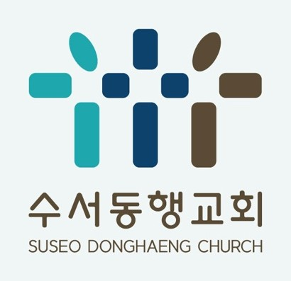
2026년 · 6권 44호
11월 1일 주일예배
주님은 선하시며, 그의 인자하심 영원하다. 그의 성실하심 대대에 미친다.
시편 100편 5절
예배 순서
1찬양과 기도23장 · 259장 · 488장
23장 만 입이 내게 있으면 
259장 예수 십자가에 흘린 피로써 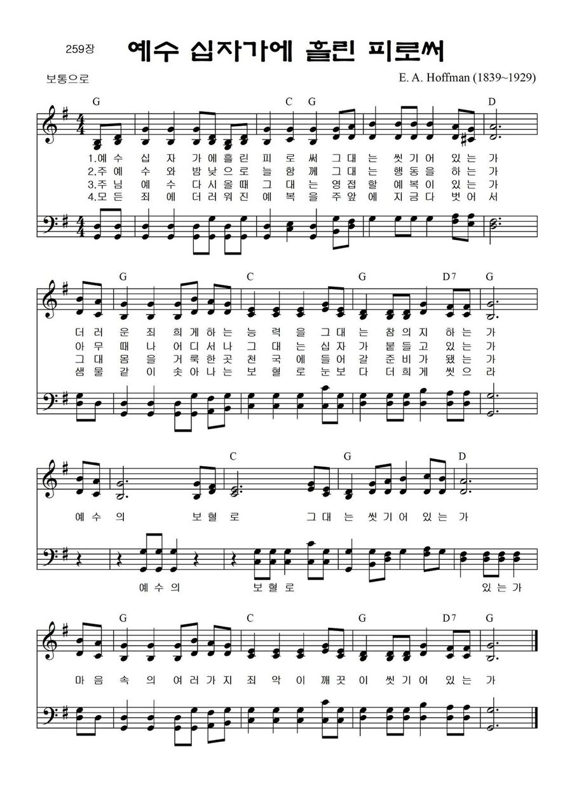
488장 이 몸의 소망 무언가 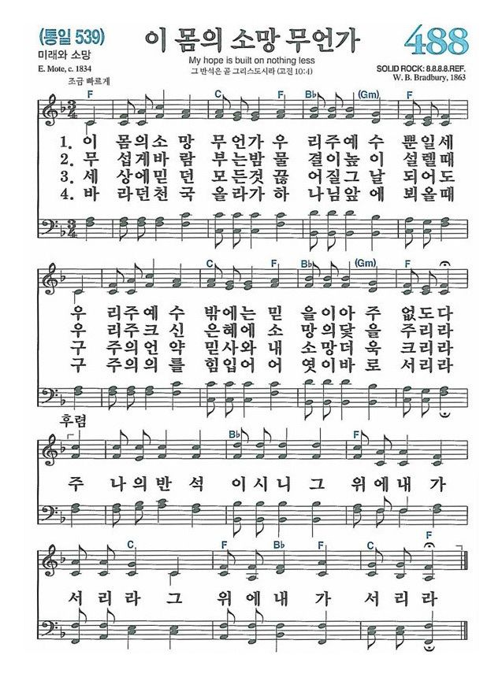
2광고5가지 소식
새벽말씀동행은 '스가랴' 본문으로 진행 중입니다.
스가랴 말씀을 통해 몸과 영혼을 깨우시는 아침이 되시기 바랍니다.
교회 주보가 바뀌었습니다.
링크를 단톡방에 올려드렸습니다. 홈 화면에 추가해 주시면 매주 바뀐 주보를 확인할 수 있습니다.
새벽말씀동행이 교회 주보 광고란 안으로 들어갔습니다.
주보를 홈 화면에 추가하시면, 매일 아침 6시에 주보에 당일 새벽말씀이 추가됩니다.
다음 주일은 상주에서 나들이 예배를 드립니다.
출발 시간은 오전 8시 30분, 모이는 장소는 청와옥 앞 주차장입니다.
도착 시간은 오후 9시까지입니다.
오늘은 성찬 주일입니다.
예배 중에 성찬이 있습니다.
3성경본문낭독요한복음 15장 1-11절
요한복음 15장 1-11절 · 새번역
1나는 참 포도나무요, 내 아버지는 농부이시다.
2내게 붙어 있으면서도 열매를 맺지 못하는 가지는, 아버지께서 다 잘라버리시고, 열매를 맺는 가지는 더 많은 열매를 맺게 하시려고 손질하신다.
3너희는, 내가 너희에게 말한 그 말로 말미암아 이미 깨끗하게 되었다.
4내 안에 머물러 있어라. 그리하면 나도 너희 안에 머물러 있겠다. 가지가 포도나무에 붙어 있지 아니하면 스스로 열매를 맺을 수 없는 것과 같이, 너희도 내 안에 머물러 있지 아니하면 열매를 맺을 수 없다.
5나는 포도나무요, 너희는 가지이다. 사람이 내 안에 머물러 있고, 내가 그 안에 머물러 있으면, 그는 많은 열매를 맺는다. 너희는 나를 떠나서는 아무것도 할 수 없다.
6사람이 내 안에 머물러 있지 아니하면, 그는 쓸모 없는 가지처럼 버림을 받아서 말라 버린다. 사람들이 그것을 모아다가, 불에 던져서 태워 버린다.
7너희가 내 안에 머물러 있고, 내 말이 너희 안에 머물러 있으면, 너희가 무엇을 구하든지 다 그대로 이루어질 것이다.
8너희가 열매를 많이 맺어서 내 제자가 되면, 이것으로 내 아버지께서 영광을 받으실 것이다.
9아버지께서 나를 사랑하신 것과 같이, 나도 너희를 사랑하였다. 너희는 내 사랑 안에 머물러 있어라.
10너희가 내 계명을 지키면, 내 사랑 안에 머물러 있을 것이다. 그것은 마치 내가 내 아버지의 계명을 지켜서, 그 사랑 안에 머물러 있는 것과 같다.
11내가 너희에게 이러한 말을 한 것은, 내 기쁨이 너희 안에 있게 하고, 또 너희의 기쁨이 넘치게 하려는 것이다.
4설교나는 가지입니다
요한복음 강해
나는 가지입니다
요한복음 15장 1-11절
[들어가며] 너 자신을 알라
지난 요한복음 설교 (요한복음 14:25-31 「예수님이 남겨주신 평화」)
- 예수님이 남겨주신 평화는 문제가 없어서가 아니라 아버지와의 관계에서 오는 평화입니다
- 이 평화는 우리 손으로 만드는 것이 아니라 믿음의 빈손으로 받는 선물입니다
- 그래서 예수님 안에서 우리는 결코 혼자일 수 없습니다
이번 주 핵심 질문
"여러분은 여러분 자신을 무엇으로 알고 살아가고 계세요?"
→ 예수님은 "너희는 가지이다"라고 알려 주셨습니다. 내가 무엇인지 아는 것이 기쁨과 이어져 있습니다.
[본문탐구] 가지로 산다는 것
가. 나무에 붙어서 사는 인생 (1-4, 9-10절)
1) 나무에서 나온 가지
요 15:1 "나는 참 포도나무요, 내 아버지는 농부이시다."
요 15:3 "너희는, 내가 너희에게 말한 그 말로 말미암아 이미 깨끗하게 되었다."
가지는 누가 꺾어다 붙여 놓은 것이 아니라 나무 속에서 자라 나온 것입니다. 그리스도 안에 있는 우리도 그렇습니다. 주님의 말씀이 우리를 이미 그 나무에서 나온 가지로 만들어 주셨어요.
2) 받아서 사는 존재
요 15:4 "내 안에 머물러 있어라. 그리하면 나도 너희 안에 머물러 있겠다. 가지가 포도나무에 붙어 있지 아니하면 스스로 열매를 맺을 수 없는 것과 같이, 너희도 내 안에 머물러 있지 아니하면 열매를 맺을 수 없다."
가지는 스스로 물 한 방울 길어 올리지 못하고, 뿌리에서 흘러오는 것을 받아서 삽니다. 이 말씀은 가지를 겁주시려는 말씀이 아니라 "너는 받아서 사는 존재"라고 알려 주시는 말씀입니다. 가지는 포도나무가 아닙니다.
3) 흘러오는 것은 사랑입니다
요 15:9 "아버지께서 나를 사랑하신 것과 같이, 나도 너희를 사랑하였다."
뿌리에서 가지 끝까지 흘러오는 것은 사랑입니다. 이 사랑은 가지가 무언가를 하기 전에 이미 와 있어요. 우리는 성부와 성자 하나님의 사랑을 먹고 살도록 지어진 존재입니다.
4) 사랑 안에 머무는 순종
요 15:9-10 "너희는 내 사랑 안에 머물러 있어라. 너희가 내 계명을 지키면, 내 사랑 안에 머물러 있을 것이다. 그것은 마치 내가 내 아버지의 계명을 지켜서, 그 사랑 안에 머물러 있는 것과 같다."
먼저 받은 사랑에 순종으로 응답하며 사는 것, 그것이 머무는 것입니다. 사랑과 순종은 따로따로가 아니에요. 순종은 한 번도 넘어지지 않는 완전함이 아니라, 넘어져도 다시 그 사랑 쪽으로 몸을 돌리는 것입니다.
가지는 그 존재 자체가 나무의 사랑을 받아야 사는 존재입니다. 그 사랑 안에 붙어 있는 것이 가지다운 삶입니다.
나. 열매를 맺는 인생 (2, 5, 8절)
1) 포도나무에는 포도가 열립니다
요 15:5 "사람이 내 안에 머물러 있고, 내가 그 안에 머물러 있으면, 그는 많은 열매를 맺는다."
열매는 세상이 말하는 업적이나 명성, 재산이 아닙니다. 포도나무에서 감이나 사과가 열리지 않듯, 어떤 열매가 맺힐지는 가지가 아니라 나무가 정합니다.
2) 배어 나오는 나무의 성품
요 15:10 "그것은 마치 내가 내 아버지의 계명을 지켜서, 그 사랑 안에 머물러 있는 것과 같다."
고향 말씨가 고쳐도 배어 나오듯, 가지에서는 나무의 성품이 묻어납니다. 성도에게서는 하나님 아버지와 아들의 성품이 배어 나오고, 그것이 열매입니다. 그 중심은 아버지께서 아들을 사랑하신 그 사랑과, 그 사랑 안에 머무신 아들의 순종이에요. 갈고닦은 덕목이 아니라 붙어 살아서 묻어나는 것입니다.
3) 농부의 손질
요 15:2 "내게 붙어 있으면서도 열매를 맺지 못하는 가지는, 아버지께서 다 잘라버리시고, 열매를 맺는 가지는 더 많은 열매를 맺게 하시려고 손질하신다."
농부의 가위는 가지를 미워해서 드는 가위가 아니라, 더 굵고 많은 열매를 맺게 하시려는 돌봄입니다. 손질을 받는 가지는 열매를 맺는 가지예요. 우리 삶의 고난의 자리도 더 풍성한 열매를 기대하시는 하나님의 손질로 볼 수 있지 않을까요?
4) 열매로 아버지께서 영광을 받으십니다
요 15:8 "너희가 열매를 많이 맺어서 내 제자가 되면, 이것으로 내 아버지께서 영광을 받으실 것이다."
포도송이는 굵은 줄기가 아니라 가지에 달리고, 잘 익은 포도를 보면 칭찬은 농부에게 갑니다. 성도의 열매맺음은 아버지의 영광과 이렇게 가깝게 이어져 있어요. 열매는 제자가 되려고 따내는 자격증이 아니라, 이미 그분의 가지라는 것이 드러나는 모습입니다. 그래서 농부이신 아버지는 가지를 아무렇게나 방치하지 않으십니다.
가지에 맺히는 열매에는 포도나무가 묻어나고, 그 열매로 농부이신 아버지께서 영광을 받으십니다.
[가지의 인생 한눈에 보기]
가지는 본문 어디서 왔나요 나무에서 자라 나왔습니다 — 말씀으로 이미 깨끗해졌습니다 3절 무엇으로 사나요 뿌리에서 흘러오는 사랑을 받아서 삽니다 4, 9절 어떻게 머무나요 먼저 받은 사랑에 순종으로 응답합니다 10절 무엇이 맺히나요 포도나무의 성품 — 사랑과 순종 5, 8절 무엇을 누리나요 농부와 포도나무의 기쁨이 넘칩니다 11절
[나가며] 기쁨으로 초대받은 가지
요 15:11 "내가 너희에게 이러한 말을 한 것은, 내 기쁨이 너희 안에 있게 하고, 또 너희의 기쁨이 넘치게 하려는 것이다."
14장에서 예수님은 제자들에게 평화를 남겨 주셨습니다. 15장에서는 기쁨 속에서 사는 법을 말씀하십니다. 나무에 붙어 사는 것도, 열매를 맺는 것도 결국 가지에게 기쁨이 되어 돌아갑니다.
이 말씀을 하신 때는 잔칫날이 아니라 유다가 나가고 예수님을 잡으러 오는 무리가 다가오던 그 밤이었습니다. 그 밤에도 예수님 안에는 아버지의 사랑 안에서 끝까지 순종하시는 아들의 기쁨이 있었고, 그 기쁨이 가지인 우리에게 흘러와 넘칩니다.
가지는 스스로 기쁨을 만들어 내는 존재가 아니라, 농부와 포도나무의 충만한 기쁨 속에서 살아가도록 초대받은 존재입니다. 그러니 기쁨을 찾아 다른 곳을 헤매지 않으셨으면 좋겠습니다. 기쁨은 멀리 있지 않습니다. 우리는 "너희는 가지이다"라는 말씀을 들었습니다.
[삶으로 말씀 읽기]
-
나는 나 자신을 무엇으로 알고 살아왔나요? 가지인 내가 스스로 나무가 되어 살아 보려 했던 자리가 있다면 솔직하게 적어 봅시다.
-
내가 무언가를 하기 전에 먼저 흘러와 있던 하나님의 사랑을 떠올려 보고, 그 사랑에 순종으로 응답하고 싶은 자리를 적어 봅시다.
-
지금 내 삶에 농부의 가위처럼 느껴지는 자리가 있나요? 그 자리를 더 풍성한 열매를 기대하시는 하나님의 손길로 바라보며 기도해 봅시다.
[함께 나누기]
-
고향 말씨처럼, 다른 성도의 삶에서 예수님의 성품이 묻어나는 것을 보았던 경험이 있다면 함께 나누어 봅시다.
-
기쁨을 찾아 다른 곳을 헤매었던 경험을 나누고, 가지로서 누리는 주님의 기쁨 안에 머물 수 있도록 서로를 위해 기도합시다.
이번 주의 고백
"나는 포도나무에서 나온 가지입니다. 먼저 흘러온 사랑을 받아 그 안에 머물고, 순종으로 응답하며 삽니다. 그렇게 붙어 사는 가지에게서 포도나무의 열매가 묻어나고, 그 열매로 아버지께서 영광을 받으시며, 주님의 기쁨이 우리 안에 넘칩니다."5찬양425장
425장 주님의 뜻을 이루소서 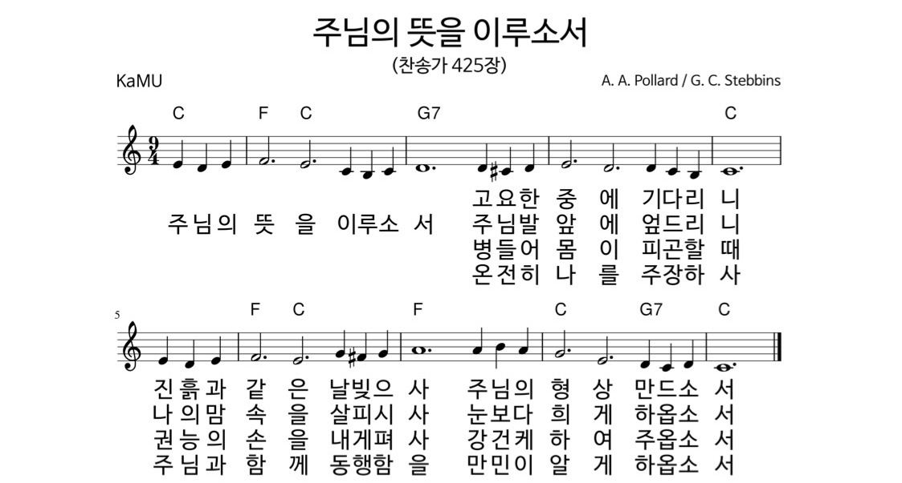
- 6결단기도
7성찬228장
228장 오 나의 주님 친히 뵈오니 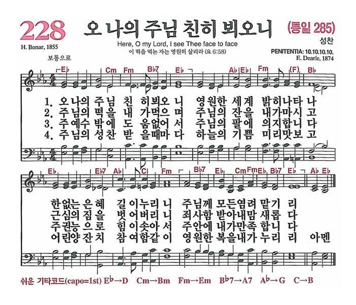
- 8축도
오시는 길
월별 주보
2026년 11월 주보
주일 1번 · 날짜를 누르면 그 주 주보가 펼쳐집니다.
11월 1일6권 44호이번 주나는 가지입니다
주님은 선하시며, 그의 인자하심 영원하다. 그의 성실하심 대대에 미친다.
시편 100편 5절
예배 순서
1찬양과 기도23장 · 259장 · 488장
23장 만 입이 내게 있으면 259장 예수 십자가에 흘린 피로써 488장 이 몸의 소망 무언가 2광고5가지 소식
새벽말씀동행은 '스가랴' 본문으로 진행 중입니다.
스가랴 말씀을 통해 몸과 영혼을 깨우시는 아침이 되시기 바랍니다.
교회 주보가 바뀌었습니다.
링크를 단톡방에 올려드렸습니다. 홈 화면에 추가해 주시면 매주 바뀐 주보를 확인할 수 있습니다.
새벽말씀동행이 교회 주보 광고란 안으로 들어갔습니다.
주보를 홈 화면에 추가하시면, 매일 아침 6시에 주보에 당일 새벽말씀이 추가됩니다.
다음 주일은 상주에서 나들이 예배를 드립니다.
출발 시간은 오전 8시 30분, 모이는 장소는 청와옥 앞 주차장입니다.
도착 시간은 오후 9시까지입니다.
오늘은 성찬 주일입니다.
예배 중에 성찬이 있습니다.
3성경본문낭독요한복음 15장 1-11절
요한복음 15장 1-11절 · 새번역
1나는 참 포도나무요, 내 아버지는 농부이시다.
2내게 붙어 있으면서도 열매를 맺지 못하는 가지는, 아버지께서 다 잘라버리시고, 열매를 맺는 가지는 더 많은 열매를 맺게 하시려고 손질하신다.
3너희는, 내가 너희에게 말한 그 말로 말미암아 이미 깨끗하게 되었다.
4내 안에 머물러 있어라. 그리하면 나도 너희 안에 머물러 있겠다. 가지가 포도나무에 붙어 있지 아니하면 스스로 열매를 맺을 수 없는 것과 같이, 너희도 내 안에 머물러 있지 아니하면 열매를 맺을 수 없다.
5나는 포도나무요, 너희는 가지이다. 사람이 내 안에 머물러 있고, 내가 그 안에 머물러 있으면, 그는 많은 열매를 맺는다. 너희는 나를 떠나서는 아무것도 할 수 없다.
6사람이 내 안에 머물러 있지 아니하면, 그는 쓸모 없는 가지처럼 버림을 받아서 말라 버린다. 사람들이 그것을 모아다가, 불에 던져서 태워 버린다.
7너희가 내 안에 머물러 있고, 내 말이 너희 안에 머물러 있으면, 너희가 무엇을 구하든지 다 그대로 이루어질 것이다.
8너희가 열매를 많이 맺어서 내 제자가 되면, 이것으로 내 아버지께서 영광을 받으실 것이다.
9아버지께서 나를 사랑하신 것과 같이, 나도 너희를 사랑하였다. 너희는 내 사랑 안에 머물러 있어라.
10너희가 내 계명을 지키면, 내 사랑 안에 머물러 있을 것이다. 그것은 마치 내가 내 아버지의 계명을 지켜서, 그 사랑 안에 머물러 있는 것과 같다.
11내가 너희에게 이러한 말을 한 것은, 내 기쁨이 너희 안에 있게 하고, 또 너희의 기쁨이 넘치게 하려는 것이다.
4설교나는 가지입니다
요한복음 강해
나는 가지입니다
요한복음 15장 1-11절
[들어가며] 너 자신을 알라
지난 요한복음 설교 (요한복음 14:25-31 「예수님이 남겨주신 평화」)
- 예수님이 남겨주신 평화는 문제가 없어서가 아니라 아버지와의 관계에서 오는 평화입니다
- 이 평화는 우리 손으로 만드는 것이 아니라 믿음의 빈손으로 받는 선물입니다
- 그래서 예수님 안에서 우리는 결코 혼자일 수 없습니다
이번 주 핵심 질문
"여러분은 여러분 자신을 무엇으로 알고 살아가고 계세요?"
→ 예수님은 "너희는 가지이다"라고 알려 주셨습니다. 내가 무엇인지 아는 것이 기쁨과 이어져 있습니다.
[본문탐구] 가지로 산다는 것
가. 나무에 붙어서 사는 인생 (1-4, 9-10절)
1) 나무에서 나온 가지
요 15:1 "나는 참 포도나무요, 내 아버지는 농부이시다."
요 15:3 "너희는, 내가 너희에게 말한 그 말로 말미암아 이미 깨끗하게 되었다."
가지는 누가 꺾어다 붙여 놓은 것이 아니라 나무 속에서 자라 나온 것입니다. 그리스도 안에 있는 우리도 그렇습니다. 주님의 말씀이 우리를 이미 그 나무에서 나온 가지로 만들어 주셨어요.
2) 받아서 사는 존재
요 15:4 "내 안에 머물러 있어라. 그리하면 나도 너희 안에 머물러 있겠다. 가지가 포도나무에 붙어 있지 아니하면 스스로 열매를 맺을 수 없는 것과 같이, 너희도 내 안에 머물러 있지 아니하면 열매를 맺을 수 없다."
가지는 스스로 물 한 방울 길어 올리지 못하고, 뿌리에서 흘러오는 것을 받아서 삽니다. 이 말씀은 가지를 겁주시려는 말씀이 아니라 "너는 받아서 사는 존재"라고 알려 주시는 말씀입니다. 가지는 포도나무가 아닙니다.
3) 흘러오는 것은 사랑입니다
요 15:9 "아버지께서 나를 사랑하신 것과 같이, 나도 너희를 사랑하였다."
뿌리에서 가지 끝까지 흘러오는 것은 사랑입니다. 이 사랑은 가지가 무언가를 하기 전에 이미 와 있어요. 우리는 성부와 성자 하나님의 사랑을 먹고 살도록 지어진 존재입니다.
4) 사랑 안에 머무는 순종
요 15:9-10 "너희는 내 사랑 안에 머물러 있어라. 너희가 내 계명을 지키면, 내 사랑 안에 머물러 있을 것이다. 그것은 마치 내가 내 아버지의 계명을 지켜서, 그 사랑 안에 머물러 있는 것과 같다."
먼저 받은 사랑에 순종으로 응답하며 사는 것, 그것이 머무는 것입니다. 사랑과 순종은 따로따로가 아니에요. 순종은 한 번도 넘어지지 않는 완전함이 아니라, 넘어져도 다시 그 사랑 쪽으로 몸을 돌리는 것입니다.
가지는 그 존재 자체가 나무의 사랑을 받아야 사는 존재입니다. 그 사랑 안에 붙어 있는 것이 가지다운 삶입니다.
나. 열매를 맺는 인생 (2, 5, 8절)
1) 포도나무에는 포도가 열립니다
요 15:5 "사람이 내 안에 머물러 있고, 내가 그 안에 머물러 있으면, 그는 많은 열매를 맺는다."
열매는 세상이 말하는 업적이나 명성, 재산이 아닙니다. 포도나무에서 감이나 사과가 열리지 않듯, 어떤 열매가 맺힐지는 가지가 아니라 나무가 정합니다.
2) 배어 나오는 나무의 성품
요 15:10 "그것은 마치 내가 내 아버지의 계명을 지켜서, 그 사랑 안에 머물러 있는 것과 같다."
고향 말씨가 고쳐도 배어 나오듯, 가지에서는 나무의 성품이 묻어납니다. 성도에게서는 하나님 아버지와 아들의 성품이 배어 나오고, 그것이 열매입니다. 그 중심은 아버지께서 아들을 사랑하신 그 사랑과, 그 사랑 안에 머무신 아들의 순종이에요. 갈고닦은 덕목이 아니라 붙어 살아서 묻어나는 것입니다.
3) 농부의 손질
요 15:2 "내게 붙어 있으면서도 열매를 맺지 못하는 가지는, 아버지께서 다 잘라버리시고, 열매를 맺는 가지는 더 많은 열매를 맺게 하시려고 손질하신다."
농부의 가위는 가지를 미워해서 드는 가위가 아니라, 더 굵고 많은 열매를 맺게 하시려는 돌봄입니다. 손질을 받는 가지는 열매를 맺는 가지예요. 우리 삶의 고난의 자리도 더 풍성한 열매를 기대하시는 하나님의 손질로 볼 수 있지 않을까요?
4) 열매로 아버지께서 영광을 받으십니다
요 15:8 "너희가 열매를 많이 맺어서 내 제자가 되면, 이것으로 내 아버지께서 영광을 받으실 것이다."
포도송이는 굵은 줄기가 아니라 가지에 달리고, 잘 익은 포도를 보면 칭찬은 농부에게 갑니다. 성도의 열매맺음은 아버지의 영광과 이렇게 가깝게 이어져 있어요. 열매는 제자가 되려고 따내는 자격증이 아니라, 이미 그분의 가지라는 것이 드러나는 모습입니다. 그래서 농부이신 아버지는 가지를 아무렇게나 방치하지 않으십니다.
가지에 맺히는 열매에는 포도나무가 묻어나고, 그 열매로 농부이신 아버지께서 영광을 받으십니다.
[가지의 인생 한눈에 보기]
가지는 본문 어디서 왔나요 나무에서 자라 나왔습니다 — 말씀으로 이미 깨끗해졌습니다 3절 무엇으로 사나요 뿌리에서 흘러오는 사랑을 받아서 삽니다 4, 9절 어떻게 머무나요 먼저 받은 사랑에 순종으로 응답합니다 10절 무엇이 맺히나요 포도나무의 성품 — 사랑과 순종 5, 8절 무엇을 누리나요 농부와 포도나무의 기쁨이 넘칩니다 11절
[나가며] 기쁨으로 초대받은 가지
요 15:11 "내가 너희에게 이러한 말을 한 것은, 내 기쁨이 너희 안에 있게 하고, 또 너희의 기쁨이 넘치게 하려는 것이다."
14장에서 예수님은 제자들에게 평화를 남겨 주셨습니다. 15장에서는 기쁨 속에서 사는 법을 말씀하십니다. 나무에 붙어 사는 것도, 열매를 맺는 것도 결국 가지에게 기쁨이 되어 돌아갑니다.
이 말씀을 하신 때는 잔칫날이 아니라 유다가 나가고 예수님을 잡으러 오는 무리가 다가오던 그 밤이었습니다. 그 밤에도 예수님 안에는 아버지의 사랑 안에서 끝까지 순종하시는 아들의 기쁨이 있었고, 그 기쁨이 가지인 우리에게 흘러와 넘칩니다.
가지는 스스로 기쁨을 만들어 내는 존재가 아니라, 농부와 포도나무의 충만한 기쁨 속에서 살아가도록 초대받은 존재입니다. 그러니 기쁨을 찾아 다른 곳을 헤매지 않으셨으면 좋겠습니다. 기쁨은 멀리 있지 않습니다. 우리는 "너희는 가지이다"라는 말씀을 들었습니다.
[삶으로 말씀 읽기]
-
나는 나 자신을 무엇으로 알고 살아왔나요? 가지인 내가 스스로 나무가 되어 살아 보려 했던 자리가 있다면 솔직하게 적어 봅시다.
-
내가 무언가를 하기 전에 먼저 흘러와 있던 하나님의 사랑을 떠올려 보고, 그 사랑에 순종으로 응답하고 싶은 자리를 적어 봅시다.
-
지금 내 삶에 농부의 가위처럼 느껴지는 자리가 있나요? 그 자리를 더 풍성한 열매를 기대하시는 하나님의 손길로 바라보며 기도해 봅시다.
[함께 나누기]
-
고향 말씨처럼, 다른 성도의 삶에서 예수님의 성품이 묻어나는 것을 보았던 경험이 있다면 함께 나누어 봅시다.
-
기쁨을 찾아 다른 곳을 헤매었던 경험을 나누고, 가지로서 누리는 주님의 기쁨 안에 머물 수 있도록 서로를 위해 기도합시다.
이번 주의 고백
"나는 포도나무에서 나온 가지입니다. 먼저 흘러온 사랑을 받아 그 안에 머물고, 순종으로 응답하며 삽니다. 그렇게 붙어 사는 가지에게서 포도나무의 열매가 묻어나고, 그 열매로 아버지께서 영광을 받으시며, 주님의 기쁨이 우리 안에 넘칩니다."5찬양425장
425장 주님의 뜻을 이루소서 - 6결단기도
7성찬228장
228장 오 나의 주님 친히 뵈오니 - 8축도
2026년 10월 주보
주일 4번 · 날짜를 누르면 그 주 주보가 펼쳐집니다.
10월 25일6권 43호예수님이 남겨주신 평화
주님은 선하시며, 그의 인자하심 영원하다. 그의 성실하심 대대에 미친다.
시편 100편 5절
예배 순서
1찬양과 기도486장 · 442장 · 406장
486장 이 세상에 근심된 일이 많고 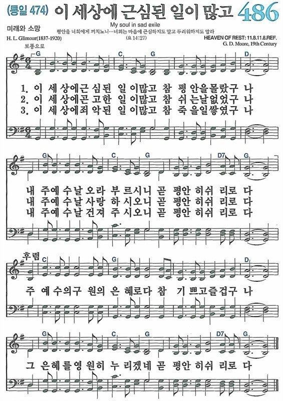
442장 저 장미꽃 위에 이슬 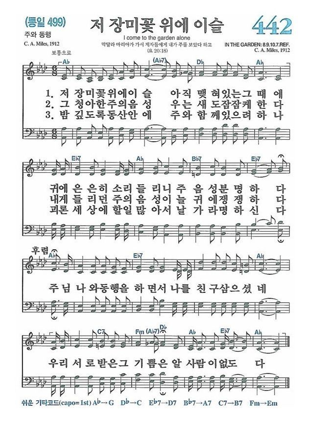
406장 곤한 내 영혼 편히 쉴 곳과 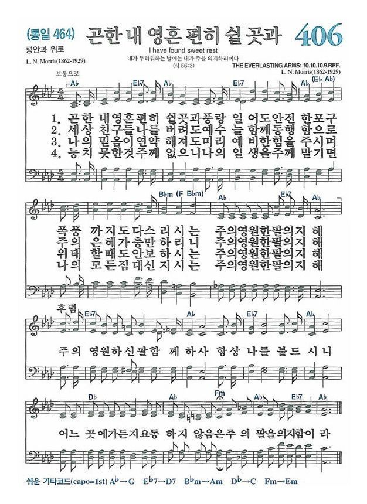
2광고3가지 소식
새벽말씀동행 스가랴 말씀이 진행되고 있습니다.
소선지서의 말씀이 우리의 삶에 도전을 주는 말씀으로 사용되기를 바랍니다.
다음 주일은 11월 첫 주일로 성찬주일로 드려집니다.
몸과 마음을 잘 준비하여 오셔서 성찬에 참여하시기 바랍니다.
11월 8일 야외 나들이 예배를 드리려고 합니다.
상주에서 예배를 드리려 합니다.
오전 9시 양재에서 출발합니다.
3성경본문낭독요한복음 14장 25-31절
요한복음 14장 25-31절 · 새번역
25내가 너희와 함께 있는 동안에, 나는 이 말을 너희에게 말하였다.
26그러나 보혜사, 곧 아버지께서 내 이름으로 보내실 성령께서, 너희에게 모든 것을 가르쳐 주실 것이며, 또 내가 너희에게 말한 모든 것을 생각나게 하실 것이다.
27나는 평화를 너희에게 남겨 준다. 나는 내 평화를 너희에게 준다. 내가 너희에게 주는 평화는 세상이 주는 것과 같지 않다. 너희는 마음에 근심하지 말고, 두려워하지도 말아라.
28너희는 내가 갔다가 너희에게로 다시 온다고 한 내 말을 들었다. 너희가 나를 사랑한다면, 내가 아버지께로 가는 것을 기뻐했을 것이다. 내 아버지는 나보다 크신 분이기 때문이다.
29지금 나는 그 일이 일어나기 전에 미리 너희에게 말하였다. 이것은 그 일이 일어날 때에 너희로 하여금 믿게 하려는 것이다.
30나는 너희와 더 이상 말을 많이 하지 않겠다. 이 세상의 통치자가 가까이 오고 있기 때문이다. 그는 나를 어떻게 할 아무런 권한이 없다.
31다만 내가 아버지를 사랑한다는 것과, 아버지께서 내게 분부하신 그대로 내가 행한다는 것을, 세상에 알리려는 것이다. 일어나거라. 여기에서 떠나자.
4설교예수님이 남겨주신 평화
요한복음 강해
예수님이 남겨주신 평화
요한복음 14장 25-31절
[들어가며] '근심'과 '두려움' 앞에서
지난 요한복음 설교 (요한복음 14:15-24 「사랑이 먼저 찾아옵니다」)
- 계명을 지키는 삶은 의무로 가득한 삶이 아니라 사랑의 초대입니다
- 보혜사 성령은 실패할 제자들에게 먼저 약속된 선물입니다
- 아버지와 아들께서 우리와 함께 사십니다 — 사랑과 순종은 하나의 사랑의 서로 다른 모습입니다
이번 주 핵심 질문
"예수님이 남겨주신 평화는 어떤 평화일까요?"
→ 아버지와의 관계에서 오는 평화, 믿음의 빈손으로 받아 무엇에게도 빼앗길 수 없는 평화입니다.
[본문탐구] 예수님이 남겨주신 평화
가. 떠나시며 남기신 평화 (25-27절)
1) 함께 있는 동안에 남기신 말씀
요 14:25 "내가 너희와 함께 있는 동안에, 나는 이 말을 너희에게 말하였다."
요 13:1 "유월절 전에, 예수께서는 자기가 이 세상을 떠나서 아버지께로 가야 할 때가 된 것을 아시고, 세상에 있는 자기의 사람들을 사랑하시되, 끝까지 사랑하셨다."
예수님은 떠나실 때를 아셨습니다. 이 밤이 지나면 십자가로 가셔야 했지요. 그래서 함께 있는 동안에, 남을 제자들을 위해 말씀을 남기셨습니다. 끝까지 사랑하신 거예요.
2) 빈손으로 두지 않으십니다
요 14:26 "그러나 보혜사, 곧 아버지께서 내 이름으로 보내실 성령께서, 너희에게 모든 것을 가르쳐 주실 것이며, 또 내가 너희에게 말한 모든 것을 생각나게 하실 것이다."
아버지께서 예수님의 이름으로 성령을 보내십니다. 성령께서는 예수님이 하신 말씀을 생각나게 하시고, 그 말씀 안에서 모든 것을 가르쳐 주십니다. 떠나실 때 제자들이 빈손으로 남지 않게 하신 것이지요.
3) 버려진 자리가 아니라 평화로
요 14:27 "나는 평화를 너희에게 남겨 준다."
요 14:18 "나는 너희를 고아처럼 버려 두지 아니하고, 너희에게 다시 오겠다."
27절의 '남겨 준다'는 18절의 '버려 두다'와 같은 단어입니다. 예수님께서 떠나신 뒤 그 자리는 텅 빈 자리, 버려진 자리로 남지 않고 평화로 채워진다는 말씀이에요.
떠나신 자리는 텅 빈 자리가 아니라, 예수님이 남겨주신 평화로 채워집니다.
나. '내 평화' — 아버지와의 관계에서 오는 평화 (27, 30-31절)
1) 문제가 없어서 누리는 평화가 아닙니다
요 14:30 "나는 너희와 더 이상 말을 많이 하지 않겠다. 이 세상의 통치자가 가까이 오고 있기 때문이다. 그는 나를 어떻게 할 아무런 권한이 없다."
예수님은 곧 체포되실 것과 십자가를 향해 가야 할 것을 아셨습니다. '내 평화를 준다'는 말씀은 최고 등급의 폭풍우가 몰려오는 바로 그 순간에 하신 말씀입니다.
2) 그 순간에도 아버지를 사랑하고 그 뜻 안에 계셨습니다
요 14:31 "다만 내가 아버지를 사랑한다는 것과, 아버지께서 내게 분부하신 그대로 내가 행한다는 것을, 세상에 알리려는 것이다."
폭풍우 속에서도 예수님은 하나님 아버지를 사랑하셨고, 아버지의 뜻 안에 계셨습니다. 예수님이 누리신 평화는 아버지와의 관계를 통해 누리는 평화였어요. 이 평화를 '내 평화'라 부르시고 우리에게 남겨 주셨으니, 우리도 예수님처럼 아버지와 함께 있는 사람이 된 것입니다.
3) 세상이 주는 것과 같지 않습니다
요 14:27 "내가 너희에게 주는 평화는 세상이 주는 것과 같지 않다."
세상이 주는 평화는 여건이 갖춰져야 오는 평화입니다. 몸이 건강하고, 자녀들이 제 몫을 하고, 여유 자금이 있을 때 마음이 놓이지요. 그런데 이 평화는 내가 쌓아서 내가 지켜야 하는 평화라서 언제나 불안을 품고 있습니다. 여건 하나가 무너지면 평화도 같이 무너지지요.
예수님의 평화는 문제가 없어서가 아니라, 아버지와의 관계 안에 있어서 누리는 평화입니다.
다. 이 평화는 어떻게 우리의 것이 되었을까요? (26, 29, 27절)
1) 끊어진 관계, 빙빙 도는 불칼
창 3:8 "그 남자와 그 아내는, 날이 저물고 바람이 서늘할 때에, 주 하나님이 동산을 거니시는 소리를 들었다. 남자와 그 아내는 주 하나님의 낯을 피하여서, 동산 나무 사이에 숨었다."
창 3:24 "그를 쫓아내신 다음에, 에덴 동산의 동쪽에 그룹들을 세우시고, 빙빙 도는 불칼을 두셔서, 생명나무에 이르는 길을 지키게 하셨다."
처음 사람은 하나님과 함께 동산을 거닐며 교제하는 평화를 누렸습니다. 그러나 스스로 주인이 되려는 죄로 그 관계가 끊어졌고, 사람은 하나님을 두려워하여 숨었습니다. 불칼은 평화가 아니라 단절이고 심판이며 죽음에 대한 두려움입니다. 그래서 세상이 주는 평화로는 하나님과 끊어진 이 자리를 채울 수가 없습니다.
2) 그 칼 앞에 서신 예수님
요 14:30 "그는 나를 어떻게 할 아무런 권한이 없다."
요 10:18 "아무도 내게서 내 목숨을 빼앗아 가지 못한다. 나는 스스로 원해서 내 목숨을 버린다."
이 세상의 통치자는 예수님을 어떻게 할 권한이 없었습니다. 아무 죄도 없으셨고, 하나님의 아들로서 권세도 있으셨으니까요. 그럼에도 예수님은 아버지와 자신에게 주신 사람들을 사랑하셔서 스스로 십자가의 자리로 가셨습니다. 우리가 받아야 할 그 칼을 대신 받으셔서, 하나님과 다시 교제하는 길이 열렸습니다.
3) 성령께서 믿게 하십니다
요 14:26 "또 내가 너희에게 말한 모든 것을 생각나게 하실 것이다."
요 14:29 "지금 나는 그 일이 일어나기 전에 미리 너희에게 말하였다. 이것은 그 일이 일어날 때에 너희로 하여금 믿게 하려는 것이다."
열린 길로 걸어 들어가려면 그 길을 믿어야 합니다. 그 믿음을 위해 성령께서 오셔서 예수님의 말씀을 생각나게 하시고 깨닫게 하십니다. 그렇게 예수님을 믿게 된 나에게 불칼은 거두어졌고, 하나님 아버지와 함께 걷는 평화가 선물로 주어졌습니다. 이 평화는 우리 손으로 만드는 평화가 아니라 믿음이라는 빈손으로 받는 선물이에요.
4) 근심하지 말고, 두려워하지도 말아라
요 14:1 "너희는 마음에 근심하지 말아라. 하나님을 믿고 또 나를 믿어라."
요 14:27 "너희는 마음에 근심하지 말고, 두려워하지도 말아라."
이 말씀은 마음이 어느 순간에도 흔들리면 안 된다는 말씀이 아닙니다. 이제 하나님 아버지를 향한 길이 열렸으니, 그 근심과 두려움을 끌어안고 있지 말고 아버지께 나누며 그 품 안에서 평화를 누리라는 초대입니다.
예수님 안에서 우리는 결코 혼자일 수 없습니다. 성도는 무엇에게도 빼앗길 수 없는 평화를 가진 사람입니다.
[세상이 주는 평화, 예수님이 남겨주신 평화]
세상이 주는 평화 예수님이 남겨주신 평화 어디서 오나요 여건이 갖춰질 때 (건강, 자녀, 재물) 하나님 아버지와의 관계에서 (31절) 누가 지키나요 내가 쌓아서 내가 지켜야 합니다 믿음의 빈손으로 받는 선물입니다 (26, 29절) 폭풍우가 오면 여건 하나가 무너지면 같이 무너집니다 폭풍우 앞에서도 빼앗기지 않습니다 (30절) 그 속에는 평화의 가면 뒤에 근심과 두려움이 숨어 있습니다 근심과 두려움을 아버지께 나눕니다 (27절)
[나가며] 참 평화를 향한 표지판
사람들은 평화를 사랑합니다. 그래서 재물을 모으고 힘을 얻고, 권세를 가진 사람의 그늘 아래에서 평화를 누려 보려고도 하지요. 하지만 그 평화는 가면일 뿐, 그 이면에는 근심과 두려움이 숨어 있습니다.
예수님은 이런 세상의 평화에 익숙한 제자들에게 '내 평화'를 주셨습니다. 참된 왕이신 하나님 아버지와의 관계에서 주시는 평화, 지극한 사랑을 흘려보내 주시는 아버지로부터 누리는 평화입니다.
세상과는 다른 평화를 누리는 우리로 인해서, 많은 사람들이 예수님께서 남기신 이 평화를 맛볼 수 있도록 참 평화를 향한 표지판이 되어 보십시다.
[삶으로 말씀 읽기]
-
나는 지금 무엇이 갖춰져야 마음이 놓이나요? 그 여건이 흔들릴 때 내 평화는 어떻게 되는지 솔직하게 적어 봅시다.
-
요즘 마음에 있는 근심과 두려움 한 가지를 적어 보고, 그것을 혼자 끌어안지 않고 아버지께 나누는 기도를 드려 봅시다.
-
내가 다음 세대에게 남겨 주고 싶은 평화는 무엇인가요? 그들이 예수님께로 난 길을 알 수 있도록, 이번 주 이름을 불러 기도할 한 사람을 적어 봅시다.
[함께 나누기]
-
인생의 폭풍우 속에서도 하나님이 주시는 평화를 경험했던 때가 있다면 함께 나누어 봅시다.
-
세상과 다른 평화를 누리는 '참 평화를 향한 표지판'으로 살고 싶은 자리(가정, 일터, 이웃)를 나누고, 서로를 위해 기도합시다.
이번 주의 고백
"예수님이 남겨주신 평화는 아버지와의 관계에서 오는 평화입니다. 성령께서 믿게 하셔서, 우리는 믿음의 빈손으로 이 평화를 받았습니다. 그래서 예수님 안에서 우리는 결코 혼자일 수 없고, 무엇에게도 빼앗길 수 없는 평화를 가진 사람입니다."5찬양419장
419장 주 날개 밑 내가 편안히 쉬네 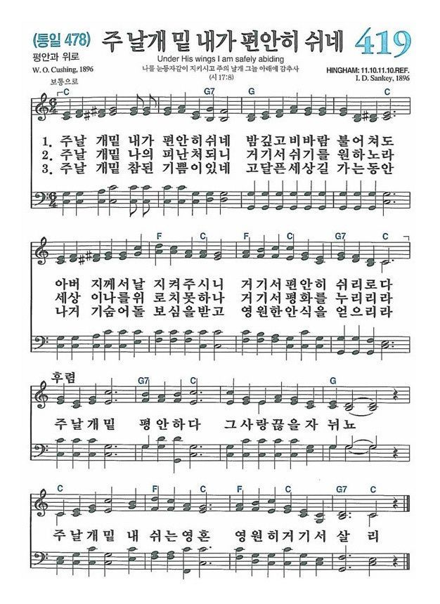
- 6결단기도
- 7축도
10월 18일6권 42호사랑이 먼저 찾아옵니다
주님은 선하시며, 그의 인자하심 영원하다. 그의 성실하심 대대에 미친다.
시 100:5
예배 순서
1찬양과 기도151장 · 550장 · 참 아름다워라
151장 만왕의 왕 내 주께서 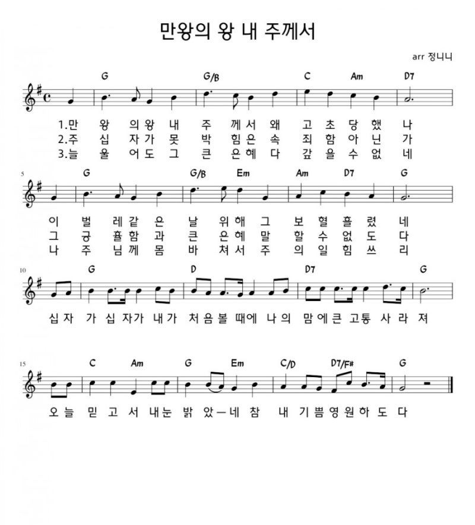
550장 시온의 영광이 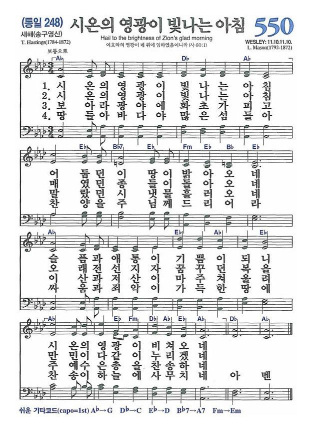
참 아름다워라 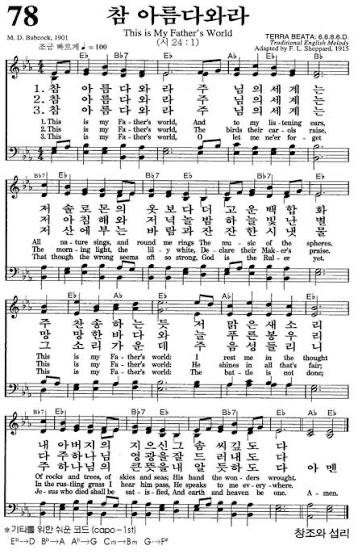
2광고3가지 소식
새벽말씀동행 학개 말씀 진행되고 있습니다.
소선지서의 말씀이 우리의 삶에 도전을 주는 말씀으로 사용되기를 바랍니다.
오늘은 예배 후 홍성문 집사님 심방이 있습니다.
예배 마치고 예배당 정리 후 출발합니다.
11월 8일 야외 나들이 예배를 드리려고 합니다.
상주에서 예배를 드리려 합니다.
3성경본문낭독요한복음 14장 15-24절
요한복음 14장 15-24절 · 새번역
15"너희가 나를 사랑하면, 내 계명을 지킬 것이다.
16내가 아버지께 구하겠다. 그리하면 아버지께서 다른 보혜사를 너희에게 보내셔서, 영원히 너희와 함께 계시게 하실 것이다.
17그는 진리의 영이시다. 세상은 그를 보지도 못하고 알지도 못하므로, 그를 맞아들일 수가 없다. 그러나 너희는 그를 안다. 그것은, 그가 너희와 함께 계시고, 또 너희 안에 계실 것이기 때문이다.
18나는 너희를 고아처럼 버려 두지 아니하고, 너희에게 다시 오겠다.
19조금 있으면, 세상이 나를 보지 못할 것이다. 그러나 너희는 나를 보게 될 것이다. 그것은 내가 살아 있고, 너희도 살아 있을 것이기 때문이다.
20그 날에 너희는, 내가 내 아버지 안에 있고, 너희가 내 안에 있으며, 또 내가 너희 안에 있음을 알게 될 것이다.
21내 계명을 받아서 지키는 사람은 나를 사랑하는 사람이요, 나를 사랑하는 사람은 내 아버지의 사랑을 받을 것이다. 그리고 나도 그 사람을 사랑하여, 그에게 나를 드러낼 것이다."
22가룟 유다가 아닌 다른 유다가 물었다. "주님, 주님께서 우리에게는 자신을 드러내시고, 세상에는 드러내려고 하지 않으시는 것은 무슨 까닭입니까?"
23예수께서 그에게 대답하셨다. "누구든지 나를 사랑하는 사람은 내 말을 지킬 것이다. 그리하면 내 아버지께서 그 사람을 사랑하실 것이요, 내 아버지와 나는 그 사람에게로 가서 그 사람과 함께 살 것이다.
24나를 사랑하지 않는 사람은 내 말을 지키지 아니한다. 너희가 듣고 있는 이 말은, 내 말이 아니라, 나를 보내신 아버지의 말씀이다."
4설교사랑이 먼저 찾아옵니다
요한복음 강해
사랑이 먼저 찾아옵니다
요한복음 14장 15-24절
[들어가며] '계명을 지킨다'는 말을 들으면
지난 요한복음 설교 (요한복음 14:11-14 「그보다 더 큰 일」)
- 예수님의 일은 하나님 아버지의 일을 드러내시는 것과 죽음에 있는 사람들을 생명으로 옮기시는 일입니다
- 예수님의 십자가와 부활과 승천으로 새로운 시대가 열렸습니다
- 그 새로운 시대 속에서 우리는 예수님의 일에 동참하게 되었습니다
이번 주 핵심 질문
"'계명을 지킨다'는 말을 들으면, 무엇이 먼저 떠오르세요?"
→ 계명을 지키는 삶은 의무로 가득한 삶이 아니라, 사랑을 주고받는 경이로운 사랑의 삶으로의 초대입니다.
[본문탐구] 사랑이 먼저 찾아옵니다
가. 주님이 먼저 사랑하시고 먼저 구하셨습니다 (15-16절)
1) '지켜라'가 아니라 '지킬 것이다'
요 14:15 "너희가 나를 사랑하면, 내 계명을 지킬 것이다."
계명이 의무라면 먼저 해내고, 해낸 만큼 받는 순서가 되겠지요. 그런데 예수님은 "지켜라"라고 하지 않으시고 "지킬 것이다"라고 하셨습니다. 명령이 아니라, 주님을 사랑하는 사람에게서 나타나는 모습을 말씀하신 거예요.
2) 제자들이 무엇을 해내기 전에 먼저 구하셨습니다
요 14:16 "내가 아버지께 구하겠다. 그리하면 아버지께서 다른 보혜사를 너희에게 보내셔서, 영원히 너희와 함께 계시게 하실 것이다."
'보혜사'는 헬라어로 '파라클레토스', 곁으로 불려 와 함께 서 주는 분이라는 뜻입니다. 제자들이 한 것이 없는데 보내 주시는 분이니, 보혜사 성령은 상이 아니라 선물입니다.
3) 실패할 사람들에게 약속된 선물
요 13:38 "네가 나를 위하여 네 목숨이라도 바치겠다는 말이냐? 내가 진정으로 진정으로 너에게 말한다. 닭이 울기 전에, 너는 세 번 나를 모른다고 할 것이다."
이 약속을 들은 사람들은 몇 시간 뒤면 흩어질 제자들이었습니다. 예수님은 성공한 사람들이 아니라 실패할 사람들에게 선물을 약속하셨어요.
4) 계명 전에 사랑이 먼저였습니다
요 13:1 "유월절 전에, 예수께서는 자기가 이 세상을 떠나서 아버지께로 가야 할 때가 된 것을 아시고, 세상에 있는 자기의 사람들을 사랑하시되, 끝까지 사랑하셨다."
요 1:12-13 "그러나 그를 맞아들인 사람들, 곧 그 이름을 믿는 사람들에게는, 하나님의 자녀가 될 수 있는 특권을 주셨다. 이들은 혈통에서나, 육정에서나, 사람의 뜻에서 나지 아니하고, 하나님에게서 났다."
주님께 초대받은 것은 우리의 결단과 결심으로 시작된 일이 아닙니다. 아버지와 아들께서 먼저 사랑하신 데서 시작된 일이지요. 하나님의 사랑이 원본이고, 부모의 사랑은 그것을 보여 주는 그림자입니다.
사랑이 먼저 찾아옵니다. 우리는 해내서 받은 사람이 아니라, 먼저 사랑받아 초대된 하나님의 자녀입니다.
나. 그 사랑은 영원히 함께 사는 사랑입니다 (16-17, 20, 22-23절)
1) 영원히 함께 계십니다
요 14:16 "... 영원히 너희와 함께 계시게 하실 것이다."
부모의 사랑은 언젠가 그리움으로 남지만, 주님은 그리움으로 남지 않으십니다. 보혜사께서 영원히 우리와 함께 계시기 때문이에요.
2) 배워서가 아니라, 같이 살아서 압니다
요 14:17 "그는 진리의 영이시다. 세상은 그를 보지도 못하고 알지도 못하므로, 그를 맞아들일 수가 없다. 그러나 너희는 그를 안다. 그것은, 그가 너희와 함께 계시고, 또 너희 안에 계실 것이기 때문이다."
제자들이 성령을 아는 것은 배워서가 아니라 같이 살아서입니다. 함께 사는 사이라서 깊이 아는 앎이지요.
3) 경이로운 사랑의 관계 속으로
요 14:6 "나는 길이요 진리요 생명이다. 나를 통하지 않고서는, 아무도 아버지께로 갈 사람이 없다."
요 14:20 "그 날에 너희는, 내가 내 아버지 안에 있고, 너희가 내 안에 있으며, 또 내가 너희 안에 있음을 알게 될 것이다."
진리의 영은 우리 안에 사시면서 길과 진리, 생명이신 예수님을 깊이 이해하고 그분의 마음을 경험하게 하십니다. 우리 스스로는 다다를 수 없는 그 사랑의 관계 속으로, 성령님을 통해 들어가 살게 되는 거예요.
4) "왜 우리인가요?"
요 14:22 "주님, 주님께서 우리에게는 자신을 드러내시고, 세상에는 드러내려고 하지 않으시는 것은 무슨 까닭입니까?"
요 14:23 "누구든지 나를 사랑하는 사람은 내 말을 지킬 것이다. 그리하면 내 아버지께서 그 사람을 사랑하실 것이요, 내 아버지와 나는 그 사람에게로 가서 그 사람과 함께 살 것이다."
예수님은 '왜'를 설명하지 않으시고 사랑으로 대답하셨습니다. 아버지와 아들께서 우리 같은 사람 안으로 들어와 함께 사실 만큼 사랑하신다는 것이지요.
왜 우리입니까? 사랑하시기 때문입니다. 아버지와 아들께서 우리와 함께 사십니다.
다. 그래서 말씀을 지키는 삶이 곧 사랑하는 삶입니다 (15, 21, 24절)
1) 동전의 앞뒤처럼
요 14:15 "너희가 나를 사랑하면, 내 계명을 지킬 것이다."
요 14:21 "내 계명을 받아서 지키는 사람은 나를 사랑하는 사람이요, 나를 사랑하는 사람은 내 아버지의 사랑을 받을 것이다. 그리고 나도 그 사람을 사랑하여, 그에게 나를 드러낼 것이다."
사랑하는 사람은 지키고, 지키는 사람이 사랑하는 사람입니다. 사랑과 순종은 순서를 매길 수 없는, 하나의 사랑의 서로 다른 모습이에요.
2) 해야 할 일의 목록이 아니라, 아버지의 음성
요 14:24 "나를 사랑하지 않는 사람은 내 말을 지키지 아니한다. 너희가 듣고 있는 이 말은, 내 말이 아니라, 나를 보내신 아버지의 말씀이다."
우리가 지키는 말씀은 우리와 함께 사시는 아버지의 음성입니다. 그 음성을 따라 사는 것은 더 많은 사랑을 받기 위해서가 아니라, 이미 사랑받으며 함께 사는 자녀의 기본적인 모습이지요.
3) 우리가 나누는 생명
지난주에 우리는 사람들을 생명으로 인도하는 주님의 일에 동참하게 되었다고 나누었습니다. 우리가 인도하는 그 생명은, 지금 우리가 아버지와 아들과 함께 사는 바로 그 생명입니다. 그래서 생명으로 인도하는 일은 의무감으로 밀어붙이는 일이 아니라, 우리 안에 함께 사시는 아버지와 아들의 사랑을 나누는 일이에요.
계명은 의무 목록이 아니라, 이 사랑 안으로 우리를 부르시는 초대입니다.
[의무의 순서, 사랑의 순서]
의무로 볼 때 사랑의 초대로 볼 때 순서 먼저 해내고, 해낸 만큼 받습니다 먼저 사랑받고, 그 사랑 안에서 지킵니다 (16절) 계명 해야만 하는 목록 함께 사시는 아버지의 음성 (24절) 지키지 못할 때 "이런 나를 하나님이 기뻐하실까?" 실패할 제자들에게도 먼저 약속된 선물 (16절) 순종하는 이유 더 사랑받기 위해서 이미 사랑받으며 함께 사는 자녀의 모습 (21, 23절)
[삶으로 말씀 읽기]
- '계명을 지킨다'는 말을 들을 때 내게 먼저 떠오르는 것은 무엇인가요? 오늘 말씀을 통해 그 생각이 어떻게 달라졌는지 적어 봅시다.
- 내가 무엇을 해내기 전에 먼저 사랑받은 사람이라는 사실은, 말씀을 지키지 못한 날의 나를 바라보는 시선을 어떻게 바꾸나요?
- 이번 한 주, 함께 사시는 아버지의 음성으로 붙들 말씀 한 구절을 정하고, 그 말씀대로 한 사람에게 이 경이로운 사랑을 나누어 봅시다.
[함께 나누기]
- 내가 무엇을 해서가 아니라 먼저 찾아왔던 사랑을 경험한 적이 있다면, 그 경험을 함께 나누어 봅시다.
- 이번 주 이 사랑을 나누고 싶은 한 사람을 나눌 수 있는 만큼 나누고, 서로를 위해 함께 기도합시다.
5찬양499장
499장 흑암에 사는 백성들을 보라 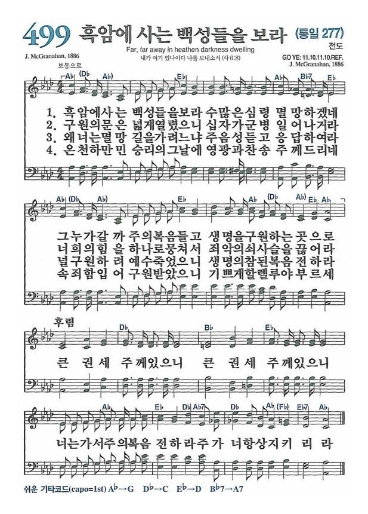
- 6결단기도
- 7축도
10월 11일6권 41호그보다 더 큰 일
주님은 선하시며, 그의 인자하심 영원하다. 그의 성실하심 대대에 미친다.
시 100:5
예배 순서
1찬양과 기도78장 · 351장 · 542장
78장 저 높고 푸른 하늘과 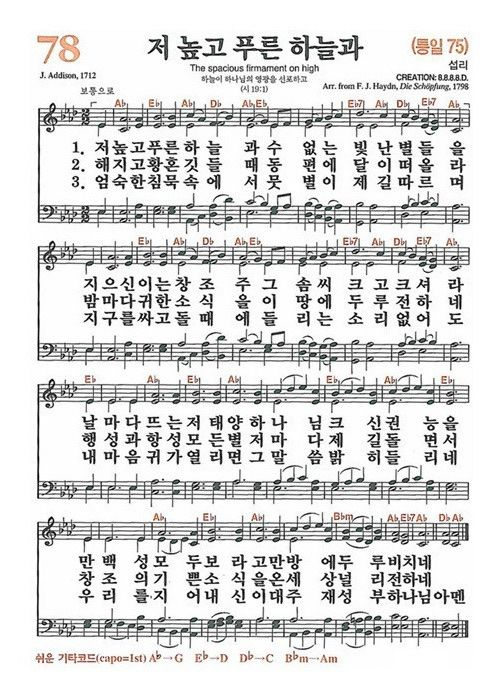
351장 믿는 사람들은 주의 군사니 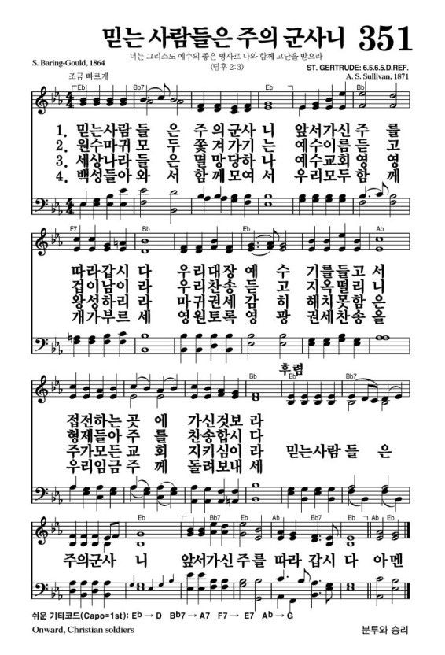
542장 구주 예수 의지함이 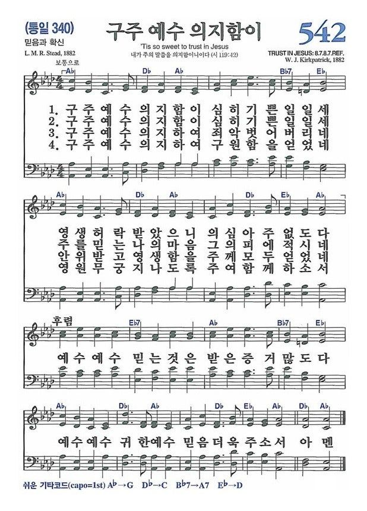
2광고3가지 소식
새벽말씀동행 학개 말씀 진행되고 있습니다.
소선지서의 말씀이 우리의 삶에 도전을 주는 말씀으로 사용되기를 바랍니다.
오늘은 예배 후 홍성문 집사님 심방이 있습니다.
예배 마치고 예배당 정리 후 출발합니다.
11월 8일 야외 나들이 예배를 드리려고 합니다.
상주에서 예배를 드리려 합니다.
3성경본문낭독요한복음 14장 11-14절
요한복음 14장 11-14절 · 새번역
11내가 아버지 안에 있고, 아버지께서 내 안에 계시다는 것을 믿어라. 믿지 못하겠거든 내가 하는 그 일들을 보아서라도 믿어라.
12내가 진정으로 진정으로 너희에게 말한다. 나를 믿는 사람은 내가 하는 일을 그도 할 것이요, 그보다 더 큰 일도 할 것이다. 그것은 내가 아버지께로 가기 때문이다.
13너희가 내 이름으로 구하는 것은, 내가 무엇이든지 다 이루어 주겠다. 이것은 아들로 말미암아 아버지께서 영광을 받으시게 하려는 것이다.
14너희가 무엇이든지 내 이름으로 구하면, 내가 다 이루어 주겠다."
4설교그보다 더 큰 일
요한복음 강해
그보다 더 큰 일
요한복음 14장 11-14절
[들어가며] 같은 고침, 다른 장면
지난 요한복음 설교 (요한복음 14:7-11 「하나님이 보이지 않을 때」)
- 빌립은 "아버지를 보여 주십시오"라고 했지만, 예수님은 "나를 본 사람은 아버지를 보았다"고 하셨습니다
- 제자들의 발을 씻기신 그 손길에서 아버지의 마음이 드러났습니다
- 예수님의 말씀과 일 사이에는 틈이 없습니다 — 예수님 뒤에 다른 하나님이 숨어 계시지 않습니다
- 형편으로 하나님을 해석하지 말고, 예수님을 통해 형편을 해석합니다
행 3:6 "은과 금은 내게 없으나, 내게 있는 것을 그대에게 주니, 나사렛 예수 그리스도의 이름으로 일어나 걸으시오."
요 5:13 "그런데 병 나은 사람은, 자기를 고쳐 주신 분이 누구인지를 알지 못하였다."
이번 주 핵심 질문
"같은 고침인데, 무엇이 달라졌을까요?"
→ 시대가 바뀌었습니다. 사람은 그대로인데 새로운 시대가 열렸고, 우리도 바로 그 시대를 살고 있습니다.
[본문탐구] 새로운 시대를 사는 사람들
가. 더 큰 일은 '더 큰 시대'의 일입니다 (12절)
1) '더 큰 일'은 더 큰 기적도, 더 많은 일도 아닙니다
요 14:12 "나를 믿는 사람은 내가 하는 일을 그도 할 것이요, 그보다 더 큰 일도 할 것이다."
죽은 지 나흘 된 나사로를 살리신 일보다 더 큰 기적을 생각하기는 어렵지요. 이 말씀은 기적의 크기나 일의 양을 말하는 것이 아닙니다.
2) 열쇠는 "내가 아버지께로 가기 때문이다"에 있습니다
요 12:16 "제자들은 처음에는 이 말씀을 깨닫지 못하였으나, 예수께서 영광을 받으신 뒤에야, 이것이 예수를 두고 기록한 것이며, 또 사람들도 그에게 그렇게 대하였다는 것을 회상하였다."
제자들에게 없던 능력이 덧붙여지기 때문이 아니라, 예수님이 아버지께로 가시기 때문입니다. 예수님의 죽음과 부활과 승천이 분기점이 되어, 시대가 바뀌었습니다.
3) 베드로가 커진 것이 아니라 시대가 달라졌습니다
행 3:12 "또 어찌하여 여러분은, 우리가 우리의 능력이나 경건으로 이 사람을 걷게 하기나 한 것처럼, 우리를 바라봅니까?"
앉은뱅이를 일으킨 베드로는 얼마 전 예수님을 세 번이나 모른다고 했던 사람입니다. 사람은 같은 사람인데, 다른 시대를 살고 있었던 거예요.
우리가 커진 것이 아닙니다. 우리가 사는 시대가 달라졌습니다.
나. 그 일은 예수님이 드러나고 사람이 살아나는 일입니다 (12절)
1) 예수님의 '일'은 아버지께서 맡기신 사명 전체입니다
요 4:34 "나의 양식은, 나를 보내신 분의 뜻을 행하고, 그분의 일을 이루는 것이다."
요 20:31 "그런데 여기에 이것이나마 기록한 목적은, 여러분으로 하여금 예수가 그리스도요 하나님의 아들이심을 믿게 하고, 또 그렇게 믿어서 그의 이름으로 생명을 얻게 하려는 것이다."
예수님의 '일'은 기적 몇 가지가 아니에요. 그 사명이 향하는 곳은 사람들이 예수님을 믿고, 그 이름으로 생명을 얻는 것입니다.
2) 표적이 가리키던 것 — 죽음에서 생명으로
요 5:24 "내가 진정으로 진정으로 너희에게 말한다. 내 말을 듣고 또 나를 보내신 분을 믿는 사람은, 영원한 생명을 가지고 있고 심판을 받지 않는다. 그는 죽음에서 생명으로 옮겨갔다."
나사로를 살리신 일은 하나님 나라가 임하면 어떤 일이 일어나는지 보여 준 표적이었습니다. 사도행전 3장에서 일어난 더 큰 일도, 베드로가 드러낸 예수의 이름을 사람들이 믿어 생명을 얻은 일이었지요.
3) 은혜를 알면 사람이 살아납니다
"사람은 고쳐 쓰는 게 아니다"라는 말이 있습니다. 그러나 하나님의 은혜를 경험하고 알게 된 사람은 말씀에 반응하는 사람이 됩니다. 원수를 사랑해 보려는 마음, 용서해 보려는 마음이 생기지요. 이 은혜가 분명해진 것도 예수님의 십자가와 부활과 승천 덕분입니다.
4) 우리가 쓰임 받는 자리는 우리 삶의 다양한 자리입니다
일터에서 실수한 동료 앞, 자녀 앞, 병상에 누운 이웃 곁 — 바로 그 자리에서 예수님이 드러나고 누군가가 죽음에서 생명으로 옮겨지는 일, 이것이 우리가 참여하게 된 더 큰 일입니다.
다. 그 일을 이루시는 분은 살아 계신 주님입니다 (11, 13-14절)
1) 아버지께서 아들 안에서 일하셨습니다
요 14:11 "내가 아버지 안에 있고, 아버지께서 내 안에 계시다는 것을 믿어라."
아버지께서 아들 안에 계셔서 그분의 일을 하셨습니다. 이것이 하나님께서 일하시는 방식입니다.
2) "할 것이다"와 "이루어 주겠다"는 같은 단어입니다
12절의 "할 것이다"와 13-14절의 "이루어 주겠다"는 원어로 같은 동사 '포이에오'(하다)입니다. 믿는 사람이 '할' 그 일을 예수님이 '하십니다'. 아버지께로 가신 아들이 이제 믿는 사람을 통해 일하십니다.
3) 가나의 일꾼들처럼
요 2:7 "예수께서 일꾼들에게 말씀하셨다. '이 항아리에 물을 채워라.' 그래서 그들은 항아리마다 물을 가득 채웠다."
요 2:9 "잔치를 맡은 이는, 포도주로 변한 물을 맛보고, 그것이 어디에서 났는지 알지 못하였으나, 물을 떠온 일꾼들은 알았다."
일꾼들은 실제로 물을 채웠고, 물을 포도주로 바꾸신 분은 예수님이셨습니다. 우리는 물을 채우는 사람이고, 그래서 누가 그 일을 하셨는지 아는 사람들입니다.
4) 우리 몫의 핵심은 그 이름으로 구하는 것입니다
요 14:14 "너희가 무엇이든지 내 이름으로 구하면, 내가 다 이루어 주겠다."
요 14:13 "이것은 아들로 말미암아 아버지께서 영광을 받으시게 하려는 것이다."
"내 이름으로"는 주문이 아니라, 그분의 뜻과 성품에 맞게 그분이 하시려는 일을 구하는 것입니다. 일이 이루어져도 주목받는 것은 일꾼이 아니라 주님이세요.
우리가 구하면, 지금도 살아 계신 주님이 이루십니다.
[두 시대]
예수님이 육신으로 계실 때 예수님이 아버지께로 가신 뒤 고침 받은 사람 고쳐 주신 분이 누구인지 몰랐습니다 (요 5:13) 예수의 이름이 드러나 많은 사람이 믿었습니다 (행 3장) 제자들 보고도 다 깨닫지 못했습니다 영광 받으신 뒤에야 깨달았습니다 (요 12:16) 기적 생명을 가리키는 표적 사람이 죽음에서 생명으로 옮겨지는 일 일하시는 분 예수님 아버지께로 가신 예수님이 믿는 사람을 통해
[삶으로 말씀 읽기]
- '그보다 더 큰 일'이라는 말씀을 들을 때 나는 무엇을 떠올렸나요? 내가 예수님이 아버지께로 가신 뒤 열린 새로운 시대를 살고 있다는 사실은 그 생각을 어떻게 바꾸나요?
- 일터와 가정과 이웃 가운데, 예수님이 드러나고 누군가가 생명으로 옮겨지기를 바라는 내 삶의 자리는 어디인가요?
- 이번 한 주, 예수님이 드러나기를 바라는 한 사람의 이름을 정하고, 주님의 이름으로 그를 위해 구해 봅시다.
[함께 나누기]
- 하나님의 은혜를 경험한 뒤, 사랑하거나 용서해 보려는 마음이 들었던 경험이 있다면 함께 나누어 봅시다.
- 각자 마음에 품은 사람을 나눌 수 있는 만큼 나누고, 그들이 죽음에서 생명으로 옮겨지도록 함께 주님의 이름으로 구합시다.
"이 땅의 모든 발전은 죽음을 연장할 뿐이지만, 주님은 생명을 주십니다.
우리는 물을 채우는 일꾼으로 그 이름으로 구하고, 그 일은 지금도 살아 계신 주님이 이루십니다."
5찬양499장
499장 흑암에 사는 백성들을 보라 - 6결단기도
- 7축도
10월 4일6권 40호강하고 담대하라
주님은 선하시며, 그의 인자하심 영원하다. 그의 성실하심 대대에 미친다.
시 100:5
예배 순서
1찬양과 기도곤한 내 영혼 편히 쉴 곳과 · 292장 · 325장
곤한 내 영혼 편히 쉴 곳과 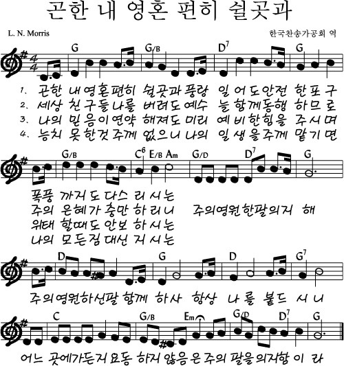
292장 주 없이 살 수 없네 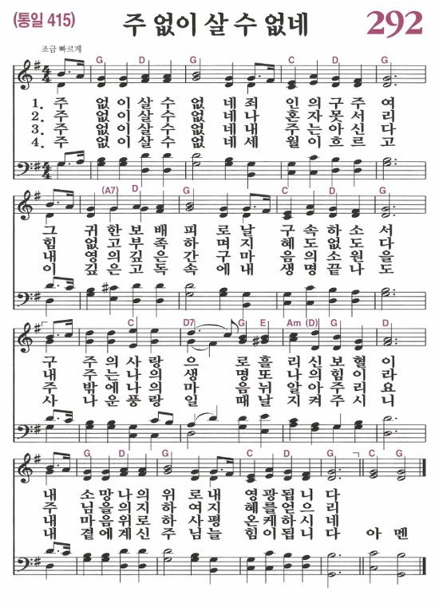
325장 예수가 함께 계시니 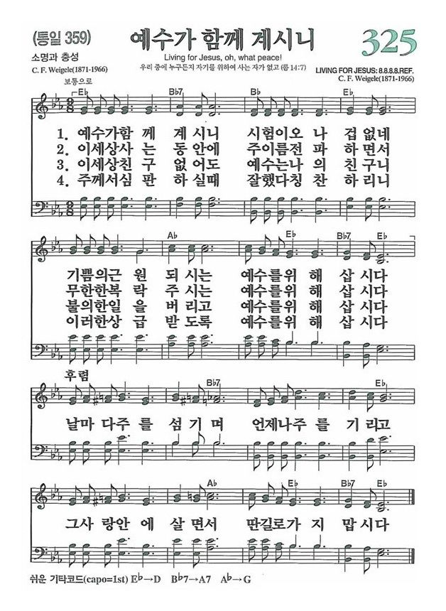
2광고4가지 소식
스바냐 말씀을 은혜 가운데 잘 마쳤습니다.
화요일 새벽부터 학개와 스가랴 말씀 진행됩니다.
금주는 양진 선교사님이 설교해주십니다.
전해주시는 말씀에 은혜 받으시기를 기도합니다.
다음 주 홍성문 집사님 심방이 있습니다.
예배 후 바로 출발합니다.
오늘은 10월 첫 주로 성찬 주일입니다.
3성경본문낭독디모데후서 3장 1-5절
디모데후서 3장 1-5절 · 새번역
1그대는 이것을 알아두십시오. 말세에 어려운 때가 올 것입니다.
2사람들은 자기를 사랑하며, 돈을 사랑하며, 뽐내며, 교만하며, 하나님을 모독하며, 부모에게 순종하지 아니하며, 감사할 줄 모르며, 불경스러우며,
3무정하며, 원한을 풀지 아니하며, 비방하며, 절제가 없으며, 난폭하며, 선을 좋아하지 아니하며,
4배신하며, 무모하며, 자만하며, 하나님보다 쾌락을 더 사랑하며,
5겉으로는 경건하게 보이나, 경건함의 능력은 부인할 것입니다. 그대는 이런 사람들을 멀리하십시오.
4설교강하고 담대하라
강하고 담대하라
디모데후서 3장 1-5절
5찬양322장
322장 세상의 헛된 신을 버리고 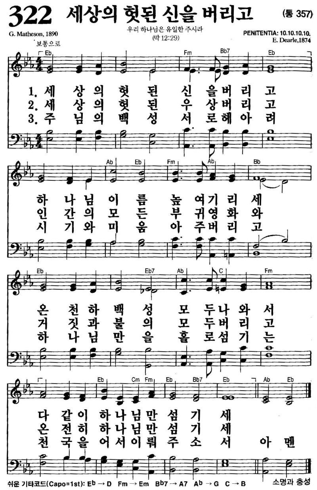
- 6결단기도
7성찬식228장
성찬본문
[눅22:19]
예수께서는 또 빵을 들어서 감사를 드리신 다음에, 떼어서 그들에게 주시고 말씀하셨다. "이것은 너희를 위하여 주는 내 몸이다. 이것을 행하여 나를 기억하여라."[마26:27-28]
“또 잔을 들어서 감사 기도를 드리신 다음에, 그들에게 주시고 말씀하셨다. "모두 돌려가며 이 잔을 마셔라. 이것은 죄를 사하여 주려고 많은 사람을 위하여 흘리는 나의 피, 곧 언약의 피다.” 아멘.228장 오 나의 주님 친히 뵈오니 - 8축도
2026년 9월 주보
주일 4번 · 날짜를 누르면 그 주 주보가 펼쳐집니다.
9월 27일6권 39호하나님이 더 오래 머무시는 자리
주님은 선하시며, 그의 인자하심 영원하다. 그의 성실하심 대대에 미친다.
시 100:5
예배 순서
1찬양과 기도167장 · 488장 · 435장
167장 즐겁도다 이 날 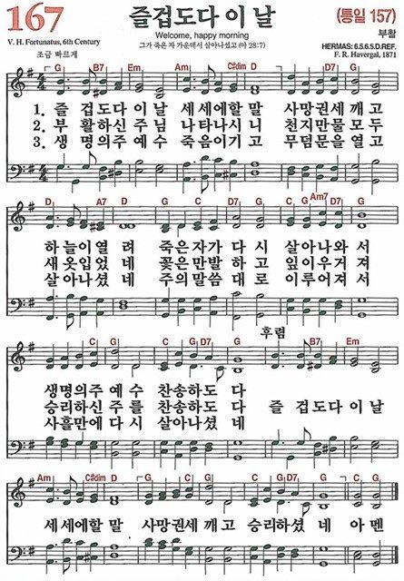
488장 이 몸의 소망 무언가 435장 나의 영원하신 기업 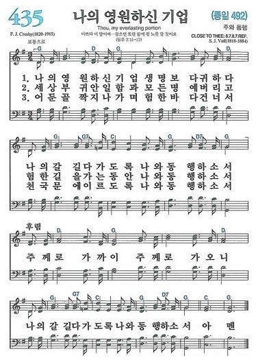
2광고5가지 소식
화요일부터 새벽말씀동행 다시 시작합니다.
스바냐 3장부터 시작합니다.
오늘은 설교 후 식사 교제가 없습니다.
남은 추석연휴 평안히 보내세요.
다음 주일은 10월 성찬 주일입니다.
몸과 마음을 잘 준비하셔서 오시기 바랍니다.
다음 주일에는 양진 선교사님 방문하십니다.
홍성문 집사님 심방을 다음 주로 연기하도록 합니다.
3성경본문낭독스바냐 2장 1-15절
스바냐 2장 1-15절 · 새번역
4설교하나님이 더 오래 머무시는 자리
하나님이 더 오래 머무시는 자리
스바냐 2장 1-15절
[들어가며] 우리는 무엇을 '특별'하다고 부르고 있나요
이번 주 새벽 (스바냐 2장)
- 2:1-3 「갈망을 회복하는 자리」 — 혼자 체념하지 말고, 함께 모여 주님과 공의와 겸손을 찾으라
- 2:4-15 「하나님의 세계를 보는 눈으로」 — 동서남북 어디에도 하나님의 손 밖은 없습니다
- 믿음은 현실을 부정하는 눈이 아니라, 그 현실까지 다스리시는 하나님을 보는 눈입니다
이번 주일 — 특별함을 좇는 우리에게
특별 새벽기도회, 특별 철야예배, 특별 집회. 우리는 '특별'이라는 이름을 붙여 힘써 무언가를 이루어 내려고 합니다. 그 열심이 눈부신 성장을 이루기도 했지요. 그런데 그 특별함이 평범한 우리의 일상에도 스며들고 있을까요? 혹시 우리는 특별함을 추구하느라, 평범함 속에 있는 하나님의 은혜를 땅에 떨어진 부스러기처럼 여기고 있지는 않은가요?
이번 주 핵심 질문
"하나님은 어디에 더 오래 머무실까요?"
→ 특별한 순간이 아니라, 예배당을 나서며 시작되는 나의 평범한 일상입니다.
[본문탐구] 하나님이 머무시는 평범한 하루
가. 갈망을 잃지 말고, 함께 모여서 다시 찾으십시오 (1–3절)
1) 갈망을 잃는다는 것
습 2:1 함께 모여라. 함께 모여라. 창피한 줄도 모르는 백성아!
습 1:12 그 때가 이르면, 내가 등불을 켜 들고 예루살렘을 뒤지겠다. 마음 속으로 '주는 복도 내리지 않고, 화도 내리지 않는다'고 말하는 술찌꺼기 같은 인간들을 찾아서 벌하겠다.
'창피한 줄도 모르는 백성'은 히브리어로 '갈망하지 않는 백성'이라는 뜻이에요. 부끄러움을 모른다는 말이, 실은 더 이상 바라는 것이 없다는 말이었습니다.
그러면 무엇을 바라지 않게 된 걸까요? 하나님께서 세상 일에 개입하지 않으신다고 여긴 것이지요.
갈망을 잃는다는 것은 대단한 것을 못 이뤄서 생긴 실망이 아니라, 내 평범한 하루에 하나님이 개입하신다는 기대를 놓아 버리는 것입니다.
2) 특별한 순간에만 매달리는 신앙
평범한 하루에는 하나님이 안 계신 것 같으니, 뜨거운 집회와 큰 결단의 자리, 특별한 응답에서만 하나님을 찾게 됩니다. 그리고 그 자리를 떠나 일상으로 돌아오면 다시 하나님 없는 하루가 시작되지요.
우리가 되찾아야 할 갈망은 특별한 체험을 향한 갈망이 아니라, 평범한 하루하루 가운데 하나님께서 일하고 계신다는 기대입니다.
3) 모여라, 그리고 주님을 찾아라
습 2:2 정해진 때가 이르기 전에 세월이 겨처럼 날아가기 전에, …… 함께 모여라.
습 2:3 주님의 명령을 따르면서 살아가는 이 땅의 모든 겸손한 사람들아, 너희는 주님을 찾아라. 올바로 살도록 힘쓰고, 겸손하게 살도록 애써라.
'모여라'는 원래 들판에서 짚을 줍는다는 말입니다. 시간은 겨처럼 날아가는데 허리 굽혀 짚만 줍지 말고, 사람을 모으라는 거예요. 서로를 불러 일으켜 세우라는 말이기도 합니다.
순서가 중요합니다. 주님을 먼저 찾아야 올바로 사는 것과 겸손하게 사는 것이 가능해지지요. 그리고 찾는 자리는 '이 땅', 곧 성전이 아니라 사람들이 살아가는 집과 시장입니다.
그래서 성도가 모이는 것은 특별한 무언가를 만들어 내려는 것이 아니라, 서로의 평범한 하루를 말씀으로 함께 해석하려는 것이에요. 체념은 혼자 있을 때 깊어지거든요.
나. 온 세상의 주인이신 하나님이 작고 평범한 자리를 보고 계십니다 (4–15절)
1) 왜냐하면 — 동서남북의 주인
습 2:4 가사는 버림을 받을 것이며, 아스글론은 폐허가 될 것이다. 아스돗은 대낮에 텅 빌 것이며, 에그론은 뿌리째 뽑힐 것이다.
습 2:13 주님께서 북녘으로 손을 뻗으시어 앗시리아를 멸하며, 니느웨를 황무지로 만드실 것이니, 사막처럼 메마른 곳이 될 것이다.
4절은 원문을 보면 '왜냐하면'으로 시작합니다. 4–15절은 갑자기 이웃 나라 이야기로 넘어간 것이 아니라, 평범한 일상에 하나님이 일하신다는 기대를 잃지 않고 살아야 할 이유를 말해 줍니다.
서쪽 블레셋, 동쪽 모압과 암몬, 남쪽 에티오피아, 북쪽 앗시리아와 니느웨. 동서남북 어디에도 하나님의 손이 미치지 않는 곳이 없어요. 사람들 눈에는 강대국이 세상을 쥐락펴락하는 것처럼 보여도, 이 세계의 참 주인은 하나님이십니다.
세상의 참 주인이신 하나님의 눈길이 저와 여러분의 평범한 일상의 자리에 머물고 계십니다. 그리고 그 자리를 지켜 주세요.
2) 폐허가 목장이 되고, 해가 지면 집으로
습 2:6 바닷가의 땅은 풀밭이 되고, 거기에 목동의 움막과 양 떼의 우리가 생길 것이다.
습 2:7 바닷가 일대는, 살아 남은 유다 가문의 몫이 될 것이다. 거기에서 양 떼를 먹이다가 해가 지면, 아스글론에 있는 집으로 가서 누울 것이다. 주 그들의 하나님이 그들을 돌보셔서 사로잡혀 있는 곳에서 돌아가게 하실 것이다.
견고한 요새가 무너진 자리가 목장이 됩니다. 그리고 하나님이 남은 자들에게 주시겠다는 것은 새 나라도, 원수를 갚을 기회도 아니었어요. 하루 종일 양을 치다가 해가 지면 집에 돌아와 눕는 저녁, 가족과 밥을 먹고 내일을 기대하며 눈을 감는 잠자리였습니다.
사람은 이름을 내고, 땅을 차지하고, 건물을 세우고 싶어 하지요. 그런데 하나님이 주시는 회복의 그림은 거창하지 않습니다.
하나님이 주시는 회복의 그림은 평범한 일상입니다. 하나님께서 바로 그 일상을 지켜 주십니다.
3) 저마다 제 고장에서
습 2:11 주님께서 땅의 모든 신을 파멸하실 때에, 사람들은, 주님이 무서운 분이심을 알게 될 것이다. 이방의 모든 섬 사람이 저마다 제 고장에서 주님을 섬길 것이다.
온 땅의 예배는 모두를 한자리에 모아 놓는 그림이 아니라, 저마다 제 고장에서, 자신의 평범한 일상이 이뤄지는 자리에서 주님을 섬기는 그림입니다.
하나님을 찾고 공의와 겸손을 찾는 예배는 주일에 모이는 예배당에서만 이뤄지지 않아요. 여러분의 평범한 일상 속에서 이뤄집니다. 그러니 하나님이 우리의 평범한 하루에 얼마나 관심을 두시겠어요?
[나가며] 평범함에 더 오래 머무시는 하나님
출 1:15 한편 이집트 왕은 십브라와 부아라고 하는 히브리 산파들에게 이렇게 말하였다.
요 21:9 그들이 땅에 올라와서 보니, 숯불을 피워 놓았는데, 그 위에 생선이 놓여 있고, 빵도 있었다.
요 21:12-13 예수께서 그들에게 말씀하셨다. "와서 아침을 먹어라." …… 예수께서 가까이 오셔서, 빵을 집어서 그들에게 주시고, 이와 같이 생선도 주셨다.
출애굽기 1장은 세상을 다스리던 이집트 왕의 이름을 적지 않았습니다. 대신 언제 태어나 언제 죽었는지도 모르는 히브리 산파 두 사람의 이름을 적었지요.
부활하신 주님이 하신 일도 자신을 드러내는 일이 아니었습니다. 호숫가에서 제자들에게 아침을 차려 주셨어요. 어부들이 늘 먹던 그 아침밥을요.
하나님은 특별함이 아니라 평범함 속에 더 오래 머무십니다.
[두 가지 그림]
우리가 흔히 그리는 모습 하나님이 보여 주시는 모습 회복 이름을 내고, 땅을 차지하고, 건물을 세움 해가 지면 집으로 가서 눕는 저녁 (습 2:7) 예배의 자리 특별한 집회, 뜨거운 순간 저마다 제 고장에서 (습 2:11) 기록되는 이름 세상을 다스리던 왕 히브리 산파 십브라와 부아 (출 1:15) 부활하신 주님 자신을 드러내심 제자들에게 아침을 차려 주심 (요 21:12-13)
[삶으로 말씀 읽기]
- 나의 평범한 하루 — 아침 식탁, 등굣길과 출근길, 오늘 만나는 사람 — 속에서 하나님이 일하고 계신다는 기대를 나는 언제부터 내려놓고 살았는지 돌아봅시다.
- 나는 특별한 순간에만 하나님을 찾고 있지는 않나요? 지난 한 주 하나님을 가장 멀게 느낀 평범한 자리가 어디였는지 떠올려 봅시다.
- 연휴가 끝나고 돌아가는 나의 '제 고장' — 일터, 학교, 가정 — 에서 이번 주 주님을 먼저 찾으며 올바로, 겸손하게 살아 볼 한 가지를 정해 봅시다.
[함께 나누기]
- 지금 나의 삶에 점수를 매긴다면 몇 점일까요? 그 점수의 이유가 되는, 누군가에게는 평범해 보여도 나에게는 소중한 일상의 한 장면을 나누어 봅시다.
- 서로의 평범한 한 주를 위해, 그 자리에 하나님께서 더 오래 머무시며 돌보아 주시기를 구하며 함께 기도합시다.
5찬양오 신실하신 주
오 신실하신 주 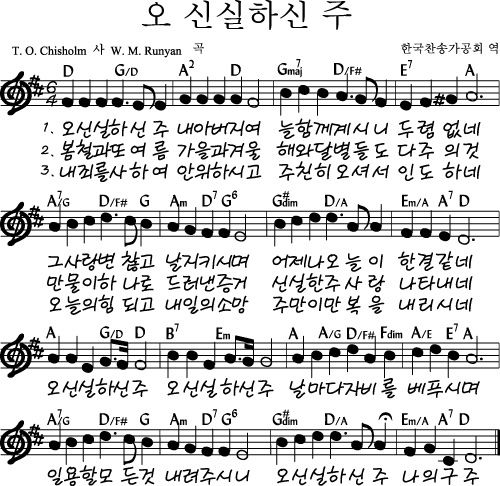
- 6결단기도
- 7축도
9월 20일6권 38호하나님이 보이지 않을 때
주님은 선하시며, 그의 인자하심 영원하다. 그의 성실하심 대대에 미친다.
시 100:5
예배 순서
1찬양과 기도주의 자녀로 산다는 것은 · 보라 너희는 두려워 말고 · 아버지 사랑합니다 · 299장
주의 자녀로 산다는 것은 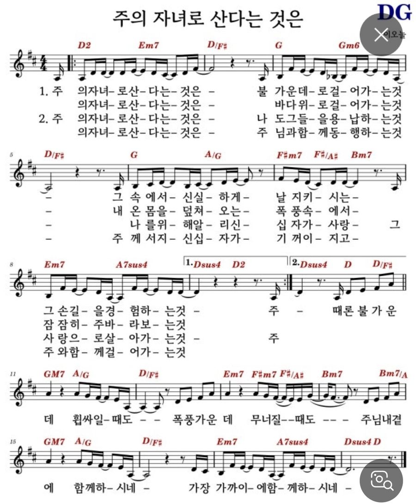
보라 너희는 두려워 말고 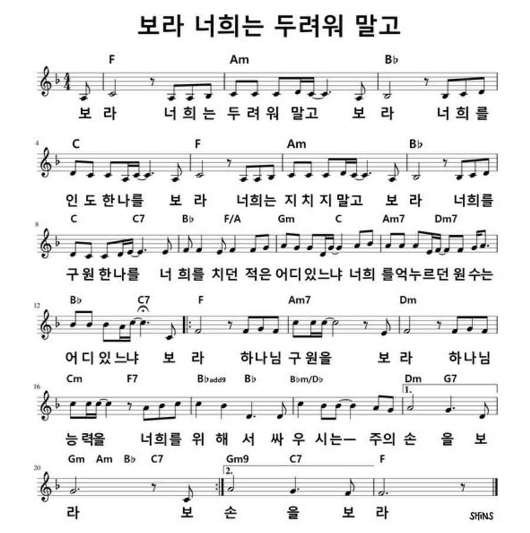
아버지 사랑합니다 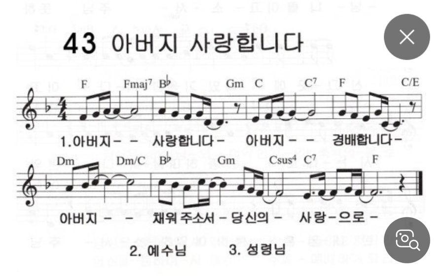
299장 괴로울 때 주님의 얼굴 보라 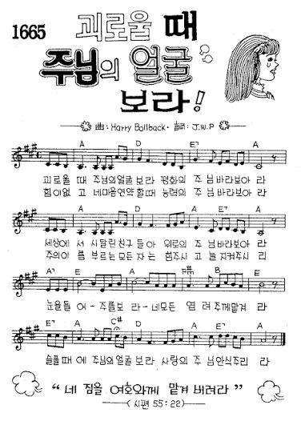
2광고3가지 소식
은혜 가운데 하박국 말씀을 마쳤습니다.
이번 주는 스바냐서가 진행됩니다.
목요일과 금요일 새벽말씀은 쉬겠습니다.
추석연휴 가족들과 즐거운 시간 보내세요.
추석 연휴 주일은 예배만 드립니다.
9월 27일 주일은 식사 교제는 없습니다.
3성경본문낭독요한복음 14장 7-11절
요한복음 14장 7-11절 · 새번역
4설교하나님이 보이지 않을 때
하나님이 보이지 않을 때
요한복음 14장 7-11절
[들어가며] 형편이 하나님을 다르게 말할 때
지난 주일 — 요한복음 14:1-6 「길을 물었더니」
- 근심하지 말라는 말씀은 감정을 없애라는 명령이 아니라, 근심이 마음의 주인 노릇을 하게 두지 말라는 말씀입니다.
- 예수님의 떠나심은 상실이 아니라 우리를 아버지께로 이끄는 예비하심이었습니다.
- 도마는 길을 물었지만 예수님은 지도나 방법 대신 자기 자신을 주셨습니다.
- 우리의 미래는 흔들리지 않는 믿음이 아니라 우리를 끝까지 붙드시는 주님의 신실하심에 달려 있습니다.
이번 주 핵심 질문
“내 형편이 하나님을 다르게 말할 때, 나는 무엇을 믿어야 합니까?”
→ 우리의 형편으로 하나님을 추측하지 않고, 예수님의 말씀과 일 속에 나타난 하나님을 믿습니다.
하나님이 보이지 않을 때 하나님을 추측하지 마십시오. 예수님을 보십시오.
[본문탐구] 예수님이 보여 주신 하나님
가. 보여 달라고 했지만 이미 보았습니다 (7-9절)
1) 빌립은 흔들리지 않을 증거 하나를 원했습니다
요 14:8 “주여 아버지를 우리에게 보여 주옵소서 그리하면 족하겠나이다.”
예수님의 떠나심과 유다의 배신, 베드로의 부인 예고로 발밑이 무너지는 것 같은 밤이었습니다. 빌립은 눈으로 붙들 수 있는 확실한 것 하나가 있으면 견딜 수 있다고 생각했습니다.
예수님을 통해 이미 보여 주신 하나님의 성품만으로는 아직 부족합니까?
2) 주님은 알아보지 못하는 제자를 오래 참으셨습니다
요 14:9 “빌립아 내가 이렇게 오래 너희와 함께 있으되 네가 나를 알지 못하느냐.”
제자들이 삼 년 동안 주님을 잘 알아본 것이 아닙니다. 주님께서 자신을 알아보지 못하는 제자들을 삼 년 동안 데리고 다니셨습니다. 마지막 밤에도 그들을 밀어내지 않고 다시 자신을 보여 주십니다.
3) 발을 씻기신 그 손길에서 아버지의 마음이 보였습니다
요한복음 13장과 14장은 같은 밤, 같은 방에서 이어집니다. 예수님은 곧 실패할 제자들의 발 앞에 낮아지셨습니다. 그 방에는 몇 시간 뒤 은 삼십에 예수님을 팔아넘길 가룟 유다도 있었습니다.
주님의 사랑은 유다 앞에서 멈추지 않았습니다. 예수님은 자신을 죽음에 넘길 사람 앞에서도 수건을 풀지 않으셨습니다. 발을 씻으신 분은 성자 예수님이시며, 그 아들의 낮아지심 속에서 아버지의 마음이 드러났습니다.
나. 예수님의 말씀과 일에 아버지가 드러났습니다 (10절)
1) 예수님은 하나님의 소식만 전하신 분이 아닙니다
요 14:10 “내가 아버지 안에 거하고 아버지는 내 안에 계신 것을 네가 믿지 아니하느냐.”
멀리 있는 사람의 안부를 전해 듣는 것과 그 사람이 직접 문을 열고 들어와 우리 앞에 앉는 것은 다릅니다. 예수님은 하나님에 관해 잘 아는 선생이나 소식을 전하는 심부름꾼 정도가 아닙니다.
예수님은 하나님께서 어떤 분이신지를 몸소 우리 가운데 보여 주신 분입니다.
2) 예수님의 말씀과 아버지의 마음 사이에는 틈이 없습니다
요 14:10 “내가 너희에게 이르는 말은 스스로 하는 것이 아니라.”
예수님은 아버지와 따로 떨어져 자기 마음대로 말씀하지 않으셨습니다. “예수님은 자비로우시지만 아버지는 아직 나에게 화가 나 계시지 않을까?”라고 두려워할 필요가 없습니다. 예수님 뒤에 예수님과 다른 마음을 가진 하나님이 숨어 계시지 않습니다.
3) 예수님이 하신 일은 아버지의 마음을 눈앞에 보여 주었습니다
요 14:10 “아버지께서 내 안에 계셔서 그의 일을 하시는 것이라.”
외면받던 사람들과 한 상에 앉으신 일, 나사로의 무덤 앞에서 우신 일, 자신을 버릴 제자들의 발을 씻기신 일, 우리를 살리시려고 십자가로 걸어가신 일이 아버지의 마음을 보여 주었습니다.
내 상황이 그려 내는 하나님보다 예수님이 보여 주신 하나님이 참되십니다.
다. 예수님이 보여 주신 하나님을 믿으십시오 (11절)
1) 본문은 설명을 넘어 믿음을 요청합니다
요 14:11 “내가 아버지 안에 거하고 아버지께서 내 안에 계심을 믿으라.”
믿는다는 것은 내가 상상해 온 하나님보다 예수님이 보여 주신 하나님을 더 참되게 여기는 것입니다. 믿음은 형편이 아무 말도 하지 못하게 하는 일이 아니라 형편보다 예수님의 말씀에 더 큰 무게를 두는 일입니다.
2) 주님은 약한 믿음 앞에 문을 하나 더 열어 주십니다
요 14:11 “그렇지 못하겠거든 행하는 그 일로 말미암아 나를 믿으라.”
주님은 당장 믿기 어려워하는 사람을 밀어내지 않으십니다. 말씀을 붙들기 어렵다면 지금까지 하신 일을 다시 보라고 하십니다.
약한 믿음만 바라보며 자신을 정죄하지 마십시오. 약한 나를 붙들려고 문을 하나 더 열어 두시는 강한 주님을 보십시오.
3) 형편이 하나님의 성품을 다시 쓰게 하지 마십시오
믿음은 모르는 것을 안다고 말하거나 아프지 않은 척하는 일이 아닙니다. 이해되지 않는 것은 주님의 손에 맡기고, 이미 분명히 보여 주신 하나님의 사랑과 신실하심을 붙드는 일입니다.
우리의 형편으로 하나님을 해석하지 말고, 예수님을 통해 우리의 형편을 해석해야 합니다.
[두 개의 목소리]
형편이 말하는 하나님 예수님이 보여 주신 하나님 막힌 길 하나님이 멀어지셨다 알아보지 못하는 제자 곁에 오래 머무셨다 나의 실패 하나님이 나를 버리실 것이다 실패할 것을 아시면서도 제자의 발 앞에 낮아지셨다 약한 믿음 이제는 받아 주지 않으실 것이다 행하신 일을 다시 보도록 문을 하나 더 열어 주셨다 고통 하나님이 나를 거절하신 증거다 십자가에서 우리를 향한 사랑을 분명히 보여 주셨다 마지막 말 오늘의 형편이 결론이다 예수님의 말씀과 일이 하나님의 마지막 말이다 [삶으로 말씀 읽기]
- 최근의 형편을 통해 하나님을 어떤 분으로 판단하고 있었습니까? “하나님이 나를 잊으셨다”, “받아 주지 않으신다”, “벌하고 계신다”라고 단정했던 자리가 있는지 돌아봅시다.
- 하나님이 보이지 않는 것처럼 느껴질 때 다시 바라보아야 할 예수님의 모습은 무엇입니까? 제자들의 발을 씻기신 장면과 십자가를 향해 걸어가신 모습을 천천히 묵상해 봅시다.
- 이번 한 주 형편이 하나님을 다르게 말할 때 다음 문장을 소리 내어 고백해 봅시다. “내 상황이 그려 내는 하나님보다 예수님이 보여 주신 하나님이 참되십니다.”
[함께 나누기]
- 힘든 일을 만났을 때 그 일을 하나님의 거절이나 형벌로 성급하게 해석했던 경험이 있다면 나누어 봅시다. 예수님의 말씀과 일을 다시 바라볼 때 그 해석은 어떻게 달라집니까?
- 지금 하나님이 보이지 않는 것처럼 느끼는 지체가 있다면 해결책이나 원인을 먼저 말하기보다, 예수님 안에 나타난 하나님의 사랑을 함께 붙들며 서로를 위해 기도합시다.
5찬양299장
299장 괴로울 때 주님의 얼굴 보라 - 6결단기도
- 7축도
9월 13일6권 37호길을 물었더니
주님은 선하시며, 그의 인자하심 영원하다. 그의 성실하심 대대에 미친다.
시 100:5
예배 순서
1찬양과 기도예수로 나의 구주 삼고 · 나를 지으신 이가(하나님의 은혜) · 이와 같은 때엔
예수로 나의 구주 삼고 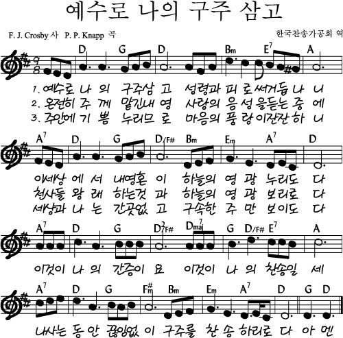
나를 지으신 이가(하나님의 은혜) 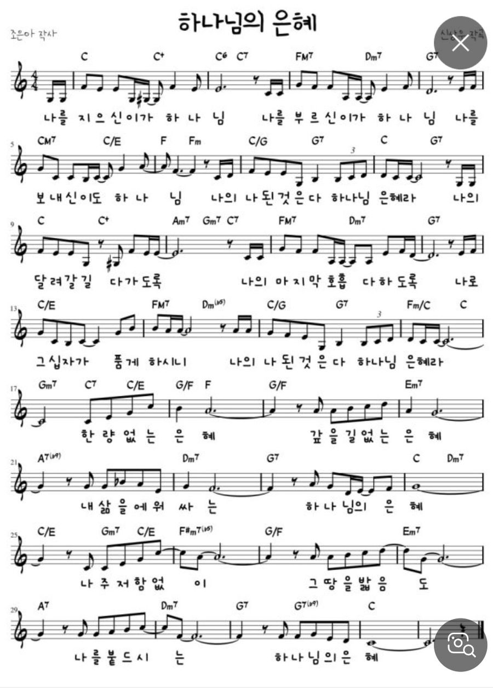
이와 같은 때엔 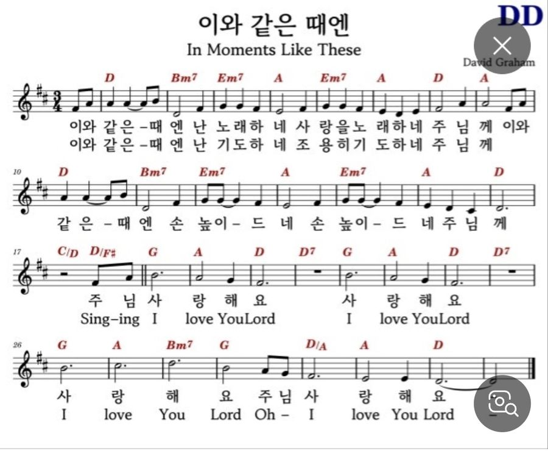
2광고3가지 소식
은혜 가운데 하박국 말씀이 진행되고 있습니다.
다음 주는 하박국과 스바냐서가 진행됩니다.
말씀의 적용을 위해 기도하는 한 주가 되기를 바랍니다.
하나님의 정원인 여러분 자신을 귀하게 가꾸시길 바랍니다.
하나님의 성품의 열매를 맺고 그 맛을 보며 기뻐하시기 바랍니다.
추석 연휴 주일은 예배만 드립니다.
9월 27일 주일은 식사 교제는 없습니다.
3성경본문낭독요한복음 14장 1-6절
요한복음 14장 1-6절 · 새번역
4설교길을 물었더니
길을 물었더니
요한복음 14장 1-6절
[들어가며] 마음이 흔들릴 때 무엇을 찾습니까
지난 주일 — 요한복음 13:36-38 「지금은 따라올 수 없으나」
- “따라올 수 없다”는 금지가 아니라 우리 안에 그 길을 걸을 능력이 없다는 진단이었습니다.
- 나에게서 나온 힘으로 나를 부인할 수 없습니다 — 뿌리가 뿌리를 뽑을 수는 없습니다.
- 제자가 주님을 위해 죽기 전에 주님이 제자를 위해 먼저 죽으셔야 합니다.
- 제자의 길은 우리의 결심이 아니라 주님의 섬김을 받음으로 걷는 길입니다.
이번 주 핵심 질문
“눈앞의 현실이 마음을 흔들 때, 무엇이 우리 마음의 중심을 지킬 수 있습니까?”
→ 해결 방법보다 먼저, 십자가로 가시는 예수님 자신을 믿습니다. 그분의 떠나심은 상실이 아니라 우리를 아버지께로 이끄는 예비하심입니다.
[본문탐구] 흔들리는 마음에 주시는 예수님의 위로
가. 십자가로 가는 나를 믿으라 (1절)
1) 근심하지 말라는 말씀은 감정을 없애라는 명령이 아닙니다
요 14:1 “너희는 마음에 근심하지 말아라.”
‘근심하다’라는 말 ‘타라쏘’는 마음이 휘저어지고 흔들리는 상태를 보여 줍니다. 두려움과 염려가 찾아오는 것과, 그것들이 마음의 주인 노릇을 하게 내버려 두는 것은 같은 일이 아닙니다.
2) 예수님은 마음이 흔들리는 고통을 아십니다
요 12:27 “지금 내 마음이 괴로우니, 내가 무슨 말을 하여야 할까?”
예수님의 말씀은 고통을 모르는 분의 무미건조한 명령이 아닙니다. 마음의 괴로움을 아시고 십자가를 친히 지나가실 분이 건네시는 위로입니다.
3) 마음을 직접 고치는 대신 믿음의 대상을 바꾸십니다
요 14:1 “하나님을 믿고 또 나를 믿어라.”
눈앞의 현실만 보면 예수님의 십자가는 실패처럼 보입니다. 그러나 예수님은 바로 그 십자가를 향해 가시는 자신을 끝까지 믿으라고 말씀하십니다.
하박국에서는 하나님께서 묵시를 주셨지만, 요한복음에서는 예수님께서 자기 자신을 내어주십니다.
나. 떠나심은 상실이 아니라 예비하심입니다 (2-4절)
1) 아버지의 집에는 넉넉한 자리가 있습니다
요 14:2 “내 아버지의 집에는 거할 곳이 많다.”
이 말씀의 강조점은 화려한 저택이 아니라 머물 자리의 넉넉함입니다. 아버지의 집에는 그리스도께 속한 사람들이 주님과 함께 머물 자리가 있습니다.
2) 길이신 예수님이 아버지께 나아갈 접근을 여십니다
요 14:2 “나는 너희가 있을 곳을 마련하러 간다.”
아버지의 집이 좁아서 새로 지으러 가시는 것이 아닙니다. 길이신 예수님께서 십자가와 부활과 승천을 통하여, 죄인인 우리가 아버지께 나아갈 접근을 열어 주십니다.
3) 우리의 미래는 주님의 신실하심에 달려 있습니다
요 14:3 “내가 다시 와서 너희를 나에게로 맞아들여, 내가 있는 곳에 너희도 있게 하겠다.”
우리의 미래를 보증하는 것은 우리가 주님을 얼마나 사랑하느냐가 아니라, 우리를 끝까지 사랑하시며 다시 오겠다고 약속하신 주님의 사랑과 신실하심입니다.
예수님의 떠나심은 제자들에게 상실이 아니라 예비하심이었습니다.
다. 길을 물었더니 자신을 주셨습니다 (5-6절)
1) 도마는 길을 정보와 방향으로 생각했습니다
요 14:5 “주님, 우리는 주님께서 어디로 가시는지도 모르는데, 어떻게 그 길을 알겠습니까?”
도마는 어디로, 어떻게 가야 하는지를 물었습니다. 그러나 예수님은 지도나 절차를 주지 않으셨습니다.
2) 예수님 자신이 길과 진리와 생명이십니다
요 14:6 “나는 길이요, 진리요, 생명이다.”
‘길’은 도마의 질문에 대한 직접적인 대답입니다. ‘진리’와 ‘생명’은 왜 예수님만이 그 길이실 수 있는지를 밝혀 줍니다. 예수님 안에서 아버지가 참으로 계시되고, 예수님을 통하여 아버지와 함께 사는 생명을 얻습니다.
도마는 길을 물었고, 예수님은 지도가 아니라 자기 자신을 주셨습니다.
3) 흔들리는 제자들에게 주님이 먼저 찾아오셨습니다
요 20:19 제자들은 두려워서 문을 모두 닫아걸고 있었습니다. 그때 예수께서 오셔서 그들 가운데 서시고 말씀하셨습니다. “너희에게 평화가 있기를!”
제자들이 믿음을 잘 발휘하여 문을 연 것이 아닙니다. 부활하신 주님께서 닫힌 문 안으로 먼저 찾아오셨습니다. 우리의 구원은 흔들리지 않는 믿음이 아니라, 흔들리는 제자들을 끝까지 붙드시는 주님의 신실하심에 달려 있습니다.
[두 개의 시선]
눈앞의 현실이 말하는 것 예수님의 약속이 말하는 것 십자가 실패와 무너짐 아버지께 나아갈 접근을 여는 예비하심 떠나심 상실과 홀로 남겨짐 다시 와서 맞아들이시겠다는 약속 길 내가 찾아야 할 정보와 방법 이미 우리 앞에 계신 예수님 자신 흔들리는 믿음 나는 믿음이 부족하다 부활하신 주님이 먼저 찾아와 붙드신다 미래 한 시간 뒤의 일도 알 수 없다 주님과 함께할 마지막은 이미 확정되었다 [삶으로 말씀 읽기]
- 지금 내 마음을 가장 크게 휘젓고 있는 염려는 무엇입니까? 그 감정이 찾아왔다는 이유로 자신을 정죄하고 있지는 않은지 천천히 돌아봅시다.
- 눈앞의 현실은 지금의 상황을 어떻게 해석하고 있습니까? 십자가로 가시는 예수님을 믿는다면 그 상황을 어떤 다른 시선으로 바라볼 수 있겠습니까?
- 이번 한 주 “이 일을 어떻게 해결하지?”라는 질문이 올라올 때, 그보다 먼저 “길이신 예수님이 나를 끝까지 아버지께로 데려가신다”는 약속을 어디에서 기억하면 좋을지 정해 봅시다.
[함께 나누기]
- 마음이 흔들리는 때에 해결 방법보다 예수님 자신이 위로가 되었던 경험이 있다면 함께 나누어 봅시다.
- 지금 염려 가운데 있는 지체에게 해결책을 먼저 말하기보다, 길이신 주님의 사랑과 평화를 함께 구하며 서로를 위해 기도합시다.
이번 주의 고백
“염려와 두려움이 다시 찾아올 수 있습니다. 그러나 그것들이 우리 삶의 마지막 말을 하게 하지는 못합니다. 길이신 주님께서 우리를 끝까지 아버지께로 데려가실 것이기 때문입니다.”
5찬양나의 갈 길 다가도록
나의 갈 길 다가도록 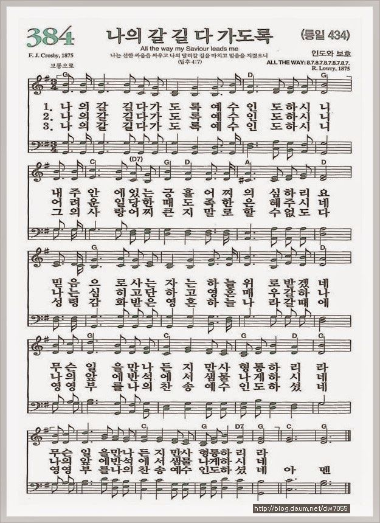
- 6결단기도
- 7축도
9월 6일6권 36호지금은 따라올 수 없으나
주님은 선하시며, 그의 인자하심 영원하다. 그의 성실하심 대대에 미친다.
시 100:5
예배 순서
1찬양과 기도주를 위한 이곳에 · 주 다스리시네 · 사랑하는 나의 아버지 · 주의 은혜라
주를 위한 이곳에 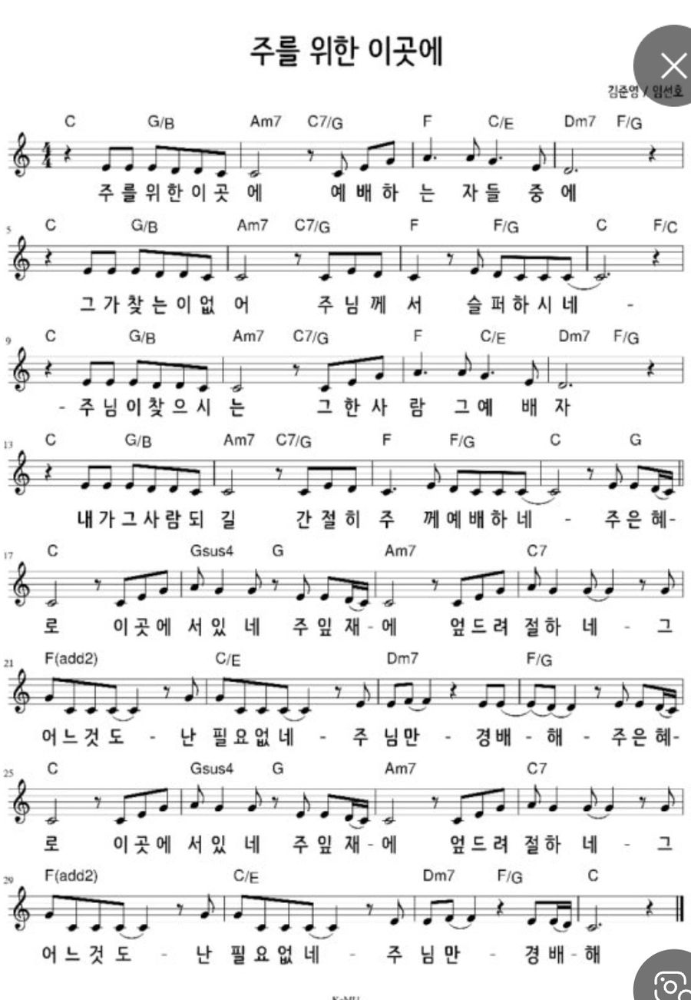
주 다스리시네 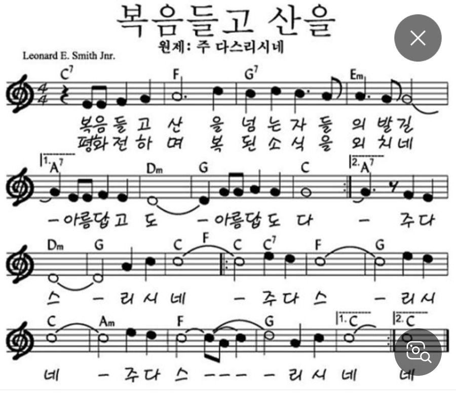
사랑하는 나의 아버지 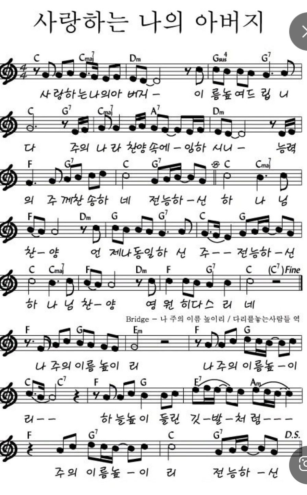
주의 은혜라 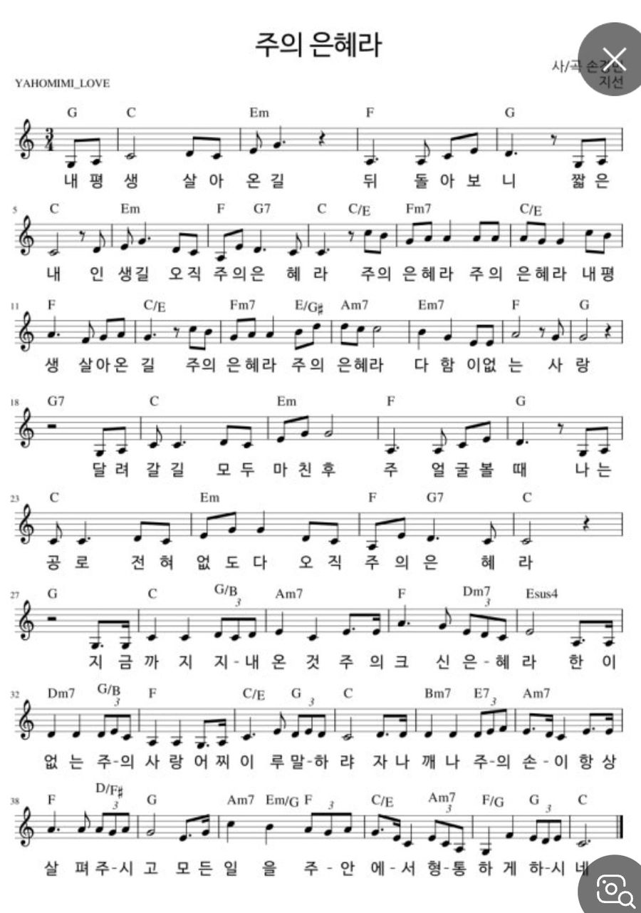
2광고3가지 소식
은혜 가운데 나훔서 말씀을 잘 마쳤습니다.
다음 주부터는 하박국서가 시작됩니다.
말씀의 적용을 위해 기도하는 한 주가 되기를 바랍니다.
하나님의 정원인 여러분 자신을 귀하게 가꾸시길 바랍니다.
하나님의 성품의 열매를 맺고 그 맛을 보며 기뻐하시기 바랍니다.
오늘은 9월 첫 주일로 성찬 주일로 드립니다.
예배 중에 성찬이 있으니 몸과 마음을 잘 준비하고 오시기 바랍니다.
3성경본문낭독요한복음 13장 36-38절
요한복음 13장 36-38절 · 새번역
4설교지금은 따라올 수 없으나
요한복음 강해
지금은 따라올 수 없으나
요한복음 13장 36-38절
[들어가며] 이 길을 걷는 힘은 어디에서 나오고 있습니까
지난 주일 (요한복음 13:31-35 「서로 사랑하면, 세상이 봅니다」)
- 십자가는 하나님이 어떤 분이신지가 드러나는 창문이었습니다
- 사랑은 감정이 아니라, 이미 받은 그 사랑을 기준 삼은 행동입니다 — "내가 너희를 사랑한 것 같이"
- 우리가 서로를 대하는 방식을 세상이 봅니다
- 그리고 결론은 이것이었어요 — 우리에겐 사랑할 실력이 없습니다. 그 실력은 십자가에서 옵니다
이번 주 — 그 '실력'의 이야기가 오늘 본문에서 이어집니다
세상에는 수많은 종교와 철학이 있고, 그것들이 사람에게 건네는 처방의 출발점은 대체로 '나'입니다. 네가 마음을 다스려라, 네가 더 노력해라, 네가 올라와라. 그런데 그 문장을 서점에서 배우지 않고도 말한 사람이 오늘 본문에 있습니다. 베드로입니다.
이번 주 핵심 질문
"지금 나를 걷게 하는 이 힘은 어디에서 나오고 있습니까?"
→ 제자도는 예수 그리스도의 섬김을 받는 것으로 시작되고, 그 받음으로만 결승선에 다다릅니다.
[본문탐구] 제자도의 시작과 완주
가. 따라올 수 없다 (36절)
1) 목적지를 물었는데, 능력을 말씀하셨습니다
요 13:33 어린 자녀들아, 아직 잠시 동안은 내가 너희와 함께 있겠다. 그러나 너희가 나를 찾을 것이다. 내가 일찍이 유대 사람들에게 '내가 가는 곳에 너희는 올 수 없다' 하고 말한 것과 같이, 지금 나는 너희에게도 말하여 둔다.
요 13:36 "주님, 어디로 가십니까?" … "내가 가는 곳에 네가 지금은 따라올 수 없으나"
베드로는 어느 지역으로 가시는지를 물었습니다. 짐을 싸려던 것이지요. 그런데 주님은 행선지가 아니라 능력을 말씀하십니다. '따라올 수 없다'(우 뒤나사이)는 금지가 아니라 무능력입니다. 오지 말라가 아니라, 지금은 못 온다는 말씀이에요.
2) 나에게서 나온 힘으로는 나를 부인할 수 없습니다
요 13:34 이제 나는 너희에게 새 계명을 준다. 서로 사랑하여라. 내가 너희를 사랑한 것 같이, 너희도 서로 사랑하여라.
제자도는 십자가를 지고 가는 길, 곧 자기를 부인하는 길입니다. 그런데 주님이 나를 사랑하신 것 같이 내 가족과 이웃과 동료를 사랑하려면, 내 언어와 감정과 습관과 본성을 거슬러야 할 때가 많습니다. 곧 '나'라는 뿌리와의 싸움이지요.
뿌리가 뿌리를 뽑을 수는 없습니다. 내 결심으로 내 욕망을 이기겠다는 건 나로 나를 이기겠다는 말이니, 시작부터 지는 싸움입니다.
3) '어렵다'가 아니라 '없다' — 그리고 단정적 약속
요 13:36 "나중에는 따라올 수 있을 것이다."
주님은 어렵다고 하지 않으시고 불가능하다고 하셨습니다. 어렵다고 하시면 노력으로 극복해 보려는 사람이 줄을 서기 때문이지요. 그런데 그 진단은 우리를 주저앉히려는 것이 아닙니다. 같은 문장 안에 약속이 붙어 있습니다. 우리말로는 추측처럼 들리지만, 원문의 어법은 그렇게 될 것이라는 단정입니다.
나. 그런데 나는 사랑으로 걷는 줄 압니다 (37절)
1) 그 말은 그의 진심이었습니다
요 13:37 "나는 주님을 위하여서는 내 목숨이라도 바치겠습니다."
계산해서 한 말도, 잘 보이려고 한 말도 아닙니다. 3년을 따라다닌, 자신의 모든 것을 버려두고 따라다닌 사람의 충성심과 사랑이 그대로 나온 말이에요.
2) 문제는 그 감격의 뿌리였습니다
이때까지 베드로는 십자가를 통한 그 섬김을 아직 받아 본 적이 없습니다. 십자가가 아직 일어나지 않았으니까요. 그러니 그 열정의 출처는 자신의 기질과 성품이었습니다.
기질과 성품은 나쁜 것이 아닙니다. 하나님이 저마다에게 주신 것이고, 평소에는 문제가 없습니다. 그러나 내가 생명처럼 여기는 것을 주님의 말씀 때문에 내려놓아야 할 때, 바로 그때 걸림돌이 됩니다.
3) '모른다'는 것은 관계를 부정하는 것입니다
요 13:38 "닭이 울기 전에, 너는 세 번 나를 모른다고 할 것이다."
목숨을 바치겠다던 그 입으로, 몇 시간 뒤 여종 앞에서 주님과의 관계를 세 번 부정합니다. 여기서 '모른다'는 것은 관계를 부정한다는 것이며, 제자로서의 정체성을 지운다는 말입니다.
자기를 부인하지 못한 사람은, 결국 주님을 부인하게 됩니다. 둘 중 하나는 부인되게 되어 있습니다.
다. 네가 나를 위하여? (38절)
1) 틀린 말이 아니라, 순서가 잘못되었습니다
요 10:11 나는 선한 목자이다. 선한 목자는 양들을 위하여 자기 목숨을 버린다.
막 10:45 인자는 섬김을 받으러 온 것이 아니라 섬기러 왔으며, 많은 사람을 구원하기 위하여 치를 몸값으로 자기 목숨을 내주러 왔다.
목숨을 버리는 일은 양이 아니라 목자가 하시는 일이었습니다. 그런데 지금 양이 그 말을 가져다 자기가 하겠다고 합니다. 그래서 주님이 되물으십니다. "네가? 나를 위하여?"
제자가 주님을 위해 죽기 전에, 주님이 제자를 위해 먼저 죽으셔야 합니다. 이 순서가 바뀌면 복음이 아닙니다. 은혜도 감격도 없이 Give & Take만 남습니다.
2) 이 자리는 베드로만의 자리가 아닙니다
우리는 인생길에서 어쩌다 한 번 주님과의 관계를 부정하는 시험에 빠지지 않습니다. 하루에도 수시로 그 시험 앞에 섭니다. "내가 너희를 사랑한 것 같이" 앞에서 내 본성과 습관과 기질이 나를 걸어 넘어뜨리는 그 모든 자리가, 결국 제자의 정체성을 지운 자리입니다.
그래서 이 길은 사람의 각오와 결단으로 완주할 수 없는 길입니다.
3) 그러면 무엇으로 걷습니까
요 13:36 "나중에는 따라올 수 있을 것이다."
매일 아침, 또는 수시로 이렇게 묻는 것입니다.
"주님께서 나를 위하여 무엇을 하셨나?!"
그리고 내가 받은 구원의 은혜를 곱씹어, 그 감격을 세상의 풍파 속에서 흘려보내지 않도록 지키는 것입니다. 시작하게 하신 분께서 또한 완주하게 하실 것입니다.
[두 개의 순서]
세상이 건네는 처방 오늘 본문이 보여 주는 순서 출발점 나 — 내 결단, 내 마음, 내 의지 주님 — 나를 위하여 먼저 가심 방향 사람이 걸어 올라감 하나님이 내려오심 (막 10:45) 힘의 뿌리 나의 기질과 성품 십자가에서 받은 은혜의 감격 결과 내려놓아야 할 때 무너짐 (37절 → 38절) 시작하게 하신 분이 완주하게 하심
[삶으로 말씀 읽기]
- 지금 내가 걷고 있는 신앙의 길, 그 힘은 어디에서 나오고 있습니까? 내가 받은 십자가의 은혜에 대한 감격입니까, 아니면 나의 결단과 의지와 열심입니까? 솔직하게 한 주간을 돌아봅시다.
- 나에게도 "이것만은 내려놓을 수 없다" 하는 것이 있습니까? 그 앞에 섰을 때 내 본성과 습관이 어떻게 반응하는지 떠올려 봅시다. 그 자리가 바로 나의 본 실력이 드러나는 자리입니다.
- 이번 한 주, 무엇을 하려 하기 전에 먼저 물어보십시다. "주님께서 나를 위하여 무엇을 하셨나?" 언제, 어디에서 이 질문을 놓으시겠습니까? 오늘 그 시간과 자리를 한 가지만 정해 봅시다.
[함께 나누기]
- 신앙생활을 하면서 "나는 은혜로 하고 있다"고 생각했는데 돌아보니 내 열심이었던 적이 있으신가요? 그것을 언제 어떻게 알게 되셨는지 나누어 봅시다.
- 우리 각자가 지금 서 있는 자리에서, 내려놓기 어려운 것을 하나씩 꺼내어 나누고, 그 자리에서 주님의 은혜가 먼저 기억나게 해 달라고 서로를 위해 기도합시다.
5찬양주의 은혜라
주의 은혜라 - 6결단기도
7성찬식228장
성찬본문
[눅22:19]
예수께서는 또 빵을 들어서 감사를 드리신 다음에, 떼어서 그들에게 주시고 말씀하셨다. "이것은 너희를 위하여 주는 내 몸이다. 이것을 행하여 나를 기억하여라."[마26:27-28]
“또 잔을 들어서 감사 기도를 드리신 다음에, 그들에게 주시고 말씀하셨다. "모두 돌려가며 이 잔을 마셔라. 이것은 죄를 사하여 주려고 많은 사람을 위하여 흘리는 나의 피, 곧 언약의 피다.” 아멘.228장 오 나의 주님 친히 뵈오니 - 8축도
2026년 8월 주보
주일 5번 · 날짜를 누르면 그 주 주보가 펼쳐집니다.
8월 30일6권 35호서로 사랑하면 세상이 봅니다
주님은 선하시며, 그의 인자하심 영원하다. 그의 성실하심 대대에 미친다.
시 100:5
예배 순서
1찬양과 기도부르신 곳에서(따스한 성령님) · 주의 자녀로 산다는 것은 · 주의 자비가 내려와 · 그 크신 하나님의 사랑
부르신 곳에서(따스한 성령님) 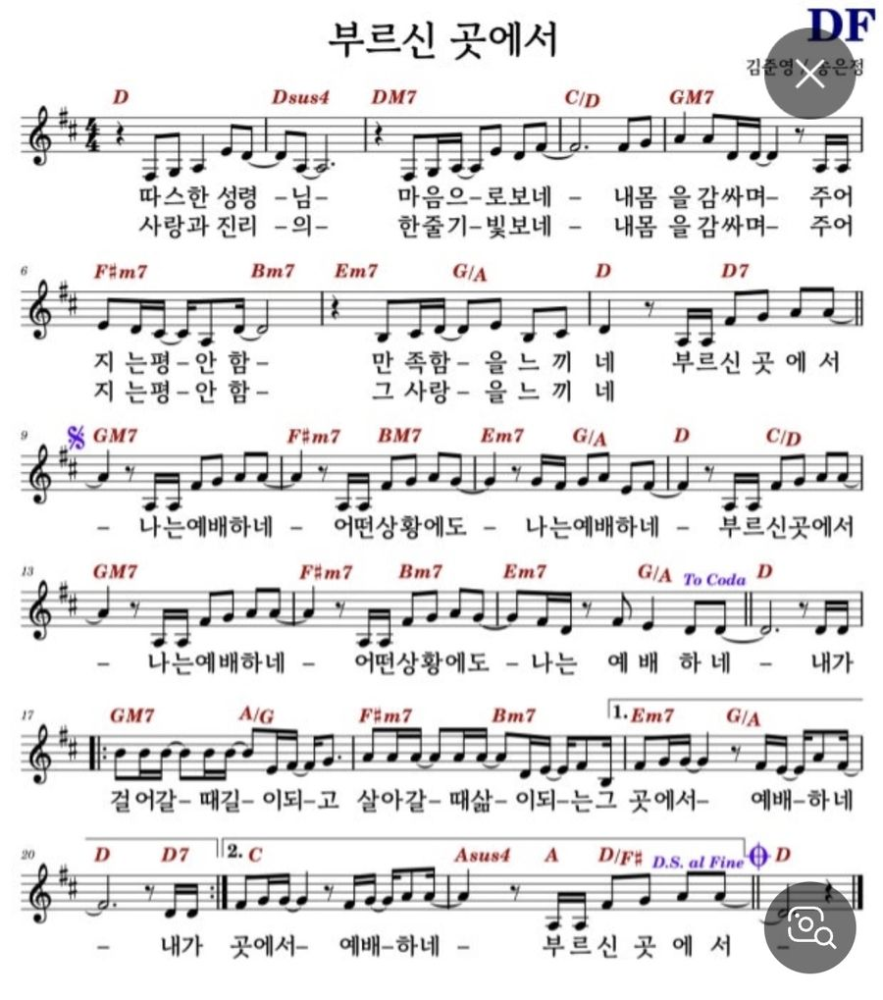
주의 자녀로 산다는 것은 주의 자비가 내려와 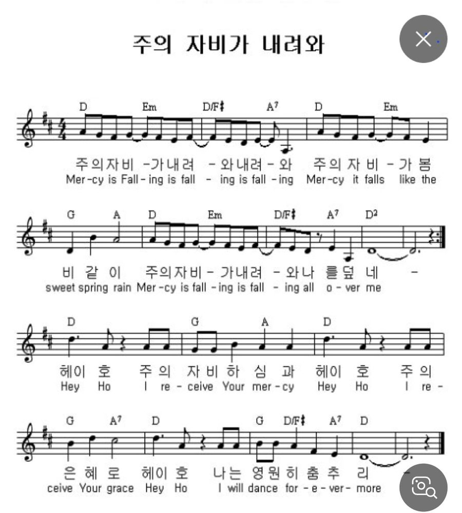
그 크신 하나님의 사랑 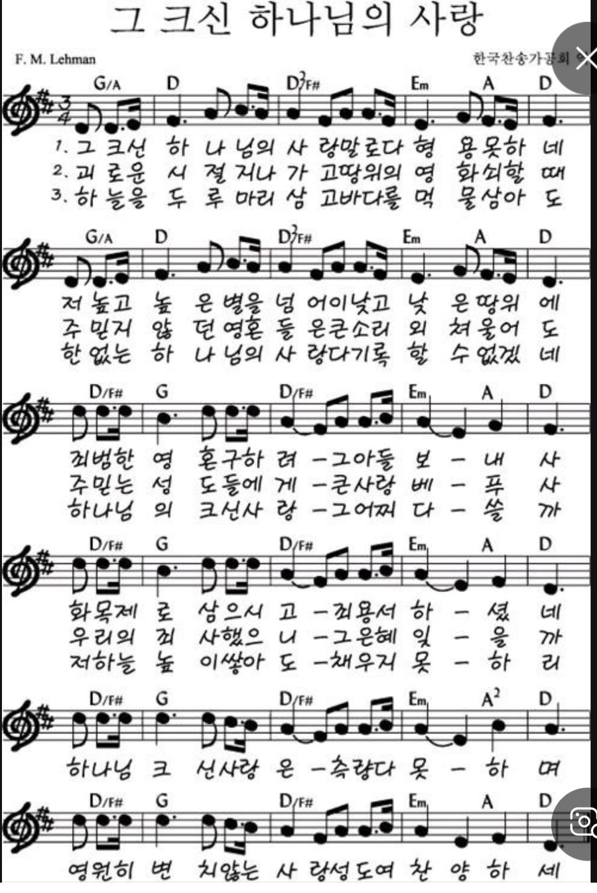
2광고4가지 소식
은혜 가운데 미가서 말씀을 잘 마쳤습니다.
다음 주부터는 나훔서가 시작됩니다.
말씀의 적용을 위해 기도하는 한 주가 되기를 바랍니다.
하나님의 정원인 여러분 자신을 귀하게 가꾸시길 바랍니다.
하나님의 성품의 열매를 맺고 그 맛을 보며 기뻐하시기 바랍니다.
오늘은 8월 마지막 주일입니다.
간단히 식사하고 8월 한 달을 돌아보며 하나님께 감사하는 시간을 가지겠습니다.
다음 주는 9월 첫 주일로 성찬 주일로 드립니다.
예배 중에 성찬이 있으니 몸과 마음을 잘 준비하고 오시기 바랍니다.
3성경본문낭독요한복음 13장 31-35절
요한복음 13장 31-35절 · 새번역
4설교서로 사랑하면 세상이 봅니다
서로 사랑하면 세상이 봅니다
요한복음 13장 31-35절
[들어가며] 사람들은 우리가 말하기 전에 이미 보고 있습니다
지난 주일 (요한복음 13:21-30 「빵은 받고 사랑은 거절할 때」)
- 주님은 마음이 괴로우신 채로 유다에게 빵조각을 적셔 건네셨어요. 그건 그 자리에서 가장 귀한 손님에게 하는 대접이었습니다
- 그런데 유다는 빵은 받았지만 사랑은 받지 않았습니다
- 사랑이 밀쳐진 그 자리에서 밤이 열렸어요 — "때는 밤이었다"(13:30)
- 그러나 그 밤의 시계까지도 주님이 쥐고 계셨습니다
이번 주 — 그 밤 바로 다음 문장에서 오늘 본문이 시작됩니다
유다가 걸어 나간 그 밤 뒤에 이어지는 첫마디가 뜻밖에도 '영광'입니다. 십자가를 향한 초침이 움직이기 시작한 바로 그 자리에서요. 그리고 주님은 남은 사람들에게 새 계명을 주십니다. 그 계명이 우리에게 이렇게 묻습니다.
이번 주 핵심 질문
"나는 지금 내가 속한 공동체 안에서, 가까이 있는 그 사람을 어떻게 대하고 있습니까?"
→ 우리가 서로를 대하는 방식이 세상이 하나님을 보게 하는 창문이 됩니다.
[본문탐구] 받은 사랑으로 서로 사랑하기
가. 그 사랑은 이미 나를 향했습니다 (31-32절)
1) 가장 어두운 밤 다음 문장이 '영광'입니다
요 13:30 유다는 그 빵조각을 받고 나서, 곧 나갔다. 때는 밤이었다.
요 13:31 유다가 나간 뒤에, 예수께서 말씀하셨다. "이제는 인자가 영광을 받았고, 하나님께서도 인자로 말미암아 영광을 받으셨다.
앞으로 예수님을 기다리는 것은 체포와 재판과 조롱과 십자가입니다. 세상의 눈으로 보면 처참한 패배인데요. 그 패배를 앞두고 주님은 "영광을 받았고"라고 말씀하세요. 요한이 이 두 문장을 나란히 붙여 놓은 것은 의도적입니다. 그래서 우리는 이런 질문을 갖게 됩니다. 성경이 말하는 영광은 우리가 생각하는 영광과 다른 걸까요?
2) 성경이 말하는 영광은 '하나님이 어떤 분이신지가 드러나는 것'입니다
요 1:14 그 말씀은 육신이 되어 우리 가운데 사셨다. 우리는 그의 영광을 보았다. 그것은 아버지께서 주신, 외아들의 영광이었다. 그는 은혜와 진리가 충만하였다.
출 33:18 그 때에 모세가 "저에게 주님의 영광을 보여 주십시오" 하고 간청하였다.
출 34:6 주님께서 그의 앞으로 지나가시면서 선포하셨다. "주, 나 주는 자비롭고 은혜로우며, 노하기를 더디하고, 한결같은 사랑과 진실이 풍성한 하나님이다."
모세가 "영광을 보여 주십시오" 했을 때, 하나님은 눈부신 광경을 보여 주신 게 아니라 당신이 어떤 분이신지를 선포하셨어요. 성경이 말하는 영광은 화려한 무엇이 아니라, 하나님이 실제로 어떤 분이신지가 드러나는 사건입니다.
3) 그 십자가가 벽에 걸린 그림이 아니라 나의 가슴으로 왔습니다.
고전 1:23-24 그리스도가 십자가에 달리셨다는 것은 유대 사람에게는 거리낌이고, 이방 사람에게는 어리석은 일입니다. 그러나 부르심을 받은 사람에게는, 유대 사람에게나 그리스 사람에게나, 이 그리스도는 하나님의 능력이요, 하나님의 지혜입니다.
요 13:34 … 내가 너희를 사랑한 것 같이, 너희도 서로 사랑하여라.
십자가는 하나님의 얼굴을 가장 환하게 보여 주는 창문입니다. 그런데 34절의 "내가 너희를 사랑한 것 같이"가 그 십자가를 저와 여러분의 가슴팍으로 가져다 놓습니다. 그러니 우리가 하나님께 무엇인가를 하기 전에, 하나님의 사랑이 이미 우리를 향해 와 있었던 것입니다.
나. 사랑은 감정이 아니라, 이미 받은 그 사랑을 기준 삼은 행동입니다 (34절)
1) 감정은 명령할 수 없지만, 행동은 명령할 수 있습니다
요 13:34 이제 나는 너희에게 새 계명을 준다. 서로 사랑하여라.
요일 3:18 자녀 된 이 여러분, 우리는 말이나 혀로 사랑하지 말고, 행동과 진실함으로 사랑합시다.
슬퍼하라고 명령한다고 슬퍼지지는 않지요. 그런데 주님은 사랑을 명령하셨어요. 명령하셨다는 것 자체가, 이 사랑이 저절로 생겼다 사라지는 감정이 아니라 내가 선택하고 실행할 수 있는 행동이라는 뜻입니다. 물론 감정을 빼라는 말씀은 아니에요. 주님도 "마음이 괴로우셨다"(13:21)고 하셨으니까요. 다만 감정에만 머무르지 않는다는 것입니다.
2) '새 계명'이 새로운 이유는 기준이 바뀌었기 때문입니다
레 19:18 한 백성끼리 앙심을 품거나 원수 갚는 일이 없도록 하여라. 다만 너는 너의 이웃을 네 몸처럼 사랑하여라. 나는 주다.
서로 사랑하라는 말씀은 사실 새로운 말씀이 아니에요. 이미 레위기에 있었습니다. '새 계명'의 헬라어 '카이노스'는 "방금 만들어져서 새것"이 아니라 "질이 완전히 달라져서 새것"이라는 뜻이에요. 무엇이 달라졌을까요? 기준이 달라졌습니다.
3) 한 번의 결심이 아니라, 날마다 다시 하는 결심입니다
요 13:34 … 내가 너희를 사랑한 것 같이, 너희도 서로 사랑하여라.
"사랑하여라"가 현재형으로 쓰였습니다. 한 번 결심하고 마는 것이 아니라 날마다 다시 결심하고 다시 실행하라는 뜻이에요. 그 날마다의 사랑은 대개 이런 모습입니다. 이 사람의 허물을 기억하지 말자. 죄와 사람을 구별해서 보자. 그리고 이 사랑의 대상은 먼 곳의 누군가가 아니라 같은 공동체 안에 있는 사람입니다. 그 방에는 주님을 팔아넘길 사람과 누가 더 큰지 다투던 사람들이 함께 있었어요. '우리 안'이라고 해서 만만하지 않습니다.
다. 그 사랑을 세상이 봅니다 (35절)
1) 세상이 우리를 제자로 알아보는 표지는 서로 사랑입니다
요 13:35 너희가 서로 사랑하면, 모든 사람이 그것으로써 너희가 내 제자인 줄을 알게 될 것이다.
정확한 신학도, 종교적 열심도, 놀라운 은사도 아니라고 하십니다. 서로 사랑하는 것이에요. 그러니 우리가 서로 사랑하는 것 자체가 선교가 되는 겁니다.
2) 세상은 우리가 서로를 대하는 방식을 봅니다
고전 6:6-7 그래서 신도가 신도와 맞서 소송을 할 뿐만 아니라, 그것도 믿지 않는 사람들 앞에 한다는 말입니까? 여러분이 서로 소송을 제기하는 것부터가 벌써 여러분의 실패를 뜻합니다. 왜 차라리 불의를 당해 주지 못합니까? 왜 차라리 속아 주지 못합니까?
우리가 서로를 대하는 방식이 세상과 똑같으면, 세상은 우리에게서 아무것도 보지 못합니다. 교회 안의 갈등과 반목을 세상 사람들은 정말 빠르게 알아차리거든요.
3) 서로 사랑하는 그 자리에서 하나님이 목격되십니다
요일 4:12 지금까지 하나님을 본 사람은 없습니다. 그러나 우리가 서로 사랑하면, 하나님이 우리 가운데 계시고, 또 하나님의 사랑이 우리 가운데서 완성된 것입니다.
행 2:47 하나님을 찬양하였다. 그래서 그들은 모든 사람에게서 호감을 샀다. 주님께서는 구원 받는 사람을 날마다 더하여 주셨다.
눈에 보이지 않으시는 하나님이, 그리스도께서 사랑하신 것같이 서로를 사랑하는 바로 그 공동체 안에서 목격되십니다. 그러니 잊지 마셨으면 좋겠습니다. 우리에게는 사랑할 실력이 없습니다. 사랑할 실력은 우리에게서 나오는 것이 아니라, 주 예수 그리스도께서 보여 주신 십자가에서 옵니다.
[한눈에 보기] 오늘 본문이 뒤집어 놓는 것들
무엇 우리가 생각하던 것 오늘 본문이 말하는 것 영광 박수받고 인정받고 높아지는 것 하나님이 어떤 분이신지가 드러나는 사건 (요 1:14) 십자가 처참한 패배, 몰락 하나님의 얼굴을 가장 환하게 보여 주는 창문 (요 13:31) 사랑 저절로 생기고 저절로 식는 감정 날마다 다시 하는 결단이자 행동 (요 13:34) 사랑의 기준 "네 몸처럼" — 내가 감당할 만큼 (레 19:18) "내가 너희를 사랑한 것 같이" — 십자가만큼 (요 13:34) 제자의 표지 정확한 신학, 열심, 은사 서로 사랑 (요 13:35)
[삶으로 말씀 읽기]
- 나에게 '영광'은 무엇이었습니까? 박수받고 높아지는 것이었는지, 아니면 하나님이 어떤 분이신지가 드러나는 자리였는지 돌아봅시다. 나는 십자가를 벽에 걸린 그림처럼 바라보고 있었습니까, 아니면 나를 향해 오신 사랑으로 받고 있었습니까?
- 지금 마음에 떠오르는 그 한 사람이 있습니까? 이번 한 주, 그 사람의 허물을 기억하지 않기로, 그리고 죄와 사람을 구별해서 보기로 날마다 결심해 봅시다. 오늘 할 수 있는 가장 작은 한 가지는 무엇일까요?
[함께 나누기]
- 누군가와 비교하거나 경쟁하는 마음 때문에 힘들었던 경험이 있으신가요? 그때 그 마음이 주변 사람들에게 어떻게 읽혔을지 함께 나누어 봅시다.
- "우리가 서로 사랑하는 것이 선교가 된다"는 말씀 앞에서, 우리 공동체가 세상 앞에 보여 주고 싶은 모습은 무엇입니까? 서로를 위해 한 가지씩 기도 제목을 나누고 함께 기도합시다.
5찬양455장
455장 주님의 마음을 본받는 자 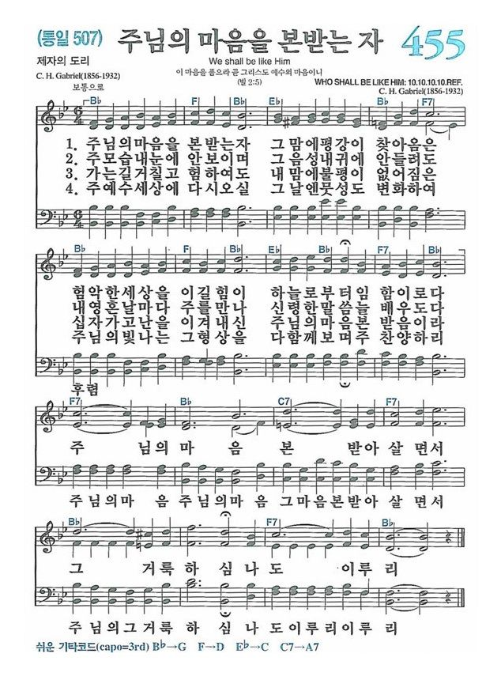
- 6결단기도
- 7축도
8월 23일6권 34호빵은 받고 사랑은 거절할 때
주님은 선하시며, 그의 인자하심 영원하다. 그의 성실하심 대대에 미친다.
시 100:5
예배 순서
1찬양과 기도주님을 예배하는 것 · 내 영혼이 은총입어 · 사랑한다 말하시네
주님을 예배하는 것 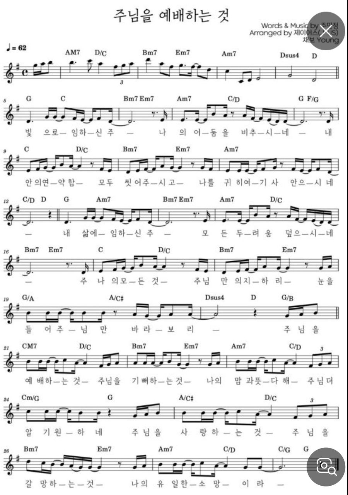
내 영혼이 은총입어 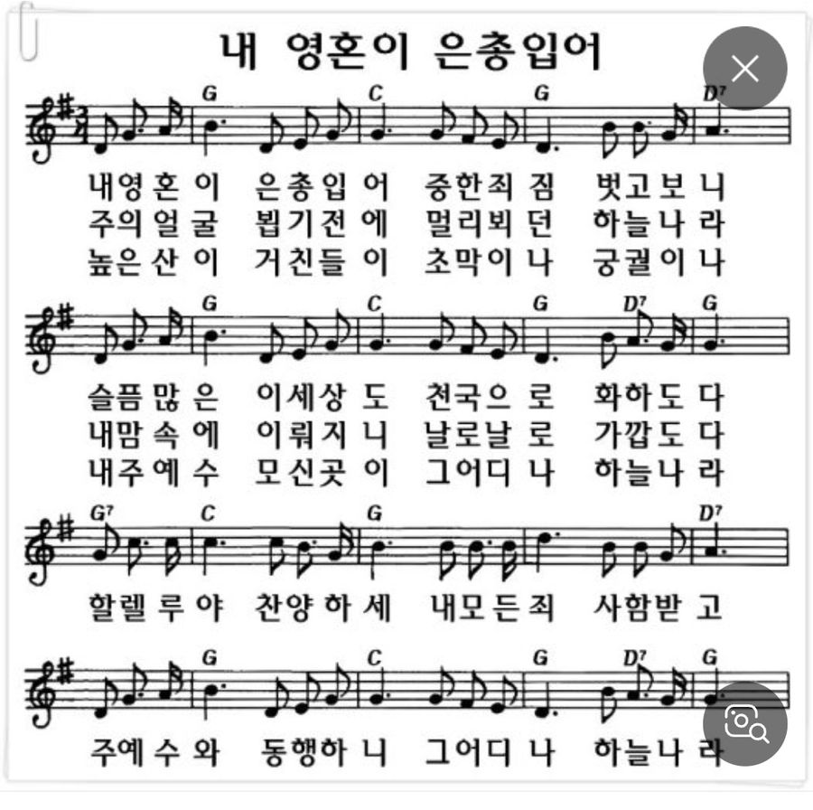
사랑한다 말하시네 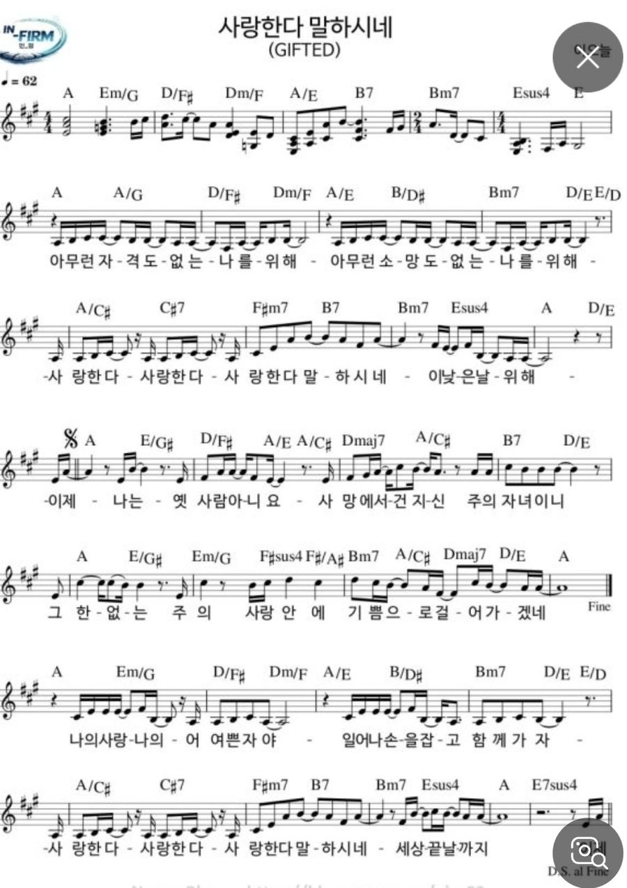
2광고3가지 소식
이번 주부터 말씀동행 다시 시작합니다.
미가서 말씀을 통해 하나님의 마음과 뜻을 알아가는 아침이 되기를 바랍니다.
말씀의 적용을 위해 기도하는 한 주가 되기를 바랍니다.
하나님의 정원인 여러분 자신을 귀하게 가꾸시길 바랍니다.
하나님의 성품의 열매를 맺고 그 맛을 보며 기뻐하시기 바랍니다.
다음 주는 8월의 마지막 주일입니다.
간단히 식사하고 8월 한 달을 돌아보며 하나님께 감사하는 시간을 가지겠습니다.
3성경본문낭독요한복음 13장 21-30절
요한복음 13장 21-30절 · 새번역
4설교빵은 받고 사랑은 거절할 때
빵은 받고 사랑은 거절할 때
요한복음 13장 21-30절
[들어가며] 밥은 받았는데 마음은 안 받았다면
지난 주일 (요한복음 13:18-20 「아시면서도 맡기셨다」)
- 주님은 고르실 때부터 아신 채로 고르셨다 — 유다의 배신은 주님의 실책이 아니다
- 그러나 아신다고 덤덤하셨던 것은 아니다 (13:21 "마음이 괴로우셔서")
- '내가 곧 나' — 미리 말씀하신 것은 그 밤에 붙들 손잡이를 준비해 두신 것
- 우리의 신분은 내 형편이 아니라 나를 아시면서 선택하신 주권자에게서 나온다
이번 주 — 그 '미리 말씀하신 일'이 식탁 위에서 일어난다
우리는 누군가와 가까워지고 싶을 때 "밥 한번 먹자"고 한다. 배를 채우자는 말이 아니라 관계를 맺자는 초청이다. 그리고 그 밥상에서 우리는 상대가 좋아하는 반찬을 그 앞으로 옮겨 놓는다. 말은 없지만 그 손에 담긴 말이 있다. "내가 너를 아낀다. 많이 먹어라."
그런데 만약 그 사람이 음식은 다 먹고, 필요한 건 다 챙기고, 마음은 이미 다른 데 둔 채로 자리에서 일어나 나가버렸다면 어떨까. 밥은 받았는데, 마음은 받지 않은 것이다.
이번 주 핵심 질문
"누군가 나를 속속들이 다 알면서도 마지막까지 손을 내밀어준다면, 나는 그 손을 어떻게 받겠는가?"
→ 받아서 필요한 것만 챙기고 돌아설 것인가, 그 손을 잡고 그 관계 안에 머물 것인가.
[본문탐구] 건네진 손 앞에서
가. 괴로우시면서도 건네셨습니다 (21, 26절)
1) "마음이 괴로우셔서" — 요한복음에서 세 번뿐인 표현
요 13:21 예수께서 이 말씀을 하시고 나서, 마음이 괴로우셔서, 환히 드러내어 말씀하셨다.
여기 쓰인 헬라어 단어가 요한복음에서 예수님께 쓰인 자리는 딱 세 군데다.
자리 본문 마주하신 것 나사로의 무덤 앞 요 11:33 사랑하는 이의 죽음 자신의 죽음을 내다보시며 요 12:27 다가오는 십자가 오늘 이 식탁 요 13:21 가장 가까운 이의 배반 요한복음에서 예수님의 속이 흔들리는 자리는 죽음과 어둠의 권세를 정면으로 마주하실 때다. 이 마지막 만찬의 식탁이 바로 그런 자리였다.
2) 아신다고 해서, 아프지 않은 것이 아닙니다
지난주에 우리는 "아시면서도 맡기셨다"를 나눴다. 그런데 여기서 쉽게 하는 착각이 있다. "미리 아셨으니 덤덤하셨겠지"라는 생각이다.
본문은 정반대로 말한다. 아셨는데도 괴로우셨다.
내가 귀하게 여기던 사람이 나를 떠날 것을 미리 안다고 해서
그 떠남이 안 아프게 되지 않는다.
오히려 알면서 그 시간을 다 견디는 것이 더 아프다.
3) 빵조각 — 가장 귀한 손님에게 하는 대접
요 13:26 …그리고 그 빵조각을 적셔서 시몬 가룟의 아들 유다에게 주셨다.
당시 잔치 자리에서 주인이 음식을 적셔 손님에게 직접 건네주는 것은 아무에게나 하는 행동이 아니었다. 그 자리에서 가장 귀한 손님에게 하는 최고의 대접이었다.
우리로 치면 상대가 좋아하는 반찬을 그 앞으로 옮겨 주는 것이다. 그 빵조각에 담긴 말은 이것이었다.
"내가 너를 아낀다. 나는 너를 내 사람으로 여긴다.
나와의 관계 가운데 지금처럼 거하여 지내자."
이건 형식이 아니었다. 진심이었고, 진짜 호소였다.
4) 같은 식탁의 두 자리
요 13:23 …예수께서 사랑하시는 제자가 바로 예수의 품에 기대어 앉아 있었다.
그렇다면 유다는 어디에 있었는가. 예수님이 빵조각을 적셔 직접 건네주실 수 있는 거리에 있었다. 손이 닿는 자리, 오히려 주빈석에 가까운 귀한 자리였을 가능성이 크다.
두 사람 다 예수님의 손이 닿는 자리에 있었다.
한 사람은 그 자리에 더 깊이 기댔고, 한 사람은 그 자리에서 걸어 나갔다.
갈린 것은 자리가 아니라, 그 손에 대한 반응이었다.
나. 유익만 취하면 밤이 열립니다 (26-27a, 28-30절)
1) 빵이 문제가 아니었습니다
요 13:27 그가 빵조각을 받자, 사탄이 그에게 들어갔다.
"예수님이 주신 빵을 받았는데 사탄이 들어갔다니, 그 빵에 무슨 문제가 있었나?" — 아니다. 그 빵은 사탄을 집어넣는 주술적인 물건이 아니었다. 주석가들이 한목소리로 그런 해석을 거절한다.
2) 오늘 본문 전체의 열쇠가 되는 한 문장
"유다는 빵 조각은 받았으나, 사랑은 받지 않았다." (D. A. 카슨)
손은 나갔다. 빵은 받았다. 겉으로는 아무 문제가 없었다. 그런데 그 빵에 담긴 사랑은 받지 않았다. 가장 큰 사랑이 건네진 그 자리에서 그것을 밀쳐내면서, 마음이 완전히 굳어져 버린 것이다.
3) 갑자기 일어난 일이 아니었습니다
요 13:2 악마가 이미 시몬 가룟의 아들 유다의 마음에, 예수를 팔아 넘길 생각을 불어넣었다.
13장 2절 13장 27절 무슨 일이 마귀가 생각을 불어넣음 사탄이 들어감 그때 유다는 아직 저항할 수 있었다 마음 전체가 넘어갔다 처음엔 생각이었다. 그 생각을 계속 품고, 키우고, 내어주다가, 사랑이 건네진 마지막 순간에 그것을 밀쳐내면서 완성되었다.
4) 유익만 챙기는 관계는 사랑이 아니라 '거래'입니다
하나님께 받을 건 다 받는다. 은혜도, 응답도, 복도 받는다. 그런데 정작 그 복을 주시는 그분과의 관계는 뒷전이다. 내 마음에는 이미 다른 계획이 있고, 하나님은 그 계획을 이루기 위한 도구가 된다.
"천국에 여러분이 원하던 모든 것이 다 있습니다. 그런데 거기에 예수님이 안 계십니다.
그래도 여러분은 그 천국에 만족하시겠습니까?" (존 파이퍼)
사랑하는 사람은 그 사람이 주는 것을 원하는 것이 아니라 그 사람 자체를 원한다.
→ 나는 지금 하나님과 사랑을 하고 있는가, 거래를 하고 있는가?
5) 가장 어두운 걸음이 가장 선해 보였습니다 (28-29절)
요 13:29 어떤 이들은, 유다가 돈자루를 맡고 있으므로, 예수께서 그에게 명절에 그 일행이 쓸 물건을 사라고 하셨거나, 또는 가난한 사람들에게 무엇을 주라고 말씀하신 것으로 생각하였다.
지금 유다는 자기 스승을 팔아넘기러 나가고 있다. 그런데 같이 밥 먹던 사람들 눈에는 명절 준비하러 가는 걸로, 가난한 사람 도우러 가는 걸로 보였다. 그는 심지어 공동체의 돈자루를 맡은, 가장 신뢰받는 사람이었다.
선해 보이는 그 행동, 그 자리가 실제로는 어둠의 자리일 수 있다.
내 봉사가, 내 직분이, 내 헌금이,
내가 그 사랑을 받았다는 증거가 되어주지 않을 수도 있다.
⚠️ 오해하지 말 것 — 이 말씀은 "우리 가운데 누가 유다인지 찾아보자"가 아니다. 그것은 이 말씀을 완전히 잘못 쓰는 것이다. 이 말씀은 "나도 그 함정에 빠질 수 있다"는 자기 점검이다.
고린도전서 10:12 그러므로 서 있다고 생각하는 사람은 넘어지지 않도록 조심하십시오.
6) "때는 밤이었다" — 시계가 아닙니다
요 13:30 유다는 그 빵조각을 받고 나서, 곧 나갔다. 때는 밤이었다.
요한복음 8:12 나는 세상의 빛이다. 나를 따르는 사람은 어둠 속에 다니지 아니하고, 생명의 빛을 얻을 것이다.
요한복음에서 '밤'은 그냥 시간이 아니다. 유다는 빛이신 분을 등지고 어둠 속으로 걸어 들어간 것이다. 그리고 누가 그를 밀어낸 것도 아니다. 본문은 "곧 나갔다"고 한다. 그의 발로 걸어 나갔다.
사랑이 밀쳐진 자리에서, 밤이 열렸다.
다. 그 밤의 시계도 주님이 미십니다 (27절 후반)
1) "네가 할 일을 어서 하여라"가 무슨 뜻입니까
요 13:27 …그 때에 예수께서 유다에게 말씀하셨다. "네가 할 일을 어서 하여라."
여기 "네가 할 일"이라는 표현은 원어로 "네가 마땅히 해야 할 일"이 아니다. "네가 지금 하고 있는 일, 이미 하려고 마음먹은 그 일"이다.
즉 예수님은 지금 유다에게 "회개해라"라고 다시 초청하고 계신 것이 아니다. 그 초청은 이미 빵조각으로 하셨다. 그 초청이 거절된 다음에 하시는 말씀이다.
"네가 그 길을 택했구나. 그렇다면 그 일의 시각은 내가 정하겠다."
2) 그 방에서 시계를 쥐고 계신 분
요한복음 10:18 아무도 내게서 내 목숨을 빼앗아 가지 못한다. 나는 스스로 원해서 내 목숨을 버린다. 나는 목숨을 버릴 권세도 있고, 다시 얻을 권세도 있다.
십자가는 유다의 배신 때문에 어쩔 수 없이 열린 길이 아니었다. 배신이 십자가를 만든 것이 아니라, 십자가로 가시는 분이 그 배신의 시각까지 손에 쥐고 계셨다.
지난주 말씀이 여기서 성취된다. "그 일이 일어날 때에 내가 곧 나라는 것을 너희로 하여금 믿게 하려는 것이다"(13:19). 제자들이 이 밤을 지나면서 무너지지 않을 수 있었던 이유가 여기 있다.
가장 어두운 밤에도 그분은 희생자가 아니셨다.
어떤 배신도, 어떤 악의도, 그분의 걸음을 빼앗아가지 못했다.
3) 그러나 그 손은 여전히 펴져 있습니다
여기서 조심할 것이 있다. "그러면 어차피 하나님이 다 알아서 하시겠네"로 닫으면 안 된다.
주님이 시계를 쥐고 계신다는 것이, 그분이 내미신 손을 취소하지 않는다.
그 밤의 주재자이신 그분이 오늘도 우리에게 빵조각을 건네고 계신다.
[정리] 같은 식탁, 두 자리
빵만 받는 자리 사랑까지 받는 자리 손에 놓인 것 유익·혜택·자리만 취함 건네시는 그분까지 받음 하나님은 나에게 내 계획을 이루는 도구 사랑하는 그분 자체 관계의 성격 거래 사랑 겉으로 보이는 모습 명절 준비·구제처럼 보일 수 있음 (28-29절) 받은 사랑에서 흘러나온 순종 그다음 발걸음 식탁을 떠나 밤으로 (30절) 그 자리에 머무름 (23절)
[삶으로 말씀 읽기]
- 요즘 하나님께 무엇을 구하고 있습니까? 그 구함 속에서 내가 진짜 원하는 것은 하나님이 주시는 것입니까, 하나님 자신입니까?
- 최근 마음을 찌른 말씀, 자꾸 걸리는 양심의 소리, 듣기 싫었던 누군가의 권면이 있었습니까? 그것이 오늘 나에게 건네진 빵조각은 아니었을까요?
- 내 봉사와 직분과 헌금이, 정작 주님과의 관계는 뒷전인 채로 유지되고 있지는 않습니까? 지금 내가 가장 정직하게 점검해야 할 자리는 어디입니까?
[함께 나누기]
- 누군가에게 마음을 담아 무언가를 건넸는데 그 마음까지는 받아지지 않았던 경험, 혹은 내가 누군가의 마음을 미처 받지 못했던 경험을 나눠 봅시다.
- 이번 한 주간, 무엇을 서둘러 하기보다 먼저 머무는 시간을 갖기로 함께 정합시다. 지금 마음에 떠오르는 그 말씀 앞에, 그 관계 앞에 잠시 조용히 서 있을 자리를 각자 하나씩 이야기한 뒤 함께 기도합시다.
5찬양539장
539장 너 예수께 조용히 나가 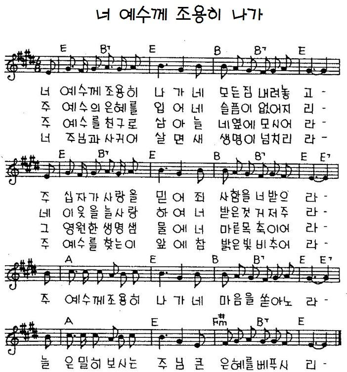
- 6결단기도
- 7축도
8월 16일6권 33호아시면서도 맡기셨다
주님은 선하시며, 그의 인자하심 영원하다. 그의 성실하심 대대에 미친다.
시 100:5
예배 순서
1찬양과 기도아무것도 두려워 말라 · 사랑한다 말하시네 · 성령이 오셨네 · 나는 찬양하리라
아무것도 두려워 말라 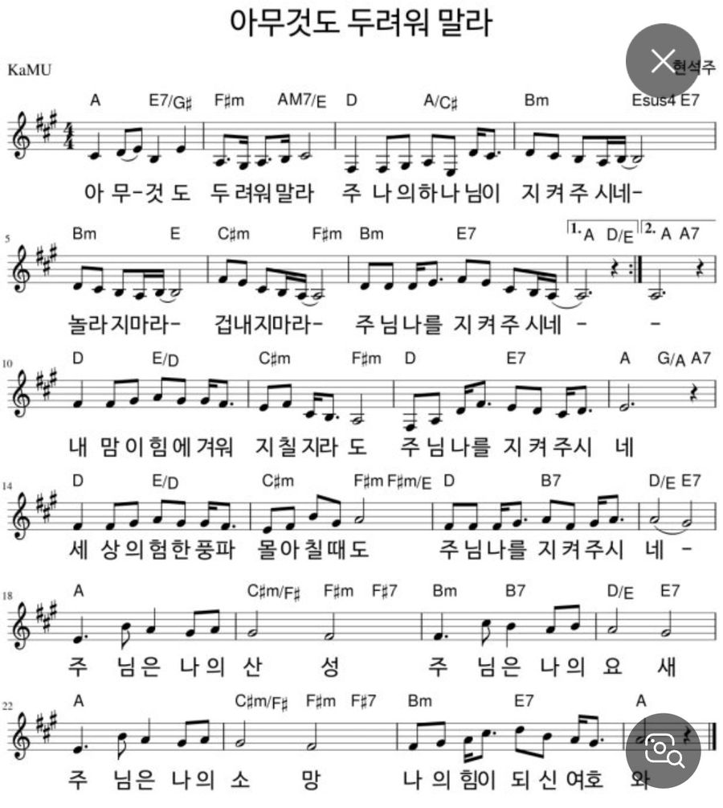
사랑한다 말하시네 성령이 오셨네 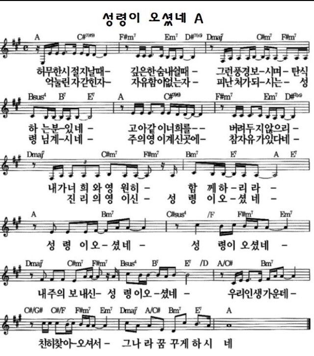
나는 찬양하리라 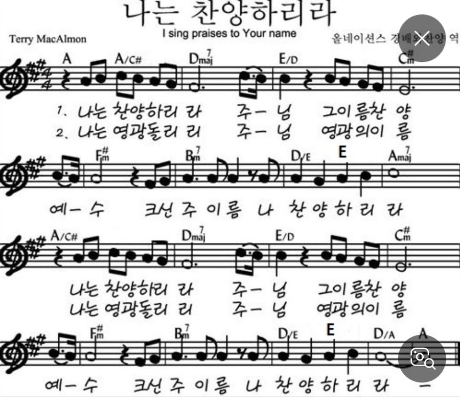
2광고2가지 소식
이번 주부터 말씀동행 다시 시작합니다.
미가서 말씀을 통해 하나님의 마음과 뜻을 알아가는 아침이 되기를 바랍니다.
말씀의 적용을 위해 기도하는 한 주가 되기를 바랍니다.
하나님의 정원인 여러분 자신을 귀하게 가꾸시길 바랍니다.
하나님의 성품의 열매를 맺고 그 맛을 보며 기뻐하시기 바랍니다.
3성경본문낭독요한복음 13장 18-20절
요한복음 13장 18-20절 · 새번역
4설교아시면서도 맡기셨다
아시면서도 맡기셨다
요한복음 13장 18-20절
[들어가며] 나는 누구에게 내 것을 맡기는가
지난 주일 | 요한복음 13:1-2, 12-17 「끝까지 사랑하신 분을 따라」
- 사랑의 끝에 유다가 있었다 — "끝까지 사랑하셨다" 바로 뒤에 배반하는 유다가 나옵니다.
- '본'은 "착해져라"가 아니라 "받은 것을 그대로 하라" — 수문을 처음 여신 분이 주님이십니다
- "우리가 아직 죄인이었을 때에"(롬 5:8) — 우리가 다 하나님 앞에 가룟 유다였을 때입니다
- 흘려보내는 삶은 내가 좋은 사람이 되었다는 증명이 아니라 하나님이 살아 계시다는 증명입니다.
이번 주 — 흘려보내려다 상처받은 자리에서
인공지능 이야기에 나오는 '에이전트'는 우리말로 '대행인'입니다. 대행인에게 일을 맡기려면 내 권한을 넘겨야 합니다. 내 계정, 내 일정, 결제 수단까지. 그런데 우리는 내 것을 아무에게나 맡기지 않습니다. 믿을 만해야 맡깁니다. 맡겼다가 잘못되면 그 책임이 나에게 오기 때문입니다.
이번 주 핵심 질문
"하나님께서 나에게 어떤 일을 맡기신다면, 그건 내가 믿을 만해서일까?"
→ 주님은 다 아시면서, 부족함이 드러나기도 전에 먼저 맡기셨습니다.
[본문탐구] 아시면서도 맡기신 분
가. 우리의 무너짐은 주님께 새 소식이 아닙니다 (18절)
1) 두 개의 동사 — '택했다'와 '안다'
요 13:18 나는 너희 모두를 가리켜서 말하는 것이 아니다. 나는 내가 택한 사람들을 안다.
주님은 아십니다. 그런데 언제부터 아셨느냐가 중요하죠. 오늘 알게 되신 것이 아닙니다.
2) 고르실 때부터 아신 채로 고르셨습니다
요한복음 6:70 내가 너희 열둘을 택하지 않았느냐? 그러나 너희 가운데서 하나는 악마이다.
유다가 어떤 사람인지 모르고 뽑았다가 뒤통수를 맞으신 것이 아닙니다. 그러니 유다의 배신은 주님의 실책이 아니며, 뿔뿔이 흩어질 제자들을 선택하신 것 또한 마찬가지입니다.
3) 그러나 마음이 덤덤하셨던 것은 아닙니다
요 13:21 예수께서 이 말씀을 하시고 나서, 마음이 괴로우셔서, 환히 드러내어 말씀하셨다.
시편 41:9 내가 믿는 나의 소꿉동무, 나와 한 상에서 밥을 먹던 친구조차도, 내게 발길질을 하려고 뒤꿈치를 들었습니다.
요한복음은 이 구절을 "나를 배반하였다"로 옮겼지만, 시편에는 "발길질을 하려고 뒤꿈치를 들었다"는 험한 표현으로 남아 있습니다. 한 상에서 밥을 먹던 사이, 가장 가까운 사람의 배반입니다. 그 마음을 품으신 채로 그들의 발을 씻기신 것이죠.
그런데 — 아신다는 것이 위로가 안 될 때가 분명히 있다.
"이렇게 흔들리는 내가 정말 주님 사람이 맞나. 이러다 끝까지 못 가는 건 아닐까."
나. 우리가 흔들려도 그분은 흔들리지 않으십니다 (19절)
1) 답은 내 안에 없습니다
우리는 그 물음의 답을 내 안에서 찾으려 합니다. 기도를 얼마나 하는지, 말씀을 얼마나 붙드는지, 지난주보다 나아졌는지. 그런데 그렇게 재면 답이 매번 달라지게 되죠.
2) '내가 곧 나' — 하나님이 자신을 소개하실 때 쓰신 말
요 13:19 …너희로 하여금 '내가 곧 나'임을 믿게 하려는 것이다.
출애굽기 3:14 하나님이 모세에게 대답하셨다. "나는 곧 나다. 너는 이스라엘 자손에게 이르기를, '나'라고 하는 분이 너를 그들에게 보냈다고 하여라."
두 구절의 말은 같은 말입니다. 예수님은 지금, 하나님이 모세에게 자신을 알리신 그 말로 자신을 말씀하고 계세요. 헬라말로 옮기면 '에고 에이미'다.
3) 참 하나님의 표 — 미리 말하고 그대로 이루심
이사야 41:22-23 이리 와서, 장차 무슨 일이 일어날 것인지, 우리에게 말하여 보아라. … 장차 올 일들을 말하여 보아라. 그러면 우리가 너희들이 신이라는 것을 알 수 있을 것이다.
우상은 앞일을 알 수도, 말할 수도 없습니다. 미리 말하고 그대로 이루는 것이 참 하나님의 표였습니다. 그러므로 주님이 배신을 미리 말씀하신 것은 나중에 "봐, 내가 이야기했지?" 하시려던 것이 아니라, 인생 전체가 흔들릴 그 밤에 붙들 손잡이를 미리 준비해 두신 것이죠.
4) 붙들 것은 내 상태가 아닙니다
동고동락하던 유다가 팔아넘기고, 동료들은 흩어지고, 주님은 십자가에서 죽으십니다. 그것이 하룻밤 사이에 이루어질 일이었습니다. 그러나 이 모든 일이 주님의 주권을 벗어나지 않았습니다.
우리의 신분은 내 형편 위에 있지 않다.
나의 전부를 아시면서 나를 선택하신 주권자이신 주님에게서 나온 것입니다.
다. 주님은 우리에게 자기 이름을 맡기셨습니다 (20절)
1) 보냄 받은 사람은 보낸 사람과 같습니다
요 13:20 내가 진정으로 진정으로 너희에게 말한다. 내가 보내는 사람을 영접하는 사람은 나를 영접하는 사람이요, 나를 영접하는 사람은 나를 보내신 분을 영접하는 사람이다.
당시에는 왕의 사자를 문전박대하면 그 사람 하나를 무시한 것이 아니라 왕을 무시한 일로 여겨졌습니다. 왕이 사자에게 권한을 위임하듯, 예수님은 제자들에게 자신의 권한을 위임하십니다.
2) 같은 사슬이 우리에게까지 내려옵니다
요한복음 20:21 다시 그들에게 말씀하셨다. "너희에게 평화가 있기를 빈다. 아버지께서 나를 보내신 것 같이, 나도 너희를 보낸다."
그날 밤 열한 사람의 이야기로 끝나지 않습니다. 오늘 우리도 주님의 권한을 넘겨받은 사람이고, 위임받은 우리를 통해 세상이 주님을 만납니다.
3) 이 위임이 언제 주어졌습니까
모든 시험을 통과하고 믿을 만하다는 증명이 된 이후가 아닙니다. 몇 시간 뒤면 흩어질 사람들, 곧 세 번 부인할 베드로에게였습니다. 주님이 모르셨는가. 너무나 잘 아셨지요.
이렇게 부족함이 드러나기 전에, 주님은 주님의 권한을 먼저 맡기신 것이다.
4) 왜 우리는 못 맡기고 주님은 맡기실 수 있는가
로마서 8:28 하나님을 사랑하는 사람들, 곧 하나님의 뜻대로 부르심을 받은 사람들에게는, 모든 일이 서로 협력해서 선을 이룬다는 것을 우리는 압니다.
우리가 내 것을 못 맡기는 이유는 그 실수를 다 수습할 능력이 없기 때문입니다. 우리는 주권자가 아닙니다. 그러나 주님은 우리의 연약함과 실수까지 협력하여 선을 이루실 능력을 가지신 분이십니다.
5) 뜻을 몰라 헤맬 때
요 13:7 "내가 하는 일을 지금은 네가 알지 못하나, 나중에는 알게 될 것이다."
대행인이 제 역할을 하려면 보낸 분의 뜻을 알아야 하죠. 그런데 우리는 주님의 뜻인지 내 생각인지 헷갈릴 때가 많습니다. 베드로도 그랬습니다. 주님은 이 연약함까지 이미 다 아셨고, 보혜사를 약속하신 것도 이 연장선상에 있습니다.
그러나 오늘 본문이 우리에게 먼저 말하는 것은 이것입니다.
주님의 뜻을 다 이해하지도 못하는 사람들에게 주님의 권한을 맡기셨다는 사실.
우리의 대행인이란 신분은 우리가 자격을 채워서 주어진 것이 아니라,
'내가 곧 나'이신 분이 그분의 기쁘신 뜻 안에서 정하신 것입니다.
[정리] 누구에게 맡기는가
세상의 위임 주님의 위임 언제 맡기는가 믿을 만하다고 증명된 다음 부족함이 드러나기도 전에 왜 못 맡기는가 / 맡기시는가 실수를 다 수습할 능력이 없어서 모든 일을 협력하여 선을 이루시므로 누구 이름으로 남는가 맡긴 사람의 이름 보내신 주님의 이름 신분의 근거 나의 자격과 능력 '내가 곧 나'이신 분의 주권
[삶으로 말씀 읽기]
- 나는 요즘 내 신앙의 상태를 무엇으로 재고 있습니까? 그렇게 재어 볼 때 답이 매번 달라지는 경험을 해 보셨습니까?
- "주님이 나를 아신다"는 말이 위로가 되지 않고 오히려 무겁게 느껴졌던 순간이 있었습니까? 그때 나는 무엇을 붙들고 있었습니까?
- 내가 하는 말과 태도를 통해 누군가 주님을 만나고 있다면, 이번 한 주 내가 가장 조심해야 할 자리는 어디입니까?
[함께 나누기]
- 누군가에게 중요한 일을 맡겨 본 경험, 혹은 맡기지 못하고 결국 내가 해 버린 경험을 나눠 봅시다. 그때 무엇이 마음에 걸렸습니까?
- 이번 한 주간 흔들리는 순간이 올 때 "나를 세우신 분은 무엇을 원하시는가"를 묻기로 함께 정하고, 각자 그 물음을 던지게 될 자리 하나씩을 이야기한 뒤 함께 기도합시다.
5찬양오 신실하신 주
오 신실하신 주 - 6결단기도
- 7축도
8월 9일6권 32호끝까지 사랑하신 분을 따라
주님은 선하시며, 그의 인자하심 영원하다. 그의 성실하심 대대에 미친다.
시 100:5
예배 순서
1찬양과 기도550장 · 435장 · 542장
550장 시온의 영광이 435장 나의 영원하신 기업 542장 구주 예수 의지함이 2광고3가지 소식
연일 계속되는 무더위 건강 잘 챙기시기 바랍니다.
모두의 기도로 김정희 사모 케냐 잘 다녀왔습니다.
이번 한 주 여름휴가 일정 사용하겠습니다.
새벽 말씀동행은 이번 한 주 쉬도록 하겠습니다.
3성경본문낭독요한복음 13장 1-2, 11-17절
요한복음 13장 1-2, 11-17절 · 새번역
4설교끝까지 사랑하신 분을 따라
끝까지 사랑하신 분을 따라
요한복음 13장 1-2절, 12-17절
끝까지 사랑하신 분을 따라 | 설교
[들어가며] 내가 세워둔, 보이지 않는 벽
지난 주일 (요한복음 13:3-10 「내가 너를 씻어 주지 아니하면」)
- 만유를 손에 쥐신 분이 겉옷을 벗고 대야를 드셨다 — 영광의 책이 왕관이 아니라 대야로 열린다
- "내가 너를 씻기지 아니하면, 너는 나와 상관이 없다" — 그 씻김을 받는 것 외에 다른 길이 없다
- 이미 목욕한 사람에게 남은 일은 다시 목욕하려 애쓰는 것이 아니라 날마다 발을 내미는 것
이번 주 — 받은 사람은 어떻게 사는가
우리는 결혼식장에 들어서면 먼저 아는 얼굴을 찾습니다. 이 모습이 우리 일상이지요. 그런데 이렇게 내 주변을 내가 편한 사람들, 좋아하는 사람들로 채운다는 것은 다른 말로 고른다는 뜻이기도 합니다. 미워해서가 아니라 좋아하는 사람을 곁에 두고 싶었을 뿐인데, 그것만으로 우리는 이미 사람을 구별하며 지내고 있는 것이죠. 하나님께 똑같이 씻김을 받은 사람들이 모인 교회 안에도 이런 보이지 않는 벽이 세워져 있습니다.
이번 주 핵심 질문
"주님이 그렇게 하셨다는 것을 아는 것만으로, 나는 정말 달라지는가?"
→ 알기만 해서는 달라지지 않습니다. 오늘 본문은 하나님께서 우리를 어떻게 움직이시는가에 답하는 본문입니다..
[본문탐구] 사랑의 끝에서 시작되는 은혜의 물길
가. 사랑의 끝에 유다가 있었습니다 (1-2절)
1) '끝까지' 사랑하셨다는 말의 무게
요 13:1 …세상에 있는 자기의 사람들을 사랑하시되, 끝까지 사랑하셨다.
목숨이 다하는 그 시간의 끝까지, 그리고 사랑하는 그 정도의 끝까지입니다. 예수께서 마지막까지 하신 일은 자기 사람들을 사랑하신 일이셨습니다.
2) 그 사랑의 끝을 재는 자가 유다다
요 13:2 저녁을 먹을 때에, 악마가 이미 시몬 가룟의 아들 유다의 마음 속에 예수를 팔아 넘길 생각을 불어넣었다.
요한은 "끝까지 사랑하셨다"는 문장 바로 뒤에 배반을 꾸미는 사람을 놓았습니다. 그 배치가 '끝까지'의 뜻을 설명합니다.
3) 하나님은 원래 그런 분이십니다
마태복음 5:45 아버지께서는, 악한 사람에게나 선한 사람에게나 똑같이 해를 떠오르게 하시고, 의로운 사람에게나 불의한 사람에게나 똑같이 비를 내려주신다.
마태복음 5:48 그러므로 하늘에 계신 너희 아버지께서 완전하신 것 같이, 너희도 완전하여라.
4) 그러나 그 마음이 편하셨던 것은 아닙니다
요 13:21 예수께서 이 말씀을 하시고 나서, 마음이 괴로우셔서, 환히 드러내어 말씀하셨다. "…너희 가운데 한 사람이 나를 팔아 넘길 것이다."
감정이 다 정리된 다음에 씻기신 것이 아니세요. 아셨기 때문에 괴로우셨고, 그 괴로움을 품으신 채로 그 발을 씻기셨습니다.
그런데 — 이것을 아는 것만으로 내 행동이 달라지지는 않죠. "하나님이시니까 되시는 거죠. 저는 못해요." 여기서 한 걸음 더 나아가야 합니다.
나. 우리가 다 그 유다였습니다 (12-15절)
1) '본'은 "착해져라"가 아니라 "받은 것을 그대로 하라"
요 13:15 내가 너희에게 한 것과 같이, 너희도 이렇게 하라고, 내가 본을 보여 준 것이다.
'본'은 그대로 따라 만들라고 앞에 놓아 주는 틀입니다. 주님이 하신 일은 받을 자격이 없는 사람에게까지 무릎을 꿇으신 일이었습니다.
2) 수문을 처음 여신 분
요 13:13-14 너희가 나를 선생님 또는 주님이라고 부르는데, 그것은 옳은 말이다. 내가 사실로 그러하다. 주이며 선생인 내가 너희의 발을 씻겨 주었으니, 너희도 서로 남의 발을 씻겨 주어야 한다.
댐에 물이 가득해도 수문이 열리지 않으면 아래로는 한 방울도 내려가지 않지요. 그 수문을 처음 여신 분이 예수님이시다. 받은 사람은 흘려보내는 사람이 됩니다. 하나님의 완전하심과 같이 완전한 자로 변화되어 갑니다..
3) '우리가 아직 죄인이었을 때'가 언제인가
로마서 5:6-8 우리가 아직 약할 때에, 그리스도께서는 제 때에, 경건하지 않은 사람을 위하여 죽으셨습니다. … 그러나 우리가 아직 죄인이었을 때에, 그리스도께서 우리를 위하여 죽으셨습니다. 이리하여 하나님께서는 우리들에 대한 자기의 사랑을 실증하셨습니다.
오늘 본문으로 말하면, 우리가 다 하나님 앞에 가룟 유다였을 때입니다. 변화하기도, 회개하기도, 뉘우치기도 전이었습니다.
4) 그렇다면 믿음이란 무엇인가
십자가의 은혜를 내가 받았다는 그 사실을 믿는 것. 그 문이 지금도 열려 있어 은혜가 내게로 흐르고 있다는 사실을 믿는 것입니다. 그래서 이 믿음은 철학이나 사상으로 남을 수 없고 행동으로 나올 수밖에 없습니다.
다. 흘려보내는 삶이 증명합니다 (17절)
1) 무엇이 증명되는가
요 13:17 너희가 이것을 알고 그대로 하면, 복이 있다.
미움의 싹을 틔우게 만드는 그 사람 앞에 허리를 숙이고 그의 죄를 용서하는 일. 그것은 내가 좋은 사람이 되었다는 증명이 아니라, 하나님께서 살아 계시다는 증명이 됩니다. 하나님이 은혜와 사랑의 근원이심을 세상에 선언하는 일이기 때문입니다.
2) 분노가 올라오는 것은 실패가 아닙니다
우리가 베푸는 용서와 섬김은 내 인격에서 나온 것이 아니라 나와 함께 사시는 하나님 안에서 나오는 것입니다. 그러니 원수 같은 사람 앞에서 치가 떨리는 것을 이상한 일로 여기지 않아도 됩니다. 그 떨림을 넉넉히 이길 능력이 이미 우리 안에 들어와 있습니다.
[정리] 아는 것 / 받은 것
아는 것만으로는 받은 것에서는 무엇을 보는가 주님이 괴로운 마음으로 유다의 발을 씻기셨다 내가 바로 그 유다였다 (롬 5:8) 내 반응 "힘드셨겠다" "나도 그 물을 받았다" 힘의 출처 내 결심, 내 그릇 먼저 열린 은혜의 수문 결과 행동의 변화가 일어나지 않는다 흘려보내지 않을 수 없다
[삶으로 말씀 읽기]
- 내가 좋아하는 사람으로 주변을 채우는 동안, 나도 모르게 바깥에 두게 된 사람은 누구입니까? 그 사람의 얼굴을 떠올려 보십시오.
- "우리가 아직 죄인이었을 때에" — 내가 하나님 앞에 가룟 유다였던 그 자리를 나는 얼마나 기억하고 있습니까? 그 기억이 흐려질 때 내 안에서는 무슨 일이 일어납니까?
- 누군가를 용서하거나 섬기려 할 때 올라오는 분노와 거부감을 나는 지금까지 어떻게 다뤄 왔습니까? 그것을 '실패'가 아니라 '아직 흐르는 중'으로 볼 수 있겠습니까?
[함께 나누기]
- 신앙생활을 하면서 "머리로는 알겠는데 마음이 안 움직인다"고 느꼈던 경험이 있으신가요? 그때 무엇이 나를 다시 움직이게 했는지 나눠 봅시다.
- 이번 한 주간 내가 이름을 놓고 기도할 그 한 사람을 마음에 정하고, 그 사람에게 할 수 있는 가장 작은 일 하나를 서로 이야기한 뒤 함께 기도합시다.
5찬양438장
438장 내 영혼이 은총입어 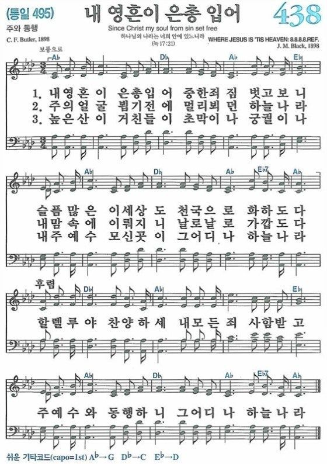
- 6결단기도
- 7축도
8월 2일6권 31호내가 너를 씻어주지 아니하면
주님은 선하시며, 그의 인자하심 영원하다. 그의 성실하심 대대에 미친다.
시 100:5
예배 순서
1찬양과 기도주님은 산 같아서 · 주가 보이신 생명의 길 · 믿음으로 서리라
주님은 산 같아서 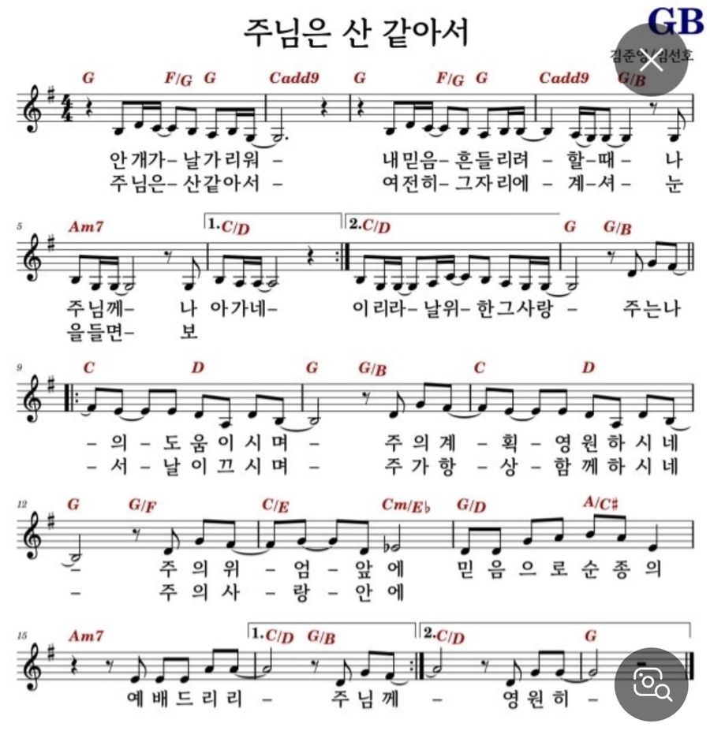
주가 보이신 생명의 길 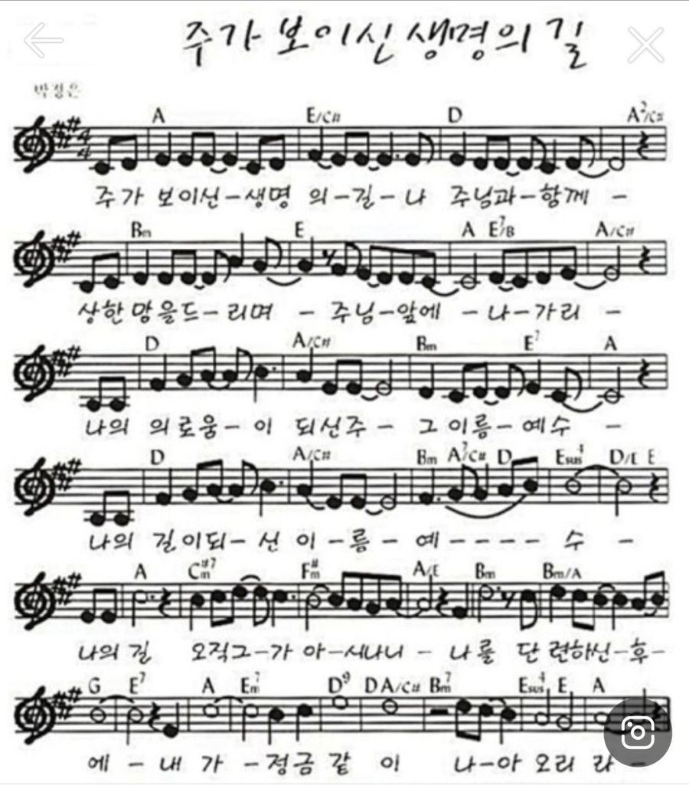
믿음으로 서리라 2광고3가지 소식
오늘은 8월의 첫 주일 성찬 주일입니다.
김정희 사모는 기도해주셔서 케냐에 잘 도착하고 일정 잘 소화하고 있습니다.
8월 4일 입국입니다. 오는 길을 위해 기도해주세요.
새벽 말씀동행 잘 들으시면서 말씀으로 하루 시작하세요.
새벽 말씀은 미가서로 진행되고 있습니다.
3성경본문낭독요한복음 13장 3-10절
요한복음 13장 3-10절 · 새번역
4설교내가 너를 씻어주지 아니하면
내가 너를 씻어주지 아니하면
요한복음 13장 3-10절
내가 너를 씻어주지 아니하면
[들어가며] 왕관이 아니라 대야로 열리는 책
지난 주일 (요한복음 12:47-50 「우리의 하루는 무엇을 향해 있습니까」)
- "나는 세상을 심판하러 온 것이 아니라 구원하러 왔다" — 우리가 본래 심판받아 마땅한 자리에 있었다는 진단
- 우리가 받은 가장 귀한 것은 끊어졌던 하나님과의 관계가 회복된 것
- 그 회복된 관계를 오늘 누리며 사는 것이 우리의 하루가 향해야 할 방향
- 이 말씀으로 요한복음 1~12장 '표적의 책'이 닫혔다
이번 주 — 새로운 시작
요한복음 13~20장은 '영광의 책'으로 불립니다 . 세상을 향한 표적이 아니라, 십자가를 며칠 앞두고 다락방에서 제자들에게만 주시는 말씀인데요. 그런데 영광의 책이 시작하는 첫 장면이 왕관도 보좌도 아닌 대야와 수건입니다.
이번 주 핵심 질문
"예수님께서 제자들의 발을 씻기신 일은, 겸손과 섬김의 모범을 보이신 것이 전부인가?"
→ 만약 그것이 전부라면, 8절의 무게가 설명되지 않습니다. 오늘 본문의 세족은 며칠 뒤 십자가에서 일어날 일의 예고편입니다.
[본문탐구] 대야 앞에서 벌어진 일
가. 이 씻음이 진짜인 이유 — 씻으시는 분이 누구신가 (3-5절)
1) 모든 동작의 출발점은 3절의 "아시고"
요 13:3 예수께서는, 아버지께서 모든 것을 자기 손에 맡기신 것과 … 아시고
요 3:35 아버지는 아들을 사랑하셔서, 모든 것을 아들의 손에 맡기셨다.
요 17:2 아버지께서는 아들에게 모든 사람을 다스리는 권세를 주셨습니다. 그것은 아들로 하여금 아버지께서 그에게 주신 모든 사람에게 영생을 주게 하려는 것입니다.
→ 무릎을 꿇으신 것은 힘이 없어서가 아닙니다. 만유의 권세를 손에 쥐고 계셨기 때문입니다. 그 손으로 마귀를 치실 수도, 배신자를 심판하실 수도 있었으나(카슨), 그 손으로 그 배신자의 발까지 씻으셨습니다.
2) '벗다'와 '입다' — 요한이 심어놓은 단서
요 13:4 겉옷을 벗고 / 요 13:12 겉옷을 도로 입으시고
요 10:17-18 아버지께서 나를 사랑하신다. 그것은 내가 목숨을 다시 얻으려고 내 목숨을 기꺼이 버리기 때문이다. … 나는 목숨을 버릴 권세도 있고, 다시 얻을 권세도 있다.
→ 겉옷을 벗으시는 동작이 목숨을 버리시는 것이고, 다시 입으시는 동작이 다시 얻으시는 것입니다. 대야 앞의 이 장면은 며칠 뒤 십자가에서 벌어질 일의 예고편입니다.
3) 씻는 손은 내 손이 아니다
→ 씻어본 적이 없는 사람은 자기에게서 무슨 냄새가 나는지도 모릅니다. 그것이 우리였습니다. 그런 우리를 십자가라는 물줄기 아래로 인도하시고, 하나님의 손이 직접 구석구석 씻기십니다. 부모가 더러워진 자녀를 씻기듯이 말이죠.
→ 그러므로 오늘 본문이 요구하는 것은 "우리도 겸손하게 섬기자"가 아니라 "이 씻음을 받아들이라"입니다.
나. 세족이 섬김의 표현이기만 하다면, 8절은 설명되지 않는다 (6-9절)
1) 베드로가 놀란 이유 — 뒤집힌 질서
요 13:6 "주님, 주님께서 내 발을 씻기시렵니까?"
→ 원어에서 '주님'과 '내'가 부딪히듯 붙어 있다. 그 시대에 스승이 제자의 발을 씻기는 일은 있을 수 없는 일이었습니다.
2) 그러나 섬김의 표현에는 이런 무게가 실리지 않는다
요 13:8 "내가 너를 씻기지 아니하면, 너는 나와 상관이 없다."
→ 발을 씻기는 일은 사랑과 섬김의 아름다운 표현이 될 수 있습니다. 그러나 거기서는 이런 말이 나올 수 없습니다. 그러므로 이 방에서 벌어지는 일은 세족이라는 행위보다 훨씬 큰 것을 가리킵니다 — 곧 십자가 입니다.
3) '상관'(μέρος, 메로스) — 몫과 분깃
민수기 18:20 · 신명기 12:12 참조 — 레위 지파에게는 땅의 분깃이 없었고, 하나님께서 친히 그들의 몫과 유산이 되어 주셨다.
→ '메로스'는 사이가 나빠진다는 뜻의 단어가 아닙니다. 약속의 땅에서 각 지파가 받은 몫, 분깃을 가리키던 계열의 말입니다. 그러므로 8절은 "네게 돌아갈 몫이 없다. 그 집에 네 자리가 없다"는 뜻입니다.
→ 은혜의 자리, 구원의 자리에는 회색지대가 없다. 씻김을 받든지, 아무것도 없든지 둘 중 하나입니다.
4) 그러나 이것은 문을 닫는 말이 아니라 초청이다
누가복음 4:18-19 — 예수님이 공생애를 시작하시며 나사렛 회당에서 읽으신 이사야 61:1-2. 그 마지막 구절이 "주님의 은혜의 해를 선포하게 하셨다"이다.
→ 예수님은 "주님의 은혜의 해"까지만 읽으시고, 바로 뒤에 이어지는 "우리 하나님의 보복의 날"은 읽지 않으신 채 두루마리를 덮으셨다(눅 4:20). 아직 그때가 아니라는 것입니다. 지금은 은혜의 때입니다.
→ 대야를 앞에 놓고 무릎 꿇으신 채 하시는 말씀입니다. 협박이 아니라 "어서 발을 이리 다오"라는 부르심입니다.
5) 절반만 알아들은 베드로 (9절)
요 13:9 "주님, 내 발뿐만이 아니라, 손과 머리까지도 씻겨 주십시오."
→ 자기 몫이 걸린 문제라는 것은 알아들었습니다. 그러나 그 씻음이 무엇인지는 아직 모르기에 양을 늘려서 해결하려고 했던 겁니다. 이 베드로를 예수님께서 10절로 교정하십니다.
다. 너는 이미 깨끗하다 — 다시 목욕하려 애쓰지 말고, 날마다 발을 내밀라 (10절)
1) 두 개의 다른 단어 — 목욕(λούω)과 씻음(νίπτω)
요 13:10 "이미 목욕한 사람은 온 몸이 깨끗하니, 발 밖에는 더 씻을 필요가 없다. 너희는 깨끗하다."
목욕하다 (λούω, 루오) 씻다 (νίπτω, 닢토) 문법 완료형 — 이미 끝났고 효력이 지속됨 반복되는 일상의 행위 가리키는 것 십자가에서 단번에 온 몸이 씻긴 일 걸어 다니며 발에 묻은 먼지를 씻는 일 신학 용어 칭의 · 중생 성화 · 매일의 회개 횟수 단 한 번 날마다 → 구원은 매주 새로 받는 것이 아닙니다. 그러나 발은 날마다 씻어야 합니다.
2) 회개의 이미지가 뒤집힌다
→ 우리가 회개할 때 떠올리는 그림: 고개 숙인 나 + 높은 보좌 위에서 내려다보시며 용서하시는 하나님
→ 오늘 본문이 보여주는 그림: 고개 숙인 나보다 더 낮은 자리에 앉으셔서, 내 더러워진 발을 씻고 계신 하나님
3) 하나님은 탓하지 않으신다
→ 예수님은 제자들의 발을 씻기시면서 "너는 발이 왜 이렇게 더럽니"라고 묻지 않으셨습니다.
→ 회개하러 나아가는 사람의 가장 큰 두려움은 "또 왜 그랬냐고 하시면 어떡하지"입니다. 그러나 주님은 걸어 다니면 발이 더러워진다는 것을 아십니다. 다만 더러워진 채로 살지는 말라고 하시는 겁니다.
4) 왜 이렇게까지 씻기시는가 — 문턱의 관습
→ 그 시대에 초대를 받은 사람은 자기 집에서 미리 목욕을 하고 갔고, 초대한 집에 도착해서는 발만 씻었습니다. 집주인이 문 앞에 발 씻을 물을 준비해두는 것이 예의였습니다.
→ 그러므로 발 씻음은 집에 들어가기 위한 행위입니다. 온 몸을 씻기시고 발까지 씻기시는 이유는 그 집에 들어와 함께 살게 하시려는 것입니다.
→ 8절 "너는 나와 상관이 없다" = 그 집에 네 자리가 없다 / 10절 발 씻음 = 그 집으로 들어오게 하심. 회개를 거절한다는 것은 그 집 문 앞에서 돌아서는 일입니다.
5) 오늘의 결심 — 날마다 발을 내미는 자리를 만들자
→ 내가 나를 깨끗하게 하는 것이 아닙니다. 예수님께서 이미 물과 수건까지 준비해 두셨습니다. 우리가 할 일은 더러워진 발을 감사함으로 내미는 것입니다.
[삶으로 말씀 읽기]
- 나는 예수님의 세족을 지금까지 어떤 장면으로 이해해 왔습니까? "겸손과 섬김의 모범"에서 "십자가의 예고편"으로 옮겨 볼 때, 8절의 "너는 나와 상관이 없다"는 말씀이 나에게 어떻게 들립니까?
- 나는 이미 목욕한 자입니까? 혹시 베드로처럼 씻김의 '양'을 늘려서(더 열심히, 더 많이 봉사해서) 하나님과의 관계를 확실하게 만들려고 애쓰고 있지는 않습니까?
[함께 나누기]
- 하나님 앞에 나아가기가 부담스럽거나 두려웠던 경험이 있습니까? 그때 내 마음속 하나님의 이미지는 어떤 모습이었는지 나눠 보세요.
- "날마다 발을 내미는 자리"를 각자의 하루 어디에 만들 수 있을지 서로 이야기해 보고, 그것이 한 주간 실제로 지켜지도록 함께 기도해 주세요.
5찬양내 모습 이대로
내 모습 이대로 - 6결단기도
7성찬식228장
성찬본문
[눅22:19]
예수께서는 또 빵을 들어서 감사를 드리신 다음에, 떼어서 그들에게 주시고 말씀하셨다. "이것은 너희를 위하여 주는 내 몸이다. 이것을 행하여 나를 기억하여라."[마26:27-28]
“또 잔을 들어서 감사 기도를 드리신 다음에, 그들에게 주시고 말씀하셨다. "모두 돌려가며 이 잔을 마셔라. 이것은 죄를 사하여 주려고 많은 사람을 위하여 흘리는 나의 피, 곧 언약의 피다.” 아멘.228장 오 나의 주님 친히 뵈오니 - 8축도
2026년 7월 주보
주일 4번 · 날짜를 누르면 그 주 주보가 펼쳐집니다.
7월 26일6권 30호우리의 하루는 무엇을 향해 있습니까
주님은 선하시며, 그의 인자하심 영원하다. 그의 성실하심 대대에 미친다.
시 100:5
예배 순서
1찬양과 기도선하신 목자 · 그 크신 하나님의 사랑 · 내 삶의 이유라
선하신 목자 그 크신 하나님의 사랑 내 삶의 이유라 2광고3가지 소식
김정희 사모가 오늘 저녁 케냐로 갑니다.
가고 오는 길, 하나님께서 동행해주시기를 기도해주세요.
케냐에 선교사님들 잘 섬겨드리고 올 수 있도록 기도해주세요.
다음 주일은 8월의 첫 주일, 성찬주일입니다.
오늘은 마지막 주일로 예배 후 식사는 간단히 합니다.
3성경본문낭독요한복음 12장 47-50절
요한복음 12장 47-50절 · 새번역
4설교우리의 하루는 무엇을 향해 있습니까
우리의 하루는 무엇을 향해 있습니까
요한복음 12장 47-50절
우리의 하루는 무엇을 향해 있습니까
[들어가며] 무엇이 좋은 인생을 만드는가
지난 주일 (요한복음 12:44-46 「내일은 몰라도, 내일을 아시는 분을 압니다」)
- 예수님이 '빛으로' 오셨다는 말은, 우리가 이미 어둠 속에 있다는 진단
- 빛은 내일의 시간표가 아니라, 그 내일을 붙드신 아버지를 보는 눈을 주신다
- 어둠이 없어지는 것이 아니라, 어둠에 머물지(갇히지) 않게 하신다
이번 주 핵심 질문
"우리는 이미 가장 귀한 것을 받았는데, 우리의 하루는 무엇을 향해 걷고 있는가?"
→ 오늘 본문은 예수님이 공생애(요한복음 1~12장, '표적의 책')를 닫으시며 하신 마지막 공적 말씀입니다. 사람에게 가장 중요한 문제가 여기에 있습니다. — 끊어졌던 하나님과의 관계가 회복되는 것, 그리고 그 회복된 관계를 오늘 누리며 사는 것 입니다.
[본문탐구] 받은 사람은 무엇을 향해 걷는가
가. 지금은 은혜의 때입니다 (47절)
1) "심판하러 온 것이 아니다" — 우리가 어떤 자리에 있었는지를 드러내는 말
요 12:47 …나는 세상을 심판하러 온 것이 아니라 구원하러 왔다.
요 3:17 하나님께서 아들을 세상에 보내신 것은, 세상을 심판하시려는 것이 아니라, 아들을 통하여 세상을 구원하시려는 것이다.
→ 심판하러 오지 않으셨다는 말은, 우리가 본래 심판받아 마땅한 자리에 있었다는 뜻입니다. 하나님과의 관계가 완전히 끊어진 자리입니다.
2) 끊어진 관계 — 에덴에서 쫓겨난 인생
창 3:23-24 주 하나님은 그를 에덴 동산에서 내쫓으셨다… 동산 동쪽에 그룹들과 빙빙 도는 불칼을 두셔서, 생명나무에 이르는 길을 지키게 하셨다.
창 3:18 땅은 너에게 가시덤불과 엉겅퀴를 낼 것이다.
→ 성경은 사람을 처음부터 쫓겨난 존재로 설명합니다. 불 칼이 지키는 문 밖에서, 가시덤불과 엉겅퀴의 땅을 홀로 걷는 존재. 내일을 알 수 없는 막막함과 두려움의 뿌리가 여기에 있습니다.
3) "나는 구원하러 왔다" — 불 칼이 치워지고 문이 열림
요 12:47 …나는 세상을 심판하러 온 것이 아니라 구원하러 왔다.
→ 끊어진 관계를 다시 잇겠다는 선언이십니다. 예수 그리스도를 믿는다는 것은 여러 종교 중 하나를 고르는 일이 아니라, 생명의 관계가 다시 이어지는 사건입니다.
4) 그런데 그 결정을 이끌어 내신 분은 내가 아니었다
요 15:16 너희가 나를 택한 것이 아니라, 내가 너희를 택하여 세운 것이다.
요 6:44 나를 보내신 아버지께서 이끌어 주지 아니하시면, 아무도 내게로 올 수 없다.
엡 2:8 여러분은 그 은혜에 힘입어 믿음으로 구원을 얻었습니다. 이것은 여러분에게서 난 것이 아니요, 하나님의 선물입니다.
→ 인생 최고의 결정이 있었던 것은 맞습니다. 그러나 그 결정을 이끌어 내신 분이 계십니다. 우리가 가진 이 믿음조차 내가 만들어 낸 것이 아니라 값없이 받은 선물입니다.
나. 이 은혜를 흘려보낼 수 있습니다 (48절)
1) '배척한다'는 말의 무게
요 12:48 나를 배척하고 내 말을 받아들이지 않는 사람을 심판하시는 분이 따로 계시다…
→ '배척하다'(ἀθετῶν)는 흘려듣는 실수가 아니라, 그 권위를 무효로 만들어 버리는 적극적 거부를 뜻합니다.
2) 듣고도 지키지 않는 것 = 배척하는 것
요 12:47 어떤 사람이 내 말을 듣고서 그것을 지키지 않는다 하더라도…
약 1:22 말씀을 행하는 사람이 되십시오. 그저 듣기만 하여, 자기를 속이는 사람이 되지 마십시오.
→ 47절의 "듣고도 지키지 않는 사람"을 48절은 "나를 배척하는 사람"이라고 부른다. 이 말씀은 안 믿는 사람이 아니라, 말씀을 가장 많이 듣는 우리를 향합니다.
3) 오늘 흘려보낸 말씀이 마지막 날의 기준이 된다
요 12:48 …내가 말한 바로 이 말이, 마지막 날에 그를 심판할 것이다.
→ 은혜의 때에 구원으로 초대했던 그 말씀이, 끝내 지켜지지 않았을 때 가장 엄정한 심판의 잣대가 됩니다. 그러므로 은혜는 한 번 받고 끝나는 것이 아니라 매일 새롭게 상기해야 합니다..
다. 그 관계를 누리는 것이 아버지의 뜻이었습니다 (49-50절)
1) 예수님의 말씀 = 아버지의 명령
요 12:49 나는 내 마음대로 말한 것이 아니다. 나를 보내신 아버지께서… 친히 나에게 명령해 주셨다.
→ 48절의 말씀이 마지막 날 심판의 기준이 될 수 있는 이유가 여기 있습니다. 그 말씀은 예수님의 사견이 아니라 하나님 아버지의 말씀 그 자체이기 때문입니다..
2) 그 명령이 곧 영생이다
요 12:50 나는 그의 명령이 영생인 줄 안다.
신 32:47 이것은 너희에게 헛된 말이 아니라, 너희의 생명이다.
→ '명령'(ἐντολή)은 우리를 누르는 조문이 아니라, 아들을 통해 세상을 살리시려는 아버지의 뜻 전체입니다.. 아버지의 뜻 자체가 우리에게 생명을 주시는 것입니다.
3) 영생 = 하나님과 이어진 생명, 곧 '관계'
요 17:3 영생은 오직 한 분이신 참 하나님을 알고, 또 아버지께서 보내신 예수 그리스도를 아는 것입니다.
→ 영생은 시간이 끝없이 길어지는 것이 아니라 하나님과 하나로 이어진 생명입니다. 그러므로 예수님이 우리를 부르신 목적은, 회복된 그 관계를 지금 여기서부터 누리며 살게 하시려는 것입니다. (= 지금 여기서부터 하나님 나라를 살아가는 것)
어둠 밖의 인생 회복된 관계 안의 인생 지금 있는 자리 불 칼 밖, 가시덤불과 엉겅퀴의 땅 문이 열린 에덴, 이미 임한 하나님 나라 믿음의 출처 내가 찾아내고 결정해야 할 것 값없이 받은 선물 (요 15:16, 6:44) 말씀을 대하는 태도 듣고도 지키지 않음 = 배척 듣고 지킴 — 말씀에 의해 사는 것 하나님께 구하는 것 내일의 시간표, 문제의 답 그 시간표를 붙드신 아버지 자신 하루의 방향 인정 · 성과 · 안정 아버지와의 동행
[삶으로 말씀 읽기]
- 나는 예수 그리스도를 믿게 된 일을 "내가 결정한 것"으로 여기고 있습니까, "값없이 받은 선물"로 여기고 있습니까? 그 차이가 내 신앙의 태도를 어떻게 바꿀까요? (요 15:16, 6:44)
- 요즘 내가 "듣기는 했으나 지키지 못하고" 흘려보낸 말씀이 있다면 무엇입니까? 주일과 평일 사이의 간극이 가장 크게 벌어지는 자리는 어디인가요?
- 오늘 아침 눈을 떴을 때 가장 먼저 떠오른 생각은 무엇이었습니까? 이번 한 주, 나의 하루를 아버지와의 동행으로 되돌리기 위해 무엇을 바꾸겠습니까?
[함께 나누기]
- "내가 원하는 것을 다 이루었는데 하나님과의 관계는 소원해져 있다면, 그것을 성공이라 부를 수 있을까?" — 이 질문 앞에서 떠오르는 나의 이야기를 나눠 봅시다.
- 에녹에 대해 성경이 남긴 기록은 업적이 아니라 "하나님과 동행하다가"였습니다(창 5:24). 우리가 서로의 '동행'을 도울 수 있는 구체적인 방법은 무엇일까요? 지금 하루가 온통 생존과 걱정으로 채워져 있는 지체를 위해 함께 기도합시다.
5찬양예수로 나의 구주 삼고
예수로 나의 구주 삼고 - 6결단기도
- 7축도
7월 19일6권 29호어둠에 머물지 않게 하시려고
주님은 선하시며, 그의 인자하심 영원하다. 그의 성실하심 대대에 미친다.
시 100:5
예배 순서
1찬양과 기도주의 신을 내가 떠나 · 나를 지으신 이가(하나님의 은혜) · 나의 하나님
주의 신을 내가 떠나 나를 지으신 이가(하나님의 은혜) 나의 하나님 2광고4가지 소식
박상훈, 조미선 선교사님 8월초 출국하십니다.
국내 일정을 위해 기도해주세요.
다음 주 말씀동행 본문은 미가서입니다.
다음 주일은 마지막 주일입니다.
식사는 간단히만 준비하겠습니다.
김정희 사모가 다음 주 케냐에 다녀옵니다.
가고 오는 길에 하나님께서 동행해주시길 기도해주세요.
26일 저녁에 출국하여 7박 9일간 다녀옵니다.
3성경본문낭독요한복음 12장 44-46절
요한복음 12장 44-46절 · 새번역
4설교어둠에 머물지 않게 하시려고
어둠에 머물지 않게 하시려고
요한복음 12장 44-46절
어둠에 머물지 않게 하시려고 | 설교
[들어가며] 우리는 어디로 가는가
지난 주일 (요한복음 12:37-43 「사랑은 숨겨질 수 없습니다」)
- 표적을 보고도 믿지 않는 불신앙 — 그 마지막 이유는 하나님의 주권에 속한 신비
- 믿었으나 숨긴 사람들 — 사람의 영광을 하나님의 영광보다 더 사랑함
- 그 두려움을 이기는 것은 오직 우리를 위해 들리신 십자가의 사랑
이번 주 핵심 질문
"내일을 알 수 없는 우리는, 어떻게 그 막막함에 짓눌리지 않고 살 수 있는가?"
→ 불신앙과 숨은 신앙의 장면 뒤에, 예수님은 온 세상을 향해 마지막으로 외치신다 — "나는 빛으로 왔다." 빛으로 오신 예수님은 내일의 '시간표'가 아니라, 그 내일을 붙드신 '아버지를 보는 눈'을 주신다.
[본문탐구] 내일은 몰라도, 내일을 아시는 분을 압니다
가. 우리는 모두 어둠 속을 걷고 있습니다 (46절)
1) '빛으로 오셨다'는 말은, 우리가 이미 어둠에 있다는 진단
요 12:46 나는 빛으로서 세상에 왔다…
요 1:9 참 빛이 있었다. 그 빛이 세상에 와서, 모든 사람을 비추고 있다.
→ 대낮엔 아무도 등불을 켜지 않는다. 예수님이 '빛으로' 오셨다는 말 속에는, 모든 사람이 지금 어둠 속에 있다는 정직한 진단이 담겨 있다.
2) 요한복음의 '어둠' — 방향을 잃은 실존적 무지
요 1:5 그 빛이 어둠 속에서 비치니, 어둠이 빛을 이기지 못하였다.
→ 성경의 어둠은 도덕적 죄만이 아니라 '어디서 와서 어디로 가는지 모르는' 방향 상실이다. 내일을 모르는 막막함이 곧 어둠이다. 그리고 인간은 이 어둠을 스스로의 지식으로 벗어나지 못한다.
나. 빛은 '내일의 시간표'가 아니라 '아버지를 보는 눈'을 주십니다 (44-45절)
1) 믿는 사람 = 보는 사람 (계속 믿고, 계속 바라봄)
요 12:44-45 나를 믿는 사람은… 나를 보내신 분을 믿는 것이요, 나를 보는 사람은 나를 보내신 분을 보는 것이다.
→ 원어에서 '믿는 사람'과 '보는 사람'은 둘 다 지금도 계속되는 현재형이다. 믿음은 한 번의 결단이 아니라, 예수님을 계속해서 바라보는 것이다. 믿는 것과 보는 것은 동전의 양면이다.
2) 보이지 않는 아버지를, 보이는 그리스도 안에서 본다
요 14:9 나를 본 사람은 아버지를 보았다. 그런데 네가 어찌하여 '우리에게 아버지를 보여 주십시오' 하고 말하느냐?
→ 하나님은 보이지 않으신다. 그러나 예수님을 바라보면 아버지를 본 것이다. 예수님의 자비와 진실과 십자가 사랑, 그것이 곧 아버지의 마음이자 성품이다.
3) 시간표가 아니라, 그 시간표를 붙드신 분을 안다
→ 예수님을 믿어도 내일의 시간표는 주어지지 않는다. 대신 그 내일을 붙드신 분이 어떤 분이신지를 알게 된다. 시간표는 종이 한 장이지만, 그것을 쥐신 분이 나를 사랑하고 지혜로우며 끝까지 붙드시는 분임을 아는 것이 훨씬 깊은 안심이다.
다. 그러므로 우리는 어둠에 함몰되지 않고 빛 가운데 걷습니다 (46절)
1) '머물지 않게' — 어둠이 없어지는 것이 아니라, 갇히지 않는 것
요 12:46 …나를 믿는 사람은 아무도 어둠 속에 머물러 있지 않게 하려는 것이다.
요 12:35 빛이 있는 동안에 걸어가서, 어둠이 너희를 사로잡지 못하게 하여라.
→ 믿는 사람도 여전히 내일을 모르는 밤길을 걷는다. 그러나 같은 어둠에서, 어떤 사람은 주저앉고 어떤 사람은 평안히 걸어간다.
2) 아버지의 손을 붙든 자녀 — 길을 몰라도 걸어간다
사 41:10 두려워하지 말아라. 내가 너와 함께 있다… 내가 나의 의로운 오른손으로 너를 붙들어 주겠다.
→ 아이는 밤길이 캄캄해도 아빠 손을 붙들었기에 두려워하지 않는다. 길을 몰라도 아빠를 아니까. '머물지 않는다'는 말에는 '계속 걸어간다'는 뜻이 담겨 있다. 내일이 안 보여도 주저앉지 않고 한 걸음씩 걷는 것, 그것이 빛의 자녀의 평안이다.
내일 앞에서 어둠에 머무는 사람 빛 가운데 걷는 사람 붙드는 것 내일의 시간표(지도) 내일을 붙드신 아버지 아는 방식 스스로 답을 찾으려 함 예수님 안에서 아버지를 봄 길이 안 보일 때 불안에 함몰되어 주저앉음 아버지 손 붙들고 걸어감
[삶으로 말씀 읽기]
- 요즘 나에게 가장 막막한 '내일'은 무엇입니까? 나는 그 앞에서 하나님께 '시간표(지도)'를 구하고 있습니까, 아니면 '그 내일을 붙드신 아버지'를 구하고 있습니까?
- 나에게 예수님은 '지식으로 아는 분'입니까, '계속 바라보며 사랑하는 분'입니까? 요즘 나는 말씀 안에서 예수님을 얼마나 '보고' 있습니까?
- 내가 붙들 것이 '내 계획'이 아니라 '그 계획의 주인이신 아버지'라면, 이번 한 주 나는 무엇을 다르게 하겠습니까?
[함께 나누기]
- 내일이 보이지 않아 막막했던 때, 그럼에도 하나님이 나를 붙들고 계심을 경험했던 일이 있다면 함께 나눠 봅시다.
- 지금 '어둠 속 밤길'을 걷는 것 같은 지체가 우리 가운데 있다면, 함께 그 손을 붙들어 주고 기도할 수 있는 방법은 무엇일까요?
5찬양내일 일은 난 몰라요
내일 일은 난 몰라요 - 6결단기도
- 7축도
7월 12일6권 28호더욱 사랑해야 합니다
주님은 선하시며, 그의 인자하심 영원하다. 그의 성실하심 대대에 미친다.
시 100:5
예배 순서
1찬양과 기도하나님 아버지의 마음 · 우리 보좌 앞에 모였네 · 예수 나의 좋은 치료자
하나님 아버지의 마음 우리 보좌 앞에 모였네 예수 나의 좋은 치료자 2광고2가지 소식
금주 박상훈, 조미선 선교사님께서 교회에 방문하셨습니다.
박상훈 선교사님께서 메세지 전해주십니다.
식사 후 가까운 곳에서 다과 모임 가집니다.
다음 주 말씀동행 본문은 미가서입니다.
3성경본문낭독데살로니가전서 4장 9~10절
데살로니가전서 4장 9~10절 · 새번역
4설교더욱 사랑해야 합니다
더욱 사랑해야 합니다
데살로니가전서 4장 9-10절
5찬양315장
315장 내 주 되신 주를 참 사랑하고 - 6결단기도
- 7축도
7월 5일6권 27호사랑은 숨겨질 수 없습니다
주님은 선하시며, 그의 인자하심 영원하다. 그의 성실하심 대대에 미친다.
시 100:5
예배 순서
1찬양과 기도나의 안에 거하라 · 성령이 오셨네 · 아무것도 두려워 말라
나의 안에 거하라 성령이 오셨네 아무것도 두려워 말라 2광고3가지 소식
다음 주 박상훈, 조미선 선교사님 교회에 방문하십니다.
다음 주 말씀동행 본문은 요나서와 미가서입니다.
한 주간 비소식이 계속 있습니다. 빗길 조심히 다니시기 바랍니다.
3성경본문낭독요한복음 12장 37-43절
요한복음 12장 37-43절 · 새번역
4설교사랑은 숨겨질 수 없습니다
사랑은 숨겨질 수 없습니다
요한복음 12장 37-43절
[들어가며] 무엇이 우리의 결심을 무너뜨리는가
지난 주일 (6월 28일) — 요한복음 12:34-43 「빛의 자녀, 구원하는 좋은 이웃」
- 지금은 빛이신 예수님을 믿어 빛의 자녀가 될 은혜의 때
- 어둠 속 목적 잃은 삶을 벗어나, 각자의 자리에서 누군가를 구원하는 좋은 이웃으로 살라
이번 주 핵심 질문
"우리는 왜 살고 싶은 삶이 있는데, 그 삶을 살지 못하는가?"
→ 오늘 본문(37-43절)은 그 이유를 정확히 진단하고, 그 진단을 이기는 십자가의 사랑을 보여준다.
[본문탐구] 두려움보다 강한 사랑
가. 표적을 보고도 믿지 않은 사람들 — 믿음은 하나님의 신비한 주권 (37-41절)
1) 표적, 그러나 믿지 않음
요 12:37 예수께서 그렇게 많은 표징을 그들 앞에 행하셨으나, 그들은 예수를 믿지 아니하였다.
요 12:38 (사 53:1 인용) "주님, 우리가 전한 것을 누가 믿었으며, 주님의 팔이 누구에게 나타났습니까?"
→ 표징(세메이아)은 예수가 누구인지를 가리키는 표지였다. 그 많은 증거 앞에서도 믿지 않는 것, 그 마지막 이유는 우리가 다 헤아릴 수 없는 하나님의 주권에 속한 신비다.
2) 이사야가 본 것은 예수의 영광
요 12:41 이사야가 이렇게 말한 것은, 그가 예수의 영광을 보았기 때문이다. 이 말은 그가 예수를 가리켜서 한 것이다.
→ 이사야가 성전에서 본 여호와의 영광이 곧 예수의 영광이다. '영광', 오늘 본문의 열쇠가 되는 단어다.
나. 믿었으나 숨긴 사람들 — 사람의 영광을 더 사랑함 (42-43절)
1) 지도자 가운데서도 믿는 사람이 많았으나
요 12:42 지도자 가운데서도 예수를 믿는 사람이 많이 생겼으나, 그들은 바리새파 사람들 때문에, 믿는다는 사실을 드러내지는 못하였다. 그것은, 그들이 회당에서 쫓겨날까봐 두려워하였기 때문이다.
→ 표적을 보고 마음으로는 알았으나, 출교(아포쉬나고고스)에 대한 두려움이 고백을 막았다.
2) 근본 원인 — 사람의 영광을 더 사랑함
요 12:43 그들은 하나님의 영광보다도 사람의 영광을 더 사랑하였다.
→ "사랑하였다"(아가파오, 부정과거)는 스스로 선택했다는 뜻. 이건 2천 년 전 지도자들만의 이야기가 아니라, 우리 모두 안에 숨어 있는 죄의 본성이다.
다. 십자가의 사랑이 다스리는 새 본성 — 하나님의 영광이란 무엇인가
1) 하나님의 영광 = 가장 낮은 자리까지 내려오신 사랑
요 12:23-24 인자가 영광을 받을 때가 왔다 … 밀알 하나가 땅에 떨어져서 죽지 않으면 한 알 그대로 있고, 죽으면 열매를 많이 맺는다.
요 12:27-28 지금 내 마음이 괴로우니 … 아버지, 아버지의 이름을 영광스럽게 드러내십시오.
요 12:32-33 내가 땅에서 들리면, 모든 사람을 내게로 이끌겠다.
→ 하나님의 영광이란, 가장 높으신 분이 가장 낮은 자리, 곧 죽음의 자리까지 내려가신 것이다.
2) 자기를 비우신 사랑
빌 2:6-8 그는 하나님의 모습을 지니셨으나, 하나님과 동등함을 당연하게 생각하지 않으시고, 오히려 자기를 비워서 종의 모습을 취하시고, 사람과 같이 되셨습니다 … 죽기까지 순종하셨으니, 곧 십자가에 죽기까지 하셨습니다.
고후 8:9 부요하신 이로서 가난하게 되심은 너희를 부요하게 하려 하심이라.
→ 사람의 영광은 나를 지키는 것, 하나님의 영광은 나를 내어주는 것이다.
(참고 — 요 3:1-2, 19:38-42: 니고데모. 표적 앞에서도 숨어 있던 그를 마침내 드러나게 한 것은 자신의 결단이 아니라 십자가의 사랑이었다.)
오늘의 한 문장
믿음은 하나님의 영광을 사람의 영광보다 더 사랑하는 사랑의 결단입니다. 그리고 그 결단은, 십자가의 예수 그리스도를 만날 때 가능해집니다.
비교 사람의 영광 하나님의 영광 방향 나를 지키고 높임 나를 낮추고 내어줌 동기 인정받음, 두려움 회피 자기희생의 사랑 본문의 예 관리들의 침묵 (42절) 십자가 (23-33절, 빌 2:6-8) 결과 숨은 신앙 드러나는 사랑
[삶으로 말씀 읽기]
- 나는 표적(하나님의 은혜)을 경험하고도 마음이 완악해질 때가 있는가? 그런 순간은 언제인가?
- 나는 사람의 시선이 두려워 신앙을 숨기고 있는 자리가 있는가? 직장, 가족, 관계 속에서 구체적으로 어디인가?
- 십자가에서 나를 위해 자기를 비우신 그 사랑을 이번 한 주 바라보는 자리에 머무르기 위해, 나는 무엇을 하겠는가?
[함께 나누기]
- 사람의 인정과 하나님의 인정 사이에서 갈등했던 경험을 나눠 봅시다.
- 니고데모처럼 오랫동안 숨어 있다가 결국 신앙을 드러낸 이야기(자신 혹은 주변의)를 나누고, 서로 담대한 고백의 자리로 나아갈 수 있도록 함께 기도합시다.
5찬양294장
294장 하나님은 외아들을 - 6결단기도
7성찬식228장
성찬본문
[눅22:19]
예수께서는 또 빵을 들어서 감사를 드리신 다음에, 떼어서 그들에게 주시고 말씀하셨다. "이것은 너희를 위하여 주는 내 몸이다. 이것을 행하여 나를 기억하여라."[마26:27-28]
“또 잔을 들어서 감사 기도를 드리신 다음에, 그들에게 주시고 말씀하셨다. "모두 돌려가며 이 잔을 마셔라. 이것은 죄를 사하여 주려고 많은 사람을 위하여 흘리는 나의 피, 곧 언약의 피다.” 아멘.228장 오 나의 주님 친히 뵈오니 - 8축도
2026년 6월 주보
주일 3번 · 날짜를 누르면 그 주 주보가 펼쳐집니다.
6월 21일6권 25호깨달음이 아니라 전투입니다
주님은 선하시며, 그의 인자하심 영원하다. 그의 성실하심 대대에 미친다.
시 100:5
예배 순서
1찬양과 기도슬픈 마음 있는 사람 · 예배자 · 임재
슬픈 마음 있는 사람 예배자 임재 2광고3가지 소식
말씀동행 소선지서 말씀을 잘 따라오시기 바랍니다.
다음 주 예배 후 홍성문 집사님 심방이 있습니다.
조미선 선교사님 한국에 입국하셨습니다. 7월 중 교회 방문예정이십니다.
3성경본문낭독요한복음 12장 30-33절
요한복음 12장 30-33절 · 새번역
4설교깨달음이 아니라 전투입니다
깨달음이 아니라 전투입니다
요한복음 12장 30-33절
[들어가며] 종교는 깨달음인가, 전투인가
지난 주일 (6월 14일) — 요한복음 12:27-28 「부스러기 순종은 없습니다」
- 예수님의 고뇌(타랏소) 속의 순종 — "아버지여, 아버지의 이름을 영광스럽게 하옵소서"
- 하늘의 음성: "내가 이미 영광되게 하였고 또다시 영광되게 하리라"
- 보잘것없어 보이는 순종조차 하나님께서 당신의 영광으로 삼으시고, 그 영광을 함께 누리게 하심 (요 17:22)
이번 주 핵심 질문
"기독교는 깨달음의 종교인가, 전투하는 종교인가?"
→ 십자가는 깨달음의 상징이 아니라 이 세상 통치자(사탄)가 폐위된 전투의 자리이며, 우리는 순종으로 그 승리에 동참한다.
[본문탐구] 전투하는 종교 — 그리스도의 승리와 우리의 동참
가. 십자가는 그리스도께서 이미 이루신 전투의 승리 (31-33절)
1) 사탄의 폐위 — "이제 이 세상 통치자가 쫓겨난다"
요 12:31 지금은 이 세상이 심판을 받을 때이다. 이제는 이 세상의 통치자가 쫓겨날 것이다.
요 14:30 이 세상의 임금이 오겠음이라 그러나 그는 내게 관계할 것이 없으니
골 2:15 통치자들과 권세들을 무력화하여 드러내어 구경거리로 삼으시고 십자가로 그들을 이기셨느니라
→ '이제(νῦν)'의 두 번 반복 = 십자가는 바로 지금의 종말론적 전환점. '쫓겨나다'는 신적 수동태 — 하나님께서 친히 사탄을 불법의 왕좌에서 끌어내리심.
2) 만민을 이끄심 — "내가 들리면 모든 사람을 이끌겠다"
요 12:32-33 내가 땅에서 들려서 올라갈 때에, 나는 모든 사람을 내게로 이끌어 올 것이다. … 자기가 어떻게 죽으실지를 암시하신 말씀
요 3:14 모세가 광야에서 뱀을 든 것 같이 인자도 들려야 하리니
→ '들림'은 십자가의 치욕이자 부활의 영광(이중 의미). 사탄이라는 장애물이 제거되어, 민족의 담을 넘어 만민에게 구원의 길이 열림. (※ 보편구원론 아님 — 25·31절의 심판·구별이 전제)
나. 우리는 순종으로 그 전투에 동참한다 (30절; 24-26절)
1) 순종으로 하나님의 뜻을 이 땅에 이룬다
요 12:30 이 소리가 난 것은 … 너희를 위해서이다. (→ 구경이 아니라 동참으로의 초대)
마 6:10 나라가 임하시오며 뜻이 하늘에서 이루어진 것 같이 땅에서도 이루어지이다
→ 사탄의 명령(자기애·욕심·지배)에 순종하지 않고 하나님께 순종할 때, 내가 선 자리에서 사탄의 통치가 물러나고 하나님의 통치가 한 뼘 넓어진다.
2) 순종으로 하나님의 성품에 참여한다
갈 5:22-23 오직 성령의 열매는 사랑과 희락과 화평과 오래 참음과 자비와 양선과 충성과 온유와 절제니
벧후 1:4 신성한 성품에 참여하는 자가 되게 하려 하셨느니라
→ 한 번 참고, 용서하고, 섬길 때마다 맺히는 성령의 열매가 나를 점점 사탄이 손댈 수 없는 사람으로 만든다.
3) 우리의 싸움은 사람이 아니라 그 뒤의 영적 권세를 향한다
엡 6:12 우리의 씨름은 혈과 육을 상대하는 것이 아니요 통치자들과 권세들과 이 어둠의 세상 주관자들과 하늘에 있는 악의 영들을 상대함이라
→ 사람에게는 긍휼을, 그를 휘두르는 사탄에게는 하나님의 군사로 맞선다.
다. 우리는 순종으로 그리스도의 구원 사명에 동참한다 (32절)
1) 만민을 이끄시는 그리스도의 대사
고후 5:20 우리가 그리스도를 대신하여 사신이 되어 … 그리스도를 대신하여 간청하노니 너희는 하나님과 화목하라
→ 우리의 순종이 통로가 되어, 이 땅을 향한 하나님의 뜻과 목적이 드러난다.
2) 이끄시는 분은 그리스도이시다
요 6:44 나를 보내신 아버지께서 이끌지 아니하시면 아무도 내게 올 수 없으니
→ 사람을 이끄는 것은 내 설득이 아니라 그리스도의 일. 그러므로 결과가 보이지 않아도 낙심하지 않고 순종으로 동참한다.
비교 깨달음의 종교 전투하는 종교 핵심 자기 수양·깨달음 영적 실재와의 전투 출발점 내 안에 숨은 능력 그리스도의 이미 이긴 승리 십자가 지혜·교훈의 상징 사탄이 폐위된 전투의 자리 나의 역할 나를 갈고닦음 순종으로 그 승리·사명에 동참
[삶으로 말씀 읽기]
- 나는 신앙을 '내 마음을 닦는 일'로 여겨 왔는가, 아니면 '그리스도의 이긴 전투에 동참하는 것'으로 여겨 왔는가?
- 아무도 알아주지 않아 '보잘것없다'고 여겼던 나의 순종은 무엇인가? 그리고 이제는 그 순종이 사탄의 권세가 물러나는 전선이라는 것을 믿으십니까?
- 이번 한 주, 사탄의 명령(자기애·욕심)에 맞서 하나님께 순종으로 설 구체적인 한 자리는 어디입니까? (가정·직장·교회)
[함께 나누기]
- 나를 분노하게 하거나 아프게 한 사람 뒤에 있는 '영적 실재'(엡 6:12)를 본다면, 그 사람을 향한 내 마음은 어떻게 달라질 수 있을까요?
- 전도와 섬김의 열매가 보이지 않을 때, '이끄시는 분은 그리스도이시다'라는 사실이 어떤 위로와 힘이 되는지 함께 나눠 봅시다.
5찬양352장
352장 십자가 군병들아 - 6결단기도
- 7축도
6월 14일6권 24호부스러기 순종은 없습니다
주님은 선하시며, 그의 인자하심 영원하다. 그의 성실하심 대대에 미친다.
시 100:5
예배 순서
1찬양과 기도78장 · 28장 · 93장
78장 저 높고 푸른 하늘과 28장 복의 근원 강림하사 93장 예수는 나의 힘이요 2광고3가지 소식
말씀동행 소선지서 말씀을 잘 따라오시기 바랍니다.
정한음 자매가 천안 집으로 내려갑니다.
6월 마지막 주일에 홍성문 집사님 심방이 있습니다.
3성경본문낭독요한복음 12장 27-33절
요한복음 12장 27-33절 · 새번역
4설교부스러기 순종은 없습니다
부스러기 순종은 없습니다
요한복음 12장 27-33절 (중심 말씀 27-28절)
내가 이미 영광스럽게 하였고, 또다시 영광스럽게 하리라
[들어가며] 내 순종은 정말 무언가가 되는가
지난 주일 (6월 7일) · 요한복음 12:20-26 "다시 배우는 사랑"
- 깨어지길 거부한 밀알은 한 알 그대로 '홀로' 남고, 땅에 떨어져 죽으면 많은 열매를 맺는다 (24절)
- 안으로 갇힌 자기 사랑(자아 우상숭배)에서, 깨어져 밖으로 흐르는 사랑(섬김·따름)으로
- "누구든지 나를 섬기면, 내 아버지께서 그를 높여 주실 것이다"(26절) — 섬김의 자리에 약속된 '높이심'
이번 주 핵심 질문
"내 보잘것없는 부스러기 같은 순종이 정말 하나님의 영광이 될까? 나는 그것을 어떻게 확신할 수 있을까?"
→ 순종을 영광으로 빚으시는 분은 하나님이시며("이미"), 변치 않는 그분의 의지가 그 확실한 보증이다("앞으로도").
[본문탐구] 이미 / 앞으로도 / 그리고 함께
가. 보잘것없어 보이는 순종을, 하나님께서 친히 당신의 영광으로 만드신다 (27-28절 상)
1) 먼저 바로잡을 오해 — 하나님의 영광은 내 손에 달려 있지 않습니다.
이사야 42:8 나는 여호와이니 이는 내 이름이라 나는 내 영광을 다른 자에게, 내 찬송을 우상에게 주지 아니하리라
하나님은 당신의 영광과 명예를 스스로 지키신다. 내 순종으로 그분을 영광되게 '해드리는' 것이 아닙니다. 영광을 빚으시는 일은 하나님의 몫이고, 우리의 몫은 순종입니다.
2) 떨림의 자리에서도 순종하신 예수님
요한복음 12:27 지금 내 마음이 괴로우니 … 나는 바로 이 일 때문에 이 때에 왔다.
'괴로우니'(헬라어: 타랏소)는 속이 뒤집히는 깊은 두려움 — 겟세마네에 상응하는 참된 인성의 떨림. 그 떨림 속에서도 "아버지의 이름을 영광되게 하소서"로 순종하셨습니다.
3) 아무도 몰랐으나, 하나님은 이미 받으셨다 — "내가 이미 영광되게 하였고"
요한복음 12:28 내가 이미 영광되게 하였고 …
요한복음 12:30 이 소리가 난 것은, 나를 위해서가 아니라, 너희를 위해서이다.
아직 십자가도 지지 않으셨는데 '이미'. 베들레헴 구유부터 걸어오신 모든 순종을, 하나님은 단 하나도 흘려보내지 않으시고 이미 영광으로 받으셨습니다. → 그러므로 보잘것없는 순종은 없습니다.
나. 하나님의 변치 않는 의지가, 우리의 순종이 영광이 되는 확실한 보증이다 (28절 하)
1) '이미'와 '앞으로도'가 똑같이 확실하다 — "또다시 영광되게 하리라"
민수기 23:19 하나님은 사람이 아니시니 거짓말을 하지 아니하시고, 사람의 아들이 아니시니 변덕을 부리지도 아니하신다. 어찌 말씀하신 대로 하지 아니하시랴? 어찌 약속하신 것을 이루지 아니하시랴?
원어상 과거('이미 했다')와 미래('앞으로 하겠다')가 똑같은 무게로 나란히 놓여있습니다. 하나님이 "하겠다" 하시면 '반드시 이루신다' — 이미 도장 찍힌 약속입니다. 그 증거가 바로, 실패처럼 보였으나 온 인류의 구원이 된 십자가입니다.
2) 이 보증은 우리에게도 미친다
요한복음 12:26 누구든지 나를 섬기면, 내 아버지께서 그를 높여 주실 것이다.
예수님께 속한 자에게는 예수님께 해당된 그 약속이 그대로 해당됩니다. 결과를 내가 만들어내야 한다는 짐을 내려놓고, 떨어지지 않고 붙어서 순종하면 됩니다.
다. 그 영광을 우리와 '함께' 누리게 하신다
요한복음 17:22 나는 아버지께서 내게 주신 영광을 그들에게 주었습니다. 그것은, 우리가 하나인 것과 같이, 그들도 하나가 되게 하려는 것입니다.
하나님은 우리의 순종을 영광으로 '쓰고' 마치지 않으십니다. 그 영광의 잔치에 우리를 구경꾼이 아니라 '가족'으로 부르셨습니다.
구분 사람의 시선 하나님의 선언 십자가·순종 땅에 떨어져 썩는 밀알 / 헛수고·실패 "내가 이미 영광되게 하였고 / 또다시 하리라" 영광을 만드는 주체 내 순종에 달려 있음 하나님이 친히 빚으심 (하나님의 몫) 미래 불확실한 가능성 도장 찍힌 약속 (반드시 이루심) 영광의 자리 나는 구경꾼 함께 누리는 가족
[삶으로 말씀 읽기]
- 요즘 "내 순종이 무슨 의미가 있을까" 하는 회의가 드는 자리는 어디입니까? 이제 그 순종을 하나님께서 '이미' 영광으로 받고 계심이 믿어지시나요?
- 혹시 하나님의 영광이 '내 손에 달려 있다'고 여기며 무거운 부담을 지고 있지는 않습니까? 영광을 빚으시는 일을 하나님께 맡겨 드리시겠습니까?
- 이번 한 주, 아무도 알아주지 않더라도 묵묵히 지켜낼 나의 '부스러기 같은 순종' 한 가지는 무엇인가요?
[함께 나누기]
- 지나고 보니 그때의 작은 순종이 헛되지 않았더라 — 그렇게 고백할 수 있는 경험이 있다면 나눠봅시다.
- 요즘 결과가 보이지 않아 지치는 순종의 자리를 서로 나누고, "하나님이 책임지시고 그 영광을 함께 누리게 하신다"는 약속으로 서로를 격려하며 기도합시다.
5찬양546장
546장 주님 약속하신 말씀 위에서 - 6결단기도
- 7축도
6월 7일6권 23호다시 배우는 사랑
주님은 선하시며, 그의 인자하심 영원하다. 그의 성실하심 대대에 미친다.
시 100:5
예배 순서
1찬양과 기도내가매일기쁘게 · 337장 · 주 하나님 지으신 모든 세계
내가매일기쁘게 337장 내 모든 시험 무거운 짐을 주 하나님 지으신 모든 세계 2광고2가지 소식
오늘은 성찬 주일입니다.
기도해주셔서 석용형제가 이사를 잘 마쳤습니다.
3성경본문낭독요한복음 12장 20-26절
요한복음 12장 20-26절 · 새번역
4설교다시 배우는 사랑
다시 배우는 사랑
요한복음 12장 20-26절
자아 우상숭배에서 소제(素祭)의 자리로
[들어가며] 자기 사랑의 시대, 외로움의 전염병
직전 말씀 · 요한복음 12:12-19 「평화의 증인들이 되라」
- 어린 나귀를 타고 오신 평화의 왕 — 세상이 기대한 평화와는 다른 평화
- 참 평화는 하나님과의 화해에서 시작해 사람과 세상으로 흘러간다
- 그리스도의 마음을 품고 낮은 자리를 선택하는 평화의 증인
- "누군가 부어지고 찢어져야 평화의 자리가 만들어진다" → 오늘 '빻아짐'으로 이어짐
이번 주 핵심 질문
"지금 내 사랑은 어느 방향으로 흐르고 있는가 — 나를 향해 고이는 사랑인가, 나를 깨뜨려 밖으로 흘러가는 사랑인가?"
→ 안으로 갇힌 자기 사랑은 한 알 그대로 '홀로' 남지만, 깨어져 흘러가는 사랑만이 많은 생명을 낳는다.
[본문탐구] 갇힌 사랑 → 흘러가는 사랑 → 곱게 빻아 드리는 소제
가. 내부로 갇힌 사랑의 종말 — 자아 우상숭배 (24-25절)
1) 깨어지길 거부한 밀알은 '홀로 남는다'
요한복음 12:24 밀알 하나가 땅에 떨어져서 죽지 않으면 한 알 그대로 있고, 죽으면 열매를 많이 맺는다.
"한 알 그대로 있다"(헬. 모노스 메네이)는 곧 "홀로 남는다"는 뜻. 깨어지기를 거부한 사랑은 안전해 보이나 끝내 외롭다.
2) 자기 목숨을 사랑함 = 자아 우상숭배
요한복음 12:25 자기의 목숨을 사랑하는 사람은 잃을 것이요, … 자기의 목숨을 미워하는 사람은, 영원한 생명에 이르도록 그 목숨을 보존할 것이다.
'미워하다'는 셈어적 관용구(우선순위에서 뒤에 둠·덜 사랑함). 자기를 가치의 최정점에 두는 것이 곧 '자아 우상숭배'(카슨)이며, 모든 죄의 뿌리다.
나. 외부로 흐르는 사랑의 시작 — 섬김과 따름 (26a절)
1) 섬김(디아코네오) — 곁에 머무는 종
요한복음 12:26 누구든지 나를 섬기려고 하는 사람은 나를 따라오너라.
'디아코네오'는 주인의 식탁 곁에 서서 시중드는 종. 내 인생의 운전대(주도권)를 넘기고 그분 곁에 머무는 'Being'의 자리다.
2) 따름(아콜루테오) — 같은 길을 걸음
마태복음 16:24 누구든지 나를 따라오려거든, 자기를 부인하고, 자기 십자가를 지고, 나를 따라오너라.
'아콜루테오'는 스승과 똑같은 길을 걷는 것. 사람은 자기가 가까이 머무는 사랑을 닮아간다 — 사랑은 짜내는 것이 아니라, 곁에서 받아 닮는 것이다.
다. 사랑의 종착지 — 곱게 빻아 드리는 소제의 자리 (26b절)
1) 소제: 고운 가루로 빻아 드림 (모형론적 연계)
레위기 2:1 누구든지 주께 곡식 제물(소제)을 드리려고 할 때에는, 고운 밀가루를 예물로 가져다가 그 위에 기름을 붓고 향을 놓아서 …
낟알 그대로는 드릴 수 없다. 형체를 알아볼 수 없을 만큼 곱게 빻아져야 한다 = 내 고집·자랑·자기 의가 갈려 없어지는 자리.
2) 십자가 = 사랑의 자리, '생명의 빵'
요한복음 6:35 내가 생명의 빵이다. 내게로 오는 사람은 결코 주리지 않을 것이다.
예수님이 한 알의 밀알로 곱게 빻아져 '생명의 빵'이 되셨다. 십자가는 단지 고통의 자리가 아니라, 사랑을 다시 배우는 자리다.
3) "내가 있는 곳" — 현재(십자가) + 미래(영원한 처소)
요한복음 14:3 / 17:24 … 내가 있는 곳에 너희도 함께 있게 하겠다.
지금은 곁에서 사랑을 배우는 자리, 장차 그 사랑의 품에 영원히 안기는 자리. 받은 사랑이 사랑하는 사람으로 빚어진다(성령·삼위일체 하나님의 일하심).
구분 내부로 갇힌 사랑 외부로 흐르는 사랑 밀알 깨어지길 거부 → 한 알 그대로(홀로 남음) 땅에 떨어져 죽음 → 많은 열매 방향 나를 향해 고임 (자아 우상숭배) 하나님·이웃을 향해 흘러감 (섬김·따름) 끝 외로움 · 잃어버림 영생 · 생명의 빵
[삶으로 말씀 읽기]
- 요즘 내 사랑은 어느 방향으로 흐르고 있습니까? 나를 지키고 채우는 데로만 고이고 있지는 않습니까?
- 나는 예수님을 '내 인생의 목적'으로 섬기고 있습니까, 아니면 내 목적을 이루는 '수단'으로 이용하고 있지는 않습니까?
- 이번 한 주, 주님의 맷돌 앞에 내려놓아야 할 내 '거친 덩어리'(고집·자랑·나만 옳다는 마음)는 무엇입니까?
[함께 나누기]
- "사람은 자기가 가까이 머무는 존재를 닮아간다"는 말씀을 두고, 요즘 내가 가장 가까이 머물고 있는 것은 무엇인지 나눠봅시다.
- 누군가의 '빻아진 사랑'으로 내가 살아난 경험, 혹은 내가 깨어져 누군가를 살린 경험을 나누고, 서로를 위해 기도합시다.
5찬양주 날개 밑 내가 편안히 쉬네
주 날개 밑 내가 편안히 쉬네 - 6결단기도
7성찬식228장
성찬본문
[눅22:19]
예수께서는 또 빵을 들어서 감사를 드리신 다음에, 떼어서 그들에게 주시고 말씀하셨다. "이것은 너희를 위하여 주는 내 몸이다. 이것을 행하여 나를 기억하여라."[마26:27-28]
“또 잔을 들어서 감사 기도를 드리신 다음에, 그들에게 주시고 말씀하셨다. "모두 돌려가며 이 잔을 마셔라. 이것은 죄를 사하여 주려고 많은 사람을 위하여 흘리는 나의 피, 곧 언약의 피다.” 아멘.228장 오 나의 주님 친히 뵈오니 - 8축도
2026년 5월 주보
주일 5번 · 날짜를 누르면 그 주 주보가 펼쳐집니다.
5월 31일6권 22호우리의 경계를 넘어서
주님은 선하시며, 그의 인자하심 영원하다. 그의 성실하심 대대에 미친다.
시 100:5
예배 순서
1찬양과 기도주를 찾는 모든 자들이 · 완전하신 나의 주 · 부르신 곳에서
주를 찾는 모든 자들이 완전하신 나의 주 부르신 곳에서 2광고4가지 소식
오늘 설교는 임석용 형제가 진행합니다.
광고 후 신미령 집사님 특송이 준비되어 있습니다.
임 석용 형제 6월 3일 이사를 합니다.
다음 주일은 6월 첫 주로 성찬 주일입니다.
3성경본문낭독에베소서 2장 13-18절
에베소서 2장 13-18절 · 새번역
4설교우리의 경계를 넘어서
우리의 경계를 넘어서
에베소서 2장 13-18절
죄가 쌓은 담, 그리스도가 허무신 담
지난 주일 (5월 24일)
- 요한복음 12장 12-19절 “평화의 증인들이 되라 — 어린 나귀를 타고 오신 평화의 왕”
- 군중·제자·바리새인 모두가 자기 틀 안에서 평화의 왕을 오해함
- 인간의 평화(적을 제거함) vs 그리스도의 평화(자기를 낮추고 부어지심으로 흘러감)
- 그리스도의 마음을 품고 가정·직장에서 평화의 통로가 되는 증인으로 부르심
이번 주 핵심 질문
우리는 왜 사람들 사이에 담을 쌓고 스스로를 가두며 살아갈까? 그 담을 허물고 다시 하나 되게 하는 평화는 어디에서 오는가?”
→ 죄는 우리의 시선을 왜곡시켜 스스로를 고립시키지만, 그리스도는 십자가로 막힌 담을 허무시고 서로 다른 사람들을 한 몸으로 묶으셨다. 우리에게 필요한 평화는 담을 더 높이 쌓아 얻는 평화가 아니라, 담 자체가 허물어질 때 찾아오는 화해의 평화이다.
[본문탐구] 죄가 쌓은 담 · 그리스도가 허무신 담 · 경계를 넘는 공동체
가. 죄가 쌓은 담 — 왜곡된 시선과 스스로의 고립
1) 가인의 두려움 — 죄가 만드는 왜곡된 시선
창세기 4:13-14 가인이 주님께 아뢰었다. “이 형벌은, 제가 짊어지기에 너무 무겁습니다. … 이 땅 위에서 쉬지도 못하고, 떠돌아다니게 될 것입니다. 그렇게 되면, 저를 만나는 사람마다 저를 죽이려고 할 것입니다.”
창세기 4:15-16 주님께서 가인에게 표를 찍어 주셔서, 어느 누가 그를 만나더라도 그를 죽이지 못하게 하셨다. … 가인은 주님 앞을 떠나서, 에덴의 동쪽 놋 땅에서 살았다.
→ 실제로는 그를 죽이려는 사람이 없었다. 하나님은 오히려 그를 보호하셨다. 그러나 죄는 현실을 왜곡해 없는 위협까지 두려워하게 만든다. 결국 가인은 스스로 주님 앞을 떠나 성을 쌓고(창 4:17) 고립을 택한다.
2) 죄의 자기중심성 — 모든 관계를 무너뜨림
창세기 3:12 그 남자는 핑계를 대었다. “하나님께서 저와 함께 살라고 짝지어 주신 여자, 그 여자가 그 나무의 열매를 저에게 주기에, 제가 그것을 먹었습니다.”
창세기 4:9 주님께서 가인에게 물으셨다. “너의 아우 아벨이 어디에 있느냐?” 그가 대답하였다. “모릅니다. 제가 아우를 지키는 사람입니까?”
→ 죄는 자기를 돌아보게 하는 대신 남을 탓하고 비교하게 만든다. 그렇게 하나님과의 관계, 이웃과의 관계, 자기 자신과의 관계가 한꺼번에 왜곡된다.
3) 오늘 우리의 담 — 고립과 비교의식
→ 사회적 관계망이 좁아질수록 왜곡된 생각과 편향은 더 강해진다. 고립은둔청년, 독거노인의 고통도 같은 맥락이다. 긴 경쟁과 비교의식은 스스로를 초라하게 여기게 하여 관계를 끊게 만든다. 그런데 우리는 종종 이 고통을 “요즘 젊은이는 의지가 없다”며 개인의 책임으로만 돌리고, 그 시선이 고통받는 사람을 더 깊은 고립으로 몰아넣는다.
나. 그리스도가 허무신 담 — 십자가로 이루신 화해
1) 정죄가 아니라 은혜의 시선
로마서 5:8 그러나 우리가 아직 죄인이었을 때에, 그리스도께서 우리를 위하여 죽으셨습니다. 이리하여 하나님께서는 우리들에 대한 자기의 사랑을 실증하셨습니다.
→ 성경은 죄인을 단순히 비난하지 않는다. 오히려 죄인을 향한 하나님의 은혜와 회복을 강조한다. 복음은 죄가 왜곡시킨 자아상을 회복시키는 능력이다.
2) 막힌 담을 허무신 그리스도 〈본문〉
에베소서 2:13-18 여러분이 전에는 하나님에게서 멀리 떨어져 있었는데, 이제는 그리스도 예수 안에서 그분의 피로 하나님께 가까워졌습니다. 그리스도는 우리의 평화이십니다. 그리스도께서는 유대 사람과 이방 사람이 양쪽으로 갈라져 있는 것을 하나로 만드신 분이십니다. 그분은 유대 사람과 이방 사람 사이를 가르는 담을 자기 몸으로 허무셔서, 원수 된 것을 없애시고, 여러 가지 조문으로 된 계명의 율법을 폐하셨습니다. 그분은 이 둘을 자기 안에서 하나의 새 사람으로 만들어서 평화를 이루시고, 원수 된 것을 십자가로 소멸하시고, 이 둘을 한 몸으로 만드셔서, 하나님과 화해시키셨습니다. 그분은 오셔서, 멀리 떨어져 있는 여러분에게 평화를 전하셨으며, 가까이 있는 사람들에게도 평화를 전하셨습니다. 이방 사람과 유대 사람 양쪽 모두, 그리스도를 통하여 한 성령 안에서 아버지께 나아가게 되었습니다.
→ 그리스도는 우리의 평화이시다. 그분은 자기 몸으로, 십자가로 원수 된 것을 소멸하시고 둘을 하나의 새 사람으로 만드셨다. 평화는 담을 더 높이 쌓아 얻는 것이 아니라, 담 자체가 허물어질 때 온다.
3) 밥상 공동체로 부르심
마가복음 2:15-17 예수께서 그의 집에서 음식을 잡수시는데, 많은 세리와 죄인들도 예수와 그의 제자들과 한 자리에 있었다. … “건강한 사람에게는 의사가 필요하지 않으나, 병든 사람에게는 필요하다. 나는 의인을 부르러 온 것이 아니라, 죄인을 부르러 왔다.”
→ 예수님은 세리와 죄인과 한 상에 앉으셨다. 교회는 정죄하는 곳이 아니라 함께 먹는 밥상 공동체다 — 의인이 아니라 죄인을 부르러 오신 분의 식탁이다.
다. 경계를 넘어서는 교회 — 초대하고 회복하는 공동체
1) 다양한 사람이 함께한 초대교회
사도행전 13:1 안디옥 교회에 예언자들과 교사들이 있었는데, 그들은 바나바와 니게르라고 하는 시므온과, 구레네 사람 루기오와, 분봉왕 헤롯과 더불어 어릴 때부터 함께 자란 마나엔과 사울이다.
→ 키프로스 출신 바나바, 북아프리카 출신 루기오, 왕족 출신 마나엔 — 전혀 다른 배경의 사람들이 한 자리에 있었다. 초대교회의 강점은 ‘많은 사람’이 아니라 ‘다양한 사람’이 함께한 데 있었다.
2) 정죄하는 곳이 아니라 초대하는 곳
로마서 15:7 그러므로 그리스도께서 하나님의 영광을 드러내시려고 여러분을 받아들이신 것과 같이, 여러분도 서로 받아들이십시오.
→ 그리스도께서 우리를 받아들이신 것같이, 교회는 사람과 사람 사이의 벽을 허물고 서로를 받아들이는 공동체가 되어야 한다.
3) 감사로 담을 넘어, 먼저 다가가는 삶
→ 우리는 하나님께 받은 은혜와, 나를 세워 준 사람들(가족·부모·스승·이웃)의 사랑에 감사해야 한다. 그 감사가 고립된 사람에게 먼저 다가가게 하고, 내가 누군가에게 ‘감사의 이유’가 되는 삶으로 이끈다.
죄가 쌓는 담 vs 그리스도가 허무는 담
구분 죄가 쌓는 담 그리스도가 허무는 담 시선 왜곡된 시선 — 없는 위협도 두려워함 은혜의 시선 — 죄인을 회복시킴 방향 자기중심 — 남을 탓하고 비교함 자기를 내어줌 — 십자가로 하나 되게 함 결과 고립 — 스스로 성을 쌓음 공동체 — 한 새 사람, 한 몸 식탁 끼리끼리, 경계 안에서만 세리·죄인과 함께 앉는 밥상 [핵심 정리]
죄는 우리의 시선을 왜곡시켜 없는 위협까지 두려워하게 하고, 끝내 스스로 담을 쌓아 고립되게 합니다. 그러나 그리스도는 우리의 평화이십니다. 그분은 자기 몸으로, 십자가로 막힌 담을 허무시고 서로 원수 되었던 사람들을 한 새 사람으로 만드셨습니다.
교회는 그 화해가 이어지는 자리입니다. 정죄하는 곳이 아니라 초대하는 곳, 끼리끼리 모이는 곳이 아니라 다양한 사람이 한 상에 앉는 밥상 공동체입니다. 받은 은혜에 감사하며 고립된 이에게 먼저 다가갈 때, 그리스도의 평화는 우리를 통과해 우리의 경계를 넘어 흘러갑니다.
[삶으로 말씀 읽기]
1) 가인처럼, 실제로는 없는 위협을 두려워하며 내가 스스로 쌓아 올린 ‘담’은 무엇입니까? 나는 어떤 관계에서 먼저 마음의 문을 닫고 고립을 택하고 있습니까?
2) 나는 고통받는 사람(고립된 이웃, 지친 청년, 외로운 어른)을 볼 때 ‘은혜의 시선’으로 봅니까, 아니면 ‘의지가 없다’고 정죄하는 시선으로 봅니까?
3) 그리스도께서 십자가로 나의 담을 허무신 것을 기억하며, 이번 한 주 내가 먼저 다가가 ‘한 상에 앉아야 할’ 한 사람은 누구입니까?
[함께 나누기]
4) 서로 다른 배경의 사람들이 그리스도 안에서 하나 되는 것을 경험하거나 목격한 일이 있다면 나눠봅시다. 무엇이 그 담을 허물게 했습니까?
5) 우리 공동체가 더 ‘초대하는 교회, 밥상 공동체’가 되기 위해 내가 먼저 다가가야 할 사람이나 영역은 어디입니까? 서로의 이름을 놓고 함께 중보합시다.
5찬양463장
463장 신자 되기 원합니다 - 6결단기도
- 7축도
5월 24일6권 21호평화의 증인들이 되라
주님은 선하시며, 그의 인자하심 영원하다. 그의 성실하심 대대에 미친다.
시 100:5
예배 순서
1찬양과 기도435장 · 445장 · 365장 · 나의 갈 길 다가도록
435장 나의 영원하신 기업 445장 태산을 넘어 험곡에 가도 365장 마음 속에 근심있는 사람 나의 갈 길 다가도록 2광고4가지 소식
UrSpecial l Family Korea 파티에 잘 다녀왔습니다.
5월 마지막 주일 석용형제의 설교가 있습니다.
이번 주 새벽말씀으로 아모스가 시작됩니다.
날씨가 많이 더워졌습니다. 온열질환 조심하시기 바랍니다.
3성경본문낭독요한복음 12장 12-19절
요한복음 12장 12-19절 · 새번역
12다음날에는 명절을 지키러 온 많은 무리가, 예수께서 예루살렘에 들어오신다는 말을 듣고, 13 종려나무 가지를 꺾어 들고, 그분을 맞으러 나가서 "호산나! 주님의 이름으로 오시는 이에게 복이 있기를! 이스라엘의 왕에게 복이 있기를!" 하고 외쳤다. 14 예수께서 어린 나귀를 보시고, 그 위에 올라타셨다. 그것은 이렇게 기록한 성경 말씀과 같았다. 15 "시온의 딸아, 두려워하지 말아라. 보아라, 네 임금이 어린 나귀를 타고 오신다." 16 제자들은 처음에는 이 말씀을 깨닫지 못하였으나, 예수께서 영광을 받으신 뒤에야, 이것이 예수를 두고 기록한 것이며, 또 사람들도 그에게 그렇게 대하였다는 것을 회상하였다. 17 또 예수께서 무덤에서 나사로를 불러내어 죽은 사람들 가운데서 살리실 때에 함께 있던 사람들이, 그 일어난 일을 증언하였다. 18 이렇게 무리가 예수를 맞으러 나온 것은, 예수가 이런 표징을 행하셨다는 말을 들었기 때문이다. 19 그래서 바리새파 사람들이 서로 말하였다. "이제 다 틀렸소. 보시오. 온 세상이 그를 따라갔소."
4설교평화의 증인들이 되라
평화의 증인들이 되라
요한복음 12장 12-19절
어린 나귀를 타고 오신 평화의 왕
[들어가며] 투쟁의 시대, 평화의 갈망
지난 주일 (5월 17일)
- 요한복음 12장 1-11절 "마리아의 향유와 나사로를 죽이려는 음모"
- 베다니 만찬 — 죽음을 향한 예수님과 부활의 증인 나사로가 함께 앉으심
- 마리아의 헌신적 예배 vs 유다의 탐욕적 계산 / 종교 지도자들의 음모
- 예수님은 마리아의 향유를 자신의 장사를 위한 것으로 받으심
이번 주 핵심 질문
"어린 나귀를 타고 오신 예수님께서 가져오신 평화는 어떤 평화일까? 그 평화를 만난 우리는 어떤 사람으로 살아가야 할까?"
→ 무한경쟁과 투쟁의 시대를 살아가는 우리에게 필요한 진짜 평화는, 사람이 만들 수 없는 평화 — 자기 자신이 부어지심으로 이루신 예수님의 평화이다.
[본문탐구] 모두가 오해한 평화의 왕, 흘러가는 평화, 평화의 증인
가. 모두가 오해한 평화의 왕
1) 군중의 오해 — 자기들이 원하는 평화의 도구
요한복음 12:12-13 그 다음날에는 명절을 지키러 온 큰 무리가, 예수께서 예루살렘으로 오신다는 말을 듣고, 종려나무 가지를 꺾어 들고, 그분을 맞으러 나가서 외쳤다. "호산나! 복되시다, 주의 이름으로 오시는 분! 이스라엘의 임금님!"
요한복음 6:15 예수께서는, 사람들이 와서 억지로 자기를 모셔다가 왕으로 삼으려 한다는 것을 아시고, 혼자서 다시 산으로 물러가셨다.
→ 종려나무 가지(승리·해방의 상징), 호산나("이제 우리를 구원하소서")는 모두 정치적 메시아를 향한 외침이었다. 예수님은 그들에게 자기들이 원하는 평화를 가져다 줄 '도구'였습니다.
2) 제자들의 오해 — 부활 후에야 깨달음
요한복음 12:16 제자들은 처음에는 이 말씀을 깨닫지 못하였으나, 예수께서 영광을 받으신 뒤에야, 이것이 예수를 두고 기록한 것이며, 또 사람들도 그에게 그렇게 대하였다는 것을 회상하였다.
→ 가장 가까이 있던 제자들조차 어린 나귀의 의미를 그때는 몰랐다.
3) 바리새인의 오해 — 자기 자리를 지키려는 본능
요한복음 12:19 그래서 바리새파 사람들은 서로 말하였다. "이제 다 틀렸소. 보시오. 온 세상이 그를 따라갔소."
요한복음 11:47-48 이대로 그를 내버려 두면 모두 그를 믿게 될 것이요, 그렇게 되면 로마 사람들이 와서 우리의 땅과 민족을 약탈할 것이오.
→ "민족과 신앙을 지킨다"는 거룩한 명분 아래 자기 자리를 지키려는 두려움. 세 부류 모두 자기가 만든 평화의 틀 안에서 예수님을 바라봄.
나. 인간이 만들 수 없는, 흘러가는 평화
1) 어린 나귀의 왕 — 스가랴 9장의 성취
요한복음 12:14-15 예수께서 어린 나귀를 보시고, 그 위에 올라타셨다. 그것은 이렇게 기록한 성경 말씀과 같았다. "시온의 딸아, 두려워하지 말아라. 보아라, 네 임금이 어린 나귀를 타고 오신다."
스가랴 9:9-10 도성 시온아, 크게 기뻐하여라. ⋯ 그는 온순하셔서, 나귀 곧 나귀 새끼인 어린 나귀를 타고 오신다. 내가 에브라임에서 병거를 없애고, 예루살렘에서 군마를 없애며, 전쟁할 때에 쓰는 활도 꺾으려 한다. 그 왕은 이방 민족들에게 평화를 선포할 것이며, 그의 다스림이 이 바다에서 저 바다까지, 유프라테스 강에서 땅 끝까지 이를 것이다.
→ 군마(정복·전쟁) vs 어린 나귀(평화·섬김). 정복의 수단 자체를 없애시는 분.
2) 인간의 평화 vs 그리스도의 평화
구분 인간의 평화 그리스도의 평화 본질 제거의 평화 낮아짐의 평화 방식 적을 제거함으로 자기 자신이 낮아지심으로 결과 누군가를 짓밟고서야 얻어짐 자기 자신이 부어지심으로 흘러감 지속성 또 다른 제거 대상이 계속 나타남 강물처럼 흘러가는 평화 3) 평화의 세 차원 — 흘러가는 평화
로마서 5:1 그러므로 우리는 믿음으로 의롭다 하심을 받았으므로, 우리 주 예수 그리스도로 말미암아 하나님과 더불어 평화를 누리고 있습니다. (하나님 ↔ 우리)
에베소서 2:14-17 그리스도는 우리의 평화입니다. ⋯ 그분은 ⋯ 사이를 가르는 담을 자기 몸으로 허무셔서 ⋯ 이 둘을 자기 안에서 하나의 새 사람으로 만들어서 평화를 이루시고. (사람 ↔ 사람)
스가랴 9:10b 그 왕은 이방 민족들에게 평화를 선포할 것이며, 그의 다스림이 ⋯ 땅 끝까지 이를 것이다.(한 사람 → 온 세상)
→ 위에서 아래로 / 안에서 밖으로 / 한 사람에서 온 세상으로. 고이면 죽고, 흘러야 사는 평화.
다. 그리스도의 마음을 품은 평화의 증인
1) 그리스도 예수의 마음을 품으라 (φρονέω, 프로네오)
빌립보서 2:5-8 여러분 안에 이 마음을 품으십시오. 그것은 곧 그리스도 예수의 마음이기도 합니다. 그는 하나님의 모습을 지니셨으나, 하나님과 동등함을 당연하게 생각하지 않으시고, 오히려 자기를 비워서 종의 모습을 취하시고, 사람과 같이 되셨습니다. 그는 사람의 모양으로 나타나셔서, 자기를 낮추시고, 죽기까지 순종하셨으니, 곧 십자가에 죽기까지 하셨습니다.
→ '품으라'(프로네오)는 머리로 생각하는 것이 아니라 가슴 전체로 마음을 두는 것. 무엇을 향해 자기 존재 자체가 기울어져 있는가의 문제. 현재 명령형 — 매일 매 순간 새롭게 품는 일생의 삶.
2) 은혜가 이것을 가능하게 한다
고린도전서 15:10 그러나 나는, 내가 지금의 나로 된 것은 하나님의 은혜로 된 것입니다.
디모데전서 1:15 "그리스도 예수께서 죄인을 구원하시려고 세상에 오셨다"고 하는 말은 믿을 만하고, 모두가 받아들일 만한 말입니다. 나는 죄인의 괴수입니다.
→ 죄인 중의 괴수와 같은 내게 베푸신 하나님의 은혜가 내 안에 있는 모든 감정과 말들을 녹여 버립니다. 그건 '참는 것'이 아닙니다. 그래서 속병도 나지 않습니다.
3) 가정과 직장에서의 평화의 통로
빌립보서 2:3-4 무슨 일을 하든지, 경쟁심이나 허영으로 하지 말고, 겸손한 마음으로 하고, 자기보다 서로 남을 낫게 여기십시오. 또한 여러분은 자기 일만 돌보지 말고, 서로 다른 사람들의 일도 돌보아 주십시오.
로마서 12:20-21 악에게 지지 말고, 선으로 악을 이기십시오.
→ 두려움의 자리, 억울함의 자리, 눈물의 자리 — 그곳이 그리스도의 평화의 통로가 되는 자리.
[핵심 정리]
사람이 만드는 평화는 누군가를 짓밟아 얻는 평화이고, 그리스도의 평화는 자기 자신이 부어지심으로 흘러가는 평화입니다.
우리에게 이뤄진 평화는 예수 그리스도의 몸이 찢기고, 그분의 피가 부어진 결과입니다. 그리고 그 평화는 하나님의 은혜를 아는, 그래서 그리스도의 마음을 품고 살려고 발버둥 치는 사람들을 통해 이어집니다.
[삶으로 말씀 읽기]
- 나는 예수님을 어떤 분으로 기대하고 있습니까? 내가 원하는 평화(가정의 평화, 사업의 평화, 건강의 평화)를 위한 '도구'로 예수님을 가두고 있지는 않습니까?
- 나에게 '평화'란 무엇입니까? 내가 만든 평화의 틀(내가 정한 방식, 내가 손해 보지 않는 선)을 지키느라 그리스도의 평화가 내 안에서 흘러가지 못하고 있는 영역은 어디입니까?
- 그리스도의 마음을 품기 위해 내가 매일 새롭게 받아야 할 '은혜'는 무엇입니까? 가정에서 / 직장에서 / 이웃의 관계에서 — 이번 한 주, 부어지고 찢어지는 것을 두려워하지 않고 머물러야 할 '낮은 자리'는 어디입니까?
[함께 나누기]
- 그리스도의 평화가 누군가를 통과해 흘러가는 것을 경험하거나 목격한 일이 있다면 함께 나눠봅시다. 그 경험에서 '낮아짐의 평화'의 특징을 발견할 수 있었나요?
- 가정·직장·이웃의 관계 중에서 내가 평화의 통로가 되기 위해 가장 기도가 필요한 영역은 어디입니까? 서로의 기도제목을 나누고, 그리스도 예수의 마음을 깊이 품을 수 있도록 함께 중보해 줍시다.
5찬양438장
438장 내 영혼이 은총입어 - 6결단기도
- 7축도
5월 17일6권 20호다른 시선으로 사는 사람들
주님은 선하시며, 그의 인자하심 영원하다. 그의 성실하심 대대에 미친다.
시 100:5
예배 순서
1찬양과 기도주를 찾는 모든 자들이 · 246장 · 비 준비하시니
주를 찾는 모든 자들이 246장 나 가나안 땅 귀한 성에 비 준비하시니 2광고3가지 소식
다음 주 토요일 UrSpecial l Family Korea 파티가 있습니다.
5월 마지막 주일 석용형제의 설교가 있습니다.
이번 주 새벽말씀으로 아모스가 시작됩니다.
3성경본문낭독요한복음 12장 1-11절
요한복음 12장 1-11절 · 새번역
1유월절 엿새 전에, 예수께서 베다니에 가셨다. 그 곳은 예수께서 죽은 사람 가운데에 살리신 나사로가 사는 곳이다. 2 거기서 예수를 위하여 잔치를 베풀었는데, 마르다는 시중을 들고 있었고, 나사로는 식탁에서 예수와 함께 음식을 먹고 있는 사람 가운데 끼여 있었다. 3 그 때에 마리아가 매우 값진 순 나드 향유 한 근을 가져다가 예수의 발에 붓고, 자기 머리털로 그 발을 닦았다. 온 집 안에 향유 냄새가 가득 찼다. 4 예수의 제자 가운데 하나이며 장차 예수를 넘겨줄 가룟 유다가 말하였다. 5 "이 향유를 삼백 데나리온에 팔아서 가난한 사람들에게 주지 않고, 왜 이렇게 낭비하는가?" 6 (그가 이렇게 말한 것은, 가난한 사람을 생각해서가 아니다. 그는 도둑이어서 돈자루를 맡아 가지고 있으면서, 거기에 든 것을 훔쳐내곤 하였기 때문이다.) 7 예수께서 말씀하셨다. "그대로 두어라. 그는 나의 장사 날에 쓰려고 간직한 것을 쓴 것이다. 8 가난한 사람들은 언제나 너희와 함께 있지만, 나는 언제나 너희와 함께 있는 것이 아니다." 9 유대 사람들이 예수가 거기에 계신다는 것을 알고, 크게 떼를 지어 몰려왔다. 그들은 예수를 보려는 것만이 아니라, 그가 죽은 사람들 가운데서 다시 살리신 나사로를 보려는 것이었다. 10 그래서 대제사장들은 나사로도 죽이려고 모의하였다. 11 그것은 나사로 때문에 많은 유대 사람이 떨어져 나가서, 예수를 믿었기 때문이다.
4설교다른 시선으로 사는 사람들
다른 시선으로 사는 사람들
요한복음 12장 1-11절
다른 시선으로 사는 사람들 | 정윤환 목사
요한복음 12장 1-11절
[들어가며] 두 시선 — 보이는 세상과 진짜 세상
5월 3일 요한복음 강해 내용
- 요한복음 11:45-57 "사람의 최악이 하나님의 최선이 되다"
- 가야바의 어두운 회의실 위에서 하나님은 모의자의 입까지 사용하여 대속의 진리를 예언하게 하셨습니다
- 사람의 공리주의(우리가 한 사람을 희생시킨다)는 하나님의 대속(한 사람이 다수를 위해 죽으신다)으로 뒤집어졌습니다
- 가야바가 본 것은 한 민족이었으나, 하나님은 흩어진 자녀들을 모아 하나 되게 하셨습니다
이번 주 핵심 질문
"우리는 어떤 시선으로 세상과 자신을 보고 있는가? — 그 시선이 어떻게 우리의 삶을 빚어가는가?"
→ 디트리히 본 회퍼가 보았던 진짜 세상은 부활하신 그리스도가 다스리시는 세상이었습니다. 식탁에 앉은 한 사람 나사로의 존재가 우리에게 묻습니다. "당신은 지금 어디에 앉아 있습니까?"
[본문탐구] 다른 시선으로 사는 사람들 (요한복음 12:1-11)
가. 우리는 무덤에서 나와 생명을 가진 사람들이다 (1-2절)
1) 식탁에 앉으신 나사로 — 그 자리가 곧 우리의 자리
요한복음 12:1-2 "유월절을 엿새 앞두고, 예수께서 베다니에 가셨다. 거기에는, 예수께서 죽은 사람들 가운데서 살리신 나사로가 있었다. 거기서 그들이 예수께 잔치를 베풀어 드렸는데, 마르다는 시중을 들고, 나사로는 예수와 함께 음식상에 앉은 사람들 가운데 끼어 있었다."
에베소서 2:5-6 "범죄로 죽은 우리를 그리스도와 함께 살려 주셨습니다. 여러분은 은혜로 구원을 얻었습니다. 하나님께서 그리스도 예수 안에서 우리를 그분과 함께 살리시고, 하늘에 함께 앉게 하셨습니다."
→ "함께 앉게 하셨습니다"는 미래형이 아니라 현재형입니다. 무덤에서 나와 그리스도의 식탁에 앉아 있는 나사로의 자리가 곧 지금 우리의 자리입니다.
2) 시선 교정 — 무덤의 행성 위에서 나는 누구인가
큰 무덤의 행성 속에서 나는 무엇으로 자신을 보고 있습니까. 죄책감·결핍·약함 속의 자신으로 보고 있습니까, 아니면 그리스도의 피가 흐르고 그분과 한 식탁에 앉혀진 생명의 사람으로 보고 있습니까. 시선이 교정되어야 우리의 모든 것이 새롭게 시작됩니다.
3) 살아계신 하나님의 통치 — 여호사밧 왕의 본보기
역대하 20:12 "우리의 하나님이시여, 어찌하여 그들을 벌하지 않으십니까? 우리에게는 우리를 치러 오는 이 큰 무리를 막아 낼 만한 힘이 없습니다. 어떻게 해야 할지를 모르겠으나, 다만 우리는 주님만 바라보고 있을 뿐입니다."
역대하 20:15 "너희는 이 큰 무리를 보고 두려워하거나 놀라지 말아라. 이 전쟁은 너희가 싸울 것이 아니라, 하나님이 싸우신다."
→ 무덤의 시선은 칼과 창을 모읍니다. 생명의 시선은 살아계신 하나님이 대신 싸우심을 봅니다. 내가 짜는 판보다 더 큰 판을 짜시는 분이 계심을 아는 사람은 계획이 헝클어져도 무너지지 않습니다.
나. 생명의 시선은 저항을 만난다 (3-11절)
1) 마리아의 헌신 — 다른 셈법의 시선
요한복음 12:3 "그 때에 마리아가 매우 값진 순 나드 향유 한 근을 가져다가, 예수의 발에 붓고, 자기 머리털로 그 발을 닦았다. 온 집 안에 향유 냄새가 가득 찼다."
요한복음 12:7-8 "그대로 두어라. 그가 이것을 간직하였다가, 내 장사 날에 쓰게 하여라. 가난한 사람들은 늘 너희와 함께 있지만, 나는 늘 너희와 함께 있지는 않을 것이다."
→ 한 근(약 327g)은 일 년 치 연봉에 해당하는 값이었습니다. 머리를 푸는 것은 당시 여인에게 큰 수치였습니다. 마리아의 시선에 예수님은 기적을 행하시는 한 사람이 아니라 이 땅에 오신 하나님의 아들, 죽음을 이기시고 통치하시는 생명의 근원이셨습니다.
2) 가룟 유다의 비난 — 무덤의 셈법
요한복음 12:4-6 "예수의 제자이며 장차 예수를 넘겨줄 가룟 유다가 말하였다. '이 향유를 삼백 데나리온에 팔아서, 그 돈을 가난한 사람들에게 주지 않고, 왜 이렇게 하지 않았소?' 유다가 이렇게 말한 것은, 가난한 사람을 생각해서가 아니라, 그가 도둑이어서 돈주머니를 맡고 있으면서, 거기에 든 것을 가끔 훔쳐 내곤 하였기 때문이다."
→ 유다의 눈에는 향유의 가격(삼백 데나리온)만 보였습니다. 무덤의 시선은 모든 것을 가격으로 환산합니다. 빛이 등장하면 어둠은 어둠인 줄 드러나기에, 생명의 시선은 필연적으로 비난과 핀잔을 만나게 됩니다.
3) 나사로의 운명 — 살아있다는 이유만으로의 표적
요한복음 12:9-11 "유대 사람들의 큰 무리가, 예수가 거기에 계시다는 것을 알고서 모여들었다. 그것은 예수 때문만이 아니라, 예수께서 죽은 사람들 가운데서 살리신 나사로도 보기 위해서였다. 그래서 대제사장들은 나사로도 죽이려고 모의하였다. 그것은 나사로 때문에 많은 유대 사람이 떨어져 나가서, 예수를 믿었기 때문이다."
→ "모의하였다"(ἐβουλεύσαντο, 에불류산토)는 5월 3일 강해 본문 11장 53절에서 예수를 향했던 바로 그 단어입니다. 이제 그 칼이 나사로에게도 향합니다. 그가 잘못한 것은 없습니다. 다만 살아있다는 것 — 부활의 산 증인이라는 것 — 그것이 표적이 된 이유였습니다.
다. 그 자리에 계속 서 있는 힘은 영적 성숙에서 온다
1) 의지가 아니라 자라남 — 누적된 만남의 흘러나옴
누가복음 10:39 "그에게 마리아라는 동생이 있었는데, 마리아는 주님의 발 옆에 앉아서, 그의 말씀을 듣고 있었다."
요한복음 11:32 "마리아가 예수께서 계신 곳으로 가서, 예수를 뵙고, 그 발 아래에 엎드려서 말하였다. '주님, 주님께서 여기에 계셨더라면, 내 오라버니가 죽지 않았을 것입니다.'"
→ 마리아의 향유 부음은 한순간의 결단이 아니라 오래 누적된 만남이 자연스럽게 흘러나온 것이었습니다. 영적 성숙은 의지의 짜냄이 아니라 사랑의 자라남입니다.
2) 매일의 자리 — 생명의 씨앗에 물을 주는 일상
시편 1:2-3 "오로지 주님의 율법을 즐거워하며, 밤낮으로 그 율법을 묵상하는 사람이다. 그는 시냇가에 심은 나무와 같아서, 철 따라 열매를 맺으며, 그 잎이 시들지 아니하니, 하는 일마다 잘 될 것이다."
→ 길지 않아도 좋습니다. 매일 묵상의 자리, 매일 기도의 자리에 짧게라도 머무는 것 — 그 일상이 생명의 시선을 깊게 합니다. 영적 성숙은 지식의 증가가 아니라 시선의 깊이가 자라는 것입니다.
3) 완주하는 시선 — 흔들리되 다시 일어남
고린도후서 4:18 "우리는 보이는 것을 바라보는 것이 아니라, 보이지 않는 것을 바라봅니다. 보이는 것은 잠시뿐이지만, 보이지 않는 것은 영원하기 때문입니다."
→ 영적으로 성숙한다는 것은 두려움이 없어진다는 뜻이 아닙니다. 흔들리고 넘어져도, 그의 눈에 진짜 주인이 선명히 보이기에 다시 일어서서 끝까지 걸어갈 수 있게 되는 것입니다.
두 시선의 비교
비교 항목 무덤의 시선 생명의 시선 세상의 진짜 모습 눈에 보이는 것이 전부 **부활하신 그리스도가 다스리시는 세상이 진짜** 자기 인식 죄책감·결핍·약함 속의 나 그리스도와 함께 식탁에 앉혀진 생명의 사람 사물 평가 가격·이익 (가룟 유다) 그분께 드림의 의미 (마리아) 위기 대응 칼과 창을 모은다 하나님이 대신 싸우심을 본다 (여호사밧) 저항 앞에서 흔들려 무너짐 흔들리되 다시 일어남 마지막 자리 끝 (죽음) 시작 (그리스도와 함께 나누는 식탁) [삶으로 말씀 읽기]
- 나는 오늘 나 자신을 어떤 시선으로 보고 있습니까? 여전히 무덤 안에 있는 자처럼 보고 있습니까, 아니면 그리스도의 피가 흐르고 그분과 한 식탁에 앉혀진 생명의 사람으로 보고 있습니까? 시선이 교정되어야 할 영역이 있다면 그것은 무엇입니까?
- 내 일터·가정·경제의 결정 앞에서 가룟 유다의 셈법(가격·이익)이 아니라 마리아의 셈법(그분께 드림의 의미)으로 다르게 결정해야 할 한 가지 구체적인 영역은 무엇입니까? 이번 한 주 그 자리에서 어떤 선택을 해 보시겠습니까?
- 우리 마음에 뿌려진 생명의 씨앗에 매일 물과 햇볕을 주는 일 — 묵상·기도·예배 중 이번 한 주 가장 작게라도 시작할 수 있는 한 가지 습관은 무엇입니까?
[함께 나누기]
- 무덤의 논리로 사는 사람들 틈에서 생명의 시선을 따라 결정했을 때, 비난이나 저항을 만났던 경험이 있다면 한 가지 나누어 주십시오. 그 자리에서 무엇이 여러분을 흔들리지 않게 붙들어 주었습니까?
- 영적 성숙을 위해 서로의 생명의 씨앗에 물을 주고 햇볕을 쬐어 주는 일 — 우리 공동체로서 한 가지 시작한다면 무엇이 좋겠는지 함께 생각해 보십시오. 한 주간 서로를 위해 어떤 기도가 필요할까요?
5찬양407장
407장 구주와 함께 나 죽었으니 - 6결단기도
- 7축도
5월 10일6권 19호하나님 나라의 가정 윤리
주님은 선하시며, 그의 인자하심 영원하다. 그의 성실하심 대대에 미친다.
시 100:5
예배 순서
1찬양과 기도하늘 위에 주님 밖에 · 주님 큰 영광 받으소서 · 나의 영혼이
하늘 위에 주님 밖에 주님 큰 영광 받으소서 나의 영혼이 2광고3가지 소식
오늘은 예배 중에 성찬식이 있습니다.
오늘은 어버이 주일입니다.
이번 주에 요엘서 마무리 됩니다.
3성경본문낭독에베소서 6장 1-4절
에베소서 6장 1-4절 · 새번역
1자녀 된 이 여러분, [주 안에서] 여러분의 부모에게 순종하십시오. 이것이 옳은 일입니다. 2 "네 부모를 공경하라"고 하신 계명은, 약속이 딸려 있는 첫째 계명입니다. 3 "네가 잘 되고, 땅에서 오래 살 것이다" 하신 약속입니다. 4 또 아버지 된 이 여러분, 여러분의 자녀를 노엽게 하지 말고, 주님의 훈련과 훈계로 기르십시오.
4설교하나님 나라의 가정 윤리
하나님 나라의 가정 윤리
에베소서 6장 1-4절
2026년 5월 10일 어버이주일 | 에베소서 6:1-4
약속이 함께 있는 첫째 계명
[들어가며] 어버이주일 — 동물세계, 인간세계, 그리고 하나님 나라
오늘 우리가 마주할 한 가지 질문
"그리스도인에게 부모공경은 무엇인가?"
→ 사회의 도덕과 윤리로만 풀 수 없는, 하나님 나라의 가정 윤리로 본문을 듣습니다.
[본문탐구] 자녀와 부모, 모두에게 들려주시는 하나님의 말씀
가. 부모공경은 사람의 도리이기 전에, 하나님의 명령이다
1) 사회의 도덕·윤리는 결국 한계에 부딪힌다
부모 부양 책임 인식 변화 (통계청) 2002년 2007년 2022년 "가족이 해야 한다" 70% 52.6% 21.4% 비수급 빈곤층 117만 명, 2024년 고독사 3,924명(가족 발견율 27%) — 사회의 가르침은 결국 자기 선택의 문제로 귀결되어 한계에 부딪힙니다.
2) 하나님은 부모공경을 '명령'으로 주셨습니다.
신명기 5:16 너희 부모를 공경하여라. 주 너희 하나님이 명하신 것이다. 그래야 너희는, 주 너희의 하나님이 너희에게 준 땅에서 오래 살면서 복을 누린다.
디모데후서 3:1-2, 5 그대는 이것을 알아두십시오. 말세에 어려운 때가 올 것입니다. 사람들은 자기를 사랑하며, 돈을 사랑하며 ··· 부모에게 순종하지 아니하며, 감사할 줄 모르며 ··· 그대는 이런 사람들을 멀리하십시오.
3) 이 명령은 사랑의 부르심입니다.
이 명령을 내리신 하나님은 우리를 위해 자기를 십자가 위에 내어주신 하나님. 우리에게 해가 되는 것을 명령하실 이유가 없으신 분.
나. 약속이 함께 있는 첫째 계명
1) 부모공경에는 하나님의 복의 약속이 함께 있습니다
에베소서 6:2-3 "네 부모를 공경하라"고 하신 계명은, 약속이 딸려 있는 첫째 계명입니다. "네가 잘 되고, 땅에서 오래 살 것이다" 하신 약속입니다.
2) 약속하신 것을 반드시 이루시는 하나님
우리 눈에 '복'으로 보이지 않는 시간 가운데서도 하나님은 약속하신 것을 반드시 이루시는 분. 약속이 있는 첫째 계명에 복종하는 자리에 서서 하나님께서 채워주실 영적·물질적 자원을 신뢰하세요.
다. 하나님은 부모인 우리에게도 말씀하신다
1) 자녀를 노엽게 하지 말라
에베소서 6:4상 또 아버지 된 이 여러분, 여러분의 자녀를 노엽게 하지 말고…
자녀의 마음에 깊은 분노와 좌절감을 일으키는 행동, 분노의 씨앗을 심는 양육(억압, 욕심 투영, 비교)에 대한 경고.
2) 주님의 훈련과 훈계로 기르라
에베소서 6:4하 주님의 훈련과 훈계로 기르십시오.
구분 παιδεία (파이데이아) νουθεσία (누테시아) 번역어 훈련 훈계 어원 παῖς (파이스, 아이) νοῦς(누스, 마음) + τίθημι(티테미, 놓다) 의미 한 인격을 빚어가는 양육 자녀 마음 한가운데에 진리를 놓는 일 핵심 삶으로 가르침 말로 가르침 순서 먼저 — 삶이 토대 그 위에 — 말이 세움 3) 공경받는 부모가 되려면 먼저 공경하는 부모가 되어야 합니다.
창세기 18:19 내가 아브라함을 선택한 것은, 그가 자식들과 자손을 잘 가르쳐서, 나에게 순종하게 하고, 옳고 바른 일을 하도록 가르치라는 뜻에서 한 것이다.
부모인 우리가 우리의 부모를 공경하는 모습이, 자녀의 마음에 심기는 가장 강력한 씨앗.
[삶으로 말씀 읽기]
- 부모공경의 자리에서 나는 그것을 '내가 형편이 되면 하는 선택의 문제'로 여겨오지는 않았나요? 오늘 본문이 '하나님의 명령'이라고 분명히 못 박는 그 자리에 내 마음은 어떻게 응답하고 있나요?
- 4절 "자녀를 노엽게 하지 말라"는 말씀 앞에서, 내가 자녀(또는 후배·아랫사람)의 마음에 분노의 씨앗을 심고 있는 양육의 모습은 없는지 돌아봅시다. 그것은 구체적으로 무엇이었나요?
- 내가 부모님께 보여드리는 공경의 모습은 어떤 모습인가요? 그 모습이 자녀의 마음 한가운데에 어떤 씨앗을 심고 있다고 생각되나요? 이번 한 주, 부모님께 한 번 더 따뜻하게 건넬 한마디, 한 번 더 안아드릴 한 번은 무엇인가요?
5찬양559장
559장 사철에 봄바람 불어 잇고 - 6결단기도
7성찬식228장
성찬본문
[눅22:19]
예수께서는 또 빵을 들어서 감사를 드리신 다음에, 떼어서 그들에게 주시고 말씀하셨다. "이것은 너희를 위하여 주는 내 몸이다. 이것을 행하여 나를 기억하여라."[마26:27-28]
“또 잔을 들어서 감사 기도를 드리신 다음에, 그들에게 주시고 말씀하셨다. "모두 돌려가며 이 잔을 마셔라. 이것은 죄를 사하여 주려고 많은 사람을 위하여 흘리는 나의 피, 곧 언약의 피다.” 아멘.228장 오 나의 주님 친히 뵈오니 - 8축도
5월 3일6권 18호사람의 최악이 하나님의 최선이 되다
주님은 선하시며, 그의 인자하심 영원하다. 그의 성실하심 대대에 미친다.
시 100:5
예배 순서
1찬양과 기도351장 · 278장 · 태산을 넘어 험곡에 가도
351장 믿는 사람들은 주의 군사니 278장 여러 해 동안 주 떠나 태산을 넘어 험곡에 가도 2광고3가지 소식
성천식은 다음 주일로 연기하도록 하겠습니다.
다음 주일은 어버이 주일입니다.
오늘 어린이들은 수서교회에서 모임을 갖습니다.
3성경본문낭독요한복음 11장 45-57절
요한복음 11장 45-57절 · 새번역
45마리아에게 왔다가 예수께서 하신 일을 본 유대 사람들 가운데서 많은 사람이 예수를 믿게 되었다. 46 그러나 그 가운데 몇몇 사람은 바리새파 사람들에게 가서, 예수가 하신 일을 그들에게 알렸다. 47 그래서 대제사장들과 바리새파 사람들은 공의회를 소집하여 말하였다. "이 사람이 표징을 많이 행하고 있으니, 어떻게 하면 좋겠습니까? 48 이 사람을 그대로 두면 모두 그를 믿게 될 것이요, 그렇게 되면 로마 사람들이 와서 우리의 땅과 민족을 약탈할 것입니다." 49 그 가운데 한 사람으로서, 그 해의 대제사장인 가야바가 그들에게 말하였다. "당신들은 아무것도 모르오. 50 한 사람이 백성을 위하여 죽어서 민족 전체가 망하지 않는 것이, 당신들에게 유익하다는 것을 생각하지 못하고 있소." 51 이 말은, 가야바가 자기 생각으로 한 것이 아니라, 그 해의 대제사장으로서, 예수가 민족을 위하여 죽으실 것을 예언한 것이니, 52 민족을 위할 뿐만 아니라, 흩어져 있는 하나님의 자녀를 한데 모아서 하나가 되게 하기 위하여 죽으실 것을 예언한 것이다. 53 그들은 그 날로부터 예수를 죽이려고 모의하였다. 54 그래서 예수께서는 유대 사람들 가운데로 더 이상 드러나게 다니지 아니하시고, 거기에서 떠나, 광야에서 가까운 지방 에브라임이라는 마을로 가서, 제자들과 함께 지내셨다. 55 유대 사람들의 유월절이 가까이 다가오니, 많은 사람이 자기의 몸을 성결하게 하려고, 유월절 전에 시골에서 예루살렘으로 올라왔다. 56 그들은 예수를 찾다가, 성전 뜰에 서서 서로 말하였다. "당신들은 어떻게 생각합니까? 그가 명절을 지키러 오지 않겠습니까?" 57 대제사장들과 바리새파 사람들은 예수를 잡으려고, 누구든지 그가 있는 곳을 알거든 알려 달라는 명령을 내려 두었다.
4설교사람의 최악이 하나님의 최선이 되다
사람의 최악이 하나님의 최선이 되다
요한복음 11장 45-57절
사람의 최악이 하나님의 최선이 되다
정윤환 목사
요한복음 11장 45-57절
[들어가며] 가야바의 회의실, 그 위에서 일하시는 하나님
지난 주일 (4월 26일)
- 요한복음 11:45-57 "진리 앞에서 계산하는 사람들"
- 산헤드린은 나사로의 부활이라는 명백한 진리 앞에서 진리를 묻지 않고 자기 자리·이익을 계산했습니다.
- 작은 계산이 반복되어 마침내 예수를 죽이기로 하는 공식 결의가 되었습니다.
- 마지막 질문: "그렇다면 그 날, 하나님은 무엇을 하고 계셨는가?"
이번 주 핵심 질문
"사람의 최악의 결정 위에서, 하나님은 어떤 일을 하고 계셨는가?"
→ 가야바의 어두운 회의실 위에는 하나님의 손이 임해 있었습니다. 사람의 최악이 하나님의 최선이 되는 그 자리, 그것이 곧 십자가 입니다.
[본문탐구] 사람의 최악이 하나님의 최선이 되는 자리 (요한복음 11:45-57)
가. 모의자의 입까지도 사용하시는 하나님 (51-52절)
1) 가야바의 입에서 흘러나온 예언
요한복음 11:51-52 "이 말은, 가야바가 자기 생각으로 한 것이 아니라, 그 해의 대제사장으로서, 예수가 민족을 위하여 죽으실 것을 예언한 것이니, 민족을 위할 뿐만 아니라, 흩어져 있는 하나님의 자녀를 한데 모아서 하나가 되게 하기 위하여 죽으실 것을 예언한 것이다."
가야바는 자기 머리로 계산하여 정치적 결정을 내렸습니다. 그러나 사도 요한은 폭로합니다. "이 말은 스스로 함이 아니요." 하나님은 모세·이사야·세례 요한의 거룩한 입만이 아니라, 예수를 죽이기로 결의한 회의 의장의 입까지 사용하셨습니다.
2) 하나님의 절대 주권 — 악한 동기조차 도구가 된다
시편 76:10 "참으로 사람의 노여움은 주님을 찬양하게 되며, 그 분노에서 살아남은 사람은 주님께서 허리띠처럼 동여매십니다."
사도행전 2:23 "이 예수를 하나님께서는 정해진 뜻과 미리 아심을 따라 너희에게 내주셨고, 너희는 그를 무법자들의 손을 빌려서 십자가에 못 박아 죽였습니다."
로마서 8:28 "하나님을 사랑하는 사람들, 곧 하나님의 뜻대로 부르심을 받은 사람들에게는, 모든 일이 서로 협력해서 선을 이룬다는 것을 우리는 압니다."
→ 사람의 가장 악한 동기조차도 하나님의 손 안에서는 그분의 뜻을 이루는 도구가 됩니다. 한 사람의 입술에 가장 짙은 어둠이 임했을 때조차, 그 위에 하나님의 영이 임하실 수 있습니다.
나. 사람의 논리를 허무시는 하나님 — 공리주의에서 대속으로 (50-52절)
1) 가야바의 논리 — '우리'가 '한 사람'을 희생시킨다
요한복음 11:50 "한 사람이 백성을 위하여 죽어서 온 민족이 망하지 않는 것이 당신들에게 유익하다는 것을 생각하지 못하고 있소."
문장의 주어는 '우리'입니다. '우리'의 안전을 위해 '그' 한 사람이 제거되어야 합니다. 다수를 위해 약자가 희생되어야 한다는 공리주의의 논리, 한 사람을 짓밟고 다수가 살아남는 인간 사회의 죄된 본성이 이 한 절에 압축되어 있습니다.
2) 하나님의 논리 — '한 사람'이 '다수'를 위해 죽으신다
요한복음 11:51-52 "예수가 민족을 위하여 죽으실 것을… 흩어져 있는 하나님의 자녀를 한데 모아서 하나가 되게 하기 위하여 죽으실 것을 예언한 것이다."
같은 단어 '위하여'(ὑπέρ, 휘페르)가 50절과 51절 사이에서 방향을 정반대로 역전됩니다. 가야바의 휘페르는 약자를 향했지만, 하나님의 휘페르는 강자(자기 아들)를 향했다. 이것이 대속(代贖, Substitution)입니다.
3) 강자가 약자를 위해 죽으시는 십자가
로마서 5:8 "그러나 우리가 아직 죄인이었을 때에, 그리스도께서 우리를 위하여 죽으셨습니다. 이리하여 하나님께서는 우리들에 대한 자기의 사랑을 실증하셨습니다."
고린도후서 5:21 "하나님께서는 죄를 모르시는 분에게 우리 대신으로 죄를 씌우셨습니다. 그것은 우리가 그리스도 안에서 하나님의 의가 되게 하시려는 것입니다."
이사야 53:5-6 "그가 찔린 것은 우리의 허물 때문이고, 그가 상한 것은 우리의 죄악 때문이다… 주님께서 우리 모두의 죄악을 그에게 지우셨다."
비교 항목 가야바의 논리 (공리주의) 하나님의 논리 (대속) 주어 '우리' (다수) '한 사람' (그분) 희생되는 자 약자 강자 (자기 아들) 동기 자리 보존 사랑 향하는 방향 한 사람을 짓밟음 다수를 살림 결과 다수의 안전 다수의 구원
다. 흩어진 자녀를 모아 하나 되게 하시는 십자가 (52절)
1) 가야바의 시야 vs 하나님의 시야
요한복음 11:52 "민족을 위할 뿐만 아니라, 흩어져 있는 하나님의 자녀를 한데 모아서 하나가 되게 하시기 위하여 죽으실 것을 예언한 것이다."
가야바는 자기 민족만 보았으나, 하나님은 그 울타리 너머의 '흩어져 있는 하나님의 자녀'를 보고 계셨습니다. 다른 언어, 다른 피부, 다른 문화 속에 흩어져 있던 이방의 자녀들까지 모두 하나님의 자녀로 부르십니다.
2) 흩어진 자녀를 모으시는 십자가
요한복음 10:16 "나에게는 이 우리에 속하지 않은 다른 양들이 있다. 나는 그 양들도 이끌어 와야 한다. 그들도 내 목소리를 들을 것이며, 한 목자 아래에서 한 무리 양 떼가 될 것이다."
에베소서 2:14 "그리스도는 우리의 평화이십니다. 그분은 유대 사람과 이방 사람이 양쪽으로 갈라져 있는 것을 하나로 만드신 분이시고, 원수로 갈라놓는 담을 자기 몸으로 허무신 분이십니다."
갈라디아서 3:28 "유대 사람도 그리스 사람도 없으며, 종도 자유인도 없으며, 남자와 여자가 없습니다. 여러분 모두가 그리스도 예수 안에서 하나이기 때문입니다."
3) 십자가의 끝 — 모으심에서 멈추지 않고 '하나 됨'까지
단계 내용 ① 모으심 흩어진 자들을 한 자리에 부르심 (전도, 초대) ② 하나 됨 사랑의 용광로 안에서 함께 녹아 하나의 쇳물이 됨 ③ 성령의 일하심 하나 됨을 막는 불순물(편견·고집·상처)을 녹이심 → 십자가는 모으는 사건이 아니라 '하나 되게 하는' 사건입니다. 우리의 사명도 모으는 데서 멈추지 않고 하나 됨을 빚어가는 데까지입니다.
[삶으로 말씀 읽기]
- 지금 내 삶에 이해할 수 없는 고난, 억울한 일, 누군가의 악한 결정으로 흔들리는 자리가 있다면 그것은 무엇입니까? 그 어두운 '회의실' 위에서 하나님께서 일하고 계심을 신뢰한다는 것은 이번 한 주 어떤 모습으로 나타나야 하겠습니까?
- 가야바의 공리주의(다수를 위해 한 사람을 희생시키는 논리)는 우리 안에도 무의식적으로 작동합니다. 내가 가족·일터·교회 안에서 가장 자주 짓밟거나 외면해 온 '한 사람'은 누구이며, 그 자리에 하나님은 어떤 시선을 두고 계실까요?
- 5월 가정의 달, '강자가 약자를 위해 죽으시는' 십자가의 원리를 내 가정 안에서 살아낸다면, 내가 양보하거나 희생해야 할 한 가지 구체적인 모습은 무엇입니까?
[함께 나누기]
- 지나고 보니 사람의 최악의 결정이 결국 내 삶에 하나님의 최선이 되었던 경험을 한 가지 나누어 주십시오. 그때 그 어두운 자리 위에서 일하고 계셨던 하나님의 손을 어떻게 발견하게 되셨습니까?
- 우리 가정과 우리 공동체 안에서 아직 '하나 됨'을 막고 있는 불순물(편견·오해·자기 고집·상처)이 있다면 무엇입니까? 성령께서 그것을 녹이시도록 함께 한 주간 기도해 주실 수 있을까요?
5찬양나의 갈 길 다가도록
나의 갈 길 다가도록 - 6결단기도
- 7축도
2026년 4월 주보
주일 4번 · 날짜를 누르면 그 주 주보가 펼쳐집니다.
4월 26일6권 17호진리 앞에서 계산하는 사람들
주님은 선하시며, 그의 인자하심 영원하다. 그의 성실하심 대대에 미친다.
시 100:5
예배 순서
1찬양과 기도나의 갈 길 다가도록 · 주의 친절한 팔에 안기세 · 165장 · 292장
나의 갈 길 다가도록 주의 친절한 팔에 안기세 165장 주님께 영광 292장 주 없이 살 수 없네 2광고3가지 소식
다음 주일은 어린이 주일입니다.
다음 주일은 5월 첫 주일로 성찬주일입니다.
이번 주 호세아가 마치고 요엘서 나갑니다.
3성경본문낭독요한복음 11장 45-57절
요한복음 11장 45-57절 · 새번역
45마리아에게 왔다가 예수께서 하신 일을 본 유대 사람들 가운데서 많은 사람이 예수를 믿게 되었다. 46 그러나 그 가운데 몇몇 사람은 바리새파 사람들에게 가서, 예수가 하신 일을 그들에게 알렸다. 47 그래서 대제사장들과 바리새파 사람들은 공의회를 소집하여 말하였다. "이 사람이 표징을 많이 행하고 있으니, 어떻게 하면 좋겠습니까? 48 이 사람을 그대로 두면 모두 그를 믿게 될 것이요, 그렇게 되면 로마 사람들이 와서 우리의 땅과 민족을 약탈할 것입니다." 49 그 가운데 한 사람으로서, 그 해의 대제사장인 가야바가 그들에게 말하였다. "당신들은 아무것도 모르오. 50 한 사람이 백성을 위하여 죽어서 민족 전체가 망하지 않는 것이, 당신들에게 유익하다는 것을 생각하지 못하고 있소." 51 이 말은, 가야바가 자기 생각으로 한 것이 아니라, 그 해의 대제사장으로서, 예수가 민족을 위하여 죽으실 것을 예언한 것이니, 52 민족을 위할 뿐만 아니라, 흩어져 있는 하나님의 자녀를 한데 모아서 하나가 되게 하기 위하여 죽으실 것을 예언한 것이다. 53 그들은 그 날로부터 예수를 죽이려고 모의하였다. 54 그래서 예수께서는 유대 사람들 가운데로 더 이상 드러나게 다니지 아니하시고, 거기에서 떠나, 광야에서 가까운 지방 에브라임이라는 마을로 가서, 제자들과 함께 지내셨다. 55 유대 사람들의 유월절이 가까이 다가오니, 많은 사람이 자기의 몸을 성결하게 하려고, 유월절 전에 시골에서 예루살렘으로 올라왔다. 56 그들은 예수를 찾다가, 성전 뜰에 서서 서로 말하였다. "당신들은 어떻게 생각합니까? 그가 명절을 지키러 오지 않겠습니까?" 57 대제사장들과 바리새파 사람들은 예수를 잡으려고, 누구든지 그가 있는 곳을 알거든 알려 달라는 명령을 내려 두었다.
4설교진리 앞에서 계산하는 사람들
진리 앞에서 계산하는 사람들
요한복음 11장 45-57절
2026년 4월 설교시리즈 | 요한복음 11장
제목 : 진리 앞에서 계산하는 사람들
설교자 : 정윤환 목사
본문 : 요한복음 11장 45-57절
[들어가며] 열지 못한 봉투, 그리고 두 종류의 셈
지난 주일 (4월 12일)
- 요한복음 11:38-44 "우리 대신 무덤 앞에 서신 주님"
- 예수님은 우리 대신 죽음의 권세 앞에 거룩한 분노로 서신 투사이시다 — '엠브리마오마이 팔린(ἐμβριμάομαι πάλιν)'
- "돌을 옮겨 놓으라" — 기적 이전에 요구되는 것은 사람이 할 수 있는 한 걸음의 믿음의 순종
- "나사로야, 나오너라" — 말씀만으로 죽음을 이기시는 부활의 외침
이번 주 핵심 질문
"나는 진리 앞에서 무엇을 계산하고 있는가?"
→ 나사로 부활이라는 명백한 진리의 봉투 앞에서 종교 지도자들은 봉투 대신 주판을 손에 잡았다. 그 주판이 오늘 우리의 손에도 들려 있지는 않은가.
[본문탐구] 진리의 봉투를 외면한 사람들 (요한복음 11:45-57)
가. 던지지 않은 질문 — "우리가 어찌할까" (45-48절)
1) 같은 기적을 본 두 무리
요한복음 11:45-46 "마리아에게 와서 예수께서 하신 일을 본 많은 유대인이 그를 믿었으나, 그 중에 어떤 자는 바리새인들에게 가서 예수께서 하신 일을 알리니라."
같은 기적, 갈라진 반응. 봉투를 마주한 사람과 봉투를 옆으로 밀어낸 사람이 함께 나타납니다.
2) 위기관리 회의가 된 산헤드린
요한복음 11:47-48 "이에 대제사장들과 바리새인들이 공회를 모으고 이르되 이 사람이 많은 표적을 행하니 우리가 어떻게 하겠느냐. 만일 그를 이대로 두면 모든 사람이 그를 믿을 것이요 그리고 로마인들이 와서 우리 땅과 민족을 빼앗아 가리라."
던지지 않은 질문: "이 분이 정말 메시아인가?"
던진 질문: "우리가 어찌할까?"
그들이 지키려 한 '땅과 민족'(τόπον καὶ ἔθνος, 토폰 카이 에트노스) = 성전(권력 기반) + 종교 공동체(통치 구조)
3) 두 종류의 셈 — 예수님이 명하신 셈 vs. 산헤드린의 셈
누가복음 14:28 "너희 중의 누가 망대를 세우고자 할진대 자기의 가진 것이 준공하기까지에 족할는지 먼저 앉아 그 비용을 계산하지 아니하겠느냐"
누가복음 14:33 "이와 같이 너희 중의 누구든지 자기의 모든 소유를 버리지 아니하면 능히 내 제자가 되지 못하리라"
비교 항목 예수님이 명하신 셈 (눅 14장) 산헤드린의 셈 (요 11장) 셈의 대상 자기 자신 진리 셈의 방향 헌신을 위한 점검 회피의 명분 비용 부담 내가 진다 진리에 떠넘긴다 셈의 결과 모든 것을 버림 모든 것을 지킴
나. 셈의 언어가 진리를 덮다 — "한 사람이 죽는 것이 유익하다" (49-50절)
1) 가야바의 등장 — 계산의 달인
요한복음 11:49-50 "그 중의 한 사람 그 해의 대제사장인 가야바가 그들에게 말하되 너희가 아무것도 알지 못하는도다. 한 사람이 백성을 위하여 죽어서 온 민족이 망하지 않게 되는 것이 너희에게 유익한 줄을 생각하지 아니하는도다."
2) 주판의 언어들
'유익하다(συμφέρει, 쉼페레이)': 진리의 언어가 아닌 편의·이득의 언어
'생각하지 아니하는도다(λογίζεσθε, 로기제스데)': "계산하다, 따져보다, 장부에 합계 내다"
가야바의 책망 = "너희가 왜 계산하지 않느냐"
3) 우리 안의 가야바
마태복음 6:24 "한 사람이 두 주인을 섬기지 못할 것이니 ... 너희가 하나님과 재물을 겸하여 섬기지 못하느니라"
요한복음 12:42-43 "관리 중에도 그를 믿는 자가 많되 바리새인들 때문에 드러나게 말하지 못하니 이는 출교를 당할까 두려워함이라. 그들은 사람의 영광을 하나님의 영광보다 더 사랑하였더라."
→ 우리는 가야바처럼 한 사람의 목숨을 저울에 올리지는 않지만, 평판·재정·관계·자존심을 매일 저울 위에 올리고 주판을 두드립니다.
다. 계산이 결의가 되다 — "이 날부터 모의하니라" (53-57절)
1) "모의하다"의 무게 — 공식 의결
요한복음 11:53 "이 날부터는 그들이 예수를 죽이려고 모의하니라."
'모의하다(ἐβουλεύσαντο, 에불류산토)' = 충동적 결심이 아닌, 산헤드린의 공식적이고 취소 불가능한 의결.
2) 죄의 진행 경로 — 두려움 → 계산 → 결의 → 제도
단계 본문 모습 두려움 11:48 "땅과 민족을 빼앗길 것이다" 계산 11:50 "한 사람이 죽는 것이 유익하다" 공식 결의 11:53 "그 날부터 모의하니라" 제도화 11:57 신고령·수배령 → 작은 계산이 반복되면 내 안에 '길'이 생기고 '시스템'이 자리잡는다. 처음엔 내가 계산했지만, 나중엔 계산이 나를 살게 된다.
[삶으로 말씀 읽기]
- 지금 내 책상 위에 열지 못한 채 놓여 있는 '봉투'는 무엇입니까? (말씀, 기도, 용서, 십일조, 회복해야 할 관계, 내려놓아야 할 자리…) 그 봉투를 열지 못하게 막는 가장 큰 두려움은 무엇인가요?
- 내가 자주 두드리는 주판 위에는 무엇이 올라가 있습니까? 평판, 재정, 관계, 자존심, 시간 가운데 어느 쪽이 가장 무겁게 기울고 있으며, 그 무게에 밀려 주님을 어디로 미루어 두고 있나요?
- 이번 한 주, '내 의지'가 아니라 '하나님의 신실하심'을 신뢰함으로 셈하지 않고 열어 보고자 하는 봉투 하나는 무엇인가요? 그 한 걸음의 순종을 어떻게 구체적으로 실천하시겠습니까?
5찬양290장
290장 우리는 주님을 늘 배반하나 - 6결단기도
- 7축도
4월 19일6권 16호그들의 믿음을 보시고
주님은 선하시며, 그의 인자하심 영원하다. 그의 성실하심 대대에 미친다.
시 100:5
예배 순서
1찬양과 기도당신은 영광의 왕 · 살아계신 주 · 저 높은 곳을 향하여 · 이것이 영원한 삶
당신은 영광의 왕 살아계신 주 저 높은 곳을 향하여 이것이 영원한 삶 2광고3가지 소식
오늘은 장애인과 공동체라는 주제로 예배가 준비되었습니다.
다음 주는 4월의 마지막 주일입니다.
말씀동행으로 하루를 시작하시는 한 주 되세요.
3성경본문낭독마가복음 2장 1-5절
마가복음 2장 1-5절 · 새번역
1며칠이 지나서, 예수께서 다시 가버나움으로 들어가셨다. 예수가 집에 계신다는 말이 퍼지니, 2 많은 사람이 모여들어서, 마침내 문 앞에조차도 들어설 자리가 없었다. 예수께서 그들에게 말씀을 전하셨다. 3 그 때에 한 중풍병 환자를 네 사람이 데리고 왔다. 4 무리 때문에 예수께로 데리고 갈 수 없어서, 예수가 계신 곳 위의 지붕을 걷어내고, 구멍을 뚫어서, 중풍병 환자가 누워 있는 자리를 달아 내렸다. 5 예수께서는 그들의 믿음을 보시고, 중풍병 환자에게 "이 사람아! 네 죄가 용서받았다" 하고 말씀하셨다.
4설교그들의 믿음을 보시고
그들의 믿음을 보시고
본문 : 마가복음 2장 1-5절
설교자 : 임석용 형제
왜 우리는 공동체가 필요할까요?
발표자 : 홍기혁 형제
장애가족과 이웃이 함께 살아가는 사회 만들기
발표자 : 조경현 자매
5찬양463장
463장 신자 되기 원합니다 - 6결단기도
- 7축도
4월 12일6권 15호우리 대신 무덤 앞에 서신 주님
주님은 선하시며, 그의 인자하심 영원하다. 그의 성실하심 대대에 미친다.
시 100:5
예배 순서
1찬양과 기도292장 · 64장 · 406장 · 만 입이 내게 있으면
292장 주 없이 살 수 없네 64장 기뻐하며 경배하세 406장 곤한 내 영혼 편히 쉴 곳과 만 입이 내게 있으면 2광고3가지 소식
꽃샘 추위가 이어지고 있습니다. 건강 잘 챙기세요.
다음 주는 석용형제의 주관으로 예배가 준비됩니다.
말씀동행으로 하루를 시작하시는 한 주 되세요.
3성경본문낭독요한복음 11장 38-44절
요한복음 11장 38-44절 · 새번역
38예수께서 다시 속으로 비통하게 여기시면서 무덤으로 가셨다. 무덤은 동굴인데, 그 어귀는 돌로 막아 놓았다. 39 예수께서 "돌을 옮겨 놓아라" 하시니, 죽은 사람의 누이 마르다가 말하였다. "주님, 죽은 지가 나흘이나 되어서, 벌써 냄새가 납니다." 40 예수께서 마르다에게 말씀하셨다. "네가 믿으면 하나님의 영광을 보게 되리라고, 내가 네게 말하지 않았느냐?" 41 사람들이 그 돌을 옮겨 놓았다. 예수께서 하늘을 우러러 보시고 말씀하셨다. "아버지, 내 말을 들어주신 것을 감사드립니다. 42 아버지께서는 언제나 내 말을 들어주신다는 것을 압니다. 그런데도 이렇게 말씀을 드리는 것은, 둘러선 무리를 위해서입니다. 그들로 하여금 아버지께서 나를 보내신 것을 믿게 하려는 것입니다." 43 이렇게 말씀하신 다음에, 큰 소리로 "나사로야, 나오너라" 하고 외치시니, 44 죽었던 사람이 나왔다. 손발은 천으로 감겨 있고, 얼굴은 수건으로 싸매여 있었다. 예수께서 그들에게 "그를 풀어 주어서, 가게 하여라" 하고 말씀하셨다.
4설교우리 대신 무덤 앞에 서신 주님
우리 대신 무덤 앞에 서신 주님
본문 : 요한복음 11장 38-44절
들어가며 — 다윗과 골리앗, 그리고 무덤 앞에 서신 분
지난 주일 (4월 5일)
- 요한복음 11:28-37 "우리의 고통 속으로 오시는 하나님"
- 예수님은 나사로의 죽음 앞에서 단순히 슬퍼하신 게 아니라, '엠브리마오마이'(ἐμβριμάομαι) — 죽음을 향한 거룩한 분노를 품으셨다
- 예수님은 마리아의 눈물을 보시고 함께 우셨다 — 신성과 인성이 함께 드러나는 순간
- 예수님은 우리의 고통 속으로 직접 들어오시는 분이시다
이번 주 핵심 질문
"무덤 앞에 서신 예수님은 우리에게 무엇을 원하시는가?"
→ 우리 대신 죽음과 싸우시는 투사이신 예수님은, 기적 이전에 한 가지를 요청하신다: 믿음의 순종
본문탐구 — 무덤 앞에서 일어난 일 (요 11:38-44)
가. 우리를 대신하여 죽음의 권세와 싸우시는 투사 (v.38)
1) 다시 격노하시는 예수 — ἐμβριμάομαι πάλιν
요한복음 11:38 "예수께서는 다시 속으로 비통하게 여기시면서, 무덤으로 가셨다."
'엠브리마오마이(ἐμβριμάομαι)' — 말(馬)이 화가 나서 콧김을 내뿜는 소리에서 유래. 차분한 슬픔이 아니라, 속에서 올라오는 격렬한 분노.
'팔린(πάλιν, 다시)' — 33절의 분노가 무덤에 가까워질수록 더 강해지고 있음.
이 분노의 대상: 죽음이라는 권세, 하나님의 형상을 훼손하는 원수의 일
2) 저희보다 먼저 무덤 앞에 서신 분
요한복음 11:33 "예수께서 그녀가 우는 것과 또 함께 온 유대 사람들이 우는 것을 보시고, 마음이 비통하여 괴로워하시며"
사무엘상 17:48 (다윗이) "블레셋 사람에게로 마주 나아가 달려가며"
나사로의 무덤은 한 사람의 무덤이 아니라 인류의 모든 무덤을 대표합니다. 예수님은 우리가 두려워 웅크리고 있을 때, 우리를 대신해서 그 원수 앞에 서 계십니다.
나. "돌을 옮겨 놓으라" — 기적 이전의 믿음의 순종 (vv.39-40)
1) 마르다의 저항과 나아만의 저항 — 같은 구조
요한복음 11:39 "죽은 사람의 누이 마르다가 말하였다. '주님, 죽은 지가 나흘이나 되어서, 벌써 냄새가 납니다.'"
열왕기하 5:11-12 "나아만은 이 말을 듣고 화가 나서 발길을 돌렸다. '다마스쿠스에 있는 아마나 강이나 바르발 강이, 이스라엘에 있는 강물보다 좋지 않다는 말이냐?'"
마르다의 저항 나아만의 저항 명령 "돌을 옮겨 놓으라" "요단강에 일곱 번 씻으라" 저항 "벌써 냄새가 납니다" "다메섹 강이 낫지 않느냐" 저항의 근거 합리적 현실 판단 자존심과 논리 순종 후 결과 하나님의 영광을 봄 살이 어린아이처럼 회복됨 두 저항의 밑바닥: 내 논리, 내 상식, 내 경험이 주님의 말씀보다 더 확실하다는 착각
2) 성경 전체의 순서: 순종 → 영광
요한복음 11:40 "예수께서 마르다에게 말씀하셨다. '네가 믿으면, 하나님의 영광을 보게 되리라고, 내가 네게 말하지 않았느냐?'"
요한복음 2:7 가나: "항아리에 물을 채워라" → 포도주로 변함
요한복음 5:8 베데스다: "일어나 네 자리를 들고 걸어가라" → 38년 병자가 나음
요한복음 9:7 실로암: "가서 씻어라" → 맹인의 눈이 열림
하나님은 사람이 할 수 없는 일을 요구하지 않으십니다. 하나님이 하실 일은 하나님이 하십니다. 사람이 할 수 있는 한 걸음을 요구하시는데, 그것이 믿음의 순종입니다.
다. "나사로야, 나오너라" — 죽음을 이기시는 하나님의 영광 (vv.41-44)
1) 이미 들으셨음을 감사하는 기도 (vv.41-42)
요한복음 11:41-42 "아버지, 내 말을 들어주신 것을 감사드립니다. 아버지께서 언제나 내 말을 들어주신다는 것을 나는 압니다."
나사로가 나오기 전에 드리는 감사 기도. 이미 응답하셨음을 확신하는 기도. 아버지와 아들의 완전한 연합 안에서 드려지는 기도.
2) 큰 소리로 부르심 — 죽음이 패배하다 (vv.43-44)
요한복음 11:43-44 "큰 소리로 '나사로야, 나오너라' 하고 외치셨다. 죽었던 사람이 손과 발을 베로 감은 채 나왔다. ... '그를 풀어 주어서, 가게 하여라'"
'포네 메갈레(φωνῇ μεγάλῃ, 큰 소리)' — 마지막 날 죽은 자들을 일으키실 부활의 외침을 미리 보여줍니다. 투사이신 예수님은 분노만 있는 분이 아니십니다. 오직 말씀만으로 죽음을 이기시는 권세를 가지신 하나님이십니다.
삶으로 말씀 읽기
- 지금 내 삶에서 도저히 이길 수 없을 것 같아 두려워 웅크리고 있는 '무덤' 앞에, 예수님께서 나보다 먼저 서 계신다는 사실이 오늘 나에게 어떤 의미로 다가오나요?
- 내가 지금 "벌써 냄새가 납니다"라고 저항하며 순종하지 못하고 있는 일이 있으세요? 그 저항의 밑바닥에는 무엇이 있는 것 같으세요?
- 주님이 오늘 나에게 "옮겨 놓으라"고 하시는 '돌'은 무엇일까요? 이번 한 주, 그 한 걸음의 순종을 어떻게 실천해보겠습니까?
함께 나누기
- 삶에서 골리앗 앞의 이스라엘 군대처럼 두려워 웅크렸던 경험을 나눠보세요. 그때 예수님이 이미 나보다 앞서 그 원수 앞에 서 계신다는 사실을 알았다면 어땠을까요?
- 마르다나 나아만처럼 말씀에 순종하기 어려웠지만 결국 순종했을 때 하나님의 역사를 경험한 적이 있나요? 그 경험을 함께 나눠보세요.
5찬양351장
351장 믿는 사람들은 주의 군사니 - 6결단기도
- 7축도
4월 5일6권 14호불안의 시대, 영혼의 닻을 내리라
주님은 선하시며, 그의 인자하심 영원하다. 그의 성실하심 대대에 미친다.
시 100:5
예배 순서
1찬양과 기도144장 · 259장 · 164장 · 167장 · 550장
144장 예수 나를 위하여 259장 예수 십자가에 흘린 피로써 164장 예수 부활했으니 167장 즐겁도다 이 날 550장 시온의 영광이 2광고3가지 소식
오늘은 부활주일입니다. 예배 중에 성찬식이 있습니다.
식사 교제 후 부활절 달걀을 포장합니다.
새벽말씀동행 호세아 본문으로 다시 시작합니다.
3성경본문낭독열왕기상 18장 1-6절
열왕기상 18장 1-6절 · 새번역
1많은 날이 흘러서, 삼 년이 되던 해에, 주님께서 엘리야에게 말씀하셨다. "가서, 아합을 만나거라. 내가 땅 위에 비를 내리겠다." 2 엘리야가 곧 아합을 만나러 갔다. 그 때에 사마리아에는 기근이 심하였다. 3 아합이 오바댜 궁내대신을 불렀다. 오바댜는 주 하나님을 깊이 경외하는 사람으로서, 4 이세벨이 주님의 예언자들을 학살할 때에, 예언자 백 명을 쉰 명씩 동굴에 숨기고서, 먹을 것과 물을 대준 사람이다. 5 아합이 오바댜에게 말하였다. "이 땅 곳곳으로 다 다니며, 물이 있을 만한 샘과 시내를 샅샅이 찾아 보도록 합시다. 어쩌다가 풀이 있는 곳을 찾으면, 말과 나귀를 살릴 수 있을 거요. 짐승들이 죽는 것을 이대로 보고 있을 수만은 없소." 6 왕과 오바댜는 물을 찾으려고, 전 국토를 둘로 나누어서, 한 쪽은 아합이 스스로 담당하고, 다른 한 쪽은 오바댜가 담당하여, 제각기 길을 나섰다.
4설교불안의 시대, 영혼의 닻을 내리라
불안의 시대, 영혼의 닻을 내리라
열왕기상 18장 1-6절
들어가며 | 바람에 흩날리는 쭉정이
지난 주일 (3월 29일)
- 요한복음 11:28-37 "울고 계신 주님, 우리와 함께 우시는 그분"
- 나사로의 무덤 앞에서 함께 우신 예수님
- 슬픔의 자리까지 찾아오시는 주님의 임재
- 눈물 속에서 만나는 부활의 소망
이번 주 핵심 질문
"불안의 시대를 살아가는 나는, 지금 무엇에 영혼의 닻을 내리고 있는가?"
→ 삼 년의 가뭄 속 세 인물(아합 · 오바댜 · 하나님)의 이야기를 통해, 부활하신 그리스도께 닻을 내리는 길을 묵상합니다.
함께 읽는 말씀
시편 1:4 그러나 악인은 그렇지 않으니, 한낱 바람에 흩날리는 쭉정이와 같다.
히브리서 6:19 우리에게는 이 소망이 있으니, 그것은 안전하고 확실한 영혼의 닻과 같아서, 휘장 안에까지 들어가게 해 줍니다.
본문탐구 | 세 인물, 두 개의 닻
가. 아합 — 하나님을 떠나 스스로 해결하려는 자의 민낯
1) 말과 나귀를 찾는 왕
열왕기상 18:5-6 아합이 오바댜에게 말하였다. "이 땅 곳곳으로 다 다니며, 물이 있을 만한 샘과 시내를 샅샅이 찾아 보도록 합시다. 어쩌다가 풀이 있는 곳을 찾으면, 말과 나귀를 살릴 수 있을 거요."
열왕기상 16:30 오므리의 아들 아합은 그 이전에 있던 왕들보다 더 심하게, 주님께서 보시기에 악한 일을 하였다.
삼 년의 가뭄 속에서 왕이 가장 먼저 찾은 것은 백성도, 기도도, 회개도 아닌 — 왕권의 상징인 말과 나귀였습니다.
2) 생수의 근원을 버리고 스스로 웅덩이를 파다
예레미야 2:13 참으로 나의 백성이 두 가지 악을 저질렀다. 하나는, 생수의 근원인 나를 버린 것이고, 또 하나는, 전혀 물이 고이지 않는, 물이 새는 웅덩이를 파서, 그것을 샘으로 삼은 것이다.
하나님을 향해 올려다보는 대신 땅을 파헤치는 인본주의 — 불안할수록 더 깊이 파지만, 결국 그 웅덩이에는 물이 고이지 않습니다. (팀 켈러 "마음의 우상")
나. 오바댜 — 어두운 시대에 여호와를 경외한 사람
1) 크게 경외하는 자 (메오드 야레)
열왕기상 18:3-4 아합이 오바댜 궁내대신을 불렀다. 오바댜는 주 하나님을 깊이 경외하는 사람으로서, 이세벨이 주님의 예언자들을 학살할 때에, 예언자 백 명을 쉰 명씩 동굴에 숨기고서, 먹을 것과 물을 대준 사람이다.
아합의 두려움은 '왕좌를 잃을까 봐'였고, 오바댜의 두려움은 '하나님을 저버릴까 봐'였습니다. 같은 두려움이지만 방향이 달랐습니다.
2) 함께 닻을 내리는 신앙 공동체
에베소서 2:20-22 여러분은 사도들과 예언자들이 놓은 기초 위에 세워진 건물이며, 그리스도 예수가 그 모퉁잇돌이 되십니다. … 그리스도 안에서 여러분도 함께 세워져서 하나님이 성령으로 거하실 처소가 됩니다.
오바댜가 선지자 백 명의 공동체를 지켰지만, 동시에 그 공동체가 오바댜를 지켰습니다. 홀로 남았다고 호소한 엘리야와는 다른 길입니다.
다. 하나님 — "내가 비를 내리리라"와 부활의 선언
1) 비를 내리시는 하나님의 주권
열왕기상 18:1 많은 날이 흘러서, 삼 년이 되던 해에, 주님께서 엘리야에게 말씀하셨다. "가서, 아합을 만나거라. 내가 땅 위에 비를 내리겠다."
시편 147:8 주님은 하늘을 구름으로 덮으시고, 땅에 내릴 비를 준비하시어, 산에 풀이 돋게 하시며
바알은 빗방울 하나 내리지 못했다. 비를 내리시는 분은 오직 여호와이십니다.
2) 메마른 땅의 회복, 부활의 원형
로마서 8:11 예수를 죽은 사람들 가운데서 살리신 분의 영이 여러분 안에 살아 계시면, 그리스도를 죽은 사람들 가운데서 살리신 분께서, 여러분 안에 계신 자기의 영으로 여러분의 죽을 몸도 살리실 것입니다.
"비를 내리리라" 약속하신 하나님이 정말 비를 내리신 것처럼, "내가 죽음을 이기리라" 말씀하신 하나님이 정말로 그리스도를 일으키셨습니다. 삼 년의 가뭄을 끝내신 하나님이 사흘 만에 무덤을 여셨습니다.
두 가지의 닻, 두 가지 삶
구분 아합 오바댜 하나님 불안 앞에서의 반응 스스로 해결 하나님을 경외 생명을 회복시키심 닻을 내린 곳 자기 힘 · 자기 계획 여호와 · 공동체 (닻을 내릴 반석 그 자신) 결과 모래 위의 닻 — 폭풍에 쓸려감 이세벨의 칼날 앞에서도 흔들리지 않음 비를 내리시고, 죽은 자를 살리심 오늘 우리에게 반면교사 본받을 모범 닻을 내려야 할 대상
삶으로 말씀 읽기
- 나는 불안의 순간에 가장 먼저 무엇에 매달리나요? 그것이 나에게 '현대판 바알'이 되고 있지는 않습니까?
- '하나님을 향한 경외'와 '세상을 향한 두려움' 사이에서, 나의 두려움은 지금 어느 방향을 향해 있나요?
- 이번 한 주, 부활하신 그리스도께 영혼의 닻을 다시 내린다는 것은 나에게 구체적으로 어떤 결단과 연결되는 걸까요?
함께 나누기
- 최근 나를 가장 흔들었던 불안이나 두려움은 무엇이었는지, 그리고 그 속에서 하나님을 어떻게 만났는지 서로 나누어 봅시다.
- 오바댜처럼 '함께 닻을 내리는 공동체'가 되기 위해, 우리 교회가 서로를 위해 지금 구체적으로 감당할 수 있는 기도 제목과 섬김은 무엇일까요?
5찬양488장
488장 이 몸의 소망 무언가 - 6결단기도
7성찬식228장
성찬본문
[눅22:19]
예수께서는 또 빵을 들어서 감사를 드리신 다음에, 떼어서 그들에게 주시고 말씀하셨다. "이것은 너희를 위하여 주는 내 몸이다. 이것을 행하여 나를 기억하여라."[마26:27-28]
“또 잔을 들어서 감사 기도를 드리신 다음에, 그들에게 주시고 말씀하셨다. "모두 돌려가며 이 잔을 마셔라. 이것은 죄를 사하여 주려고 많은 사람을 위하여 흘리는 나의 피, 곧 언약의 피다.” 아멘.228장 오 나의 주님 친히 뵈오니 - 8축도
2026년 3월 주보
주일 5번 · 날짜를 누르면 그 주 주보가 펼쳐집니다.
3월 29일6권 13호우리의 고통 속으로 오시는 하나님
주님은 선하시며, 그의 인자하심 영원하다. 그의 성실하심 대대에 미친다.
시 100:5
예배 순서
1찬양과 기도죄에서자유를얻게함은 · 하나님의 부르심 · 무엇이 변치 않아(십자가)
죄에서자유를얻게함은 하나님의 부르심 무엇이 변치 않아(십자가) 2광고3가지 소식
이번 주는 고난 주간입니다.
다음 주일은 부활주일입니다. 예배 후 부활절 달걀을 포장합니다.
부활 주일에 성찬식이 있습니다.
3성경본문낭독요한복음 11장 28-37절
요한복음 11장 28-37절 · 새번역
28이렇게 말한 뒤에, 마르다는 가서, 그 자매 마리아를 불러서 가만히 말하였다. "선생님께서 와 계시는데, 너를 부르신다." 29 이 말을 듣고, 마리아는 급히 일어나서 예수께로 갔다. 30 예수께서는 아직 동네에 들어가지 않으시고, 마르다가 예수를 맞이하던 곳에 그냥 계셨다. 31 집에서 마리아와 함께 있으면서 그를 위로해 주던 유대 사람들은, 마리아가 급히 일어나서 나가는 것을 보고, 무덤으로 가서 울려고 하는 것으로 생각하고, 그를 따라갔다. 32 마리아는 예수께서 계신 곳으로 와서, 예수님을 뵙고, 그 발 아래에 엎드려서 말하였다. "주님, 주님이 여기에 계셨더라면, 내 오라버니가 죽지 않았을 것입니다." 33 예수께서는 마리아가 우는 것과, 함께 따라온 유대 사람들이 우는 것을 보시고, 마음이 비통하여 괴로워하셨다. 34 예수께서 그들에게 물으셨다. "그를 어디에 두었느냐?" 그들이 대답하였다. "주님, 와 보십시오." 35 예수께서는 눈물을 흘리셨다. 36 그러자 유대 사람들은 "보시오, 그가 얼마나 나사로를 사랑하였는가!" 하고 말하였다. 37 그 가운데서 어떤 사람은 이렇게 말하였다. "눈먼 사람의 눈을 뜨게 하신 분이, 이 사람을 죽지 않게 하실 수 없었단 말이오?"
4설교우리의 고통 속으로 오시는 하나님
우리의 고통 속으로 오시는 하나님
요한복음 11장 28-37절
요한복음 11장 28-37절
들어가며
지난 주일 (3월 22일)
- 요한복음 11:17-27 "부활이 내게 찾아오다"
- "나는 부활이요 생명이니" — 부활은 먼 미래의 사건이 아니라 지금 내 앞에 서 계신 예수님
- 비오스(βίος, 생물학적 생명)와 조에(ζωή, 하나님께 속한 영원한 생명)의 구별
- "네가 이것을 믿느냐?" — 확실한 미래를 믿는 사람의 현재는 이미 달라집니다
이번 주 핵심 질문
"고통받지 않는 하나님이 과연 사랑하는 하나님이실까?"
→ 오늘 본문은 격분하시고, 눈물 흘리시는 예수님을 통해 이 질문에 답하십니다.
함께 읽는 말씀
요한복음 11장 28-37절 (새번역)
"마르다는 이 말을 하고 나서, 돌아가서 자기 동생 마리아를 가만히 불러서 말하였다. '선생님이 오셔서, 너를 부르신다.' 마리아는 이 말을 듣고 급히 일어나서, 예수께로 갔다. 예수께서는 아직 마을에 들어가지 않으시고, 마르다가 맞이한 바로 그곳에 계셨다. 마리아와 함께 집에 있으면서 그를 위로하고 있던 유대 사람들은, 마리아가 급히 일어나서 나가는 것을 보고, 무덤으로 가서 울려는가 하고 생각하여, 그를 따라갔다. 마리아는 예수께서 계신 곳에 가서, 예수를 뵙고 그 발 앞에 엎드려서 말하였다. '주님, 주님이 여기에 계셨더라면, 내 오라버니가 죽지 않았을 것입니다.' 예수께서는 마리아가 우는 것과, 함께 따라온 유대 사람들이 우는 것을 보시고, 마음이 비통하여 괴로워하셨다. 그리고 '그를 어디에 두었느냐?' 하고 물으셨다. 그들이 '주님, 와서 보십시오' 하고 말하였다. 예수께서 눈물을 흘리셨다. 그래서 유대 사람들은 '보아라, 그를 얼마나 사랑하셨는가!' 하고 말하였다. 그러나 그 가운데 더러는 '맹인의 눈을 뜨게 한 이 사람이, 이 사람은 죽지 않게 할 수 없었단 말인가?' 하고 말하였다."
본문탐구 | 격분하시고 눈물 흘리시는 하나님
가. 마리아의 눈물 — 소망이 무너진 자리 (28-32절)
1) 마리아의 통곡
요한복음 11:32 마리아는 예수께서 계신 곳에 가서, 예수를 뵙고 그 발 앞에 엎드려서 말하였다. "주님, 주님이 여기에 계셨더라면, 내 오라버니가 죽지 않았을 것입니다."
마르다와 같은 말이지만, 마리아는 더 이상 말을 잇지 못하고 울었습니다. 마리아의 울음(κλαίω, 클라이오)은 소리를 내어 통곡하는 울음입니다.
2) 고통의 한복판으로 오시는 예수님
요한복음 11:30 예수께서는 아직 마을에 들어가지 않으시고, 마르다가 맞이한 바로 그곳에 계셨다.
예수님은 통곡하는 사람들의 한복판에 서 계셨습니다. 고통의 현장을 피하지 않으시고, 눈물의 자리로 직접 오시는 분이십니다.
나. 예수님의 격분 — 죽음을 향한 하나님의 분노 (33절)
1) '비통하여' — 분노의 단어 (ἐμβριμάομαι, 엠브리마오마이)
요한복음 11:33 예수께서는 마리아가 우는 것과, 함께 따라온 유대 사람들이 우는 것을 보시고, 마음이 비통하여 괴로워하셨다.
'비통히 여기시고'로 번역된 원어 '엠브리마오마이'는 말(馬)이 화가 나서 콧김을 세차게 내뿜는 모습에서 온 단어입니다. 단순한 슬픔이 아니라 격분, 분노를 뜻합니다.
2) '괴로워하셨다' — 자발적 감정 (ἐτάραξεν ἑαυτόν)
'괴로워하셨다'의 원뜻은 '자기 자신을 뒤흔드셨다'입니다. 외부 충격에 수동적으로 반응하신 것이 아니라, 예수님이 자발적으로, 의지적으로 자신의 내면을 격동시키셨다는 의미입니다.
3) 분노의 대상 — 죽음과 죄의 권세
요한복음 1:3 모든 것이 그로 말미암아 창조되었으니, 그가 없이 창조된 것은 하나도 없었다.
예수님의 분노는 하나님의 창조 세계에 있어서는 안 되는 죽음과 죄의 권세를 향한 거룩한 분노입니다.
다. 예수님의 눈물 — 사랑이 결단이 되다 (34-37절)
1) 조용한 눈물 (ἐδάκρυσεν, 에다크뤼센)
요한복음 11:35 예수께서 눈물을 흘리셨다.
마리아와 유대인들의 통곡(κλαίω)과 달리, 예수님의 눈물(δακρύω)은 소리 없이 조용히 흐르는 눈물입니다. 죄와 죽음의 폭력 앞에서 슬퍼하는 모든 사람들을 향한 공감의 눈물이자, 참 사랑에서 나온 눈물입니다.
2) 풀무불 속의 네 번째 사람 — 고통 속에서 함께 하시는 하나님
다니엘 3:25 "보아라, 내가 보기에는 네 사람이다. 모두 결박이 풀린 채로 화덕 안에서 걷고 있고, 그들에게 아무런 상처도 없다. 더욱이 넷째 사람의 모습은 신의 아들과 같다."
하나님은 풀무불을 끄지 않으시고, 풀무불 안에 먼저 들어가 계셨습니다. 나사로의 무덤 앞에서도 예수님은 사람들의 슬픔과 고통에 함께 고통받으셨습니다.
3) 눈물에서 십자가로 — 감정의 끝이 아닌 구속의 시작
마태복음 26:39 "내 아버지여, 하실 수 있으시거든, 이 잔을 내게서 지나가게 하여주십시오. 그러나 나의 뜻대로 하지 마시고, 아버지의 뜻대로 하여 주십시오."
이사야 53:4-5 그는 실로 우리가 받아야 할 고통을 대신 받고, 우리가 겪어야 할 슬픔을 대신 겪었다. … 그가 찔린 것은 우리의 허물 때문이고, 그가 상처를 받은 것은 우리의 악함 때문이다.
사람들에게 눈물은 감정의 끝이지만, 예수님에게 눈물은 실행의 시작입니다. 무덤 앞의 눈물이 겟세마네의 피 땀이 되고, 십자가의 피가 되었습니다.
마리아와 유대인들 예수님 울음의 종류 κλαίω (클라이오) — 소리 내어 통곡 δακρύω (다크뤼오) — 조용히 흐르는 눈물 감정의 성격 인간적 슬픔과 절망 신적 연민 + 죄와 죽음을 향한 분노 눈물의 결과 감정의 끝 — 할 수 있는 것이 없음 구속의 시작 — 십자가를 향한 결단
삶으로 말씀 읽기
- 나는 고통 가운데 있을 때 하나님을 어떤 분으로 느끼고 있었나요? 무감동하시는 분으로 느꼈다면, 오늘 본문이 보여주는 하나님의 모습은 나의 이해를 어떻게 바꾸어 주나요?
- 예수님은 죄와 죽음의 권세를 향해 분노하셨습니다. 나의 삶에서 나를 두렵게 하고 슬프게 하는 것들 앞에서, 예수님의 격분이 나에게 어떤 위로가 되나요?
- 고난주간을 앞두고, 무덤 앞의 눈물이 십자가의 피로 완성되었음을 기억하며, 이번 한 주 어떤 마음으로 주님과 동행하고 싶은지 적어봅시다.
함께 나누기
- 고통 속에서 누군가가 함께 아파해 주었던 경험이 있다면 나누어 봅시다. 그 경험이 하나님의 공감과 사랑을 이해하는 데 어떤 도움이 되나요?
- 다니엘의 세 친구처럼 풀무불 같은 시간을 지나고 있는 분이 있다면, 함께 기도하며 "풀무불 안에 먼저 와 계신 하나님"의 임재를 구해 봅시다.
5찬양435장
435장 나의 영원하신 기업 - 6결단기도
- 7축도
3월 22일6권 12호부활이 내게 찾아오다
주님은 선하시며, 그의 인자하심 영원하다. 그의 성실하심 대대에 미친다.
시 100:5
예배 순서
1찬양과 기도246장 · 하나님의 열심 · 예수 나의 좋은 치료자
246장 나 가나안 땅 귀한 성에 하나님의 열심 예수 나의 좋은 치료자 2광고4가지 소식
지난 주 홍성문 집사님 심방은 잘 다녀왔습니다.
다음 주는 3월 마지막 주입니다. 식사준비는 없습니다. 간단히 김밥만 준비하겠습니다.
4월 첫 주일이 부활주일입니다. 사순절 기간을 따로 드리진 않지만, 예수님의 죽으심과 부활을 묵상하는 시간을 가지시며 부활절을 준비하시기 바랍니다.
부활절 성찬빵을 섬길 분은 오늘 미리 신청해주시기 바랍니다.
3성경본문낭독요한복음 11장 17-27절
요한복음 11장 17-27절 · 새번역
17예수께서 가서 보시니, 나사로가 무덤 속에 있은 지가 벌써 나흘이나 되었다. 18 베다니는 예루살렘에서 오 리가 조금 넘는 가까운 곳인데, 19 많은 유대 사람이 그 오라버니의 일로 마르다와 마리아를 위로하러 와 있었다. 20 마르다는 예수께서 오신다는 말을 듣고서 맞으러 나가고, 마리아는 집에 앉아 있었다. 21 마르다가 예수께 말하였다. "주님, 주님이 여기에 계셨더라면, 내 오라버니가 죽지 아니하였을 것입니다. 22 그러나 이제라도, 나는 주님께서 하나님께 구하시는 것은 무엇이나 하나님께서 다 이루어 주실 줄 압니다." 23 예수께서 마르다에게 말씀하셨다. "네 오라버니가 다시 살아날 것이다." 24 마르다가 예수께 말하였다. "마지막 날 부활 때에 그가 다시 살아나리라는 것은 내가 압니다." 25 예수께서 마르다에게 말씀하셨다. "나는 부활이요 생명이니, 나를 믿는 사람은 죽어도 살고, 26 살아서 나를 믿는 사람은 영원히 죽지 아니할 것이다. 네가 이것을 믿느냐?" 27 마르다가 예수께 말하였다. "예, 주님! 주님은 세상에 오실 그리스도이시며, 하나님의 아들이심을, 내가 믿습니다."
4설교부활이 내게 찾아오다
부활이 내게 찾아오다
요한복음 11장 17-27절 | 날짜: 2026년 3월 22일 (주일예배)
들어가며
지난 주일 (3월 15일)
- 요한복음 11:1-16 "사랑하시기에 기다리셨다"
- 예수님의 의도적 지체: 사랑하시기 때문에 이틀을 더 머무르심
- 하나님의 침묵은 잊으심이 아니라, 더 큰 영광을 위한 사랑의 기다림
- 예수님 안의 삶은 동굴이 아니라 터널 — 반드시 빛이 있다
이번 주 핵심 질문
"나는 부활을 '알고만' 있는가, 부활 '안에서' 살고 있는가?"
→ 부활은 먼 미래의 사건이 아니라, 지금 내 앞에 서 계신 예수 그리스도 안에서 현재가 됩니다.
함께 읽는 말씀
요한복음 11장 17-27절 (새번역)
"예수께서 가셔서 보시니, 나사로가 무덤에 들어간 지 벌써 나흘이나 되었다. 베다니는 예루살렘에서 약 삼 킬로미터쯤 떨어져 있었다. 많은 유대 사람이 마르다와 마리아에게 와서, 그 오라비의 죽음을 위로하고 있었다. 마르다는 예수께서 오신다는 말을 듣고 맞으러 나갔으나, 마리아는 집에 앉아 있었다. 마르다가 예수께 말하였다. '주님, 주님이 여기에 계셨더라면, 내 오라비가 죽지 않았을 것입니다. 그러나 나는, 주님이 하나님께 구하시는 것은 무엇이든지, 하나님이 주님에게 이루어 주실 줄을 지금도 압니다.' 예수께서 마르다에게 말씀하셨다. '네 오라비가 다시 살아날 것이다.' 마르다가 예수께 말하였다. '마지막 날 부활 때에 다시 살아나리라는 것은 내가 압니다.' 예수께서 마르다에게 말씀하셨다. '나는 부활이요 생명이니, 나를 믿는 사람은 죽어도 살겠고, 살아서 나를 믿는 사람은 영원히 죽지 아니할 것이다. 네가 이것을 믿느냐?' 마르다가 예수께 말하였다. '예, 주님, 주님은 세상에 오시기로 되어 있는 그리스도이시요, 하나님의 아들이신 줄을 내가 믿습니다.'"
본문 탐구
제1대지: 나흘 된 무덤 — 소망이 끊어진 자리
- 나흘(τεταρταῖος): 유대 전통에서 영혼이 완전히 떠나고, 시신이 부패하는 때
- 인간의 모든 소망과 가능성이 ____가 된 때에 예수님이 오셨습니다
- 마르다의 고백: "주님이 여기 계셨더라면..." — 과거에 대한 아쉬움
- "마지막 날 부활 때에" — 미래에 대한 무미건조한 교리적 동의
- 마르다에게 빠져있는 것: ____
마르다의 신학은 틀리지 않았습니다. 그러나 그 신학이 과거와 미래에만 머물러 있을 때, 현재를 살아갈 힘은 없었습니다.
제2대지: "나는 부활이요 생명이니" — 미래의 교리에서 지금의 실재로
- "나는(ἐγώ εἰμι) 부활이요 생명이니" — 부활을 '주시는 분'이 아니라, 부활 ____
- 부활은 마지막 날에 일어나는 사건이 아니라, 지금 내 앞에 서 있는 ____입니다
- 첫 열매(ἀπαρχή): 예수님의 부활은 우리 모두의 부활이 확정되었다는 증거 (고전 15:20)
- '비오스(βίος)': 생물학적 생명 — 진시황의 불로초, 뉴럴링크의 디지털 영생
- '조에(ζωή)': 하나님께 속한 영원한 생명 — 관계 안에서 흘러나오는 생명력
- 포도나무와 가지 (요 15장): 가지가 포도나무에 붙어 있을 때 ____ 이/가 흐릅니다
예수 그리스도를 믿는 바로 그 순간, 우리는 포도나무이신 주님에게 붙어있는 가지가 됩니다. 조에는 미래의 약속이 아니라, 지금 공급되고 있는 생명입니다.
제3대지: "네가 이것을 믿느냐?" — 믿음이 현재를 바꾼다
- 확실한 미래가 오늘을 바꿉니다: 부활의 확신이 현재의 삶을 변화시킵니다.
- 비오스를 정리하는 지혜가 있듯, 조에를 아는 자의 ____ 가 있다
- 부활의 생명이 나의 삶을 사랑, 감사, 찬양, 기쁨의 삶으로 바꾸어갑니다.
"네가 이것을 믿느냐?" — 이 질문에 대한 나의 대답이, 나의 오늘을 결정합니다.
부활의 시간을 사는 사람들
진시황은 불로초를 찾았고, 일론 머스크는 뉴럴링크로 '디지털 영생'을 꿈꿉니다. 그러나 예수님은 육체적 생명(비오스)을 십자가 위에 내려놓으시고, 영원한 하나님의 생명(조에)의 문을 여셨습니다. 우리에게 반드시 육체의 불꽃이 사그라드는 때가 옵니다. 그러나 그날에도 우리는 흔들리지 않습니다. 우리는 이미 부활의 시간을 사는 사람들이기 때문입니다.
함께 나누는 질문
- 나는 부활을 '마지막 날의 사건'으로만 알고 있었나요, 아니면 지금 나의 삶을 변화시키는 현실로 경험하고 있나요?
- '비오스(생물학적 생명)'에 매달리는 삶과 '조에(하나님의 생명)'를 누리는 삶은 어떤 차이가 있을까요? 나는 어느 쪽에 더 기울어져 있나요?
- "네가 이것을 믿느냐?"는 질문 앞에서, 지금 나의 솔직한 대답은 무엇인가요?
- 부활의 생명을 믿는 사람으로서, 이번 한 주 동안 내가 구체적으로 준비하고 싶은 '영원의 삶'의 모습은 무엇인가요?
5찬양309장
309장 목마른 내 영혼 - 6결단기도
- 7축도
3월 15일6권 11호사랑하시기에 기다리시는 주님
주님은 선하시며, 그의 인자하심 영원하다. 그의 성실하심 대대에 미친다.
시 100:5
예배 순서
1찬양과 기도주 여호와는 광대하시도다 · 복음 들고 산을 · 아무것도 두려워 말라
주 여호와는 광대하시도다 복음 들고 산을 아무것도 두려워 말라 2광고2가지 소식
오늘은 예배 후 홍성문 집사님 심방이 있습니다.
심방 관계로 오늘은 식사와 소모임 교제가 없습니다.
3성경본문낭독요한복음 11장 1-16절
요한복음 11장 1-16절 · 새번역
1한 병자가 있었는데, 그는 마리아와 그의 자매 마르다의 마을 베다니에 사는 나사로였다. 2 마리아는 주님께 향유를 붓고, 자기의 머리털로 주님의 발을 씻은 여자요, 병든 나사로는 그의 오라버니이다. 3 그 누이들이 사람을 예수께로 보내서 말하였다. "주님, 보십시오. 주님께서 사랑하시는 사람이 앓고 있습니다." 4 예수께서 들으시고 말씀하셨다. "이 병은, 죽을 병이 아니라 오히려 하나님의 영광을 드러낼 병이다. 이것으로 말미암아 하나님의 아들이 영광을 받게 될 것이다." 5 예수께서는 마르다와 그의 자매와 나사로를 사랑하셨다. 6 그런데 예수께서는 나사로가 앓는다는 말을 들으시고도, 계시던 그 곳에 이틀이나 더 머무르셨다. 7 그리고 나서 제자들에게 "다시 유대 지방으로 가자" 하고 말씀하셨다. 8 제자들이 예수께 말하였다. "선생님, 방금도 유대 사람들이 선생님을 돌로 치려고 하였는데, 다시 그리로 가려고 하십니까?" 9 예수께서 대답하셨다. "낮은 열두 시간이나 되지 않느냐? 사람이 낮에 걸어다니면, 햇빛이 있으므로 걸려서 넘어지지 않는다. 10 그러나 밤에 걸어다니면, 빛이 그 사람 안에 없으므로, 걸려서 넘어진다." 11 이 말씀을 하신 뒤에, 그들에게 말씀하셨다. "우리 친구 나사로는 잠들었다. 내가 가서, 그를 깨우겠다." 12 제자들이 말하였다. "주님, 그가 잠들었으면, 낫게 될 것입니다." 13 예수께서는 나사로가 죽었다는 뜻으로 말씀하셨는데, 제자들은 그가 잠이 들어 쉰다고 말씀하시는 것으로 생각하였다. 14 이 때에 예수께서 그들에게 밝혀 말씀하셨다. "나사로는 죽었다. 15 내가 거기에 있지 않은 것이 너희를 위해서 도리어 잘 된 일이므로, 기쁘게 생각한다. 이 일로 말미암아 너희가 믿게 될 것이다. 그에게로 가자." 16 그러자 디두모라고도 하는 도마가 동료 제자들에게 "우리도 그와 함께 죽으러 가자" 하고 말하였다.
4설교사랑하시기에 기다리시는 주님
사랑하시기에 기다리시는 주님
요한복음 11장 1-16절 | 날짜: 2026년 3월 15일 (주일예배)
설교 핵심 메시지
하나님의 침묵은 무관심이 아니라, 터널의 끝을 보시며 기뻐하시는 분이 더 큰 영광을 준비하시는 사랑의 기다림입니다. 예수님이라는 빛을 따라 걷는 한, 우리의 인생은 동굴이 아닌 터널입니다.
들어가며
이번 주 핵심 질문
"하나님이 침묵하시는 것처럼 느껴질 때, 그것은 무관심인가? 아니면 더 큰 사랑인가?"
→ 기도해도 응답이 없는 것 같고, 상황이 나빠지는 것 같은 그 시간을 어떻게 걸어가야 할까?
함께 읽는 말씀
요한복음 11장 1-16절 (새번역)
"주님, 보십시오. 주님께서 사랑하시는 사람이 앓고 있습니다." (3절)
"예수께서는 마르다와 그의 자매와 나사로를 사랑하셨다. 그런데 예수께서는 나사로가 앓는다는 말을 들으시고, 계시던 그 곳에 이틀이나 더 머무르셨다." (5-6절)
"낮은 열두 시간이나 되지 않느냐? 사람이 낮에 걸어다니면, 햇빛이 있으므로 걸려서 넘어지지 않는다. 그러나 밤에 걸어다니면, 빛이 그 사람 안에 없으므로, 걸려서 넘어진다." (9-10절)
"내가 거기에 있지 않은 것이 너희를 위해서 도리어 잘 된 일이므로, 기쁘게 생각한다. 이 일로 말미암아 너희가 믿게 될 것이다." (15절)
본문 탐구
제1대지 하나님의 침묵은 무관심이 아닙니다
- 마르다와 마리아는 간절히 예수님을 불렀지만, 예수님은 이틀을 더 머무르셨다 (5-6절)
- 예수님의 시선은 처음부터 이 사건의 끝, 곧 하나님의 영광을 향하고 계셨다 (4절)
- 더 높은 곳에서 보시는 시선의 차이 — 무관심이 아니라 더 큰 그림을 보고 계신 것
- 요셉의 2년 침묵도 애굽의 총리로 세우시려는 하나님의 시간이었다 (창 41장)
- 기억하세요: 하나님의 침묵 = 사랑하시기 때문에 무언가를 기다리고 계신 것
제2대지 빛 안에서 걷는 사람은 실족하지 않습니다
- 제자들의 두려움: "다시 유대로 가시렵니까?" — 위험해 보이는 길 앞에 서다 (8절)
- 예수님의 대답: 아버지의 시간표 안에서 움직이는 사람은 넘어지지 않는다 (9-10절)
- 요한복음의 '빛' = 예수님 자신: "나는 세상의 빛이다" (요 8:12)
- 확신의 근거: 특별한 신비 체험이 아니라 예수님의 말씀을 따라 걷고 있는가?
- 예수님을 따라 걷는 사람은 어두운 터널도 랜턴을 들고 걷는 것과 같다
제3대지 터널을 허락하시는 이유 — "너희가 믿게 될 것이다"
- 예수님은 나사로의 죽음 소식에 "기쁘게 생각한다"고 하셨다 (15절) — 왜?
- 4일째 된 죽음: 당시 유대 전통으로 완전히 되돌릴 수 없는 죽음을 의미했다
- 인간의 힘으로 불가능한 그 자리에서 하나님의 영광이 가장 크게 드러난다
- 더 오래 기다리게 하시는 것은 우리가 하나님의 능력을 더 깊고 확실하게 믿게 하시기 위함
- 고난의 목적: 주님을 향한 믿음이 더 견고하게 세워지도록 하시는 사랑의 기다림
함께 나누는 질문
- 지금 내 삶에서 '하나님이 침묵하신다'고 느껴지는 영역이 있나요? 그 상황을 어떻게 받아들이고 있나요?
- "사랑하셨기 때문에 이틀을 더 머무르셨다"는 말씀이 나에게 어떻게 다가오나요? 내가 기대하는 하나님의 사랑과 어떻게 다른가요?
- 예수님이라는 '빛'을 따라 걷는다는 것이 내 일상에서 구체적으로 어떤 모습일까요?
- 지금 내 인생의 어떤 부분이 '터널' 같나요? 그 끝에 무엇이 기다리고 있다고 믿고 있나요?**
5찬양338장
338장 내 주를 가까이 하게 함은 - 6결단기도
- 7축도
3월 8일6권 10호그 일들이라도 믿으라
주님은 선하시며, 그의 인자하심 영원하다. 그의 성실하심 대대에 미친다.
시 100:5
예배 순서
1찬양과 기도우리 모두 노래합시다 · 충만
우리 모두 노래합시다 충만 2광고3가지 소식
오늘 수서교회 선교회 팀에서 예배에 참석하였습니다.
식사 교제 후에 소모임있습니다. 풍성한 삶으로의 초대 마지막 날입니다.
다음 주 예배 후 홍성문 집사님 심방이 있습니다.
3성경본문낭독요한복음 10장 31-39절
요한복음 10장 31-39절 · 새번역
31이 때에 유대 사람들이 다시 돌을 들어서 예수를 치려고 하였다. 32 예수께서 그들에게 말씀하셨다. "내가 아버지의 권능을 힘입어서, 선한 일을 많이 하여 너희에게 보여 주었는데, 그 가운데서 어떤 일로 나를 돌로 치려고 하느냐?" 33 유대 사람들이 대답하였다. "우리가 당신을 돌로 치려고 하는 것은, 선한 일을 하였기 때문이 아니라, 하나님을 모독하였기 때문이오. 당신은 사람이면서, 자기를 하나님이라고 하였소." 34 예수께서 그들에게 말씀하셨다. "너희의 율법에, '내가 너희를 신들이라고 하였다' 하는 말이 기록되어 있지 않으냐? 35 하나님의 말씀을 받은 사람들을 하나님께서 신이라고 하셨다. 또 성경은 폐하지 못한다. 36 그런데 아버지께서 거룩하게 하여 세상에 보내신 사람이, 자기를 하나님의 아들이라고 한 말을 가지고, 너희는 그가 하나님을 모독한다고 하느냐? 37 내가 내 아버지의 일을 하지 아니하거든, 나를 믿지 말아라. 38 그러나 내가 그 일을 하고 있으면, 나를 믿지는 아니할지라도, 그 일은 믿어라. 그리하면 너희는, 아버지께서 내 안에 계시고 또 내가 아버지 안에 있다는 것을, 깨달아 알게 될 것이다." 39 [그러므로] 그들이 다시 예수를 잡으려고 하였으나, 예수께서는 그들의 손을 벗어나서 피하셨다.
4설교그 일들이라도 믿으라
그 일들이라도 믿으라
요한복음 10장 31-39절
설교의 목적
예수님의 선한 행위가 하나님 아들이라는 존재에서 흘러나온 것임을 이해하고, '그 일들이라도 믿으라'고 한 걸음 내려오신 은혜 안에서 행위를 통해 그리스도를 알아가는 길이 열려 있음을 깨달으며, 그리스도 안에 거하는 자신의 존재에서 흘러나오는 선한 삶을 통해 이 시대 사람들에게 하나님을 알아가게 하는 은혜의 손으로 살기를 결단하게 합니다.
본문: 요한복음 10:31-39 | 날짜: 2026년 3월 8일 (주일예배)
[들어가며] 19%의 신뢰도와 우리의 고민
- 2026년 한국 교회의 사회적 신뢰도: 19% (국민 5명 중 4명은 교회를 믿지 않음)
- 청년들의 교회 이탈 원인 2위(52%): 교회 안의 [ 위선 ]과 [ 이중성 ]
- 나의 질문: "내가 아는 말씀과 내가 사는 삶 사이에 이 [ 거리 ]는 뭘까?"
1. 분리된 신앙: 말씀은 알지만 [ 하나님의 마음 ]은 잃어버린 사람들 (31-33절)
- 유대인들의 오류: 말씀의 [ 틀 ]은 지키지만, 말씀의 [ 정신 ]은 보지 못함.
- 레위기 24:16(신성모독 처벌)은 알았으나, 고통받는 자를 돌보시는 하나님의 마음은 잃어버림.
- [ 존재 ]와 [ 행위 ]의 분리: 콩 심은 데 콩 나고 팥 심은 데 팥 나듯, 둘은 결코 나뉠 수 없습니다.
- 적용: 서로 사랑하라는 말씀을 알면서도, 내 마음속엔 누군가를 향한 [ 판결문 ]을 쓰고 있지는 않습니까?
2. 내려오시는 은혜: 신앙의 문턱을 낮추시고 [ 문을 열어주시는 하나님 ] (34-38절)
- 예수님의 논증(칼 바호메르): 율법이 사람을 '신'이라 불렀다면, 하물며 하나님이 보내신 자가 '하나님의 아들'이라 함이 어찌 신성모독인가?
- 38절의 은혜: "나를 믿지 못하겠거든 [ 그 일들 ]이라도 믿으라."
- 원어로 보는 신앙의 3단계:
1) 믿으라(Pisteuete): 지금 시작하고 계속 믿으라. ([ 시작 ]의 단계)
2) 깨닫다(Gnote): 순간적으로 포착하여 알게 되다. ([ 깨달음 ]의 단계)
3) 알아가게 되다(Ginoskete): 계속해서 깊이 알아가다. ([ 성장 ]의 단계)
- 모델: 9장의 [ 날 때부터 맹인 된 자 ] — 행위(치유)를 경험하고 깨달음을 거쳐 신앙 고백에 이름.
3. 확장된 연합: 이 시대의 [ 은혜의 손 ]으로 부름받은 우리 (39-42절)
- 존재와 행위의 일치는 예수님에게서 우리에게로 [ 확장 ]됩니다.
- 요한복음 15장의 원리: "나는 포도나무요 너희는 [ 가지 ]라."
- 가지가 할 일은 단 한 가지: 나무에 [ 붙어 있는 ] 것 (그리스도 안에 거함).
- 우리의 사명: 정교한 신학 이전에, 존재와 행위가 일치하는 [ 한 사람의 삶 ]을 보여주는 것.
- 결단: 이번 한 주, 성도로 살려고 애쓰기보다 그리스도 안에 [ 거하여 ] 사는 데 애쓰십시오.
[나의 묵상과 기도]
- 오늘 말씀 중 내 마음에 가장 깊이 남은 한 단어는 무엇입니까?
- 내가 이번 주 '그리스도 안에 거하기 위해' 구체적으로 실천할 한 가지는 무엇입니까?
5찬양370장
370장 주 안에 있는 나에게 - 6결단기도
- 7축도
3월 1일6권 9호누구의 음성을 듣고 계십니까?
주님은 선하시며, 그의 인자하심 영원하다. 그의 성실하심 대대에 미친다.
시 100:5
예배 순서
1찬양과 기도272장 · 주 예수 나의 산 소망
272장 고통의 멍에 벗으려고 주 예수 나의 산 소망 2광고2가지 소식
다음 주일에 수서교회 선교회 팀에서 예배에 참석합니다.
식사 교제 후에 소모임있습니다. 풍성한 삶으로의 초대 마지막 날입니다.
3성경본문낭독요한복음 10장 22-30절
요한복음 10장 22-30절 · 새번역
22예루살렘은 성전 봉헌절이 되었는데, 때는 겨울이었다. 23 예수께서는 성전 경내에 있는 솔로몬 주랑을 거닐고 계셨다. 24 그 때에 유대 사람들은 예수를 둘러싸고 말하였다. "당신은 언제까지 우리의 마음을 졸이게 하시렵니까? 당신이 그리스도이면 그렇다고 분명하게 말하여 주십시오." 25 예수께서 그들에게 대답하셨다. "내가 너희에게 이미 말하였는데도, 너희가 믿지 않는다. 내가 내 아버지의 이름으로 하는 그 일들이 곧 나를 증언해 준다. 26 그런데 너희가 믿지 않는 것은, 너희가 내 양이 아니기 때문이다. 27 내 양들은 내 목소리를 알아듣는다. 나는 내 양들을 알고, 내 양들은 나를 따른다. 28 나는 그들에게 영생을 준다. 그들은 영원토록 멸망하지 아니할 것이요, 또 아무도 그들을 내 손에서 빼앗아 가지 못할 것이다. 29 그들을 나에게 주신 내 아버지는 만유보다도 더 크시다. 아무도 아버지의 손에서 그들을 빼앗아 가지 못한다. 30 나와 아버지는 하나이다."
4설교누구의 음성을 듣고 계십니까?
누구의 음성을 듣고 계십니까?
요한복음 10장 22-30절
설교의 핵심 메시지
예수님의 양은 증거가 충분해서 믿게 되는 것이 아니라, 목자의 음성을 알아듣는 본능으로 따르는 존재입니다. 그분의 음성에 귀를 기울이는 사람에게는 목자에게 개별적으로 알려지는 복과, 아버지의 손 안에서 영원히 지켜지는 영생의 복이 약속되어 있습니다.
본문: 요한복음 10장 22-30절 | 날짜: 2026년 3월 1일 (주일예배)
들어가며
지난 주일 (2월 22일)
- 요한복음 10:16-18 "울타리 너머, 한 무리"
- 울타리(αὐλή): 자격이 공동체를 정의하는 세계
- 무리(ποίμνη): 목자의 음성이 유일한 기준이 되는 세계
- 이 전환의 대가: 목자는 자신의 몸으로 담장을 허무심
이번 주 핵심 질문
"나는 지금 누구의 음성을 듣고 있는가?"
→ 듣는다는 것은 단순한 정보 수신이 아니다. 누구의 음성을 듣느냐가 내 삶의 방향을 결정한다.
함께 읽는 말씀
요한복음 10장 22-30절 (새번역)
"예루살렘에서 수전절이 되었다. 때는 겨울이었다. 예수께서 성전 안에 있는 솔로몬 행각을 거닐고 계셨다. 유대 사람들이 예수를 둘러싸고 말하였다. "언제까지 우리의 마음을 졸이게 하시렵니까? 당신이 그리스도이면 그렇다고 분명하게 말하여 주십시오." 예수께서 그들에게 대답하셨다. "내가 너희에게 이미 말하였는데도, 너희가 믿지 않는다. 내가 내 아버지의 이름으로 하는 그 일들이 곧 나를 증언해 준다. 그러나 너희가 믿지 않는 것은, 너희가 내 양이 아니기 때문이다. 내 양들은 내 목소리를 알아듣는다. 나는 내 양들을 알고, 내 양들은 나를 따른다. 나는 그들에게 영원한 생명을 준다. 그들은 영원히 멸망하지 않을 것이며, 아무도 내 손에서 그들을 빼앗아 가지 못할 것이다. 그들을 내게 주신 내 아버지는 모든 것보다 크시다. 아무도 아버지의 손에서 그들을 빼앗아 가지 못한다. 나와 아버지는 하나이다."
본문 탐구
제1대지: 사람은 '듣는' 존재로 창조되었다
- 하나님은 아담과 하와에게 말씀하셨고, 그들은 그 말씀에 반응하며 살았다
- 선악과의 의미 — 오직 하나님의 음성에만 귀를 기울여야 한다는 것
- 뱀(사탄)의 음성을 들었을 때 — 그 결과는 생명이 아닌 죽음이었다
- 시편 1편의 통찰: 인류는 누구의 음성을 듣느냐로 나뉜다
"듣는 것은 행동으로 이어진다." 누구의 음성을 듣느냐가 내 삶의 방향을 결정한다.
제2대지: 예수님을 믿지 못하는 이유 — 듣고 싶은 것만 듣는 귀
- 유대인들의 질문: "당신이 그리스도라면 분명히 말해주십시오" (24절)
- 예수님의 대답: "내가 이미 말하고 보여주었다" — 증거는 이미 차고 넘쳤다
- 날 때부터 눈 먼 자를 고치심, 앉은뱅이를 일으키심, 죽은 자를 살리심
- 그럼에도 믿지 못하는 이유: 보고 싶은 것만 보고, 듣고 싶은 것만 듣는 귀
"너희가 믿지 않는 것은, 너희가 내 양이 아니기 때문이다." (26절)
제3대지: 내가 그분의 양이라는 증거
- 믿음은 감정이나 느낌의 영역이 아니다 — 믿음은 행동의 영역이다
- 목자의 음성을 알아듣는 것은 양의 본능 — 증거를 쌓아서 도달하는 결론이 아니다
- 예수님의 음성을 듣고자 하는 갈망, 그 말씀에 마음이 움직임 — 그 자체가 증거다
- 목자를 따라 살아보려는 의지 — 거창한 변화가 아니라 그 작은 방향성
"내 양들은 내 목소리를 알아듣는다. 나는 내 양들을 알고, 내 양들은 나를 따른다." (27절)
제4대지: 목자의 양에게 주어진 두 가지 복
첫 번째 복 — 목자에게 개별적으로 알려짐
- 목자는 양떼를 무리로 아시는 것이 아니라 한 명 한 명으로 아신다
- 안다는 것(γινώσκω): 이름을 알고, 사연을 알고, 아픔으로 아시는 것
- 마음이 쓰이고, 부족한 것을 살피고, 정을 주는 것 — 내가 하나님께 그런 존재다
두 번째 복 — 영생
- '영생'은 단순히 영원히 죽지 않는 것이 아니다
- '멸망하다'(28절)의 원뜻: 잃어버리다, 소실되다 → 목자에게서 양이 상실되지 않는 것
- 영생 = 나를 사랑하시는 하나님과의 영원한 관계가 끊어지지 않는 것
- 이 영생은 내 손에 달려 있지 않다 — 아버지의 손과 아들의 손이 굳게 붙드신다
"아무도 아버지의 손에서 그들을 빼앗아 가지 못한다." (29절)
함께 나누는 질문
- 지금 내 삶에서 가장 크게 들리는 음성은 무엇인가요? 그 음성은 나를 어디로 이끌고 있나요?
- "예수님의 음성을 듣고 싶은 갈망, 그 말씀에 마음이 움직이는 것 — 그 자체가 그분의 양이라는 증거"라는 말이 나에게 어떻게 다가오나요?
- 내가 하나님께 개별적으로 알려진 존재라는 사실이 실제 삶에서 어떤 변화를 만들어낼 수 있을 것 같으세요?
- 이번 한 주, 목자의 음성에 귀를 기울이기 위해 내가 구체적으로 할 수 있는 한 가지는 무엇인가요?
5찬양542장
542장 구주 예수 의지함이 - 6결단기도
7성찬식228장
성찬본문
[눅22:19]
예수께서는 또 빵을 들어서 감사를 드리신 다음에, 떼어서 그들에게 주시고 말씀하셨다. "이것은 너희를 위하여 주는 내 몸이다. 이것을 행하여 나를 기억하여라."[마26:27-28]
“또 잔을 들어서 감사 기도를 드리신 다음에, 그들에게 주시고 말씀하셨다. "모두 돌려가며 이 잔을 마셔라. 이것은 죄를 사하여 주려고 많은 사람을 위하여 흘리는 나의 피, 곧 언약의 피다.” 아멘.228장 오 나의 주님 친히 뵈오니 - 8축도
2026년 2월 주보
주일 4번 · 날짜를 누르면 그 주 주보가 펼쳐집니다.
2월 22일울타리 너머, 한 무리
주님은 선하시며, 그의 인자하심 영원하다. 그의 성실하심 대대에 미친다.
시 100:5
예배 순서
1찬양과 기도은혜 · 주 예수 나의 산 소망
은혜 주 예수 나의 산 소망 2광고2가지 소식
다음 주일은 3월 첫 주일로 성찬 주일입니다.
오늘은 예배 후 소모임이 없습니다. 외부에서 식사 후 담소 나누도록 하겠습니다.
3성경본문낭독요한복음 10장 16-18절
요한복음 10장 16-18절 · 새번역
16나에게는 이 우리에 속하지 않은 다른 양들이 있다. 나는 그 양들도 이끌어 와야 한다. 그들도 내 목소리를 들을 것이며, 한 목자 아래에서 한 무리 양떼가 될 것이다. 17 아버지께서 나를 사랑하신다. 그것은 내가 목숨을 다시 얻으려고 내 목숨을 기꺼이 버리기 때문이다. 18 아무도 내게서 내 목숨을 빼앗아 가지 못한다. 나는 스스로 원해서 내 목숨을 버린다. 나는 목숨을 버릴 권세도 있고, 다시 얻을 권세도 있다. 이것은 내가 아버지께로부터 받은 명령이다."
4설교울타리 너머, 한 무리
울타리 너머, 한 무리
요한복음 10장 16-18절
설교의 목적
벽과 경계가 정의하는 공동체 안에서 안과 밖을 나누며 살아온 성도들이, 선한 목자의 음성이 정의하는 새로운 공동체 — αὐλή(울타리)가 아니라 ποίμνη(무리) — 를 발견하고, 이 전환을 가능하게 한 목자의 자발적 죽음과 부활의 권세 앞에서, 벽 안에 갇힌 공동체가 아닌 목자의 음성을 따르는 무리로 살아가기를 결단하도록 합니다.
본문: 요한복음 10:16-18 | 날짜: 2026년 2월 22일 (주일예배)
들어가며
지난 주일 (2월 15일)
- 요한복음 10:12-15 "삯꾼의 세계와 목자의 세계"
- 삯꾼의 세계: 우 멜레이(οὐ μέλει) — 양이 중요하지 않음, 생산성이 기준
- 목자의 세계: 기노스코(γινώσκω) — 아버지가 아들을 아시는 깊이로, 존재 자체를 아심
- 양의 응답: 믿음, 신뢰, 순종, 감사
이번 주 핵심 질문
"이 목자가 만드시는 공동체는 어떤 곳인가?"
→ 답: 벽이 기준이 되는 울타리(αὐλή)가 아니라, 목자의 음성이 유일한 기준이 되는 무리(ποίμνη)
함께 읽는 말씀
요한복음 10:16-18 (새번역)
"나에게는 이 우리에 속하지 않은 다른 양들이 있다. 나는 그 양들도 이끌고 와야 한다. 그들도 내 목소리를 들을 것이며, 한 목자 아래에서 한 무리 양떼가 될 것이다. 아버지께서 나를 사랑하신다. 그것은 내가 목숨을 다시 얻으려고 내 목숨을 기꺼이 버리기 때문이다. 아무도 내게서 내 목숨을 빼앗아 가지 못한다. 나는 스스로 원해서 내 목숨을 버린다. 나는 목숨을 버릴 권세도 있고, 다시 얻을 권세도 있다. 이것은 내가 아버지께로부터 받은 명령이다."
본문탐구
제1대지: 벽이 정의하는 공동체 — αὐλή(아우레)의 세계 (16a절)
울타리(αὐλή)의 논리
- 안과 밖이 분명하게 나뉜 공간 — 조건을 갖춘 자만 들어올 수 있음
- 1세기 유대교의 벽: 혈통, 할례, 율법 준수 → 자격을 잃으면 퇴출
- 요한복음 9장의 맹인 — 예수를 고백하는 순간 회당(아우레) 밖으로 쫓겨남
- 이 논리는 오늘도 작동함: "저 사람은 우리 교회 사람이 아니니까"
핵심: 아우레에서는 자격이 공동체의 기준이 된다
제2대지: 목자가 세우시는 공동체 — ποίμνη(포이므네)의 세계 (16b절)
무리(ποίμνη)의 원리
- 울타리가 아니라 목자의 음성이 공동체를 정의함
- 더 큰 울타리를 만드신 것이 아니라, 울타리 자체를 허무심
- 유일한 기준: "내 목소리를 들을 것이며" — 혈통도, 율법도, 학연도, 지연도 아님
울타리 (αὐλή) 무리 (ποίμνη) 벽이 공동체를 정의 목자의 음성이 공동체를 정의 자격이 기준 믿음이 기준 안과 밖이 분명 목자를 따르면 무리의 일원 이 말씀의 성취 — 바로 우리
- 우리는 유대교의 기준으로는 '울타리 밖의 양'이었음 — 아브라함의 혈통도, 할례도, 율법도 없었음
- 그러나 2천년 전 팔레스타인의 목자의 음성이 로마를 거쳐, 유럽을 거쳐, 한반도까지 들려옴
- 이 음성을 듣고 우리가 오늘 여기 앉아 있음
제3대지: 이 전환의 댓가 — 목자의 죽음과 부활 (17-18절)
울타리에서 무리로의 전환은 공짜가 아니었다
- 에베소서 2:14 — "그리스도는 우리의 평화이십니다. 유대 사람과 이방 사람 사이를 가르는 담을 자기 몸으로 허무셔서"
- 목자는 담장 대신 다리를 놓으셨음 — 자신의 몸으로
- 이렇게 무너뜨린 벽을 우리가 다시 세울 자격이 있는가?
핵심 메시지
예수님은 더 큰 울타리를 만드신 것이 아니라 울타리 자체를 허무시고, 오직 목자의 음성을 듣는 것 하나만을 기준으로 새로운 공동체를 세우셨습니다. 그리고 이 교회가 바로 그 공동체입니다.
적용 질문
- 내가 무의식적으로 교회 안에서, 혹은 주변 사람들에게 세우고 있는 '벽'은 무엇입니까? (출신, 학력, 생각의 차이, 신앙 연수 등)
- "목자의 음성을 듣는 것"이 유일한 기준이라면, 내가 지금 가장 집중해야 할 것은 무엇입니까?
- 이번 한 주, 내 삶에서 벽을 허물기 위해 구체적으로 할 수 있는 한 가지 행동은 무엇입니까?
5찬양455장
455장 주님의 마음을 본받는 자 - 6결단기도
- 7축도
2월 15일삯꾼의 세계와 목자의 세계
주님은 선하시며, 그의 인자하심 영원하다. 그의 성실하심 대대에 미친다.
시 100:5
예배 순서
1찬양과 기도시온의 영광이 빛나는 아침 · 436장 · 곤한 내 영혼 편히 쉴 곳과
시온의 영광이 빛나는 아침 436장 나 이제 주님의 새 생명 얻은 몸 곤한 내 영혼 편히 쉴 곳과 2광고3가지 소식
오늘은 예배 후 점심식사와 소모임이 없습니다.
새벽 말씀동행 소선지서 시작하였습니다. (호세아 말씀으로 시작되었습니다.)
이번 달 마지막 주일은 외부에 식사합니다.
3성경본문낭독요한복음 10장 12-15절
요한복음 10장 12-15절 · 새번역
12삯꾼은 목자가 아니요, 양들도 자기의 것이 아니므로, 이리가 오는 것을 보면, 양들을 버리고 달아난다. -그러면 이리가 양들을 물어가고, 양떼를 흩어 버린다. - 13 그는 삯꾼이어서, 양들을 생각하지 않기 때문이다. 14 나는 선한 목자이다. 나는 내 양들을 알고, 내 양들은 나를 안다. 15 그것은 마치, 아버지께서 나를 아시고, 내가 아버지를 아는 것과 같다. 나는 양들을 위하여 내 목숨을 버린다.
4설교삯꾼의 세계와 목자의 세계
삯꾼의 세계와 목자의 세계
요한복음 10:12-15 | 날짜: 2026년 2월 15일 (주일예배)
핵심 메시지
우리가 사는 세상은 '사람이 중요하다'고 말하지만, 실제로 작동하는 건 생산성의 논리입니다. 그 세계에서 우리는 쓸모가 없으면 버려지는 존재입니다. 그러나 선한 목자의 세계는 다릅니다. 이 목자에게 저와 여러분은 '기노스코' — 아버지가 아들을 아시는 바로 그 깊이와 질로 아시는 존재입니다. 이 앎에 조건이 없습니다. 이 앎이 목자로 하여금 우리를 위해 목숨을 버리게 하셨습니다. 삯꾼의 세계에서 빠져나와, 이 선한 목자의 사랑을 믿고, 신뢰하고, 순종하며, 감사로 응답하는 한 주가 되시기를 소망합니다.
들어가며
지난 주일 (2월 9일)
- 요한복음 10:7-11 "나의 문이 되어주신 주님"
- 양의 문(θύρα): 목자의 몸이 곧 문 — 어떤 위험도 목자를 거치지 않고는 양에게 닿을 수 없음
- 풍성한 생명을 주러 오신 목자: 조에(ζωή) — 세상이 빼앗을 수 없는 생명
- 양을 위해 목숨을 내놓으신 선한 목자: 문턱에 목자의 피가 있음
이번 주 핵심 질문
"선한 목자는 왜 목숨을 버리시고, 삯꾼은 왜 달아나는가?"
→ 답: 삯꾼에게 양은 수단이지만(우 멜레이), 목자에게 양은 아버지가 아들을 아시는 깊이로 아시는 존재이기 때문이다(기노스코)
지난 주에 우리를 세상에서 불러내신 목자가 어떤 분인지를 보았다면, 오늘은 왜 그렇게 하시는지를 보려고 합니다. 그리고 이 목자를 아는 양은 어떻게 살아가야 하는지를 함께 생각할 것입니다.
오늘 함께 살펴볼 세 가지
- 삯꾼의 세계: "양이 중요하지 않다" — 우 멜레이(οὐ μέλει)의 논리 (13절)
- 목자의 세계: "나는 내 양을 안다" — 기노스코(γινώσκω)의 앎 (14-15절)
- 양의 응답: "양도 나를 안다" — 믿음, 신뢰, 순종, 감사 (14절)
요한복음 10:12-15 (새번역)
"삯꾼은 목자가 아니요 양도 제 양이 아니라 이리가 오는 것을 보면 양을 버리고 달아나나니 이리가 양을 물어 가고 또 헤치느니라 달아나는 것은 그가 삯꾼인 까닭에 양을 돌보지 아니함이나 나는 선한 목자라 나는 내 양을 알고 양도 나를 아는 것이 아버지께서 나를 아시고 내가 아버지를 아는 것 같으니 나는 양을 위하여 목숨을 버리노라"
본문탐구
제1대지: 삯꾼의 세계 — "양이 중요하지 않다" (13절)
삯꾼이 달아나는 이유
- 삯꾼이 달아나는 것은 비겁해서가 아님
- 양이 그에게 목숨을 내어놓을 만큼 중요한 존재가 아니기 때문
- 삯꾼에게 양은 돈을 버는 수단이고 도구에 불과함
- 위기가 오면 빠르게 계산함: "내 목숨 vs 양" → 답은 정해져 있음
- 출애굽기 22:13 — 맹수에게 찢긴 경우 배상하지 않아도 됨 → 합리적이고 법적으로 문제없는 선택
삯꾼의 세계 = 우리가 사는 세상의 논리
- '사람이 중요하다'고 말하지만, 실제로는 "얼마나 생산적인 사람인가?"가 기준
- 실적이 좋으면 귀한 사람, 실적이 나쁘면 구조조정 대상
- 성적이 좋으면 관심의 중심, 성적이 나쁘면 관심 밖
- 양 중에서도: 털을 많이 내는 양은 귀한 양, 털을 못 내는 양은 가치 없는 양
→ 이 논리가 우리 안에도 침투함: "효율적이지 못하면 나는 쓸모없는 존재" — 이 생각 자체가 삯꾼의 세계의 생각
제2대지: 목자의 세계 — "나는 내 양을 안다" (14-15절)
'기노스코(γινώσκω)'의 앎
- 단순히 정보를 아는 것이 아님 (정보 수준의 앎은 삯꾼도 가능)
- 관계를 맺고 서로 사귐 안에서 아는 앎 — 양의 존재 자체가 목자에게 의미 있음
- 모든 양이 중요: 털을 많이 내는 양도, 못 내는 양도 존재 그 자체로 소중함
이 앎의 수준 — 아버지와 아들의 앎 (15절)
"아버지께서 나를 아시고 내가 아버지를 아는 것 같으니"
삯꾼의 앎 (우 멜레이) 목자의 앎 (기노스코) 양은 수단 양은 목적 조건부 - 생산성이 기준 무조건적 - 존재 자체가 기준 위기에 계산함 위기에 목숨을 버림 세상이 주는 관계 오직 선한 목자만 줄 수 있는 관계 - 성부 하나님과 성자 예수님 사이의 앎 — 영원 전부터 영원까지 변함없는, 가장 완전한 앎
- 바로 이 깊이로 예수님께서 저와 여러분을 아신다
- 이 앎에 조건이 없음 — 얼마나 생산적인지, 유능한지, 쓸모가 있는지가 조건이 아님
→ 이것이 복음: 세상은 절대로 줄 수 없는 관심이며, 사랑이며, 관계. 오직 선한 목자와 그의 양 사이에만 존재하는 독특한 관계
→ 이 '앎'이 목자가 양을 위해 목숨을 버리는 동기: "나는 양을 위하여 목숨을 버리노라" (15절)
제3대지: 양의 응답 — "양도 나를 안다" (14절)
양이 목자를 안다는 것은?
양은 목자와 동등한 존재가 아니므로, 아버지가 아들을 아시는 차원의 앎과는 질적으로 다름. 양이 목자를 아는 것은 구체적으로 네 가지로 나타남:
1) 믿음 — 이 목자가 나를 사랑한다는 것을 마음으로 믿는 것
2) 신뢰 — 이 목자가 이끄시는 길이 내 계획과 달라 보여도, 목자가 주시는 것이 선하다고 신뢰하는 것
3) 순종 — 믿음과 신뢰가 머리에만 머물지 않고, 양이 목자의 음성을 듣고 따라가듯이 구체적인 순종의 삶으로 나타나는 것
4) 감사 — 나를 위해 목숨까지 버리시는 목자 앞에서 모든 것에 감사하다고 고백하는 것. 감사가 삶이 되게 하는 것
→ 양이 목자를 안다는 걸 증명하는 유일한 길: 사랑을 믿고, 선하심을 신뢰하며, 순종으로 반응하고, 감사하는 것
핵심 정리
두 세계의 대비와 양의 응답
1) 삯꾼의 세계 — 양이 중요하지 않다(οὐ μέλει). 생산성이 기준이고, 양은 수단이며, 위기에 계산하고 달아남
2) 목자의 세계 — 나는 내 양을 안다(γινώσκω). 아버지가 아들을 아시는 깊이로, 조건 없이, 존재 자체를 사랑하시며, 이 앎 때문에 목숨을 버리심
3) 양의 응답 — 양도 나를 안다. 이 목자의 사랑을 믿고, 주시는 것이 선하다고 신뢰하며, 순종으로 따라가고, 모든 길 위에서 감사하는 것
설교 개요
서론: 삯꾼의 세계로의 초대
- 지난 주: 목자가 어떤 분인지 → 오늘: 왜 그렇게 하시는가?
- 우리가 사는 세상: '사람이 중요하다'고 하지만 실제로는 생산성의 논리
- 양의 비유: 털을 많이 내는 양 vs 못 내는 양
본론
- 삯꾼의 세계: "양이 중요하지 않다" (13절)
- οὐ μέλει(우 멜레이): 양이 존재적으로 중요하지 않음
- μισθωτός(미스토토스): 돈을 위해 일하는 사람, 양은 수단
- 출애굽기 22:13 — 합리적이고 법적으로 문제없는 선택
- 세상의 논리: 생산성이 떨어지면 중요하지 않은 존재
- 목자의 세계: "나는 내 양을 안다" (14-15절)
- γινώσκω(기노스코): 관계적·존재적 앎, 양 자체가 목자에게 의미 있음
- 아버지가 아들을 아시듯 — 조건 없는 앎
- 이 앎이 목숨을 버리시는 동기
- 양의 응답: "양도 나를 안다" (14절)
- 믿음: 목자의 사랑을 마음으로 믿음
- 신뢰: 목자가 주시는 것이 선하다고 신뢰함
- 순종: 구체적인 삶으로 따라감
- 감사: 모든 길 위에서 감사를 삶으로 삼음
결론: 두 세계 앞에서의 결단
- 삯꾼의 세계에서 빠져나와, 선한 목자의 음성을 따라 사는 삶
- 목자의 사랑을 믿고, 신뢰하고, 순종하며, 감사로 응답하라.
5찬양292장
292장 주 없이 살 수 없네 - 6결단기도
- 7축도
2월 8일나의 문이 되어 주신 주님
주님은 선하시며, 그의 인자하심 영원하다. 그의 성실하심 대대에 미친다.
시 100:5
예배 순서
1찬양과 기도예배합니다 · 나는 예배자입니다 · 삶의 예배
예배합니다 나는 예배자입니다 삶의 예배 2광고3가지 소식
다음 주일은 소그룹 모임이 없습니다. 설 연휴 가족들과 즐거운 시간 보내시기 바랍니다.
새벽 말씀본문이 요한복음을 마치면 소선지서로 변경됩니다.
설 연휴 이후 마지막 주일은 외부에서 식사하도록 하겠습니다.
3성경본문낭독요한복음 10장 7-11절
요한복음 10장 7-11절 · 새번역
7예수께서 다시 말씀하셨다. "내가 진정으로 진정으로 너희에게 말한다. 나는 양이 드나드는 문이다. 8 [나보다] 먼저 온 사람은 다 도둑이고 강도이다. 그래서 양들이 그들의 말을 듣지 않았다. 9 나는 그 문이다. 누구든지 나를 통하여 들어오면, 구원을 얻고, 드나들면서 꼴을 얻을 것이다. 10 도둑은 다만 훔치고 죽이고 파괴하려고 오는 것뿐이다. 나는, 양들이 생명을 얻고 또 더 넘치게 얻게 하려고 왔다. 11 나는 선한 목자이다. 선한 목자는 양들을 위하여 자기 목숨을 버린다.
4설교나의 문이 되어 주신 주님
나의 문이 되어 주신 주님
요한복음 10장 7-11절
핵심 메시지
우리를 세상의 울타리에서 불러내신 목자는, 자기 몸으로 우리의 문이 되시고, 넘치는 생명을 주시며, 그 모든 것을 위해 자기 목숨까지 내놓으신 분입니다. 세상의 울타리가 무너져도, 사람들이 나를 내쫓아도, 내가 가진 모든 것을 잃을지라도, 이 목자의 문 안에 있는 한 우리는 안전합니다. 이 목자의 생명 안에 있는 한 우리는 풍성합니다. 이 목자의 사랑 안에 있는 한 우리는 결코 버림받지 않습니다. 이 선한 목자에게 우리의 인생을 온전히 맡기는 결단을 하는 한 주가 되기를 소망합니다.
본문: 요한복음 10:7-11 | 날짜: 2026년 2월 9일 (주일예배)
들어가며
지난 주 말씀과의 연결
지난 주일 (2월 1일) 요한복음 10:1-6 "버림이 아니라 부르심입니다"
- 'εκβάλλω(에크발로)': 내쫓음이면서 동시에 불러냄
- 바리새인의 시선 vs 선한 목자의 시선
- 양은 목자의 목소리를 본능적으로 알아듣고 낯선 음성에서 달아남
이번 주 핵심 질문
"나를 세상에서 불러내신 목자는 어떤 분이신가?"
→ 답: 자기 몸으로 문이 되시고, 풍성한 생명을 주시며, 양을 위해 목숨을 내놓으신 선한 목자
오늘 함께 살펴볼 세 가지
1) 자기 몸으로 문이 되신 목자: 양의 문 — 보호와 안전 (7, 9절)
2) 풍성한 생명을 주러 오신 목자: 도둑과 대조되는 목자의 목적 (10절)
3) 양을 위해 목숨을 내놓으신 목자: 선한 목자의 희생 (11절)
함께 읽는 말씀
요한복음 10:7-11 (새번역)
"그러므로 예수께서 다시 이르시되 내가 진실로 진실로 너희에게 말하노니 나는 양의 문이라 나보다 먼저 온 자는 다 절도요 강도니 양들이 듣지 아니하였느니라 내가 문이니 누구든지 나로 말미암아 들어가면 구원을 받고 또한 들어가며 나오며 꼴을 얻으리라 도둑이 오는 것은 도둑질하고 죽이고 멸망시키려는 것뿐이요 내가 온 것은 양으로 생명을 얻게 하고 더 풍성히 얻게 하려는 것이라 나는 선한 목자라 선한 목자는 양들을 위하여 목숨을 버리느니라"
본문탐구
제1대지: 자기 몸으로 문이 되신 목자 (7,9절)
'양의 문'의 배경 - 팔레스타인 목축 문화 의미
- 들판에서 임시 우리를 만듦 → 돌담이나 가시덤불로 둘러쌈
- 우리에 문짝이 없음 → 입구가 뻥 뚫려 있음
- 목자가 입구에 자기 몸을 뉘임 → 목자의 몸이 곧 문
- 이리가 양에게 가려면 목자를 먼저 거쳐야 함
- 어떤 위험도 목자를 거치지 않고는 양에게 닿을 수 없음
9절의 세 가지 약속
"누구든지 나로 말미암아 들어가면 구원을 받고 또한 들어가며 나오며 꼴을 얻으리라"
① 구원을 받고 (σωθήσεται): 양이 스스로 얻는 것이 아님. 문이신 그리스도에 의해 전적으로 주어지는 것. 단순한 위험 구출을 넘어 '안전하게 보존되다'의 의미
② 들어가며 나오며: 히브리적 표현으로 '일상의 모든 삶'을 의미 (민 27:17, 신 28:6). 아침에 나가 일하고, 저녁에 돌아와 쉬는 삶 전체
③ 꼴을 얻으리라 (νομὴν εὑρήσει): 목자가 주는 생명의 양식을 날마다 공급받는 삶. 시편 23편의 성취
9장의 남자에게 적용
회당에서 추방된 남자 — 사회적·경제적 사형선고를 받은 상태. 이 남자에게 예수님은 "내가 너의 문이다. 내 몸이 너의 보호막이 되어줄 거야" 라고 말씀하심
→ 구원은 죽어서 천국가는 것만이 아니다. 양의 문이신 예수 그리스도 안에서 모든 일상이 목자의 보호 아래 안전하게 이뤄지며 날마다 생명의 양식을 공급받는 삶이 구원이다
제2대지: 풍성한 생명을 주러 오신 목자 (10절)
도둑 vs 목자
도둑 (거짓 목자) 예수님 (선한 목자) 목적 도둑질하고, 죽이고, 멸망시키려는 것 생명을 얻게 하고 더 풍성히 얻게 하려는 것 9장 적용 경험을 빼앗고, 신앙을 죽이고, 관계를 파괴함 ζωή(조에) — 하나님과 연결된 영원한 생명을 줌 '생명'의 두 가지 헬라어
- βίος (비오스): 생물학적 목숨, 숨 쉬고 살아가는 생명
- ζωή (조에): 하나님 안에 있는 근원적이고 영적인 생명, 영원한 생명
→ 예수님이 주시는 생명은 '조에'이다. 바리새인들이 위협해도 빼앗을 수 없는 생명, 회당에서 추방당해도 사라지지 않을 생명
'더 풍성히'(περισσὸν)의 의미
잔에 물이 가득 찬 정도가 아니라, 계속 흘러넘쳐서 주변까지 적시는 상태
풍성한 삶이란:
✗ 고난 없는 삶, 세상적 성공과 형통 ✓ 세상의 울타리에서 쫓겨나고 손해를 입어도, 주님으로 인해 당당한 삶 ✓ 세상이 빼앗아 갈 수 없는 하늘의 평강이 넘치는 삶
→ 9장의 남자: 추방 위협 앞에서도 "그분이 하나님께로부터 오지 않았다면 아무것도 할 수 없었을 것입니다" 라고 고백한 모습이 바로 '넘치는 생명의 삶', '풍성한 삶'이다
제3대지: 양을 위해 목숨을 내놓으신 목자 (11절)
'선한'(καλός)의 의미
- 단순히 도덕적으로 '착한'이 아님
- '아름답고, 고귀하고, 이상적인'의 의미
- 양을 위해 목숨을 내놓는 행위의 아름다움과 고귀함을 표현
문이 되신다는 것 = 목숨을 버리신다는 것
장면 의미 목자가 우리 입구에 몸을 뉘임 문이 됨 이리가 나타남 위험이 양을 위협함 이리가 양에게 가려면 목자의 몸을 밟고 지나가야 함 목자가 먼저 찢겨야 양에게 닿음 양이 지나간 문 = 목자의 몸 양이 밟고 지나간 문턱에는 목자의 피가 있음 '목숨을 버리다'(τίθημι τὴν ψυχήν)
- τίθημι: '내려놓다', '두다'의 의미
- 누군가에게 빼앗기는 것이 아닌, 스스로 자발적으로 내려놓는 행위
- 양들이 누리는 보호와 풍성한 생명은 공짜가 아님 — 목자 자신의 생명이 그 비용
→ 자기 목숨을 문턱에 내놓으신 선한 목자, 이 분이 저와 여러분이 주님으로 모시고 사는 예수 그리스도이시다
핵심 정리
나를 불러내신 목자의 세 가지 모습
- 자기 몸으로 문이 되신 분 — 어떤 위험도 목자를 거치지 않고는 양에게 닿을 수 없음
- 풍성한 생명을 주시는 분 — 세상이 빼앗을 수 없는 ζωή(조에), 당당함과 하늘의 평강
- 양을 위해 목숨을 내놓으신 분 — 양이 지나간 문은 목자의 몸이요, 문턱에는 목자의 피가 있음
적용 질문
- 나의 '문'은 무엇입니까? 지금 내 삶에서 나를 보호해줄 것이라 믿고 의지하는 것은 무엇입니까? 그것이 진정한 보호가 되고 있습니까?
- '풍성한 삶'을 어떻게 이해하고 있었습니까? 고난 없는 삶, 형통한 삶을 기대하고 있지는 않았습니까? 손해 속에서도 당당할 수 있는 근거는 무엇입니까?
- 목자의 희생 위에 서 있다는 사실을 느끼고 있습니까? 오늘 아침에 일어나 일상을 시작할 때, 나를 위해 문턱에 자기 몸을 내놓으신 목자의 사랑을 기억하고 있습니까?
- 이번 주, 삶 전체를 목자에게 맡기는 결단을 무엇으로 표현하시겠습니까? 신앙 때문에 손해처럼 보이는 상황에서도 주님의 방식대로 살아가기 위해 구체적으로 무엇을 선택하시겠습니까?
5찬양405장
405장 주의 친절한 팔에 안기세 - 6결단기도
- 7축도
2월 1일버림이 아니라 부르심입니다
주님은 선하시며, 그의 인자하심 영원하다. 그의 성실하심 대대에 미친다.
시 100:5
예배 순서
1찬양과 기도왕 되신 주께 감사하세 · 하나님의 열심 · 하나님의 부르심
왕 되신 주께 감사하세 하나님의 열심 하나님의 부르심 2광고3가지 소식
오늘은 성찬 주일입니다. 예배 중에 성찬이 있습니다.
새벽 말씀동행 본문 추천을 받습니다.
설 연휴가 시작되는 2월 셋 째주에는 소모임이 없습니다.
3성경본문낭독요한복음 10장 1-6절
요한복음 10장 1-6절 · 새번역
1"내가 진정으로 진정으로 너희에게 말한다. 양 우리에 들어갈 때에, 문으로 들어가지 아니하고 다른 데로 넘어 들어가는 사람은 도둑이요 강도이다. 2 그러나 문으로 들어가는 사람은 양들의 목자이다. 3 문지기는 목자에게 문을 열어 주고, 양들은 그의 목소리를 알아듣는다. 그리고 목자는 자기 양들의 이름을 하나하나 불러서 이끌고 나간다. 4 자기 양들을 다 불러낸 다음에, 그는 앞서서 가고, 양들은 그를 따라간다. 양들이 목자의 목소리를 알고 있기 때문이다. 5 양들은 결코 낯선 사람을 따라가지 않을 것이고, 그에게서 달아날 것이다. 그것은 양들이 낯선 사람의 목소리를 알지 못하기 때문이다." 6 예수께서 그들에게 이러한 비유를 말씀하셨으나, 그들은 그가 무슨 뜻으로 그렇게 말씀하시는지를 깨닫지 못하였다.
4설교버림이 아니라 부르심입니다
버림이 아니라 부르심입니다
요한복음 10장 1-6절
핵심 메시지
우리는 선한 목자께서 불러내셔서 거짓된 울타리 밖으로 불려나온 사람들입니다. 그것은 손익 계산에 의해서가 아니라 우리를 이름으로 불러주시는 목자의 음성에 대한 본능적 반응입니다. 그래서 목자에게 속한 양은 낯선 음성으로부터 달아나고, 오직 목자의 음성이 들리는 목자 곁에 머물려고 합니다. 신앙 때문에 손해를 보는 것 같은 순간에도, 그것은 버림이 아니라 생명을 향한 하나님의 부르심임을 기억하며, 목자의 음성을 따라 좌로나 우로나 치우치지 않고 걸어가는 한 주가 되기를 소망합니다.
본문: 요한복음 10:1-6 | 날짜: 2026년 2월 1일 (주일예배)
들어가며
지난 주 말씀과의 연결
지난 주일 (1월 26일)
- 요한복음 9:35-41 "멈춰있는 시력은 없습니다"
- 영적 시력은 점진적으로 성장함
- 맹인이 예수님을 점점 더 깊이 알아가는 과정
- 보고 있다는 착각의 위험성
이번 주 핵심 질문
"신앙 때문에 손해를 본다면, 그것은 무엇인가?"
→ 답: 버림이 아니라, 선한 목자의 부르심이다
9장에서 출교당한 맹인의 이야기가 계속됩니다. 바리새인들에게 쫓겨났지만, 예수님은 그것을 전혀 다른 시선으로 해석하십니다. '에크발로'(내쫓음)가 동시에 '불러냄'이라는 것입니다.
오늘 함께 살펴볼 세 가지
1) 목자가 불러내십니다: 쫓겨난 것이 아닌 불려나온 것
2) 양이 알아듣습니다: 손익계산이 아닌 본능적 반응
3) 양이 달아납니다: 낯선 음성에 대한 거룩한 거부
함께 읽는 말씀
요한복음 10:1-6 (새번역)
"내가 진정으로 진정으로 너희에게 말한다. 양 우리에 문으로 들어가지 않고 다른 데로 넘어 들어가는 사람은 도둑이고 강도이다. 문으로 들어가는 사람은 양의 목자이다. 문지기는 목자에게 문을 열어 주고, 양들은 그의 목소리를 알아듣는다. 그리고 목자는 자기 양들의 이름을 하나하나 불러서 이끌고 나간다. 자기 양들을 다 불러낸 다음에, 그는 앞서서 가고, 양들은 그를 따라간다. 양들이 목자의 목소리를 알고 있기 때문이다. 양들은 결코 낯선 사람을 따라가지 않을 것이고, 그에게서 달아날 것이다. 그것은 양들이 낯선 사람의 목소리를 알지 못하기 때문이다." 예수께서 이 비유를 그들에게 말씀하셨으나, 그들은 예수께서 자기들에게 하신 말씀이 무슨 뜻인지를 깨닫지 못하였다.
본문탐구
제1대지: 목자가 불러내십니다
'에크발로'의 두 가지 의미
성경 구절 사용자 의미 해석 9:34 바리새인들 내쫓음 (축출) 사회적·종교적 사형선고 10:4 선한 목자 불러냄 (인도) 멸망의 울타리에서 생명으로 도둑과 강도 vs 목자
- 도둑과 강도: 문으로 들어가지 않음, 양의 생명에 무관심, 자기 이익만 추구
- 목자: 정당하게 문으로 들어옴, 양을 위해 존재함, 양들을 이름으로 부름
요한공동체의 상황
- 1세기 유대인 그리스도인들: 회당에서 쫓겨남
- '이단에 대한 저주문'이 기도문에 삽입됨
- 예수를 그리스도로 고백한 이유로 축출당함
하나님의 메시지
"너는 버림받은 것도, 쫓겨난 것도 아니다. 너희는 참 목자인 내 목소리를 듣고 불려나온 것이다. 바리새인들은 너희를 쫓아냈다고 생각하겠지만, 진실은 내가 너희를 그 거짓된 울타리 밖으로 이끌어낸 것이다."
오늘날 우리에게
- 그리스도를 신앙하는 것 때문에 손해를 보는 일
- 주님의 방식대로 살았다가 조직에서 밀려나는 경험
- 정직하게 살았다가 기회에서 제외되는 상황
- 주님의 가치관을 따라 살았다가 소외당하는 경우
→ 이 모든 것은 버림이 아니라 선한 목자께서 거짓된 울타리 밖으로 불러내신 것
제2대지: 양이 알아듣습니다
목자와 양의 관계
"양들은 그의 목소리를 알아듣는다...목자는 자기 양들의 이름을 하나하나 불러서 이끌고 나간다...양들이 목자의 목소리를 알고 있기 때문이다." (3-4절)
'안다'(오이다)의 의미
- 단순한 정보 인식이 아님
- 경험적으로, 직관적으로, 본능적으로 아는 것
- 계산이나 셈법의 결과가 아님
목자의 개인적 부르심
- 팔레스타인 목자들: 양에게 이름을 붙임 ('점박이', '검둥이', '흰둥이')
- 주님도 집단이 아닌 개인을 이름으로 부르심
- "너희들 나와"가 아니라 "윤환아", "석용아", "정희야", "동규야"
생명체의 하드코딩
마치 DNA에 각인된 본능처럼:
- 거미가 완벽한 그물을 치는 법
- 새끼 오리가 태어나자마자 엄마를 따르는 것
- 철새가 수만 킬로미터를 정확히 찾아가는 것
→ 목자의 목소리에 반응하는 것도 이와 같은 본능적 반응
에베소서 1:4-5의 비밀
"하나님은 세상 창조 전에 그리스도 안에서 우리를 택하시고 사랑해 주셔서, 하나님 앞에서 거룩하고 흠이 없는 사람이 되게 하셨습니다. 하나님은 하나님의 기뻐하시는 뜻을 따라 예수 그리스도를 통하여 우리를 하나님의 자녀로 삼으시기로 예정하신 것입니다."
→ 우리는 창세 전부터 이름으로 알려진 하나님의 사랑에 반응하는 사람들
제3대지: 양이 달아납니다
낯선 사람에 대한 반응
"양들은 결코 낯선 사람을 따라가지 않을 것이고, 그에게서 달아날 것이다. 그것은 양들이 낯선 사람의 목소리를 알지 못하기 때문이다." (5절)
강한 부정의 표현
- 헬라어 원문: 굉장히 강한 부정
- "절대로, 어떤 상황에서도" 따르지 않음
- 단순히 안 따라가는 것이 아니라 달아남
'낯선 사람'(알로트리오스)의 의미
- '나와 관계없는 자'
- '내 영혼에 소유권이 없는 자'
- 내 영혼을 책임지지 않는 타인
우리 인생의 낯선 음성들
- "성공해야 인정을 받는다"
- "돈이 있어야 행복하다"
- "그냥 남들처럼 살아라"
- "이 정도는 괜찮다" (세상과의 타협)
→ 영혼을 책임져주지 않으면서 우리를 부르는 음성들
낯선 음성의 특징
마지막에 다다라서 "네 영혼은 네가 책임졌어야지!"라며 모든 책임을 우리에게 떠미는 음성들
거룩한 거부권
- 달아나는 것은 비겁함이 아님
- 생명을 지키는 가장 지혜로운 선택
- 목자에게 속한 양이 보여주는 또 다른 행동
핵심 정리
목자에게 속한 양의 세 가지 특징
1) 목자의 부르심에 반응함 - 거짓된 울타리에서 불려나옴
2) 목자의 목소리를 본능적으로 앎 - 손익계산이 아닌 창세전 택하심에 대한 반응
3) 낯선 음성에서 달아남 - 영혼을 책임지지 않는 음성들에 대한 거룩한 거부
5찬양70장
70장 피난처 있으니 - 6결단기도
7성찬식228장
성찬본문
[눅22:19]
예수께서는 또 빵을 들어서 감사를 드리신 다음에, 떼어서 그들에게 주시고 말씀하셨다. "이것은 너희를 위하여 주는 내 몸이다. 이것을 행하여 나를 기억하여라."[마26:27-28]
“또 잔을 들어서 감사 기도를 드리신 다음에, 그들에게 주시고 말씀하셨다. "모두 돌려가며 이 잔을 마셔라. 이것은 죄를 사하여 주려고 많은 사람을 위하여 흘리는 나의 피, 곧 언약의 피다.” 아멘.228장 오 나의 주님 친히 뵈오니 - 8축도
2026년 1월 주보
주일 3번 · 날짜를 누르면 그 주 주보가 펼쳐집니다.
1월 18일빛 안에서 누리는 풍성한 삶
주님은 선하시며, 그의 인자하심 영원하다. 그의 성실하심 대대에 미친다.
시 100:5
예배 순서
1찬양과 기도그 사랑(아버지 사랑 내가 노래해) · 하나님의 그늘 아래 · 아름다우신
그 사랑(아버지 사랑 내가 노래해) 하나님의 그늘 아래 아름다우신 2광고3가지 소식
신미령 집사님 건강을 위해 기도해주세요.
예배 후 소모임이 있습니다. 풍성한 삶으로의 초대 5과로 진행합니다.
한 주간 한파 예보가 있습니다. 가족들의 건강을 위해 기도해주세요.
3성경본문낭독요한복음 9장 1-5절
요한복음 9장 1-5절 · 새번역
1예수께서 가시다가, 날 때부터 눈먼 사람을 보셨다. 2 제자들이 예수께 물었다. "선생님, 이 사람이 눈먼 사람으로 태어난 것이, 누구의 죄 때문입니까? 이 사람의 죄입니까? 부모의 죄입니까?" 3 예수께서 대답하셨다. "이 사람이 죄를 지은 것도 아니요, 그의 부모가 죄를 지은 것도 아니다. 하나님께서 하시는 일들을 그에게서 드러내시려는 것이다. 4 우리는 나를 보내신 분의 일을 낮 동안에 해야 한다. 아무도 일할 수 없는 밤이 곧 온다. 5 내가 세상에 있는 동안, 나는 세상의 빛이다."
4설교빛 안에서 누리는 풍성한 삶
빛 안에서 누리는 풍성한 삶
요한복음 9장 1-5절
핵심 메시지
빛이신 예수 그리스도께서 우리의 영적 눈을 열어주셨습니다. 이제 우리는 고난을 정죄가 아닌 희망으로, 과거가 아닌 미래로 해석할 수 있게 되었습니다. 하나님의 무한한 사랑을 신뢰하며 풍성한 삶으로 초대된 우리는, 이제 세상에 이 빛을 보여주는 사명을 받았습니다. 빛을 발하는 것이 아니라 빛을 반사하는 거울처럼, 우리의 삶을 통해 예수님을 소개하고 보여주는 2026년 한 해가 되기를 소망합니다.
본문: 요한복음 9:1-5 | 날짜: 2026년 1월 18일 (주일예배)
들어가며
지난 주 말씀과의 연결
지난 금요일 새벽 (1월 17일)
- 요한복음 18:37-38 "진리가 무엇이냐?"
- 예수님은 진리의 왕, 진리를 증언하려 오심
- "진리에 속한 사람은 누구나 내 음성을 듣는다"
- 빌라도는 진리이신 예수님을 보지 못함
이번 주 핵심 질문
"왜 빌라도는 진리를 보지 못했을까?"
→ 답: 눈이 열려야 한다
진리를 보려면 눈이 열려야 합니다. 빛이신 예수님께서 우리의 영적 시력을 회복시켜 주셔야 합니다.
오늘 함께 살펴볼 세 가지
1) 고난을 바라보는 두 가지 시선: 과거(왜?) vs 미래(무엇을 위해?)
2) 하나님의 사랑 안에서 누리는 풍성한 삶
3) 빛을 세상에 보여주는 우리의 사명
함께 읽는 말씀
요한복음 9:1-5 (새번역)
예수께서 길을 가시다가, 날 때부터 눈먼 사람을 보셨다. 제자들이 예수께 물었다. "선생님, 이 사람이 눈먼 사람으로 태어난 것이, 누구의 죄 때문입니까? 이 사람의 죄입니까? 부모의 죄입니까?"
예수께서 대답하셨다. "이 사람이 죄를 지은 것도 아니요, 그의 부모가 죄를 지은 것도 아니다. 하나님께서 하시는 일들을 그에게서 드러내시려는 것이다. 우리는 나를 보내신 분의 일을 낮 동안에 해야 한다. 아무도 일할 수 없는 밤이 곧 온다. 내가 세상에 있는 동안, 나는 세상의 빛이다."
본문탐구
제1대지: 고난을 바라보는 두 가지 시선
제자들의 질문 (2절)
"이 사람이 눈먼 사람으로 태어난 것이, 누구의 죄 때문입니까?"
제자들의 관점 문제점 신학 논쟁의 대상 고통받는 한 사람이 아니라 토론 주제 과거만 바라봄 원인만 추적, 누군가를 탓함 두 가지 옵션만 생각 "이 사람의 죄? 부모의 죄?" 해결책 없음 후회와 원망만 남음 예수님의 대답 (3절)
"하나님께서 하시는 일들을 그에게서 드러내시려는 것이다"
예수님의 관점 의미 질문 자체를 바꾸심 "왜?" → "무엇을 위해?" 미래의 목적으로 전환 과거 후회 → 미래 희망 "하나님께서 하실 일들" (복수) 맹인 치유 + 신앙 성장 + 영적 진리 교훈 고난 → 영광의 기회 한 사람의 고난이 하나님 영광 드러냄
제2대지: 사랑 안에서 누리는 풍성한 삶
하나님의 사랑과 신뢰
삼위일체 하나님의 사랑의 교제 안으로 초대된 우리는:
- 고난을 정죄가 아닌 희망으로 해석할 수 있음
- "내게 온 이 고난을 통해 하나님은 무엇을 하실까?"
- 앞을 바라볼 수 있는 힘을 얻음
부모의 사랑 비유
"아빠랑 엄마가 선율이를 엄청 많이 사랑해..." → 하물며 완전하신 하나님이실까요?
인간 부모 하나님 아버지 실수할 수 있음 거짓도 실수도 없으심 사심이 섞일 수 있음 100% 순수한 사랑 제한된 사랑 무한한 사랑 결론: 하나님과의 사랑의 교제 속에서 성도는 고난 속에서도 희망을 볼 수 있게 됩니다.
제3대지: 빛을 세상에 보여주는 삶으로 초대
"우리는 일해야 한다" (4절)
"우리는 나를 보내신 분의 일을 낮 동안에 해야 한다"
- '우리' = 예수님 + 제자들 + 오늘날 교회
- 예수님만 일하시는 것이 아님
- 제자들도, 우리도 함께 동참
하나님의 일에 동참한다는 것
✓ 우리에게 일어난 일을 이웃에게도 일어나게 돕는 것
✓ 고난에 빛을 비춰 과거가 아닌 미래를 보게 돕는 것
✓ 영적 어둠이 떠나고 하나님을 보게 하는 것
✓ 사랑받는 자녀의 삶을 보여주는 것
우리의 정체성
과거 → 현재 보지 못했던 사람 볼 수 있게 된 사람 영적 어둠 속 빛 안에 사는 사람 고아처럼 혼자 사랑받는 자녀 빛을 발하는 사람 ✗ 빛을 반사하는 거울 ✓
낮 동안에, 지금 바로 해야합니다.
긴급성과 시급성 (4-5절)
"낮 동안에 해야 한다. 아무도 일할 수 없는 밤이 곧 온다"
- 하나님의 일을 할 수 있는 시간은 무한하지 않음 / 언제나 바로 지금이 가장 중요한 때입니다.
2026년 한 해를 사는 자세
1) 고난을 다르게 해석할 수 있음을 보여주세요.
2) 하나님의 한없는 사랑을 받는 삶을 보여주세요.
3) 어둠이 아니라 빛 안에서 사는 다름을 보여주세요.
4) 예수 그리스도께서 세상의 빛이심을 보여주세요.
핵심 정리
빛이신 예수님께서 하신 일
1) 우리의 영적 눈을 열어주심 - 보지 못하던 것을 보게 하심
2) 고난 해석의 전환 - 과거(정죄)에서 미래(희망)로
3) 풍성한 삶으로 초대 - 사랑의 교제 안에서 누리는 삶
4) 세상의 빛으로 보내심 - 빛을 반사하여 보여주는 사명
AI 시대, 불확실한 미래 앞에서
"이런 시대이기에 자녀에게 필요한 교육은 스스로 하나님을 알아가고, 하나님과 교제할 수 있는 영적 능력을 길러주는 것"
→ 빛이신 하나님을 통해 세상을 보고 이해할 수 있다면
→ 세상이 어떻게 변하든 충분히 살아갈 수 있음
"너희가 전에는 어둠이었지만, 지금은 주님 안에서 빛입니다. 빛의 자녀답게 살아가십시오." (엡 5:8)
5찬양224장
224장 정한 물로 우리 죄를 - 6결단기도
- 7축도
1월 11일내가 아직 죄인 되었을 때에
주님은 선하시며, 그의 인자하심 영원하다. 그의 성실하심 대대에 미친다.
시 100:5
예배 순서
1찬양과 기도보혈을 지나 · 날이 저물어갈 때
보혈을 지나 날이 저물어갈 때 2광고3가지 소식
신미령 집사님 건강을 위해 기도해주세요.
주일학교 소요리 문답 진행
오늘은 예배 후 소모임이 없습니다.
3성경본문낭독요하복음 8장 37-47절
요하복음 8장 37-47절 · 새번역
37나는 너희가 아브라함의 자손임을 안다. 그런데 너희는 나를 죽이려고 한다. 내 말이 너희 속에 있을 자리가 없기 때문이다. 38 나는 나의 아버지에게서 본 것을 말하고, 너희는 너희의 아비에게서 들은 것을 행한다." 39 그들이 예수께 말하였다. "우리 조상은 아브라함이오." 예수께서 그들에게 대답하셨다. "너희가 아브라함의 자녀라면, 아브라함이 한 일을 하였을 것이다. 40 그러나 지금 너희는, 너희에게 하나님에게서 들은 진리를 말해 준 사람인 나를 죽이려고 한다. 아브라함은 이런 일을 하지 않았다. 41 너희는 너희 아비가 한 일을 하고 있다." 그들이 예수께 말하였다. "우리는 음행으로 태어나지 않았으며, 우리에게는 하나님이신 아버지만 한 분 계십니다." 42 예수께서 대답하셨다. "하나님이 너희의 아버지라면, 너희가 나를 사랑할 것이다. 그것은, 내가 하나님에게서 와서 여기에 있기 때문이다. 내가 내 마음대로 온 것이 아니라, 아버지께서 나를 보내신 것이다. 43 어찌하여 너희는 내가 말하는 것을 깨닫지 못하느냐? 그것은 너희가 내 말을 들을 수 없기 때문이다. 44 너희는 너희 아비인 악마에게서 났으며, 또 그 아비의 욕망대로 하려고 한다. 그는 처음부터 살인자였다. 또 그는 진리 편에 있지 않다. 그것은 그 속에 진리가 없기 때문이다. 그가 거짓말을 할 때에는 본성에서 그렇게 하는 것이다. 그는 거짓말쟁이이며, 거짓의 아비이기 때문이다. 45 그런데 내가 진리를 말하기 때문에, 너희는 나를 믿지 않는다. 46 너희 가운데서 누가 나에게 죄가 있다고 단정하느냐? 내가 진리를 말하는데, 어찌하여 나를 믿지 않느냐? 47 하나님에게서 난 사람은 하나님의 말씀을 듣는다. 그러므로 너희가 듣지 않는 것은, 너희가 하나님에게서 나지 않았기 때문이다."
4설교내가 아직 죄인 되었을 때에
내가 아직 죄인 되었을 때에
요하복음 8장 37-47절
핵심 메시지
예수님께서 하늘에서 세상으로 내려오신 것처럼, 우리도 세상으로 보내진 자들입니다. 세상이 우리를 미워할지라도 하늘과 땅의 모든 권세를 가지신 예수님께서 우리를 보호하시므로 담대할 수 있으며, 우리가 세상으로 보내진 목적은 예수님께서 하셨던 것처럼 제자를 찾고 세우는 것입니다.
본문: 요한복음 8:37-47 | 날짜: 2026년 1월 11일 (주일예배)
들어가며
지난 주 말씀과의 연결
지난 주 (1월 4일)
- 삼위일체 하나님의 사랑의 교제
- 창세 전부터 시작된 완전한 사랑의 교제
- 우리가 그 영광스러운 교제 안으로 초대받음
이번 주 핵심 질문
"그런 초대를 받은 '나'는 누구인가?"
이 영광스러운 사랑의 교제 안으로 초대받은 '나'는 과거에 누구였는가?
이 진리를 더 깊이 누리려면 나 자신의 정체성에 대한 질문을 확실히 다져야 합니다.
오늘 함께 살펴볼 세 가지
1) 내가 속했던 과거의 정체성
2) 하나님께서 우리에게 하신 일
3) 이제 우리는 어떻게 살아야 하는가
함께 읽는 말씀
요한복음 8:37-47 (새번역)
나는 너희가 아브라함의 자손이라는 것을 안다. 그러나 너희는 나를 죽이려고 한다. 그것은 내 말을 받아들이지 않기 때문이다.
나는 내 아버지에게서 본 것을 말하고, 너희는 너희 아버지에게서 들은 것을 행한다.
그들이 예수께 대답하였다. "우리 조상은 아브라함이오." 예수께서 그들에게 말씀하셨다. "너희가 아브라함의 자손이면, 아브라함이 한 일을 할 것이다.
지금 너희는, 하나님에게서 들은 진리를 너희에게 말한 나를 죽이려고 한다. 아브라함은 이런 일을 하지 않았다.
너희는 너희 아버지가 하는 일을 하고 있다." 그들이 예수께 말하였다. "우리는 음행으로 난 자식이 아니오. 우리에게는 아버지가 한 분 계시니, 그분은 하나님이시오."
예수께서 그들에게 말씀하셨다. "하나님이 너희 아버지이시면, 너희가 나를 사랑할 것이다. 그것은 내가 하나님에게서 나와서 여기에 왔기 때문이다. 나는 스스로 온 것이 아니라, 그분이 나를 보내셨다.
어찌하여 너희는 내 말을 깨닫지 못하느냐? 그것은 너희가 내 말을 듣지 못하기 때문이다.
너희는 너희 아비 악마에게서 났으며, 또 그 아비의 욕망대로 하려고 한다. 그는 처음부터 살인자이다. 그는 진리 편에 있지 않다. 그것은 그 속에 진리가 없기 때문이다. 그가 거짓말을 할 때에는 본성에서 그렇게 하는 것이다. 그는 거짓말쟁이이며, 거짓의 아비이기 때문이다.
그러나 내가 진리를 말하므로, 너희는 나를 믿지 않는다.
너희 가운데서 누가 나에게 죄가 있다고 지적할 수 있느냐? 내가 진리를 말하는데도, 너희는 왜 나를 믿지 않느냐?
하나님에게서 난 사람은 하나님의 말씀을 듣는다. 너희가 듣지 않는 것은, 너희가 하나님에게서 나지 않았기 때문이다.
본문탐구
제1대지: 우리의 본래 모습 - 마귀의 자녀
충격적인 정체성 폭로
"너희는 너희 아비 악마에게서 났으며" (요 8:44)
- 비유가 아닌 영적 혈통의 진실
- 헬라어 원문: "마귀로부터 났다" (영적 기원과 정체성)
- 유대인들의 자부심(아브라함의 자손) vs 영적 실상(마귀의 자녀)
마귀의 자녀, 세 가지 특징
특징 성경 구절 설명 ① 살인자의 본성 요 8:37, 40 - 진리를 말하는 예수님을 죽이려 함 -
마귀도 아담과 하와를 영적 죽음으로 이끔
-
가인을 사주해 아벨을 살해하게 함
-
요일 3:12, 15 "미움도 살인" | | ② 거짓의 본성 | 요 8:44 | - 마귀 안에는 진리가 전혀 없음
-
창 3:4-5 최초의 거짓말
-
하나님의 말씀을 정면으로 부인
-
거짓말쟁이며 거짓의 아비 | | ③ 하나님 말씀을 듣지 못함 | 요 8:43, 47 | - 영적 귀머거리 상태
-
소리는 들리지만 이해 못함
-
단어는 알지만 본질은 깨닫지 못함
-
영적으로 완전히 막힌 상태 |
우리도 마찬가지였다
"여러분도 전에는 허물과 죄로 죽었던 사람들입니다... 공중의 권세를 잡은 통치자... 곧 지금 불순종의 자식들 가운데서 작용하는 영을 따라 살았습니다... 날 때부터 진노의 자식이었습니다" (엡 2:1-3)
제2대지: 영적으로 죽은 사람이란?
한 가지 기준: 내 위에 왕이 있느냐 없느냐
선악과 이야기의 본질
하나님 (진정한 왕)
↓
선악과 (경계선)
↓
아담 (에덴동산의 왕 같은 존재)
아담의 위치
- 모든 생명체에게 이름을 지어줌 (지배권 행사)
- 에덴동산에서 왕과 다름없는 권세
- 그러나 선악과를 볼 때마다: "내 위에 하나님이 계시다"는 사실 확인
선악과의 의미
요소 의미 선악과를 먹는다는 것 선과 악을 '체험'하게 되는 것 선의 정의 하나님의 명령에 순종하는 것 악의 정의 하나님 명령을 거부하고 내가 유일한 왕이 되려는 반역 그 결과 영적 죽음 - 생명의 근원이신 하나님과 단절 오늘날 모든 사람의 모습
- 하나님이 계신데 하나님 없이 사는 삶
- 내 시간, 내 인생, 내 재산이라며 사는 삶
- 처음부터 내 것인 양 행세하는 삶
- → 영적 죽음 가운데 머물러 사는 상태
제3대지: 하나님께서 우리에게 하신 일
탕자 비유로 보는 하나님의 사랑
탕자의 상황 (누가복음 15장)
1) 아버지 살아계실 때 유산 요구 (심각한 불효)
2) 먼 지방에서 재산 탕진
3) 흉년으로 돼지 치는 종이 됨
4) 굶주림 속에서 아버지 집으로 돌아가기로 결심
아버지의 반응
"아직 거리가 멀었는데 아버지가 그를 보고 측은히 여겨 달려가 목을 안고 입을 맞추니" (눅 15:20)
아버지의 행동 의미 아직 거리가 멀었는데 아들이 떠난 그 길을 매일 바라보며 기다렸음 그를 보고 외형이 변했어도 아들을 알아봄 측은히 여겨 먼저 사랑하심 달려가 아들이 오기 전에 아버지가 먼저 움직임 목을 안고 입을 맞추니 회개하기 전에 이미 용서하고 받아들임 옷 갈아입히고 반지 끼워줌 지위 회복 이것이 우리의 이야기
- 하나님 살아계신데 하나님의 죽음 선언
- 하나님 계신데 없는 것처럼 살았던 우리
- 하나님께서 잊으시고 새로 시작하셔도 됐는데
- → 돌아올 길을 마련하시고 달려와 안아주신 하나님
제4대지: 아직 죄인되었을 때에
하나님 사랑의 시작점
"그러나 우리가 아직 죄인이었을 때에, 그리스도께서 우리를 위하여 죽으셨습니다. 이리하여 하나님께서는 우리들에 대한 자기의 사랑을 실증하셨습니다" (롬 5:8)
하나님의 사랑의 시작, 우리가 회개하기 전, 우리가 변화하기 전, 우리가 자격을 갖추기 전,
↓
하나님께서 먼저 사랑하심
형용할 수 없는 사랑
"아버지께서 우리에게 얼마나 큰 사랑을 베푸셨는지를 생각해 보십시오" (요일 3:1)
- 원어: '포타펜 아가펜'
- 의미: 형용할 수 없는 사랑, 이해할 수 없는 사랑, 측량할 수 없는 사랑
이것이 복음이고 은혜
우리의 상태 하나님의 반응 마귀의 자녀였던 우리 삼위일체 사랑의 교제 안으로 초대 영적으로 죽었던 우리 영원하며 완전한 사랑의 교제로 부르심 원수였던 우리 먼저 사랑하심 아무 자격 없던 우리 일방적으로 은혜로 받아주심
핵심 정리
우리의 정체성 변화
과거 (Before) → 현재 (After) 마귀의 자녀 하나님의 자녀 진노의 자식 사랑받는 자녀 죄의 종 자유케 된 사람 영적으로 죽은 자 생명 얻은 자 하나님과 원수 삼위일체 사랑의 교제 안에 거함 하나님 사랑의 특징
1) 일방적 - 우리가 먼저 사랑한 것이 아니라 하나님이 먼저 사랑하심
2) 무조건적 - 우리의 자격이나 조건과 상관없이
3) 영원한 - 창세 전부터 시작된 사랑
4) 완전한 - 삼위일체의 완전한 사랑
5찬양539장
539장 너 예수께 조용히 나가 - 6결단기도
- 7축도
1월 1일신년예배세상 속으로 담대히 나아가는 한 해
주님은 선하시며, 그의 인자하심 영원하다. 그의 성실하심 대대에 미친다.
시 100:5
예배 순서
1찬양과 기도301장 · 550장
301장 지금까지 지내온 것 550장 시온의 영광이 2광고5가지 소식
2026년 신년 새해를 시작하게 하신 하나님께 감사드립시다.
1월 첫 주일 예배는 성찬예배로 드립니다.
새해부터 광고드린 대로 주일학교 공과가 바뀝니다.
오늘은 소모임이 없습니다.
2025년 수서동행교회 말씀암송구절
3성경본문낭독마태복음 28장 18-20절
마태복음 28장 18-20절 · 새번역
18예수께서 다가와서, 그들에게 말씀하셨다. "나는 하늘과 땅의 모든 권세를 받았다. 19 그러므로 너희는 가서, 모든 민족을 제자로 삼아서, 아버지와 아들과 성령의 이름으로 세례를 주고, 20 내가 너희에게 명령한 모든 것을 그들에게 가르쳐 지키게 하여라. 보아라, 내가 세상 끝 날까지 항상 너희와 함께 있을 것이다."
4설교세상 속으로 담대히 나아가는 한 해
세상 속으로 담대히 나아가는 한 해
마태복음 28장 18-20절
핵심 메시지
예수님께서 하늘에서 세상으로 내려오신 것처럼, 우리도 세상으로 보내진 자들입니다. 세상이 우리를 미워할지라도 하늘과 땅의 모든 권세를 가지신 예수님께서 우리를 보호하시므로 담대할 수 있으며, 우리가 세상으로 보내진 목적은 예수님께서 하셨던 것처럼 제자를 찾고 세우는 것입니다.
본문: 마태복음 28:18-20, 요한복음 17:14-19 | 날짜: 2026년 1월 1일 (수) 신년예배
들어가며
하나님은 세상으로 내려오시는 분
인간의 보편적 종교관:
- 높은 산으로 올라가 신을 만남
- 깨끗하고 조용한 곳에서 예배
- 예) 불교의 산속 절, 무속의 산신령
- "세상을 떠나야 신을 만날 수 있다"
기독교의 독특함:
- 하나님이 세상으로 내려오심 (성육신)
- 하늘 보좌 → 베들레헴 마구간
- 영광스러운 성전 → 갈릴리 거리
- 병든 자, 죄인, 세리들과 함께 사심
우리도 세상으로 보내진 자들
예수님의 기도 (요 17:15) "내가 아버지께 비는 것은, 그들을 세상에서 데려 가시는 것이 아니라, 악한 자에게서 그들을 지켜 주시는 것입니다."
- 산속 수도원 ✗
- 사막 동굴 ✗
- 세상 한가운데에 머물게 하심 ✓
2026년 우리의 현실
- 학교로, 직장으로, 동네로
- 세상은 하나님 말씀대로 사는 사람을 미워함
- 하지만 그곳이 우리의 사명지
오늘 알게 될 두 가지:
1) 어떻게 담대하게 살 수 있는가?
2) 왜 이 위험한 세상으로 보내졌는가?
함께 읽는 말씀
마태복음 28:18-20 (새번역)
예수께서 다가와서, 그들에게 말씀하셨다. "나는 하늘과 땅의 모든 권세를 받았다.
그러므로 너희는 가서, 모든 민족을 제자로 삼아서, 아버지와 아들과 성령의 이름으로 세례를 주고,
내가 너희에게 명령한 모든 것을 그들에게 가르쳐 지키게 하여라. 보아라, 내가 세상 끝 날까지 항상 너희와 함께 있을 것이다."
요한복음 17:14-16, 18 (새번역)
나는 그들에게 아버지의 말씀을 주었는데, 세상은 그들을 미워하였습니다. 그것은, 내가 세상에 속하여 있지 않은 것과 같이, 그들도 세상에 속하여 있지 않기 때문입니다.
내가 아버지께 비는 것은, 그들을 세상에서 데려 가시는 것이 아니라, 악한 자에게서 그들을 지켜 주시는 것입니다.
내가 세상에 속하지 않은 것과 같이, 그들도 세상에 속하지 않았습니다.
...(중략)... 아버지께서 나를 세상에 보내신 것과 같이, 나도 그들을 세상에 보냈습니다.
본문탐구
제1대지: 어떻게 담대하게 살아갈 수 있는가?
우리가 마주한 현실
"세상은 그들을 미워하였습니다" (요 17:14)
- 세상 = 하나님 말씀대로 사는 사람을 미워하는 곳
- 우리 = 세상에 속하지 않은 자들
- 적대적 환경 속에서의 삶
하나님 말씀대로 살기가 두려운 이유
- 세상이 우리보다 커 보이기 때문
- 말씀대로 살면 망할 것 같은 위협
- 학교, 직장, 동네에서 느끼는 압박
예수님께서 먼저 말씀하시는 것
"나는 하늘과 땅의 모든 권세를 받았다" (마 28:18)
- 권세(exousia) = 다스리는 힘, 지배하는 힘
- 하늘(영적 영역) + 땅(물리적 영역) = 모든 영역
- 예수님보다 더 강한 존재는 없음
80kg 아빠와 50kg 동네 형의 비유
악에서 보전하시는 기도
"악한 자에게서 그들을 지켜 주시는 것입니다" (요 17:15)
- 세상에서 데려가지 않으심 (피난 ✗)
- 악한 자로부터 지키심 (보호 ✓)
- 모든 권세 가지신 분이 우리를 위해 기도하심
- "세상 끝 날까지 항상 너희와 함께" (마 28:20)
2026년 우리의 담대함
- 모든 권세 가지신 예수님의 보호
- 그 권세를 우리를 위해 사용하심
- 세상이 두렵지 않음
제2대지: 왜 이 위험한 세상으로 보내졌는가?
예수님의 사역 계승
"아버지께서 나를 세상에 보내신 것과 같이, 나도 그들을 세상에 보냈습니다" (요 17:18)
- 하나님 → 예수님 (세상으로)
- 예수님 → 우리 (세상으로)
- 예수님이 하신 일을 우리가 계속함
예수님께서 하신 일
- 갈릴리 호숫가에서 제자를 부르심
- 베드로, 요한, 마태: "나를 따르라"
- 3년간 함께 지내며 가르치심
- 하나님 나라를 전하고 제자답게 훈련시키심
우리에게 맡기신 사명
"너희는 가서, 모든 민족을 제자로 삼아서... 내가 너희에게 명령한 모든 것을 그들에게 가르쳐 지키게 하여라" (마 28:19-20)
예수님의 사역 우리의 사명 제자를 찾으심 제자를 찾기 제자를 삼으심 제자를 삼기 가르치고 훈련시키심 가르쳐 지키게 하기 준비의 필요성
"진리로 그들을 거룩하게 하여 주십시오. 아버지의 말씀은 진리입니다" (요 17:17)
- 제자를 삼으려면 먼저 우리가 제자여야 함
- 준비 없이는 세상에 동화됨
- 하나님 말씀으로 든든하게 무장
- 마치 운동선수가 훈련으로 몸을 준비하듯
왜 준비가 필요한가?
- 하나님의 말씀이 없으면 → 세상의 가르침이 자리를 차지
- 세상의 방식 ✗ → 하나님의 방식 ✓
- 세상의 생각 ✗ → 하나님의 생각 ✓
예수님의 자기 성별
"내가 그들을 위하여 나를 거룩하게 하는 것은, 그들도 진리로 거룩하게 하려는 것입니다" (요 17:19)
- 예수님이 먼저 자신을 바치심
- 우리의 눈높이에 맞춰 보여주심
- 우리도 그렇게 준비시키셔서 세상으로 보내심
2026년 우리의 사명
- 각자의 현장 = 사명지
- 그냥 먹고사는 일 ✗
- 개인의 성공, 출세 ✗
- 예수님을 사랑하고 따를 제자를 찾는 일 ✓
핵심 정리
두 가지 질문에 대한 답
질문 본문 답변 적용 어떻게 담대하게? 마 28:18 요 17:15-16 | | 모든 권세 가지신 예수님의 보호 | 80kg 아빠가 우리 손을 잡으심 | 왜 보내졌나? | | **요 17:17-19
마 28:19-20** | 제자를 삼기 위해 | 예수님의 사역을 계승함 |
성육신의 원리
하나님의 성육신 (하늘 → 세상)
↓
우리의 파송 (교회 → 세상)
↓
두 가지 확신:
① 모든 권세 가지신 분의 보호
② 제자를 삼는 사명
↓
2026년 각자의 세상에서
담대히 제자 삼기
말씀을 정리하며
2026년 우리가 기억할 것
첫째, 담대함의 근거
세상이 우리를 미워할지라도:
- 하늘과 땅의 모든 권세를 받으신 예수님
- 악한 자로부터 지켜달라고 기도하신 분
- 그 권세를 우리를 위해 사용하심
- 세상 끝 날까지 함께 계신다는 약속
둘째, 사명의 방향
방향 없는 삶 = 바람에 나는 티끌:
- 세상에 영향 받는 자 ✗
- 세상에 영향 주는 자 ✓
- 하나님의 형상으로 살아가는 자
- 예수님의 제자를 찾고 세우는 자
5찬양나의 갈 길 다가도록
나의 갈 길 다가도록 - 6결단기도
- 7축도
2025년 12월 주보
주일 5번 · 날짜를 누르면 그 주 주보가 펼쳐집니다.
12월 28일6권 1호진짜 자유를 누리라!
주님은 선하시며, 그의 인자하심 영원하다. 그의 성실하심 대대에 미친다.
시 100:5
예배 순서
1찬양과 기도301장 · 550장
301장 지금까지 지내온 것 550장 시온의 영광이 2광고3가지 소식
올 해 마지막 예배입니다. 2025년 마지막 예배의 자리까지 인도하신 주님께 감사드립시다.
송구영신 예배 대신 2026년 1월 1일 신년예배로 드립니다. 예배 시간은 10시입니다. 점심은 간단히 교회에서 준비합니다.
2025년 수서동행교회 말씀암송구절
3성경본문낭독요한복음 8장 31-36절
요한복음 8장 31-36절 · 새번역
31예수께서 자기를 믿은 유대 사람들에게 말씀하셨다. "너희가 나의 말에 머물러 있으면, 너희는 참으로 나의 제자들이다. 32 그리고 너희는 진리를 알게 될 것이며, 진리가 너희를 자유롭게 할 것이다." 33 그들은 예수께 말하였다. "우리는 아브라함의 자손이라 아무에게도 종노릇한 일이 없는데, 당신은 어찌하여 우리가 자유롭게 될 것이라고 말합니까?" 34 예수께서 대답하셨다. "내가 진정으로 진정으로 너희에게 말한다. 죄를 짓는 사람은 다 죄의 종이다. 35 종은 언제까지나 집에 머물러 있지 못하지만, 아들은 언제까지나 머물러 있다. 36 그러므로 아들이 너희를 자유롭게 하면, 너희는 참으로 자유롭게 될 것이다.
4설교진짜 자유를 누리라!
진짜 자유를 누리라!
요한복음 8장 31-36절
핵심 메시지
말씀이라는 레일 위에 삶을 던지는 순종을 통해 생명의 근원이신 하나님께 연결될 때, 우리는 죄를 거절할 수 있는 권세를 얻고 아들의 신분으로 아버지의 집에서 영원한 자유를 누리게 됩니다.
본문: 요한복음 8장 31-36절 | 날짜: 2024년 12월 29일 (주일)
들어가며
우리가 동경하는 '자유'
세대별로 가장 많이 구매한 세계 문학:
- 20대: 헤르만 헤세 <데미안>
- 30대: <위대한 개츠비>
- 50대: <그리스인 조르바> ← 주제가 '자유'
조르바가 보여주는 자유
조르바의 모토 "나는 어제 일은 생각하지 않는다. 내일 일어날 일을 걱정하지 않는다. 내게 중요한 것은 오직 지금이다."
조르바의 기준
- 물질 ✗, 성공 ✗, 관념 ✗
- 오직 "좋은 사람이냐, 나쁜 사람이냐"
작가 카잔차키스의 정의 "나는 아무것도 원하지 않는다. 나는 자유다."
세상이 말하는 자유
✓ 과거의 후회에서 벗어남
✓ 미래의 불안에서 벗어남
✓ 현재의 순간을 온전히 즐김
✓ 물질의 욕망에서 자유로움
✓ 사회적 체면에 구애받지 않음
✓ 내가 원하는 대로 삶
하지만 예수님께서 물으십니다. "이 자유가 정말 너를 자유롭게 하느냐?"
함께 읽는 말씀 (요한복음 8:31-36, 새번역)
예수께서 자기를 믿은 유대 사람들에게 말씀하셨다. "너희가 나의 말에 머물러 있으면, 너희는 참으로 나의 제자들이다.
그리고 너희는 진리를 알게 될 것이며, 진리가 너희를 자유롭게 할 것이다."
그들은 예수께 말하였다. "우리는 아브라함의 자손이라 아무에게도 종노릇한 일이 없는데, 당신은 어찌하여 우리가 자유롭게 될 것이라고 말합니까?"
예수께서 대답하셨다. "내가 진정으로 진정으로 너희에게 말한다. 죄를 짓는 사람은 다 죄의 종이다.
종은 언제까지나 집에 머물러 있지 못하지만, 아들은 언제까지나 머물러 있다.
그러므로 아들이 너희를 자유롭게 하면, 너희는 참으로 자유롭게 될 것이다."
본문탐구
제1대지: 자유의 본질
유대인들도 자유롭다고 확신했습니다 "우리는 아브라함의 자손이라 아무에게도 종노릇한 일이 없는데..." (33절)
- 로마 치하였지만 예루살렘 자치권 허용
- 페르시아, 그리스 제국 때도 성전 자유 보장
- "우리는 이미 자유롭다"는 확신
현대인의 자유도 같습니다
- 경제적 자유: 회사에서 벗어나 내 마음대로
- 관념의 자유: 도덕적 규범에서 벗어남
- 조르바처럼: 모든 제약에서 해방
하지만 예수님의 진단은 "죄를 짓는 사람은 다 죄의 종이다" (34절)
- 겉으로는 자유로워 보이지만 영혼은 망가짐
- '내 마음대로' = 죄의 종된 상태
- 하나님(생명의 근원)에서 끊겨 자아의 감옥에 갇힘
예수님이 주시는 진짜 자유
- 단순히 '벗어나는 것' ✗
- 죄를 짓지 않을 수 있는 힘, 권세 ✓
힘이 없으면 자유가 없습니다
- 화가 나면 화낼 수밖에 없음 → 힘이 없음
- 욕망이 일어나면 따를 수밖에 없음 → 힘이 없음
물고기의 비유 물고기가 "물에서 벗어나 땅 위를 자유롭게 다니고 싶다"고 물을 벗어나면? → 펄떡거리다 죽습니다
사람도 마찬가지:
- 진짜 자유 = 생명의 근원이신 하나님께 연결됨
- 하나님의 품 안에서 안길 때 = 사람다운 자유
제2대지: 진리라는 레일 위에 서는 순종
기차와 레일의 비유
질문: 기차에게 레일은 구속인가요, 자유인가요?
- 레일이 기차를 가두는 것? ✗
- 레일이 시속 300km 질주를 가능하게 함 ✓
- 탈선한 기차 = 멈춘 기차 (자유 ✗)
진리 = 인생이 가장 안전하고 빠르게 달릴 수 있는 레일
순서가 중요합니다 (31-32절)
일반적 생각: 알면 → 순종
예수님 말씀: 거하면 → 알게 됨
"너희가 나의 말에 머물러 있으면... 진리를 알게 될 것이며"
'머물러 있다'의 의미
- 단순 방문 ✗
- 계속 머무는 것, 살아가는 것 ✓
- 한번의 이벤트 ✗
- 기차가 레일 위에 계속 머물듯 ✓
삶의 주소를 옮기는 것
- 하나님께로 이사함
- 하나님의 말씀을 주소로 삼음
- 그 주소지에서 계속 삶이 발견됨
- 내 감정이 아니라 말씀이 기준점
- 내 판단이 아니라 하나님의 뜻이 기준점
경험적 진리
레일 위에 직접 올라타 달려본 사람만이 진리의 견고함을 압니다
- 분내지 말라 → 순종 → 평안의 자유 체험
- 용서하라 → 순종 → 쓴뿌리에서 해방 체험
- 순종을 통해 진리를 체험
- 체험된 진리를 통해 죄를 거절하는 권세 행사
제3대지: 자유의 목적 — '나'를 넘어 '하나님'을 향한 자유
종과 아들의 차이 (35절)
"종은 언제까지나 집에 머물러 있지 못하지만, 아들은 언제까지나 머물러 있다"
종 아들 억지로 일함 자발적으로 일함 감시받지 않으면 일 안 함 아버지를 사랑해서 섬김 하기 싫어도 해야 함 아버지의 집이 좋아서 거함 참된 자유의 목적지
- 내 욕망의 만족 ✗
- 아버지의 집 ✓
- 하나님과의 친밀한 교제 안에 거함
자유의 사용법
➊ 욕망에 "NO"
- 죄를 짓지 않을 수 있는 자유 사용
- 나를 파괴하는 습관 거절
➋ 사랑에 "YES"
- 이웃을 위해 자신을 내어줌
- 기꺼이 사랑의 종이 됨
- 자발적이고 기쁘게
핵심 정리
구분 조르바의 자유 (세상의 자유) 예수님의 자유 (진리의 자유) 본질 나로부터의 해방 생명과의 연결 방법 아무것도 원하지 않기 말씀 안에 거하는 순종 능력 힘이 없어 욕망의 노예 죄를 짓지 않을 권세 결과 과거 죄에서 자유 못함, 관계 책임 못함, 홀로 죽음 죄에서 자유, 죽음 너머까지 자유 목적지 내 욕망의 만족 아버지의 집 신분 죄의 종 하나님의 아들
말씀을 정리하며
조르바의 마지막
"조르바는 죽기 직전 침대에서 일어나 창가로 나가 창틀을 붙잡은 채 먼 산을 바라보며 웃다가 울며 홀로 죽었습니다."
세상은 이것을 "끝까지 자신답게 죽음을 받아들인 멋진 장면"이라고 말합니다.
하지만 진실은?
- 죽음을 넘어서지 못함
- 죽음이라는 힘 앞에 눌림
- 결국 사라짐
예수님이 주시는 자유
"그러므로 아들이 너희를 자유롭게 하면, 너희는 참으로 자유롭게 될 것이다" (36절)
진리에 의한 자유
✓ 모든 것으로부터의 자유
✓ 죄에서 자유
✓ 죽음 너머까지의 자유
✓ 죽음을 이기는 힘
✓ 아들로서 아버지 집에 영원히 거함
2026년 새해를 향하여
올해 마지막 주일, 새해가 다가옵니다.
세상의 가짜 자유는 내려놓고
예수님의 진짜 자유를 누리십시오
하나님 말씀이라는 레일 위에 올라타
하나님을 향해 달려가는 자유, 이것이 진짜 자유입니다.
5찬양484장
484장 내 맘의 주여 소망되소서 - 6결단기도
- 7축도
12월 25일성탄예배예수, 우리들에게 주신 표징
주님은 선하시며, 그의 인자하심 영원하다. 그의 성실하심 대대에 미친다.
시 100:5
예배 순서
1찬양과 기도천사들의 노래가 · 기뻐하며 경배하세 · 그가 오신 이유
천사들의 노래가 기뻐하며 경배하세 그가 오신 이유 2광고6가지 소식
예배 후 홍성문 집사님 요양원 심방이 있습니다. 점심 식사는 요양원 근처 식당에서 합니다.
2025년 송구영신 예배를 2026년 1월 1일 신년예배로 대신하여 드립니다. 오전 10시에 신년 예배가 있습니다.
2026년부터 주일학교 공과로 '소요리 문답'을 사용합니다. 초등학교 수준으로 낮춰서 진행하며, 어른들에게 좋은 교리 교육 시간이 될 것입니다. 시작 시간은 9시 30분입니다.
다음 주일 예배 후 소모임 '풍성한 삶으로의 초대' 3주차 진행합니다. 미리 읽어보고 오시길 추천드립니다. 아래 본문 중에서 세 본문을 선택하여 읽으시고, 본문이 말하는 바가 무엇인지 생각해서 오세요. 요한복음 2장 1-11절 / 3장 1-21절 / 4장 1-42절 / 5장 1-30절 / 8장 1-16절 / 9장 1-41절
오늘은 성탄절을 맞아 특순이 준비되어 있습니다.
2025년 수서동행교회 말씀암송구절
3성경본문낭독누가복음 2장 8-14절
누가복음 2장 8-14절 · 새번역
8그 지역에서 목자들이 밤에 들에서 지내며 그들의 양 떼를 지키고 있었다. 9 그런데 주님의 한 천사가 그들에게 나타나고, 주님의 영광이 그들을 두루 비추니, 그들은 몹시 두려워하였다. 10 천사가 그들에게 말하였다. "두려워하지 말아라. 나는 온 백성에게 큰 기쁨이 될 소식을 너희에게 전하여 준다. 11 오늘 다윗의 동네에서 너희에게 구주가 나셨으니, 그는 곧 그리스도 주님이시다. 12 너희는 한 갓난아기가 포대기에 싸여, 구유에 뉘어 있는 것을 볼 터인데, 이것이 너희에게 주는 표징이다." 13 갑자기 그 천사와 더불어 많은 하늘 군대가 나타나서, 하나님을 찬양하여 말하였다. 14 "더없이 높은 곳에서는 하나님께 영광이요, 땅에서는 주님께서 좋아하시는 사람들에게 평화로다."
4설교예수, 우리들에게 주신 표징
예수, 우리들에게 주신 표징
누가복음 2장 8-14절
핵심 메시지
구유에 누인 예수님은 죄로 더러워진 우리를 거룩하게 하시고, 어둠 속에 있던 우리에게 빛으로 오셔서 자신의 참 모습을 보게 하시는 하나님의 표징이십니다.
"예수, 우리들에게 주신 표징"
본문: 누가복음 2장 8-14절 | 날짜: 2024년 12월 25일 (성탄주일)
들어가며
극적인 방식으로 오신 예수님
예수님의 탄생 이야기는 모두의 예상을 깬 극적인 장치들로 가득합니다.
- 미혼 여인에게서 태어난 하나님의 아들
- 사람들의 환영이 아닌 거절 속에서의 탄생
- 여관이 아닌 마굿간에서의 출산
"마리아가 첫 아들을 낳았다. 포대기에 싸서 구유에 눕혀 두었다. 여관에는 그들이 들어갈 방이 없었기 때문이다." (7절)
마굿간의 실제 모습
우리가 흔히 보는 깨끗한 성탄 그림과 달리, 실제 마굿간은:
- 어둡고 (촛불 한두 개로 밝히는 정도)
- 가축 냄새가 배어있고
- 벌레들이 기어다니는 곳
온 세상을 창조하신 하나님의 아들이 이런 곳에 오셨습니다.
함께 읽는 말씀 (누가복음 2:8-14, 새번역)
그 지역에서 목자들이 밤에 들에서 자기네 양 떼를 지키고 있었다.
주님의 천사가 그들에게 나타나고, 주님의 영광이 그들을 두루 비추니, 그들은 몹시 두려워하였다.
천사가 그들에게 말하였다. "두려워하지 말아라. 나는 온 백성에게 큰 기쁨이 될 소식을 너희에게 전하여 준다.
오늘 다윗의 동네에서 너희에게 구주가 나셨으니, 그는 곧 주 그리스도이시다.
너희는 한 갓난아기가 포대기에 싸여, 구유에 뉘어 있는 것을 볼 터인데, 이것이 너희에게 주는 표징이다."
그 때에 갑자기 그 천사와 함께 하늘의 군대가 나타나서, 하나님을 찬양하였다.
"지극히 높은 곳에서는 하나님께 영광이요, 땅에서는 주님께서 좋아하시는 사람들에게 평화로다."
본문탐구: 표징이 되신 예수님
'표징'의 의미
"너희는 한 갓난아기가 포대기에 싸여, 구유에 뉘어 있는 것을 볼 터인데, 이것이 너희에게 주는 표징이다." (12절)
표징 = 중요한 사실을 알려주는 특별한 신호
예수님은 인류에게 정말 중요한 사실을 가리키시는 특별한 신호 자체이십니다.
첫째: 사람을 거룩한 존재가 되게 하시는 분
라이프 스트로우의 비유
- 오염된 물도 이 정수기를 거치면 깨끗한 생명수가 됨
- 예수님은 바로 이런 분이십니다
모든 인류의 상태 (에베소서 2장)
"여러분도 전에는 허물과 죄로 죽었던 사람들입니다... 날 때부터 진노의 자식이었습니다."
- 모든 사람은 냄새나는 마굿간과 같은 존재
- 하나님을 진노케 만드는 죄인
- 스스로는 거룩해질 수 없음
하나님께서 직접 오심 (출애굽기 떨기나무)
"네가 서 있는 곳은 거룩한 땅이니, 너는 신을 벗어라."
- 거룩하신 하나님이 오시면 어떤 곳도 거룩한 곳이 됨
- 아무리 오염된 곳이라도 하나님이 오시면 세상에서 가장 거룩한 곳으로 변화됨
예수님을 통한 변화
예수님을 만나면 과거에 어떤 더러운 마음을 가지고 있었더라도, 얼마나 냄새나는 인생을 살았더라도 그 사람은 거룩한 사람이 됩니다. 하나님께 변화가 불가능한 사람은 없습니다.
둘째: 자기 자신을 제대로 볼 수 있게 해주시는 분
어둠 속의 인생
- 빛이 없으면 내 주변에 무엇이 있는지 알 수 없음
- 예수님을 모르면 자기 자신이 어떤 모습인지 알 수 없음
- 내가 얼마나 망가졌는지, 얼마나 다쳤는지 알지 못함
빛으로 오신 예수님 (요한복음 1:5)
"그 빛이 어둠 속에 비치니, 어둠이 그 빛을 이기지 못하였다"
칼빈의 통찰
"하나님에 관한 지식과 우리 자신에 관한 지식은 서로 연결되어 있다."
- 하나님을 알아갈수록 자기 자신을 더 깊이 알게 됨
- 예수님을 만나야 제대로 된 지식을 얻을 수 있음
빛이 임하면
- 어둠이 물러남
- 숨겨졌던 모든 것이 드러남
- 드러나야 치울 수 있음
핵심 정리
질문 답변 예수님은 누구신가? 우리에게 주신 하나님의 표징 첫 번째 의미는? 사람을 하나님 앞에 거룩한 존재가 되게 하시는 분 두 번째 의미는? 자기 자신을 제대로 볼 수 있게 해주시는 빛 마굿간의 의미는? 죄로 더러워진 인류의 상태 우리의 반응은? 예수님을 만나고, 전하며 살기
말씀을 정리하며
새로운 피조물
"누구든지 그리스도 안에 있으면 그는 새로운 피조물입니다. 옛 것은 지나갔습니다. 보십시오. 새 것이 되었습니다." (고린도후서 5:17)
어떤 사람이라도 예수님을 만나면 새로운 피조물이 됩니다.
BC와 AD로 나뉘는 인생
어둠이 짙게 깔린 땅에 빛으로 오신 하나님의 아들 예수 그리스도로 인해 세상의 역사가 BC와 AD로 나뉘듯, 저와 여러분의 인생도 주님으로 인해 BC와 AD로 나뉠 수 있습니다.
5찬양참 반가운 성도여
참 반가운 성도여 - 6결단기도
7성찬식228장
성찬본문
[눅22:19]
예수께서는 또 빵을 들어서 감사를 드리신 다음에, 떼어서 그들에게 주시고 말씀하셨다. "이것은 너희를 위하여 주는 내 몸이다. 이것을 행하여 나를 기억하여라."[마26:27-28]
“또 잔을 들어서 감사 기도를 드리신 다음에, 그들에게 주시고 말씀하셨다. "모두 돌려가며 이 잔을 마셔라. 이것은 죄를 사하여 주려고 많은 사람을 위하여 흘리는 나의 피, 곧 언약의 피다.” 아멘.228장 오 나의 주님 친히 뵈오니 - 8축도
12월 21일5권 52호눈을 가린 안대를 벗기다
주님은 선하시며, 그의 인자하심 영원하다. 그의 성실하심 대대에 미친다.
시 100:5
예배 순서
1찬양과 기도세상을 사는 지혜 · 내 하나님은 크고 힘 있고 · 하나님은 너를 만드신 분
세상을 사는 지혜 내 하나님은 크고 힘 있고 하나님은 너를 만드신 분 2광고3가지 소식
지난 주 성탄 트리를 이쁘게 만드는데 함께 해주셔서 감사합니다. 포토존을 만들었으니 식사 전과 후에 사진찍으시기 바랍니다.
성탄예배는 25일 오전 10시입니다. 예배 후 홍성문 집사님 방문하려고 합니다. 식사는 요양원 근처에서 합니다.
2025년 수서동행교회 말씀암송구절
3성경본문낭독요한복음 8장 21-30절
요한복음 8장 21-30절 · 새번역
21예수께서 다시 그들에게 말씀하셨다. "나는 가고, 너희는 나를 찾다가 너희의 죄 가운데서 죽을 것이다. 그리고 내가 가는 곳에 너희는 올 수 없다." 22 유대 사람들이 말하였다. "'내가 가는 곳에 너희는 올 수 없다' 하니, 그가 자살하겠다는 말인가?" 23 예수께서 그들에게 말씀하셨다. "너희는 아래에서 왔고, 나는 위에서 왔다. 너희는 이 세상에 속하여 있지만, 나는 이 세상에 속하여 있지 않다. 24 그래서 나는, 너희가 너희의 죄 가운데서 죽을 것이라고 말하였다. '내가 곧 나'임을 너희가 믿지 않으면, 너희는 너희의 죄 가운데서 죽을 것이다." 25 그들이 예수께 물었다. "당신은 누구요?" 예수께서 그들에게 대답하셨다. "내가 처음부터 너희에게 말하지 않았느냐? 26 그리고 내가 너희에 대하여 말하고 또 심판할 것이 많이 있다. 그러나 나를 보내신 분은 참되시며, 나는 그분에게서 들은 대로 세상에 말하는 것이다." 27 그들은 예수께서 아버지를 가리켜서 말씀하시는 줄을 깨닫지 못하였다. 28 그러므로 예수께서 [그들에게] 말씀하셨다. "너희는, 인자가 높이 들려 올려질 때에야, '내가 곧 나'라는 것과, 또 내가 아무것도 내 마음대로 하지 아니하고 아버지께서 나에게 가르쳐 주신 대로 말한다는 것을 알게 될 것이다. 29 나를 보내신 분이 나와 함께 하신다. 그분은 나를 혼자 버려 두지 않으셨다. 그것은, 내가 언제나 아버지께서 기뻐하시는 일을 하기 때문이다." 30 이 말씀을 듣고, 많은 사람이 예수를 믿게 되었다.
4설교눈을 가린 안대를 벗기다
눈을 가린 안대를 벗기다
요한복음 8장 21-30절
핵심 메시지
사람이 구원받아야 하는 것은 현재의 고난이 아니라 하나님을 거절하며 스스로 하나님이 되려는 죄이며, 그리스도인은 십자가에서 본 하나님의 사랑과 말씀에 대한 순종의 삶을 통해 세상의 눈을 가린 안대를 벗기는 사명을 감당해야 합니다.
"눈을 가린 안대를 벗기다"
📍 본문: 요한복음 8:21-30 | 📅 날짜: 2024년 12월 21일
💭 들어가며
세상은 무엇을 찾고 있는가?
왜 사람들은 메시아를 찾을까요?
- 세상이 고통과 고난으로 가득하기 때문입니다
- 사람의 능력으로 통제할 수 없는 불안, 염려, 두려움이 있기 때문입니다
각자가 찾는 구원자의 모습
- 경제적으로 힘든 사람 → 돈을 구원자로 삼음
- 인정받지 못하는 사람 → 성공을 구원자로 삼음
- 관계에 상처받은 사람 → 완벽한 관계를 구원자로 삼음
그러나 예수님의 말씀
"나는 가고, 너희는 나를 찾다가 너희의 죄 가운데서 죽을 것이다" (21절)
→ 찾지만 못 찾는다는 것입니다
→ 찾다가 결국 죽는다는 것입니다
오늘 우리가 알아갈 것
→ 사람은 무엇으로부터 구원받아야 하는가?
→ 그리스도인은 세상에서 어떤 사명을 감당해야 하는가?
📖 함께 읽는 말씀 (요한복음 8:21-30, 새번역)
예수께서 다시 그들에게 말씀하셨다. "나는 가고, 너희는 나를 찾다가 너희의 죄 가운데서 죽을 것이다. 그리고 내가 가는 곳에 너희는 올 수 없다."
유대 사람들이 말하였다. "'내가 가는 곳에 너희는 올 수 없다' 하니, 그가 자살하겠다는 말인가?"
예수께서 그들에게 말씀하셨다. "너희는 아래에서 왔고, 나는 위에서 왔다. 너희는 이 세상에 속하여 있지만, 나는 이 세상에 속하여 있지 않다.
그래서 나는, 너희가 너희의 죄 가운데서 죽을 것이라고 말하였다. '내가 곧 나'임을 너희가 믿지 않으면, 너희는 너희의 죄 가운데서 죽을 것이다."
그들이 예수께 물었다. "당신은 누구요?" 예수께서 그들에게 대답하셨다. "내가 처음부터 너희에게 말하지 않았느냐?
그리고 내가 너희에 대하여 말하고 또 심판할 것이 많이 있다. 그러나 나를 보내신 분은 참되시며, 나는 그분에게서 들은 대로 세상에 말하는 것이다."
그들은 예수께서 아버지를 가리켜서 말씀하시는 줄을 깨닫지 못하였다.
그러므로 예수께서 [그들에게] 말씀하셨다. "너희는, 인자가 높이 들려 올려될 때에야, '내가 곧 나'라는 것과, 또 내가 아무것도 내 마음대로 하지 아니하고 아버지께서 나에게 가르쳐 주신 대로 말한다는 것을 알게 될 것이다.
나를 보내신 분이 나와 함께 하신다. 그분은 나를 혼자 버려 두지 않으셨다. 그것은, 내가 언제나 아버지께서 기뻐하시는 일을 하기 때문이다."
이 말씀을 듣고, 많은 사람이 예수를 믿게 되었다.
🔑 본문탐구: 사람이 구원받아야 하는 진짜 문제
📌 21절과 24절의 '죄' - 다른 의미입니다
두 가지 죄
구절 원어 의미 21절 sin (단수) 모든 죄의 뿌리 24절 sins (복수) 뿌리에서 나온 열매들 24절의 죄들 (복수)
- 미움, 혐오, 살인
- 권세 남용, 돈의 노예
- 이기심, 탐욕
→ 이 모든 죄가 21절의 한 가지 죄에서 나옵니다
🔥 그렇다면 21절의 '한 가지 죄'는 무엇인가?
"나는 가고, 너희는 나를 찾다가 너희의 죄 가운데서 죽을 것이다"
예수님의 메시지
→ 참 구원자를 거절하고 다른 곳에서 구원자를 찾는 것
→ 하나님의 아들을 주로 받아들이지 않는 불신앙
한 마디로
→ 하나님 없이 스스로 하나님이 되어 살려는 태도
🌍 스스로 하나님이 된다는 것
역사적 증거
- 하나님을 제외한 모든 신은 사람이 만든 것
- 농경사회 → 다산과 비의 신
- 사람이 자신에게 필요한 신을 만들어냄
영화 '브루스 올마이티'의 메시지
- 사람이 하나님이 되자 세상은 엉망이 됨
- 사람들이 원하는대로 하자 세상은 지옥이 됨
- 결론: 사람이 하나님을 떠나 스스로 하나님 되려 한 결과 → 광야
💡 하나님의 해결책: 예수 그리스도
✨ 참 구원자를 보내신 하나님
하나님의 초대
1) 예수 그리스도를 믿으면 죄를 용서하시겠다
2) 다시 하나님을 하나님으로 모시는 삶으로 초대
3) 하나님과 사랑과 보살핌의 교제 속에 사는 삶
⚠️ 그러나 세상의 문제
사람들이 예수님을 거절하는 이유
→ 자신들이 원하는 모습의 구원자가 아니기 때문
"내가 원하는 구원자는 이런 모습이 아니야.
내가 원하는 구원자가 나타날 때까지 기다리겠어."
🌟 이 세계의 진짜 진실
"'내가 곧 나'임을 너희가 믿지 않으면, 너희는 너희의 죄 가운데서 죽을 것이다" (24절)
현대의 착각
- AI가 등장하고 더 나은 세상을 기대함
- 그러나 진짜 진실은 변하지 않음
변하지 않는 진실
→ 예수님을 믿지 않으면 모든 인류는 죄 가운데서 죽습니다
🎯 그리스도인의 사명
👁️ 진실에 눈을 뜬 사람들
우리는 누구인가?
- 세계의 진짜 진실에 눈을 뜬 사람들
- 하나님을 하나님으로 인정하고 사는 사람들
- 예수님께 속한 곳이 달라진 사람들
📢 우리의 사명
단 하나의 사명
→ 세상 사람들의 눈을 가린 안대를 벗기는 것
헷갈리지 말아야 할 것
좋은 일 궁극적 사명 사회 구조 변혁 ✓ 인권 신장 ✓ 참 구원자 증거 → 사회변혁도 좋지만, 그것이 사람을 구원하지는 못함
→ 우리의 진짜 사명은 예수 그리스도를 증거하는 것
🔥 어떻게 안대를 벗길 수 있는가?
✅ 첫째, 십자가에서 본 사랑을 삶으로 보여주라
💪 예수님의 방법 (28절)
"인자가 높이 들려 올려질 때에야... 알게 될 것이다"
십자가의 의미
- 예수님이 십자가에서 죽으심
- 사람들의 눈에서 안대가 벗겨짐
언제 안대가 벗겨지나요?
→ 십자가와 하나님의 사랑이 연결될 때
→ "하나님이 세상을 이처럼 사랑하셨구나" 깨달을 때
십자가에서 우리가 본 것
1) 하나님의 무한한 사랑
2) 내 죄를 대신 짊어지신 예수님
3) 힘없는 양처럼 죽으신 예수님
🚶 우리의 방법
우리가 해야 할 일
→ 사람들이 우리의 말과 삶을 통해
→ 십자가에서 우리가 본 것을 같이 보게 하는 것
✅ 둘째, 하나님 말씀에 순종하는 삶을 살라
📖 순종의 능력 (29절)
"내가 언제나 아버지께서 기뻐하시는 일을 하기 때문이다"
예수님의 삶
→ 하나님 아버지께서 기뻐하시는 일을 하심
→ 곧 말씀에 순종하는 삶
💎 순종의 결과
29절의 약속
1) 하나님께서 나와 함께 하심
2) 나를 혼자 버려 두지 않으심
순종 없이는
- 십자가에서 본 것을 전달할 길이 없음
- 설득력도 없음
- 십자가가 나를 변화시키지 못했다는 증거
순종에는 능력이 있습니다
→ 순종의 삶을 통해 십자가를 전하십시오
→ 사람들의 눈을 가린 안대를 벗기는 데 쓰임받으십시오
🌟 말씀을 정리하며
📊 핵심 정리
질문 답변 사람이 구원받아야 하는 것은? 하나님을 거절하며 스스로 하나님이 되려는 죄 하나님의 해결책은? 참 구원자 예수 그리스도를 보내심 그리스도인의 사명은? 세상 사람들의 눈을 가린 안대를 벗기는 것 어떻게 안대를 벗기는가? ① 십자가 사랑을 삶으로 보여주기 ② 말씀에 순종하는 삶 살기 👨👩👧👦 장애체험의 교훈
안대를 차고 걸어본 경험
- 방향감각 상실
- 확신 없음
- 답답함과 힘듦
- 안대를 살짝 올리자 → 방향을 알게 됨
우리가 할 수 있는 일
→ 안대를 살짝 올려주는 일
→ 우리 능력으로 완전히 벗길 수는 없음
→ 그러나 십자가를 삶으로 증거하면 진실을 보게 할 수 있음
✝️ 핵심 메시지
오직 예수 안에
- 참된 구원이 있고
- 영원한 생명이 있고
- 하나님과의 교제가 있습니다
하나님 아버지의 마음
→ 자녀들이 진실에 눈을 뜨기 원하심
→ 거창한 일이 아니라 작은 순종부터 시작하기 원하심
→ 우리 삶을 통해 세상이 예수님을 알게 되기 원하심
5찬양461장
461장 십자가를 질 수 있나 - 6결단기도
- 7축도
12월 14일5권 51호나의 얼굴을 살피시는 하나님
주님은 선하시며, 그의 인자하심 영원하다. 그의 성실하심 대대에 미친다.
시 100:5
예배 순서
1찬양과 기도하늘 위에 주님 밖에 · 예수 우리들의 밝은 빛 · 주가 보이신 생명의 길
하늘 위에 주님 밖에 예수 우리들의 밝은 빛 주가 보이신 생명의 길 2광고3가지 소식
오늘은 점심 식사 후 크리스마스 트리를 함께 만들도록 하겠습니다. 모든 가족들이 함께 즐겁게 성탄을 준비하는 시간이 되기를 바랍니다.
홍성문 집사님과 송병청 집사님의 건강과 회복을 위해 기도해주세요.
2025년 수서동행교회 말씀암송구절
3성경본문낭독요한복음 8장 12-20절
요한복음 8장 12-20절 · 새번역
12예수께서 다시 그들에게 말씀하셨다. "나는 세상의 빛이다. 나를 따르는 사람은 어둠 속에 다니지 아니하고, 생명의 빛을 얻을 것이다."
13바리새파 사람들이 예수께 말하였다. "당신이 스스로 자신에 대하여 증언하니, 당신의 증언은 참되지 못하오."
14예수께서 그들에게 대답하셨다. "비록 내가 나 자신에 대하여 증언할지라도, 내 증언은 참되다. 나는 내가 어디에서 와서 어디로 가는지를 알고 있기 때문이다. 그러나 너희는 내가 어디에서 왔는지도 모르고, 어디로 가는지도 모른다.
15너희는 사람이 정한 기준을 따라 심판한다. 나는 아무도 심판하지 않는다.
16그러나 내가 심판하면 내 심판은 참되다. 그것은, 내가 혼자 있는 것이 아니라, 나를 보내신 아버지께서 나와 함께 하시기 때문이다.
17너희의 율법에도 기록하기를 '두 사람이 증언하면 참되다' 하였다.
18내가 나 자신에 대하여 증언하는 사람이고, 나를 보내신 아버지께서도 나에 대하여 증언하여 주신다."
19그러자 그들은 예수께 물었다. "당신의 아버지가 어디에 계십니까?" 예수께서 대답하셨다. "너희는 나도 모르고, 나의 아버지도 모른다. 너희가 나를 알았더라면 나의 아버지도 알았을 것이다."
20이것은 예수께서 성전에서 가르치실 때에 헌금궤가 있는 데서 하신 말씀이다. 그러나 그를 잡는 사람이 아무도 없었다. 그것은 아직도 그의 때가 이르지 않았기 때문이다.
4설교나의 얼굴을 살피시는 하나님
나의 얼굴을 살피시는 하나님
요한복음 8장 12-20절
핵심 메시지
하나님 아버지는 자신의 자녀들이 세상의 거짓 빛이 아닌 참 빛이신 예수 그리스도만을 따르며, 생명과 기쁨과 평안으로 가득한 생기 넘치는 얼굴로 살아가기를 간절히 바라십니다.
"나의 얼굴을 살피시는 하나님"
📍 본문: 요한복음 8:12-20 | 📅 날짜: 2024년 12월 14일
💭 들어가며
아빠의 마음
저에게는 한 가지 습관이 있습니다. 아들의 얼굴을 살피는 일입니다.
- 학교에서 돌아올 때의 얼굴
- 학원에서 돌아올 때의 얼굴
- 아들 마음에 그늘이 지지 않았으면 하는 아빠의 마음
그래서 생각했습니다
하나님 아버지께서도 자기 자녀들의 얼굴을 살피시지 않으실까?
→ 나의 확신: 하나님은 우리 얼굴을 살피시는 아버지이십니다
하나님이 바라시는 얼굴이 있습니다.
오늘 우리가 알아갈 것
→ 왜 하나님께서 우리에게 이런 얼굴을 기대하시는가?
→ 어떻게 하나님을 향한 우리의 내면 얼굴을 가꿔갈 수 있는가?
📖 함께 읽는 말씀 (요한복음 8:12-20, 새번역)
예수께서 다시 그들에게 말씀하셨다. "나는 세상의 빛이다. 나를 따르는 사람은 어둠 속에 다니지 아니하고, 생명의 빛을 얻을 것이다."
바리새파 사람들이 예수께 말하였다. "당신이 스스로 자신에 대하여 증언하니, 당신의 증언은 참되지 못하오."
예수께서 그들에게 대답하셨다. "비록 내가 나 자신에 대하여 증언할지라도, 내 증언은 참되다. 나는 내가 어디에서 와서 어디로 가는지를 알고 있기 때문이다. 그러나 너희는 내가 어디에서 왔는지도 모르고, 어디로 가는지도 모른다.
너희는 사람이 정한 기준을 따라 심판한다. 나는 아무도 심판하지 않는다. 그러나 내가 심판하면 내 심판은 참되다. 그것은, 내가 혼자 있는 것이 아니라, 나를 보내신 아버지께서 나와 함께 하시기 때문이다.
너희의 율법에도 기록하기를 '두 사람이 증언하면 참되다' 하였다. 내가 나 자신에 대하여 증언하는 사람이고, 나를 보내신 아버지께서도 나에 대하여 증언하여 주신다."
그러자 그들은 예수께 물었다. "당신의 아버지가 어디에 계십니까?" 예수께서 대답하셨다. "너희는 나도 모르고, 나의 아버지도 모른다. 너희가 나를 알았더라면 나의 아버지도 알았을 것이다."
이것은 예수께서 성전에서 가르치실 때에 헌금궤가 있는 데서 하신 말씀이다. 그러나 그를 잡는 사람이 아무도 없었다. 그것은 아직도 그의 때가 이르지 않았기 때문이다.
🔑 본문탐구: 세상의 빛이신 예수님
📌 배경: 초막절의 등불 의식
초막절이란?
- 이집트 탈출 후 광야 생활 동안 베풀어주신 하나님의 은혜를 기념하는 절기
- 두 가지 의식: 물 긷는 예식과 등불 의식
등불 의식의 의미
→ 광야에서 이스라엘을 인도했던 불기둥을 기념
🔥 구름기둥과 불기둥의 의미
하나님께서 주신 세 가지 메시지
의미 내용 첫째 약속의 땅에 반드시 도착하게 됨 둘째 죽음이 아닌 생명이 함께 함 셋째 하나님의 신실한 사랑의 증거 구름기둥과 불기둥의 역할
- 낮: 뜨거운 햇빛을 가려주는 구름기둥
- 밤: 추운 공기를 따듯하게 하는 불기둥
- 늘 이스라엘보다 앞서서 진행 → 길을 몰라도 따라가기만 하면 됨
✨ "나는 세상의 빛이다"
예수님의 선포
초막절 마지막 날, 등불 의식이 있을 때
→ 자신을 불기둥에 연결시키심
빛으로 오신 예수님을 따르면
1) 하나님 나라에 반드시 도착
2) 죽음이 아닌 영원한 생명 획득
3) 하나님의 신실한 사랑의 증거를 붙듦
"나를 따르는 사람은 어둠 속에 다니지 아니하고, 생명의 빛을 얻을 것이다"
💡 하나님이 우리에게서 보고 싶어하시는 얼굴
🌟 생기 넘치는 얼굴
하나님이 원하시는 것 ✓
- 생기 넘치는 얼굴
- 기쁨과 평안
- 안도감과 넉넉함
- 소망과 평화
하나님이 원치 않으시는 것 ✗
- 불안과 걱정
- 염려와 두려움
- 분노가 가득한 얼굴
🕳️ 상상해보세요
캄캄한 동굴에 갇혀 있다면?
- 빛이 보이지 않는 암흑
- 방향을 알 수 없음
- 염려, 두려움, 분노, 체념, 슬픔...
그런데 한 줄기 빛이 보인다면?
- 그 빛을 향해 달려감
- 빛 = 살 길
- 소망, 기쁨, 안도감, 평화...
- 웃으면서 빛을 향해 나아감
→ 하나님께서 찾으시는 얼굴이 바로 이 얼굴입니다
🎁 하나님 아버지의 마음
왜 예수님을 세상의 빛으로 보내셨을까?
→ 그 빛을 보고 따라오는 모든 사람에게 생명의 빛을 주시기 위함
하나님이 보고 싶어하시는 얼굴
- 기쁨이 깃들어 있는 얼굴
- 평화가 깃들어 있는 얼굴
- 생명을 가진 사람의 얼굴
🔥 어떻게 생기 넘치는 얼굴을 유지할 수 있는가?
첫째, 세상의 유사 빛에 마음을 주지 마라
⚠️ 바리새인들의 반박
본문 13-20절
바리새인들: "당신 혼자 증언하니 거짓이다"
→ 예수님이 세상의 빛이 아니라고 주장
예수님: "나와 하나님 아버지께서 증인이 되시니 참되다"
→ 자신이 하나님께서 보내신 세상의 빛임을 확증
🌍 세상이 제시하는 거짓 빛들
세상의 주장
"예수님만이 유일한 빛이 아니다!"
세상이 제시하는 것들
- 돈, 명예, 권력, 인맥, 스팩, 능력, 외모
→ 이런 것들이 있으면 생기 넘치는 삶을 살 수 있다고 유혹함
💸 그럴 듯하지만... 거짓입니다
착각하기 쉬운 것들
- 돈이 있으면 기쁘고 마음이 편할 것 같음
- 건물 하나, 집 한 채 있으면 평안하고 넉넉할 것 같음
하지만 진실은
→ 사람은 이런 것들에게서 기쁨과 평화를 지속적으로 누릴 수 없습니다
세상의 빛은 설탕물과 같습니다
- 반짝하고 생명의 빛처럼 느껴질 수 있음
- 그러나 영원한 기쁨, 평화, 평안, 넉넉함을 줄 수 없음
✝️ 참 빛은 오직 한 분
잊지 마십시오
→ 참 빛은 예수 그리스도 한 분이십니다
→ 다른 빛은 생명을 주지 못합니다
✅ 둘째, 예수 그리스도를 따르는 삶을 살라
🚶 "나를 따르는 사람"
"나를 따르는 사람은 어둠 속에 다니지 아니하고, 생명의 빛을 얻을 것이다"
'따른다'의 의미
- 지금만이 아니라 계속해서 따르는 것
- 어둠 속 한 줄기 빛처럼: 지금도 따라가고, 앞으로도 따라가는 것
💪 예수님을 따른다는 것
세 가지 의미
1) 예수 그리스도 한 분만 따라야 할 분으로 인정
2) 예수 그리스도께서 가르치신 방식과 원리를 따름
3) 꾸준하게 헌신하는 삶
그 결과
→ 어둠을 뚫고 생명의 빛으로 가득한 세상을 만남
→ 얼굴에 생명이 깃들 수밖에 없음
🌟 말씀을 정리하며
📊 하나님 아버지의 마음
질문 답변 하나님이 보고 싶어하시는 얼굴은? 생기 넘치는 얼굴 기쁨, 평안, 소망이 가득한 얼굴 왜 예수님을 세상의 빛으로 보내셨는가? 빛을 따르는 사람들에게 생명을 주시기 위해 어떻게 생기 넘치는 얼굴을 유지하는가? ① 세상의 유사 빛에 마음 주지 않기 ② 예수 그리스도를 따르는 삶 살기 💫 점검해야 할 것들
자기 점검
1) 나는 예수 그리스도를 나의 유일한 빛으로 삼고 있는가?
2) 그 빛을 보면서 따라가고 있는가?
3) 내 내면에 기쁨, 평화, 평안, 소망, 사랑이 자리하고 있는가?
4) 하나님 아버지께 생기 넘치는 얼굴을 보여드리고 있는가?
✝️ 핵심 진리
오직 예수 안에
- 생명이 있고
- 기쁨이 있고
- 소망이 있고
- 평안이 있고
- 평화가 있습니다
하나님 아버지의 진심
→ 자녀들의 생기 넘치는 얼굴을 보기 원하심
→ 생명의 빛으로 넘치는 얼굴로 살기를 바라심
5찬양516장
516장 옳은 길 따르라 의의 길을 - 6결단기도
- 7축도
12월 7일5권 50호용서받은 사람, 용서하는 사람
주님은 선하시며, 그의 인자하심 영원하다. 그의 성실하심 대대에 미친다.
시 100:5
예배 순서
1찬양과 기도선하신 목자 · 주의 보좌로 나아갈 때에 · 부르신 곳에서
선하신 목자 주의 보좌로 나아갈 때에 부르신 곳에서 2광고5가지 소식
오늘은 성찬 주일입니다. 예배 중에 성찬이 있습니다.
점심 식사 후 12시 30분부터 13시 30분까지 '풍성한 삶으로의 초대'교재로 신앙기초교육 2주차가 진행됩니다. 참석하시기 바랍니다.
예배 후 바로 암송구절 시험이 있습니다.
홍성문 집사님과 송병청 집사님의 건강과 회복을 위해 기도해주세요.
2025년 수서동행교회 말씀암송구절
3성경본문낭독요한복음 8장 1-11절
요한복음 8장 1-11절 · 새번역
1예수께서는 올리브 산으로 가셨다. 2 이른 아침에 예수께서 다시 성전에 가시니, 많은 백성이 그에게로 모여들었다. 예수께서 앉아서 그들을 가르치실 때에 3 율법학자들과 바리새파 사람들이 간음을 하다가 잡힌 여자를 끌고 와서, 가운데 세워 놓고, 4 예수께 말하였다. "선생님, 이 여자가 간음을 하다가, 현장에서 잡혔습니다. 5 모세는 율법에, 이런 여자들을 돌로 쳐죽이라고 우리에게 명령하였습니다. 그런데 선생님은 뭐라고 하시겠습니까?" 6 그들이 이렇게 말한 것은, 예수를 시험하여 고발할 구실을 찾으려는 속셈이었다. 그러나 예수께서는 몸을 굽혀서, 손가락으로 땅에 무엇인가를 쓰셨다. 7 그들이 다그쳐 물으니, 예수께서 몸을 일으켜, 그들에게 말씀하셨다. "너희 가운데서 죄가 없는 사람이 먼저 이 여자에게 돌을 던져라." 8 그리고는 다시 몸을 굽혀서, 땅에 무엇인가를 쓰셨다. 9 이 말씀을 들은 사람들은, 나이가 많은 이로부터 시작하여, 하나하나 떠나가고, 마침내 예수만 남았다. 그 여자는 그대로 서 있었다. 10 예수께서 몸을 일으키시고, 여자에게 말씀하셨다. "여자여, 사람들은 어디에 있느냐? 너를 정죄한 사람이 한 사람도 없느냐?" 11 여자가 대답하였다. "주님, 한 사람도 없습니다." 예수께서 말씀하셨다. "나도 너를 정죄하지 않는다. 가서, 이제부터 다시는 죄를 짓지 말아라."
4설교용서받은 사람, 용서하는 사람
용서받은 사람, 용서하는 사람
요한복음 8장 1-11절
핵심 메시지
용서는 죄를 덮어두는 것이 아니라 명확히 직면하여 해결하는 하나님의 선물이며, 우리는 하나님 안에 거할 때 이 용서의 능력을 덧입어 원수를 친구로 변화시킬 수 있습니다.
📖 주일 설교 유인물
"용서받은 사람, 용서하는 사람"
📍 본문: 요한복음 8:1-11 | 📅 날짜: 2025년 12월 7일
💭 들어가며
800명의 '파코'
헤밍웨이의 단편소설 '세상의 수도'
마드리드의 한 아버지가 신문에 광고를 냈습니다:
"파코, 화요일 정오에 몬타나 호텔에서 만나자. 다 용서했다. 아빠가."
결과: 800명의 젊은이가 모여들어 민간 기병대를 부를 정도였습니다.
우리 모두의 마음
- 누구나 용서에 대한 갈망이 있습니다
- 사람들은 관계를 소중하게 생각하기 때문입니다
- 용서 없이는 관계 개선이 어렵기 때문입니다
💔 용서의 어려움
우리가 마주하는 현실
- 용서해야 할 이유를 못 찾을 때가 있습니다
- 용서하고 싶어도 용서할 수 없는 것처럼 보일 때가 있습니다
- 기껏 용서했는데 거부당하고 관계가 더 훼손될 때도 있습니다
그래도 용서는 필요합니다
왜냐하면:
1) 우리의 시간은 편집이 불가능하기 때문입니다
→ 이미 한 말과 행동은 거둬들일 수 없습니다
2) 잘못된 행위는 책임으로 돌아오기 때문입니다
→ 짐처럼 어깨에 올려진 채 해결을 기다립니다
📖 함께 읽는 말씀 (요한복음 8:1-11, 새번역)
예수께서는 올리브 산으로 가셨다. 이른 아침에 예수께서 다시 성전에 가시니, 많은 백성이 그에게로 모여들었다. 예수께서 앉아서 그들을 가르치실 때에 율법학자들과 바리새파 사람들이 간음을 하다가 잡힌 여자를 끌고 와서, 가운데 세워 놓고, 예수께 말하였다.
"선생님, 이 여자가 간음을 하다가, 현장에서 잡혔습니다. 모세는 율법에, 이런 여자들을 돌로 쳐죽이라고 우리에게 명령하였습니다. 그런데 선생님은 뭐라고 하시겠습니까?"
그들이 이렇게 말한 것은, 예수를 시험하여 고발할 구실을 찾으려는 속셈이었다. 그러나 예수께서는 몸을 굽혀서, 손가락으로 땅에 무엇인가를 쓰셨다.
그들이 다그쳐 물으니, 예수께서 몸을 일으켜, 그들에게 말씀하셨다. "너희 가운데서 죄가 없는 사람이 먼저 이 여자에게 돌을 던져라." 그리고는 다시 몸을 굽혀서, 땅에 무엇인가를 쓰셨다.
이 말씀을 들은 사람들은, 나이가 많은 이로부터 시작하여, 하나하나 떠나가고, 마침내 예수만 남았다. 그 여자는 그대로 서 있었다.
예수께서 몸을 일으키시고, 여자에게 말씀하셨다. "여자여, 사람들은 어디에 있느냐? 너를 정죄한 사람이 한 사람도 없느냐?" 여자가 대답하였다. "주님, 한 사람도 없습니다."
예수께서 말씀하셨다. "나도 너를 정죄하지 않는다. 가서, 이제부터 다시는 죄를 짓지 말아라."
🔑 본문탐구: 용서란 무엇인가?
📌 첫째, 용서는 죄를 덮는 것이 아니라 드러내는 것입니다
❌ 흔한 오해
용서 = 잘못된 행동을 덮어주는 것
✅ 진정한 용서
용서 = 잘못된 행위를 드러내서 명명하는 것
⚖️ 본문 속 장면
율법학자들과 바리새파의 문제
- 간음한 현장에서는 남녀 모두를 돌로 쳐야 함 (율법)
- 그런데 여자만 끌고 옴 → 율법을 훼손함
- 예수님을 시험하려고 율법을 이용함
예수님의 한마디
"너희 가운데서 죄가 없는 사람이 먼저 이 여자에게 돌을 던져라"
그 결과
- 각 사람이 덮어두고 살던 죄가 수면 위로 올라옴
- '나도 하나님 앞에 지은 죄인'임을 생각하게 됨
- 심판하지 않는다고 죄를 묻어두는 것이 아님
💡 용서의 시작
요한복음 3:17
"하나님께서 아들을 세상에 보내신 것은, 세상을 심판하시려는 것이 아니라, 아들을 통하여 세상을 구원(용서)하시려는 것이다"
→ 용서하려면 잘못된 행위가 수면 위로 올라와야 합니다
🎁 둘째, 용서는 가해자에게 선물을 베푸는 것입니다
🙏 책임을 돌리지 않는 것
본문 속 모든 사람이 수혜자
- 간음한 여인
- 율법학자들과 바리새파
- 자신의 숨겨뒀던 죄가 생각난 모든 사람들
누구에게서?
→ 하나님에게서
💔 하나님은 피해자이십니다
하나님께서 율법을 주신 이유
- 법률로 억압하려는 것 ✗
- 사랑의 테두리 안에서 행복하게 살게 하려는 것 ✓
그런데 사람들은
- 하나님의 아들을 곤경에 빠트리려고 율법을 사용
- 한 여인의 인격을 짓밟는 데 사용
- 하나님은 피해자이십니다
✨ 그런데도 하나님께서 주시는 말씀
"나도 너를 정죄하지 않는다. 가서, 이제부터 다시는 죄를 짓지 말아라"
→ 하나님께서 아들을 세상에 보내신 것은 세상을 심판하시려는 것이 아니라, 아들을 통하여 세상을 용서하시려는 것입니다
📖 성경이 표현하는 하나님의 용서
시편 32:1
"복되어라! 거역한 죄 용서받고 허물을 벗은 그 사람!
주님께서 죄 없는 자로 여겨주시는 그 사람"
→ 아무것도 꿰뚫을 수 없는 컴컴한 덮개로 덮어주심
시편 103:12
"동이 서에서부터 먼 것처럼,
우리의 반역을 우리에게서 멀리 치우시며"
→ 우리도, 아무도 닿지 못하는 곳으로 옮기심
이사야 43:25 & 히브리서 8:12
"내가 더 이상 너의 죄를 기억하지 않겠다"
→ 아예 기억하지 않으시겠다는 가장 기적적인 약속
❓ 왜 그리스도인은 용서해야 하는가?
💡 우리가 사는 이유
단순히 원만하게 살기 위해서? ✗
더 적극적인 이유 ✓
1) 가해자를 죄로부터 돌려세우기 위해
→ 당한 만큼 갚는 것이 아니라 회복시키는 것
2) 원수를 친구로 만들기 위해
→ 원수를 응징하며 평생을 원수로 살지 않기 위해
🔥 우리에게 일어난 일
하나님께서 우리를 용서하신 이유
- 죄의 길에서 돌이켜 살게 하시려고
- 하나님을 하나님으로 알고 모시며 교제하는 풍성한 삶으로
- 자해하며 살아가는 삶에서 생명 충만한 행복한 삶으로
그래서 우리는
하나님의 용서를 체험했기에
배역하던 길을 멈추고 돌이켜
하나님을 사랑하고 순종하며 사는 삶을 소망하게 되었습니다
✝️ 예수님의 말씀
"너를 용서한다. 그러니 가서 다시는 죄를 짓지 말아라"
→ 우리가 용서하는 이유는
우리에게 일어난 일이 가해자에게도 일어나기를 바라기 때문입니다
👥 원수에서 친구로
에베소서 2:3
"우리도 모두 전에는... 날 때부터 진노의 자식이었습니다"
→ 우리는 하나님의 원수였습니다
요한복음 15:14
"내가 너희에게 명한 것을 너희가 행하면,
너희는 나의 친구이다"
→ 원수였던 우리를 하나님께서 친구처럼 대하여 주십니다
🔥 어떻게 용서할 수 있는가?
💪 하나님처럼은 못해도...
솔직한 고백
- 어떻게 하나님이 하신 것처럼 용서할 수 있겠습니까?
- 어려운 일입니다
그러나 가능한 일
✅ 하나님을 모방하는 수준에서는 할 수 있습니다
왜?
→ 하나님께서 저와 여러분 안에서 함께 살고 계시기 때문입니다
🔥 불과 쇳덩이의 비유
쇳덩이를 불 위에 놓으면
1) 빨갛게 달아오름
2) 불길이 피어오르기 시작
3) 무엇이 불이고 무엇이 쇳덩이인지 모름
4) 쇳덩이가 불과 똑같은 역할을 함
쇳덩이를 불에서 떨어뜨리면
→ 얼마 가지 않아 차갑게 식어감
✨ 우리와 하나님의 관계
하나님과 함께 사는 한
- 우리는 하나님을 모방할 수 있습니다
- 쇳덩이가 불을 모방하는 것처럼
하나님의 능력이
- 하나님을 통해 우리에게 임하고
- 우리를 거쳐 세상으로 흘러갑니다
🌟 말씀을 정리하며
📊 용서의 본질
용서란? 의미 성경의 증거 첫째 죄를 덮는 것이 아니라 드러내는 것 "죄가 없는 사람이 먼저 돌을 던져라" 둘째 가해자에게 선물을 베푸는 것 "나도 너를 정죄하지 않는다" "더 이상 기억하지 않겠다" 💫 그리스도인의 용서
왜 용서해야 하는가?
1) 가해자를 죄로부터 돌려세우기 위해
2) 원수를 친구로 만들기 위해
3) 하나님께서 우리에게 하신 일을 경험했기 때문
어떻게 용서할 수 있는가?
→ 하나님과 함께 사는 한, 하나님을 모방할 수 있습니다
→ 하나님의 용서하시는 능력이 우리를 통해 흘러갑니다
🙏 우리의 소원
가해자를 그 길에서 돌이키게 만드는 용서의 능력을 발휘하며
살아계신 하나님께서 우리와 함께 살고 계시다는 것을 증거하는 삶
💬 삶으로 말씀 나누기
- 용서하지 못하고 있는 사람이나 상황이 있나요? 그 이유는 무엇인가요?
- "용서는 죄를 드러내는 것"이라는 말씀이 새롭게 다가옵니까? 용서를 덮어주는 것으로만 생각했던 경험이 있나요?
- 하나님께 용서받은 경험을 구체적으로 떠올려보세요. 그때 어떤 변화가 일어났나요?
- "원수를 친구로 만드는 것"이 중요한 가치라는 것을 실제로 경험해본 적이 있나요?
- 이번 주에 용서의 능력을 발휘하기 위해 실천할 구체적인 한 가지는 무엇인가요? (예: 먼저 연락하기, 대화 시도하기, 기도로 시작하기)
5찬양461장
461장 십자가를 질 수 있나 - 6결단기도
7성찬식228장
성찬본문
[눅22:19]
예수께서는 또 빵을 들어서 감사를 드리신 다음에, 떼어서 그들에게 주시고 말씀하셨다. "이것은 너희를 위하여 주는 내 몸이다. 이것을 행하여 나를 기억하여라."[마26:27-28]
“또 잔을 들어서 감사 기도를 드리신 다음에, 그들에게 주시고 말씀하셨다. "모두 돌려가며 이 잔을 마셔라. 이것은 죄를 사하여 주려고 많은 사람을 위하여 흘리는 나의 피, 곧 언약의 피다.” 아멘.228장 오 나의 주님 친히 뵈오니 - 8축도
2025년 11월 주보
주일 1번 · 날짜를 누르면 그 주 주보가 펼쳐집니다.
11월 30일5권 49호정말 순종하고 싶으십니까?
주님은 선하시며, 그의 인자하심 영원하다. 그의 성실하심 대대에 미친다.
시 100:5
예배 순서
1찬양과 기도천 번을 불러도 · 나의 안에 거하라 · 나의 한 숨을 바꾸셨네
천 번을 불러도 나의 안에 거하라 나의 한 숨을 바꾸셨네 2광고5가지 소식
다음 주는 12월 성찬 주일로 드립니다.
점심 식사 후 12시 30분부터 13시 30분까지 '풍성한 삶으로의 초대'교재로 신앙기초교육이 있습니다. 참석해주시기 바랍니다.
다음 주 암송구절 시험을 봅니다. 미리 드린 내용 살펴보고 오시기 바랍니다.
홍성문 집사님과 송병청 집사님의 건강과 회복을 위해 기도해주세요.
2025년 수서동행교회 말씀암송구절
3성경본문낭독요한복음 7장 14-24절
요한복음 7장 14-24절 · 새번역
14명절이 중간에 접어들었을 즈음에, 예수께서 성전에 올라가서 가르치셨다.
15유대 사람들이 놀라서 말하였다. "이 사람은 배우지도 않았는데, 어떻게 저런 학식을 갖추었을까?"
16예수께서 그들에게 대답하셨다. "나의 가르침은 내 것이 아니라, 나를 보내신 분의 것이다.
17하나님의 뜻을 따르려는 사람은 누구든지, 이 가르침이 하나님에게서 난 것인지, 내가 내 마음대로 말하는 것인지를 알 것이다.
18자기 마음대로 말하는 사람은 자기의 영광을 구하지만, 자기를 보내신 분의 영광을 구하는 사람은 진실하며, 그 사람 속에는 불의가 없다.
19모세가 너희에게 율법을 주지 않았느냐? 그런데 너희 가운데 그 율법을 지키는 사람은 한 사람도 없다. 어찌하여 너희가 나를 죽이려고 하느냐?"
20무리가 대답하였다. "당신은 귀신이 들렸소. 누가 당신을 죽이려고 한다는 말이오?"
21예수께서 그들에게 말씀하셨다. "내가 한 가지 일을 하였는데, 너희는 모두 놀라고 있다.
22모세가 너희에게 할례법을 주었다. -사실, 할례는 모세에게서 비롯한 것이 아니라, 조상들에게서 비롯한 것이다. - 이 때문에 너희는 안식일에도 사람에게 할례를 준다.
23모세의 율법을 어기지 않으려고, 사람이 안식일에도 할례를 받는데, 내가 안식일에 한 사람의 몸 전체를 성하게 해주었다고 해서, 너희가 어찌하여 나에게 분개하느냐?
24겉모양으로 심판하지 말고, 공정한 심판을 내려라."
4설교정말 순종하고 싶으십니까?
정말 순종하고 싶으십니까?
요한복음 7장 14-24절
핵심 메시지
하나님의 뜻을 분별하는 비결은 완벽한 순종이 아니라, 하나님의 뜻이라면 무엇이든 따르겠다는 헌신된 의지를 가지는 것입니다. 이 의지만 있으면 성령께서 나머지를 도우시며, 우리는 캄캄한 어둠이 아닌 하나님과 함께 걷는 빛 가운데의 삶을 살게 됩니다.
📖 주일 설교 유인물
"정말 순종하고 싶으십니까?"
📍 본문: 요한복음 7:14-24 | 📅 날짜: 2025년 11월 30일
💭 들어가며
정보의 홍수 속에서
과거와 오늘의 차이
- 과거: 라디오에서 나오는 것을 일방적으로 들음
- 오늘: 유튜브로 원하는 설교를 찾아 듣는 시대
오늘날 우리의 과제
- 넘쳐나는 가르침의 홍수 속에서 살아가고 있습니다
- 수많은 정보 중에서 제대로 된 정보를 걸러내야 합니다
- 성경을 근거로 한 가르침이라도 분별이 필요합니다
핵심 질문
하나님으로부터 온 말씀과 사람의 생각을 어떻게 분별할까요?
목사의 말이라고 다 하나님의 뜻일까요?
내가 받았다고 생각하는 말씀이 정말 하나님께서 주신 것일까요?
📖 함께 읽는 말씀 (요한복음 7:14-24, 새번역)
명절이 중간에 접어들었을 즈음에, 예수께서 성전에 올라가서 가르치셨다. 유대 사람들이 놀라서 말하였다. "이 사람은 배우지도 않았는데, 어떻게 저런 학식을 갖추었을까?" 예수께서 그들에게 대답하셨다. "나의 가르침은 내 것이 아니라, 나를 보내신 분의 것이다.
하나님의 뜻을 따르려는 사람은 누구든지, 이 가르침이 하나님에게서 난 것인지, 내가 내 마음대로 말하는 것인지를 알 것이다.
자기 마음대로 말하는 사람은 자기의 영광을 구하지만, 자기를 보내신 분의 영광을 구하는 사람은 진실하며, 그 사람 속에는 불의가 없다. 모세가 너희에게 율법을 주지 않았느냐? 그런데 너희 가운데 그 율법을 지키는 사람은 한 사람도 없다. 어찌하여 너희가 나를 죽이려고 하느냐?"
무리가 대답하였다. "당신은 귀신이 들렸소. 누가 당신을 죽이려고 한다는 말이오?" 예수께서 그들에게 말씀하셨다. "내가 한 가지 일을 하였는데, 너희는 모두 놀라고 있다. 모세가 너희에게 할례법을 주었다. -사실, 할례는 모세에게서 비롯한 것이 아니라, 조상들에게서 비롯한 것이다. - 이 때문에 너희는 안식일에도 사람에게 할례를 준다.
모세의 율법을 어기지 않으려고, 사람이 안식일에도 할례를 받는데, 내가 안식일에 한 사람의 몸 전체를 성하게 해주었다고 해서, 너희가 어찌하여 나에게 분개하느냐? 겉모양으로 심판하지 말고, 공정한 심판을 내려라."
🔑 본문탐구: 분별의 열쇠
📌 17절의 약속
"하나님의 뜻을 따르려는 사람은 누구든지, 이 가르침이 하나님에게서 난 것인지, 내가 내 마음대로 말하는 것인지를 알 것이다"
분별력은 어디서 오는가?
- 사람이 열심을 낸다고 개발되는 것 ✗
- 하나님께서 주시는 선물 ✓
누가 이 선물을 받는가?
- 하나님의 뜻이라면 그래도 내가 해야겠다는 마음을 가진 사람
- 하나님의 뜻을 따르려는 헌신된 결심을 가진 사람
⚠️ 오해하지 말아야 할 것
"하나님의 뜻을 따르려는 사람"의 의미
❌ 하나님의 뜻을 이미 완벽하게 실행하고 있는 사람
❌ 한 번도 실패한 적 없이 순종한 사람
✅ 하나님의 뜻을 따르기를 원하는 지속적이고 습관적인 의지
✅ 그분의 뜻을 따르기 위해 헌신된 결심을 가진 상태
✅ "주님, 힘들어 보이지만 해보겠습니다" 하는 의지
하나님이 보시는 것
이 의지만 보십니다. 나머지는 하나님이 하십니다.
❌ 유대인들의 실패: 형식은 있으되 의지는 없는 신앙
🎭 절기를 지키러 온 사람들의 역설
유대인들의 모습
- 하나님께서 말씀하신 절기를 지키기 위해 예루살렘에 모임
- 누구보다 열심히 하나님의 말씀을 지키려는 사람들
그런데 예수님의 진단은?
"하나님의 말씀을 따르고자 하는 의지가 없다"
💔 형식주의의 증거들
1) 겉모습으로 판단함 (15절)
- "이 사람은 배우지도 않았는데, 어떻게 저런 학식을 갖추었을까?"
- 정규과정을 거치지 않았다는 이유로 낮춰봄
- 형식과 학벌로 사람을 평가함
2) 자기 영광을 구함 (13절, 18절)
- 절기를 지키는 이유: 하나님께 대한 헌신 ✗
- 지금까지 해오던 것이니까 ✓
- 다른 사람들이 어떻게 생각할까? ✓
- 자신의 체면과 명예 때문 ✓
3) 율법을 어김 (19-20절)
- 예수님을 죽이려는 마음을 품음
- 재판도 없이 사형을 구형함
- "너희 가운데 그 율법을 지키는 사람은 한 사람도 없다"
⚖️ 그 결과 율법의 완성자를 알아보지 못함
안식일의 의미
- 진정한 쉼을 주는 날
- 모든 것이 하나님 보시기에 좋았다는 말씀 후에 오는 안식
예수님의 행위
- 안식일에도 할례를 행했던 유대인들
- 38년 병자를 치유하여 진정한 쉼을 주신 예수님
- 율법을 어긴 것이 아니라 완성하신 것
만약 하나님의 뜻을 따르려는 의지가 있었다면?
율법을 완성하시는 예수님을 알아봤을 것입니다.
✨ 오늘날 우리의 모습
💡 의지가 있는 사람의 복
하나님의 뜻을 따르려는 의지가 있으면
- 무엇이 하나님에게서 온 말씀인지 분별합니다
- 세상의 수많은 가르침 사이에서 방황하지 않습니다
- 하나님의 음성을 따라 흔들리지 않고 걸어갑니다
- 성령께서 같은 감동을 주십니다
지난 주의 말씀들을 떠올려보세요
- 하나님의 시간표에 나를 맞추자
- 하나님께서 나를 구원하신 것에 감사로 살자
- 불편한 말씀에 회피하지 말고 성령의 능력으로 순종해보자
이런 말씀들에 대해
하나님의 뜻대로 살아보려는 헌신된 의지가 있는 사람들에게는 성령께서 같은 감동을 주십니다.
💔 의지가 없는 사람의 현실
내 뜻대로 살아보려고 하는 사람들에게
- 귀찮은 말씀
- 듣기 싫은 말씀
- 귀에 거슬리는 말씀
- 이해도 되지 않는 말씀
자기 영광을 구하고 자기 뜻대로 살려는 의지가 있으면
- 하나님의 뜻이 무엇인지 알 수가 없습니다
- 하나님께서 분별력을 주실 이유가 없으십니다
- 그 선물의 값어치도 모르는 사람에게 값진 선물을 주지 않으십니다
🙏 겟세마네의 자세
잊지 말아야 할 기도
"내 뜻대로 하지 마옵시고, 아버지의 뜻대로 하여 주시옵소서"
이 기도를 드리면
- 주님이 주시는 말씀이 그대로 드러납니다
- 주님의 역사하심이 그대로 드러납니다
- 주님이 우리와 함께 하고 계심을 알게 됩니다
왜?
"하나님의 뜻을 따르려는 사람은 누구든지 이 가르침이 하나님에게서 난 것인지, 내가 내 마음대로 말하는 것인지를 알 것이다"
❓ 주님의 동행을 체험하지 못하는 이유
우리 안에서 주님의 역사가 드러나지 않는 이유
- 주님이 가지셨던 겟세마네의 자세가 없기 때문
- 하나님의 뜻이 어떤 것이라도 해보겠다는 결심과 결단의 의지가 없기 때문
우리의 기도 패턴
- 나에게 이익이 되면 → 순종
- 내가 원하는 결과를 얻을 수 없을 것 같으면 → 하나님의 뜻인 줄 알면서도 순종하지 않음
- "아버지의 뜻대로" 기도할 수 없음 → 불이익으로 가득한 캄캄한 터널을 지나갈 것 같기 때문
💡 진짜 캄캄한 터널
정말 캄캄한 터널은
- 주님의 뜻이 무엇인지도 모른 채 살아가는 삶
- 나 혼자 걷고 있는 것 같은 인생의 길
우리가 걸어가야 할 길
- 빛 가운데로 걸어가는 길
- 힘들어도 내 옆에서 함께 걷고 계시는 하나님을 보는 길
- 위로를 받고 힘을 얻어 이 나그네 길을 걷는 길
💪 순종의 능력: 성령의 도우심
🤔 순종이 안 될 때
우리가 아는 하나님의 뜻들
- 원수를 사랑하라
- 항상 감사하라
- 모든 일에 기뻐하라
솔직한 고백
- 내 마음에 있는 원수를 사랑하라고 하시면 어쩌지?
- 그렇게 안 되는 걸 어쩌라는 건가?
- 이런 마음이 우리에게 분명히 있습니다
✋ 죄책감 가지지 마세요
안 되는 것 때문에
- 죄책감 가지지 마시기 바랍니다
- 스스로를 낮춰 생각하지 마시기 바랍니다
생각해보세요
우리 스스로의 힘으로 되는 것이라면
하나님께서 왜 성령 하나님을 우리에게 보내주셨겠어요?
🕊️ 성령님과 함께
하나님께서 우리에게 주신 약속
하나님께서 성령 하나님을 우리에게 보내어 주셨습니다.
하나님의 뜻이 힘겹게 느껴질 때 넘어가도록 도와주실 성령 하나님께서 우리와 함께 살고 계십니다.
🎯 우리가 해야 할 단 한 가지
✅ 충분한 것
하나님의 뜻이면 무엇이든지 하겠다는 그 마음
- 예수님도 "하나님의 뜻을 따르려는 사람"이라고 하셨습니다
- 하나님의 뜻이면 그게 뭐든지 해보겠다는 의지
- 그 마음의 헌신 하나면 됩니다
그러면
- 나머지는 하나님께서 하십니다
- 그런데 이 의지도 없으면 하나님도 일하실 수 없으십니다
💫 실천하기
상황이 되지 않더라도
- 사랑하고, 기뻐하고, 감사하는 시늉이라도 내어봅시다
- "하나님의 뜻이라고 하셨으니 제가 안 되더라도 이렇게 해보려고 합니다"
- 그 모양이라도 보여드려 봅시다
감정이 나를 이끄는 삶 ✗
하나님의 뜻이 나를 이끄는 삶 ✓
🌟 말씀을 정리하며
📊 두 가지 삶의 비교
자기 뜻대로 사는 삶 하나님 뜻을 따르려는 삶 기준 내 생각, 내 판단 하나님의 말씀, 성령의 인도 분별력 혼란스럽고 방황함 하나님의 음성을 분별함 동행 혼자 걷는 것 같음 하나님과 함께 걸음 결과 캄캄한 터널 같은 인생 빛 가운데 걷는 인생 🎁 하나님의 약속
이렇게 살아보려고 할 때
1) 하나님께서 우리 삶 속에서 역사하고 계심을 알게 됩니다
2) 이 말씀이 하나님께서 나에게 주신 말씀인 줄 알게 됩니다
3) 캄캄한 어둠 속에서 걷지 않고 빛 가운데서 걷는 인생이 됩니다
💬 삶으로 말씀 나누기
- 최근에 "이것이 하나님의 뜻인가?" 고민했던 일이 있나요? 그때 어떻게 분별하려고 노력했나요?
- "하나님의 뜻이라면 해보겠습니다"라고 고백하기 힘든 영역이 있나요? 그 이유는 무엇인가요?
- 유대인들처럼 형식적으로 신앙생활을 한 적이 있나요? (체면, 명예, 습관 때문에) 그때와 지금의 차이는 무엇인가요?
- 순종하고 싶지만 내 힘으로 안 될 것 같아 포기했던 경험이 있나요? 성령님의 도우심을 구했나요?
- "감정이 아닌 하나님의 뜻이 나를 이끄는 삶"을 살기 위해 이번 주 구체적으로 실천할 한 가지는 무엇인가요?
5찬양397장
397장 주 사랑 안에 살면 - 6결단기도
- 7축도